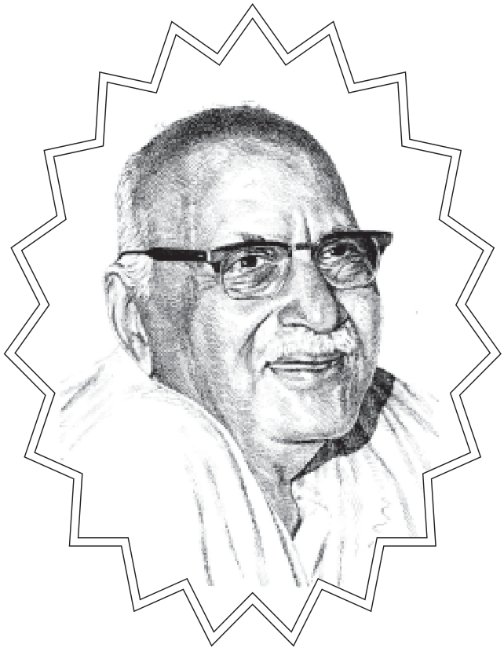

॥ श्रीहरिः ॥
सरस-प्रसंग

हनुमानप्रसाद पोद्दार
गीतावाटिका प्रकाशन, गीतावाटिका - गोरखपुर के मूल ग्रंथ
— सरल एवं सुगम पठन के लिए नवीन प्रस्तुति।
॥ ॐ श्रीपरमात्मने नमः ॥
नम्र निवेदन
परमात्मा या भगवान् सत् हैं तथा उस सत्के साधन एवं सत्यके प्राप्त होनेपर स्वभावतः ही सत्पुरुषमें दीखनेवाले गुण भी सत् हैं अर्थात् सद्गुण, सदभाव, सद्विचार, सदाचार, सद्व्यवहार, सत्यभाषण, सत्–आहार और सदूविहार-जो कुछ भी भगवानके प्राप्त्यर्थ, प्रीत्यर्थ या सहज दैवीगुणरूपमें विकसित भाव-विचार-गुण-कर्म आदि हैं, सभी सत् हैं और ये जिसके जीवनमें प्रत्यक्ष प्रकट हैं, वे ही सत्पुरुष हैं । ऐसे सत्पुरुषोंका या उनके सदाचारों तथा सद्विचारोंका संग ही ‘सत्संग’ है । इस प्रकारके ‘सत्संग’ में ही वास्तविक ‘सत्–कथा’ प्राप्त होती है।
सत्कथासे ही मनुष्यको अपनी भूलोंका पता लगता है और भवाटवी से निकलकर सच्चे सुखकी प्राप्तिका सन्मार्ग, उसका पाथेय, प्रकाश और सहायक शुभ संग प्राप्त होता है। सत्कथाओंमें भी जो प्रभाव उपदेशका पड़ता है, उससे बहुत अधिक घटना-प्रसंगोंका पड़ता है । विषय-वासना, भोग-कामना, कामोपभोगपरायणता, भोगार्थ दुष्कर्ममें प्रवृत्ति, अन्यायसे अर्थोपार्जनकी वृत्ति आदि सभी दोषोंको मियाकर जो आत्महित, लोकहितके साथ-साथ भगवत्–प्रीतिसम्पादनमें सहायक और प्रेरक हो, जिससे दैवी सम्पत्तिके गुणोंका विकास तथा संवर्धन होता हो, ऐसी घटनाओंका श्रवण, कथन, मनन ही ‘सत्कथा ‘का सेवन है।
सत्कथाके सेवनसे मनुष्यको अपने कर्तव्यका ज्ञान होता है। अपने प्रति तथा दूसरों के प्रति कैसे बरतना चाहिये-यह बात ठीक समझमें आती है । संसारमें किस प्रकार रहना चाहिये, घरमें रहते हुए भी बन्धन न हो, कोई भी काम या चेष्टा ऐसी न हो, जिससे किसी भी प्राणीका अहित होता हो । सदा स्वाभाविक ही सबका हित-परहित होता रहे, इसकी सच्ची जानकारी उन पुरुषोंकी जीवन-घटनाओंसे ही प्राप्त होती है, जो ऐसे हैं और जिनके जीवनमें ये चीजें प्रत्यक्ष देखी जाती हैं । हमारे ऋषि घोषणा करते हैं–
श्रूयतां धर्मसर्वस्वं श्रुत्वा चैवावधार्यताम्।
आत्मनः प्रतिकूलानि परेषां न समाचरेत्॥
(पद्मपु०/सृष्टिखण्ड/१९/३५५/३५६ )
अर्थात् ‘धर्मके सार-सर्वस्वको सुनो और सुनकर उसे धारण करो-वह धर्मसर्वस्व यही है कि जो-जो कार्य या व्यवहार तुम्हारे मनके प्रतिकूल है, दूसरोंके साथ उन्हें न करो।’ इसका यथार्थ रूप कैसा होना चाहिये, इसको समझना और जीवनमें उतारना मानवजीवनकी पूर्णताके लिये अत्यावश्यक है । जिनके जीवनमें ये चीजें मूर्तिमान् हुई हों, जिन्होंने इनका प्रत्यक्ष पोषण और सेवन किया हो, उनकी उन जीवन-घटनाओंसे इनको प्राप्त करनेकी तीव्र प्रेरणा मिलती है, करनेकी युक्ति प्राप्त होती है और प्राप्त करके कैसे उनका सेवन किया जाता है इसके लिये एक अनुभवपूर्ण आदर्श मिलता है । यही ‘सत्कथा’को विशेषता तथा उपादेयता है।
प्रत्येक कल्याणकामी बालक –वृद्ध, नर-नारी, गृहस्थ, विरक्त मानवमात्रको ‘सत्कथा’का श्रवण, मनन और अध्ययन करके उसके अनुसार जीवन बनानेका प्रयत्न करना चाहिये । यही विनीत प्रार्थना है । (संकलित)
–हनुमानप्रसाद पोद्दार
॥ ॐ श्रीपरमात्मने नमः ॥
प्रकाशकीय निवेदन
परम श्रद्धेय ‘भाईजी’ श्रीहनुमानप्रसादजी पोद्दारकी अपनी एक विशिष्ट शैली थी कि वे कठिन विषयोंको सरल सुबोध भाषामें व्यक्त करते थे । वे दृष्टान्तोंके द्वारा गूढ़ शास्त्र-वचनोंको भी लोगोंको हदयङ्गम करा देते थे। ये सभी प्रसंग श्रीभाईजीके प्रवचनों और लेखोंसे संकलित किये गये हैं जो प्रत्येक कल्याणकामी आबाल वृद्ध नर-नारीके लिये प्रेरक तथा पथ-प्रदर्शक तो होंगे ही साथ ही प्रवचनकारों और व्याख्याकारोंके लिये भी उपयोगी हैं ।
॥ ॐ श्रीपरमात्मने नमः ॥
१. विशुद्ध प्रेम
जहाँ प्रेम केवल प्रेमके लिये होता है वहाँ प्रेमको विशुद्धि बनी रहती है। जहाँ प्रेम किसी दूसरे आधारपर उपस्थित हो गया और किसी दूसरेको वह चाहने लगा तब वह प्रेम कलंकित हो जाता है और उस प्रेमका केवल प्रेम नाम रह जाता है।
एक कथा है। समर्थ रामदासजी शिवाजीके गुरु थे। शिवाजीने अपना सारा राज्य समर्थ गुरु रामदासजीको समर्पित कर दिया था। रामदासजीने उसे स्वीकार किया था और भगवा झण्डा उस राज्यका निशान बना। रामदासजीने राज्यके अमात्यके रूपमें शिवाजीको नियुक्त करके राज्यका संचालन उन्हें सौंप दिया। उन्होंने कहा कि तुम राजाके प्रतिनिधिके रूपमें राज्यका संचालन करो। वे संचालन करने लगे । रामदासजी महाराज बड़े सिद्ध पुरुष थे। वे महात्मा थे, सन्त थे । सन्तोंके पास जब भीड़ लगती है तो वह भीड़ केवल प्रेमियोंकी ही नहीं होती है। न मालूम कितनी-कितनी भावनासे लोग आते हैं। किसीको धन चाहिये, किसीको बीमारीसे मुक्ति चाहिये, किसीको पुत्र चाहिये, किसीको उपाधि चाहिये, किसीको पाप-नाश चाहिये, किसीका पुण्य उदय होना चाहिये, किसीपर कोई देवता प्रसन्न हो जायें, किसीको कहीं लाभ हो जाय-इस प्रकार न मालूम कितने लोग इकट्ठे हो जाते हैं। यह सब मैं अनुभवकी बात कह रहा हूँ। इन भावनाओंसे जमा हुए लोग तभीतक रहते हैं जबतक मिलनेकी आशा होती है नहीं तो सब भाग जाते हैं। जो रह जाते हैं वे सत्य होते हैं ।
एक महात्माने मुझे एक सच्ची घटना सुनायी । उन्होंने कहा-एक महात्मा थे। उनके बहुत भक्त थे। वे कहते कि हम तो आपके चरणोंकी पूजा करेंगे। हम तो आपके चरणका अँगूठा धोया पीयेंगे। सब अँगूठा पीनेके लिये आतुर। उनको कोढ़ हो गया। शरीरसे मवाद चूने लगा। अब वहाँ एक बचा बाकी निकल गये। उसने कहा कि जैसे मैंने स्वस्थ और सुन्दर चरणोंका चरणोदक पान किया है उसी प्रकार आपकी अस्वस्थतामें भी पान करूँगा । वह पान करनेसे कोढ़ी हो गया। दोनों कोढ़ी हो गये। अब लोगोंने कहा कि हमलोग तो बुद्धिमान् निकले, बच गये । परन्तु उन दोनोंका कोढ़ तो मायिक था जो निकल गया। वैसे आनेवाले सभी चले गये ।
इसी प्रकारकी एक घटना रामदासजीके जीवनमें भी एक बार हुई। रामदासजीके पास भीड़ लग गयी। सुबहसे रात दो बजे तक रामदासजी महाराज न सो सकें न उठ सकें। सब भगवान्का भजन करें और सभी कहें कि हम बड़े प्रेमी-हम बड़े प्रेमी हैं । प्रेमी तो कोई था नहीं, परन्तु कोई भी रंचमात्र भी अपना प्रेम कम मानता नहीं था। सभी मानते कि हमारा उससे अधिक है, परन्तु यह कोई नहीं मानता कि मेरेमें प्रेम कम है। और, ऐसा यदि कभी कहता तो व्यंग्यमें कहता कि हमारा तो कम रिश्ता है आपके प्रति। वहाँपर सभी प्रेमका दावा करने लगे। अब रामदासजीको मुश्किल हो गयी । रामदासजीने सोचा इस परेशानीसे कैसे छुटकारा मिले? वे महात्मा थे। उन्होंने एक युक्ति सोची। एक दिन उनका पैर फूल गया। पैरोंमें सूजन आ गयी। उन्होंने पैरोंमें पट्टी बाँध ली और कराहने लगे। लोग इकट्ठा हो गये और बोले-महाराज! दर्द बहुत है । क्या करें? डॉक्टर, वैद्य बुलायें? लोग दवा लाने लगे, धन लगाने लगे कि येन-केन-प्रकारेण महाराजका दर्द समाप्त होना चाहिये। हमारे प्राण चले जायँ, परन्तु आपका दर्द मिट जाय, आपका पैर ठीक हो जाय। महाराजजी सब सुनते रहे। दूसरे दिन सारी मण्डली बैठी थी। सारे त्याग करनेको तैयार थे। लोगोंने सोचा कि आखिर महाराजजी कौन-सा त्याग यहाँपर माँगेंगे? महाराजजी बड़े दक्ष थे। उन्होंने कहा-मैंने इसकी दवा सोच ली है। किसी और उपायसे तो यह अच्छा होगा नहीं। इस पैरके अँगूठेमें मवाद भर गयी है। इस मवादको कोई भक्त मुँह लगाकर चूसे, उसे फेंके नहीं बल्कि पी जाय तब वह तो मर जायेगा परन्तु मेरा पैर अच्छा हो जायेगा। एकने कहा-महाराज ! यह बात तो आपने ठीक कही है। शेषमेंसे लोगोंने सोचा कि किसी तरहसे यहाँसे भागें फिर कौन यहाँ आयेगा। अब किसीको लघुशंका लगी, किसीने कानपर यज्ञोपवीत लगाया, किसीको खाँसी आ गयी, किसीके घरका आदमी आ गया और किसीको कुछ समाचार आ गया वे निकल गये। किसीने कहा-महाराज! क्या करें, मैं तो बीमार रहता हूँ। सबके सब चल दिये। आश्रम खाली हो गया। केवल एक भक्त बचा। उसने कहा-महाराज ! आपने जैसा सोचा है, मैं वैसा ही करूँगा । उन्होंने कहा-मर जाओगे । वह बोला-मर ही तो जायेंगे, आपका यह पैर तो अच्छा हो जायेगा । उन्होंने कहा-हाँ, पैर तो अच्छा हो जायेगा। रामदासजीने पुनः कहा-फिर चूसो और सबको बुला दो। उसने लोगोंको बुलाया और अँगूठा चूसने लगा। अब सब लोग आने लगे धीरे-धीरे कि यह तो चूस रहा है; अब अपना नम्बर आयेगा ही नहीं। लोग आकर कहने लगे कि मैं तो आ ही रहा था, परन्तु यह कार्य आ गया अन्यथा मैं तैयार था। यह इसके भाग्यमें था। मेरे भाग्यमें ऐसा कहाँ? मैं चाहता था कि यह पुण्य मुझे मिले, यह सेवा मुझे मिले परन्तु मेरा भाग्य ही ऐसा था कि अमुक कार्यमें फँस गया। अब सबके सब श्रेय लेनेको तैयार थे। यह बिल्कुल मनोवैज्ञानिक तथ्य है। वहाँ था क्या? रामदासजीको तो भीड़ हटानी थी। इसलिये उन्होंने एक पका तोतापुरी आम अपने अँगूठेमें बाँध लिया था। आमका मुँह सामने था। वह ऊपरसे ऊँचा और आखिरमें नीचा चोंचदार था। आम रस भरा मीठा था। वह भक्त जब चूसने लगा तो उसको स्वाद आने लगा और मजेमें पूरा चूस गया। फिर बोला-महाराज ! यह मवाद नहीं है। यह तो बहुत मीठा है । गुरुजीने कहा-गुरुकी मवाद ऐसी ही होती है। जो चूस लेता है उसीको पता लगता है कि वह कैसी है। आम चूस लेनेके बाद सिर्फ गुठली बची। महाराजजीने जाकर गुठली फेंक दी। उनका पैर अच्छा हो गया; अच्छा तो था ही। उन्होंने पैर साफ कर लिये। लोगोंने कहा-महाराज ! हम भी ऐसा कर लेते। उन्होंने कहा-तुम लोग यहाँसे भागो। जिसने मवाद चूसी है सिर्फ वही रहेगा। शेष तुम लोग चले जाओ । उन सबको भागना ही था, वे भाग गये। इस प्रकारका प्रेम, प्रेम होता है।
॥ ॐ श्रीपरमात्मने नमः ॥
२. नाम-जप
भक्त भगवानके मिलनकी अपेक्षा भगवानके भजनको अधिक प्रिय समझता है। भजन जब जीवन बन जाता है तब उसके बिना रहा नहीं जाता है। कोई कहे भी कि छोड़ दो तब कहेंगे कि छोड़ें कैसे रहा नहीं जाता है।
एक महात्माकी सच्ची घटनाका उल्लेख यहाँ कर दें। चैतन्य महाप्रभुके शिष्योंमें एक सज्जन थे। उनका नाम-जपका इतना अभ्यास था, उनकी जीभ इतनी अभ्यस्त हो गयी थी और उनको इतना मजा-आनन्द आता था कि सोनेमें भी उनका नाम-जप होता रहता था। जब नींदमें भी जप हो तब जाग्रत् अवस्थामें क्यों न हो। एक दिन वह जंगलमें शौचके लिये गये। उनका नाम जप चल रहा था। एक सज्जन उनके पीछे हो लिये। जो दोष देखनेवाले होते हैं, उनका काम ही यही होता है। ऐसा मैंने भी देखा है कि जब ध्यान करते हैं तब कई लोग कहते हैं कि अमुक-अमुक व्यक्ति सो रहा था, मैंने देखा है। मैंने पूछा कि आप क्या कर रहे थे? दूसरेके दोष बिना हुये और बिना जाने-समझे कहनेमें उन्हें आनन्द मिलता है । खैर, उस व्यक्तिने आकर महाप्रभुसे कहा-महाराज ! वह आदमी इतना गन्दा है कि शौच करते हुये भी भगवानका नाम लेता है। महाप्रभुने कहा-एऐसा करता है? उसने कहा-हाँ, ऐसा करता है। महाप्रभुने कहा-उसे बुलाओ। वे सज्जन आये तब महाप्रभुने कहा-यह कह रहा है कि तुम शौच करते हुये भगवानका नाम लेते हो। वे बोले-हाँ, ऐसा करता हूँ । महाप्रभुने कहा-ऐसा नहीं करना चाहिये । उन्होंने कहा-ठीक है। फिर दूसरे दिन जब वे महात्मा शौचको गये तब फिर वह गया और देखा कि वे शौच कर रहे हैं और जीभ पकड़े हुये बैठे हैं। उसने आकर फिर महाप्रभुसे कहा-महाराज! वह तो अत्यन्त भ्रष्ट है। कल तो केवल बोल ही रहा था परन्तु आज तो शौच करते हुए हाथ-मुँहमें डाले हुए था। महाप्रभुने कहा-ऐसी बात है तब उसे बुलाओ। वह आया तो महाप्रभुने कहा कि ये कह रहे हैं कि तुम शौच करते हुए मुँहमें हाथ रखे थे । उन्होंने कहा-महाराज! ये ठीक कह रहे हैं। परन्तु आपने ही कहा था कि शौच करते समय नाम मत लो। मेरी जीभ मानती ही नहीं तो मैं क्या करूँ? आपकी आज्ञा थी, इसलिये जीभ पकड़कर बैठ गया। महाप्रभुने कहा-अब तुम जाओ और हमेशा जप किया करो।
इस प्रकार जप जिसके जीवनका स्वभाव बन जाता है वह भजन है। अगर भजन न रहे तो जीवन न रहे। भगवान्की स्मृति ही जीवन है।
॥ ॐ श्रीपरमात्मने नमः ॥
३. भगवत्–स्मरणका साधन
जो केवल भगवान्को चाहता है, भगवान् भी उसको उसीरूपमें चाहते हैं । जो भगवानका हो जाता है, उसके लिये भगवान् भी उसी रूपमें हो जाते हैं। अगर हम चाहें तो भगवान् बच्चे बनकर हमारी गोदमें खेलें। कोई अपनेको यशोदा मान ले तो उस माँको गोदमें वे वैसा-वैसा ही करते हैं।
एकबार मैं अनूपशहर गया। वहाँपर एक रमणशंकरजी मेहता थे। उनके एक बहन थी। उसने मुझसे पूछा कि भगवान्का ध्यान कब किया जाय? में उसके भावोंसे अनभिज्ञ था और अज्ञानतावश कह दिया कि ब्राह्ममुहूर्तमें ध्यान करना चाहिये । सूर्योदयसे पूर्व करनेमें अधिक लाभ होता है। वह बोली-भाईजी! उस समय तो लालो सोये । तब मुझे ध्यान आया कि इसका लाला तो उस समय सोता है। सचमुच, यह उस समय क्यों जगायेगी? यह तो तब जगायेगी जब जागनेकी बेला होगी । फिर मैंने उससे विस्तारसे पूछा, तब उसने बताया कि लाला जब जागता है तो सबसे पहले मैं उसे प्यार करती हूँ। कभी-कभी तो वह बिना मुँह धोये ही कह देता है कि आज माखन खाऊँगा। बच्चा जो ठहरा। में उसे माखन खिला देती हूँ और वह मुँहमें माखन लगे-लगे खेलने बैठ जाता है। मैं उबटन और जल लिये बैठी रहती हूँ कि कब यह आवे तो इसे नहलायें। यह खेलने चला जाता है और में पीछे-पीछे देखने जाती हूँ। यह सब मनुष्य ही हैं परन्तु हमारी दृष्टि बाह्य जगतमें होनेसे हम केवल बाहर-बाहर ही देखते हैं। इन लोगोंको जो आनन्द है वह उन्हें पता है। सूरदासजीका उदाहरण देखिये, अन्धे थे लेकिन आनन्दविभोर होकर लीलामें विचरण करते थे। बाललीलासे लेकर न जाने कहाँतक पहुँच गये और कहते हैं कि यह देखा-यह देखा।
यह भगवान्का स्वभाव है कि हम भगवान्को जब चाहें जिस रूपमें चाहें तब भगवान् उसी रूपमें हमारे अपने बन जाते हैं। भगवान् सचमुच प्रेमके वशमें हैं लीलासे-लीलया।
॥ ॐ श्रीपरमात्मने नमः ॥
४. परीक्षण
साधनका उपदेश होता है अधिकारीको। जिस प्रकार डाक्टर मरीजकी परीक्षा करके निदान करता है कि उसे क्या रोग है? तब दवा सोचता है। उसी प्रकार गुरु शिष्यकी परीक्षा करता है तब उसे यथाधिकार उपदेश देता है।
एक सज्जन गये गुरुके पास और बोले-मुझे उपदेश दीजिये । गुरुने कहा तुम्हें क्रोध बहुत आता है। तुम एक वर्षतक क्रोधपर विजय प्राप्त करो फिर आओ । और हाँ, नहा करके आना। एक वर्ष बाद वे आये। गुरुजीने मेहतरानीसे कह दिया कि देखो, एक काम करना। यह सज्जन जब स्नान करके आयें तो इनके बगलसे झाड़ देना जिससे थोड़ी गर्द उड़े। इन्हें छुना नहीं। जब स्नान करके तैयार होकर गुरुके पास उपदेश प्राप्त करनेके लिये आने लगे तब मेहतरानीने गर्द उड़ा दी। इनको थोड़ी गर्द लगी तो ये गुस्सा हो गये। उसे मारने दौड़े तो वह भाग गयी । फिर गुरुके पास आये तो गुरुजीने कहा-तुम्हें अभी क्रोध आता है। तुम मारनेके लिये दौड़ते हो। अभी एक वर्ष और अभ्यास करो। अपनेको अधिकारी बनाओ । पुनः एक वर्ष बाद वे वहाँ आये। इस बार गुरुजीने मेहतरानीसे कह रखा था कि वे जब आयें तो जरा-सा झाड़ उसे स्पर्श करा देना। मेहतरानी बोली-वह मारेगा। गुरुजी बोले-मारेगा नहीं । तुम ऐसा करना। वह जब स्त्रान करके तैयार होकर आये और समीप पहुँचे तो मेहतरानी वहाँ खड़ी थी। उसने झाड़ छुआ दिया। वे मारनेको उद्यत तो नहीं हुए परन्तु उसे दुर्वचन बोले। उन्होंने कहा-तुमने मेरी दो सालकी मेहनत बेकार कर दी। फिर गुरुजीके पास आये और बोले-महाराज! बोध प्राप्त कराइये। गुरुजी बोले-अभी बोध प्राप्त करोगे? अभी तो तुम गाली बकते हो। एक वर्ष और अभ्यास करो, तैयारी करो। क्रोधका नाश होनेपर उपदेश मिलेगा। वह व्यक्ति सच्चा था। अन्यथा कहता-दछोड़ो ऐसे गुरुको । आते हैं उपदेश प्राप्त करने और साल-सालभर तक नाक रगड़ाता है। हमें तो अभी ब्रह्मज्ञान चाहिये। ऐसे लोगोंको ब्रह्मज्ञान मिल भी जाता है और वे मान भी लेते हैं परन्तु वह होता है-भ्रमज्ञान। ब्रह्मके बदले भ्रम होता है। तीसरे साल जब वे सज्जन आये तब गुरुजीने मेहतरानीसे कहा कि जब ये मेरे पास आने लगें तो इनके ऊपर कूड़ेकी टोकरी उड़ेल देना। वह बोली-मारेगा। गुरुजीने कहा-आज तो बिल्कुल नहीं मारेगा। इसकी तीन वर्षकी लगातार साधना हो गयी है। वे बेचारे जब गंगा स्नान करके तैयार होकर आने लगे तो मेहतरानी भी तैयार खड़ी थी। गुरुजीने उससे कह रखा था कि डरना नहीं, आज वह कुछ नहीं करेगा। उसने उनके ऊपर कूड़ेकी टोकरी उड़ेल दी। उसके टोकरी उड़ेलते ही वे दण्डवत् गिर पड़े और बोले-मैया! तुम्हीं तो मेरी गुरु हो। तीन वर्षतक तुम्हींने परीक्षा करके मुझको इस योग्य बनाया। मैं तुम्हारा कृतज्ञ हूँ। माँ! मैं तेरा ऋणी हूँ। वह गद्गद हो गयी। ये सज्जन फिर स्नान करने गये और तैयार होकर गुरुजीके पास आये और निवेदन किया। गुरुजीने कहा-अब तुम योग्य हो गये। आज तुम अधिकारी हुए। आज तुम्हें ज्ञान देंगे।
॥ ॐ श्रीपरमात्मने नमः ॥
५. सुन्दर साधन
भगवान्में मन लगानेका बड़ा सुन्दर आधार है कि भगवान्के साथ कोई सम्बन्ध जोड़ ले । सम्बन्ध जोड़ लेनेपर फिर मन न लगे यह तो हो नहीं सकता। जिसको जो जँचे वही सम्बन्ध जोड़े।
जब मैं बम्बईमें रहता था उस समय जिस मकानमें मैं रहता था उसीमें एक सज्जन रहते थे। उनका नाम था घासीराम डालमिया। उनकी स्त्रीका देहान्त हो गया था। उनके यहाँ एक गोपालजीकी प्रतिमा थी। वह उनको गोपालिया कहते थे। उनकी बड़ाई आदि किया करते थे। वह दिनमें चार-पाँच बार दूकानसे सामान लेकर आते। कभी गोपालियाको खिलाना है, कभी पानी पिलाना है, कभी देखना है, कभी कुछ, कभी कुछ करना है-ऐसा कहते। मैंने उनसे पूछा-आप बार-बार दूकानसे भागकर क्यों आते हैं? वे बोले– भाईजी! गोपालियाको कहीं भूख लगी हो, कहीं प्यास लगी हो या कहीं गरमी लगती हो तो बिना सम्भाले कैसे काम चलेगा? इसे बड़े आदमी समझ सकते हैं कि भगवान्को क्या भूख लगेगी? क्या भगवान् खायेंगे? यह सब मन्द अधिकारियोंकी बातें हैं। यह नीची बातें हैं। नीची नहीं, यही तो जादू है। जो निष्काममें कामना पैदा कर देता है। जो आप्तकामको कामी बना देता है। जो नित्यतृप्तको अतृप्त बना देता है-यह प्रेम। यही तो चीज है।
पत्रं पुष्यं फलं तोयं यो मे भक्त्या प्रयच्छति।
तदहं भक्त्युपहृतमश्वामि प्रयतात्मनः ॥
(गीता ९।२६)
भगवान्ने यहाँ ‘अश्रामि’ कहा-खाता हूँ। और ठीक यही शक श्रीमद्भागवतमें सुदामाके प्रसंगमें भगवान् श्रीकृष्णने अपने श्रीमुखसे कहा है। ये दाने प्रेमसे सने हुए हैं। ये सारे विश्वको तृप्त करनेके लिये पर्याप्त हैं और तुम मेरी बात कहते हो-भगवान्ने कहा और फर्शपर पड़े दानोंको बीनकर मुट्ठी भर चबा गये। यह क्या चीज है? यह प्रेम है।
घासीरामजी अपने गोपालियाको लेकर वृन्दावन आ गये। वृन्दावनमें एक महात्मा थे रामप्रसादजी । फिर उनका नाम हो गया था राधिकादासजी । वे संस्कृतके प्रकाण्ड पण्डित थे। वे संस्कृत और हिन्दीके कवि भी थे और वृन्दावनके बड़े रसिक थे। उन्हींके पास घासीरामजी रहते थे। राधिकादासजी घासीरामजीको बहुत मानते थे। एक दिन घासीरामजीने राधिकादासजीसे कहा-अब तो गोपालिया जिद करता है। कहता है कि अब तुम मेरे साथ चलो। रोज कहता है कि अब मेरे साथ चलो । राधिकादासजीने उनसे कहा-क्या जल्दी है? यहीं खेलो उसके साथ। वे बोले-नहीं, रोज कहता है। जब भोग लगाते हैं तब कहता है कि मेरे साथ चलो। अब, चल मेरे साथ। उनसे एक दिन राधिकादासजीने कह दिया कि यदि उसकी बड़ी इच्छा है तो जाओ । घासीरामजीने कहा-ठीक है। घासीरामजी सबेरे यमुना-स्नान करने गये। बादमें वहाँ एक पत्थरपर कागज लिखा मिला कि मैं गोपालियाके साथ जा रहा हूँ। अब वह कहाँ गये-यह मैं नहीं जानता परन्तु मेरा विश्वास ऐसा है कि वे गोपालियाके साथ गये। क्योंकि एक बड़ी सुन्दर चीज है कि जगत् असत् है और भगवान् सत् हैं। जो है उसका कभी अभाव नहीं होता है। किसी देशमें, किसी कालमें, किसी समय, किसीके लिये जो है उसका अभाव नहीं होता है और जो नहीं है उसकी सत्ता नहीं होती है।
॥ ॐ श्रीपरमात्मने नमः ॥
६. सौन्दर्य
सौन्दर्य मनको विषयको ओर आकर्षित करता है। यह हमारे मनको एक कल्पना है। सुन्दरताकी धारणा हमने अपने मनमें कर रखी है और वह धारणा भिन्न-भिन्न है।
एक कथा है कि एक गाँवमें एक घर ब्राह्मणका था। उसमें अकेली ब्राह्मणकी लड़की, जो तरुणी थी और विधवा हो गयी थी, रहती थी। वहाँके जमींदारका लड़का जो दुष्ट-प्रकृतिका और जबरदस्त था, बुरी नीयतसे लड़कीके पास गया। वह बड़ी बुद्धिमती थी । उसने सोचा कि जोर-जबरदस्तीसे यह मानेगा नहीं क्योंकि दुष्ट प्रकृतिका है और समर्थ है। उसने कहा-मैं रजस्वला हूँ। तुम चार दिन बाद आना । वह चला गया। इसके बाद उसने अधिक मात्रामें जमालगोटा मँगाकर खा लिया। इससे उसको दस्त पर दस्त होने लगे। उसने चौकेपर एक नाद रख ली और उसीमें टट्टी जाने लगी। वह क्षीणकाय हो गयी। उससे उठा न जाय। चेहरेपर झुर्रियाँ पड़ गयीं। बड़ी खराब हालत हो गयी। वह चारपाईपर सोई रही। चौथे दिन जमींदारका लड़का आया। उसने पूछा कि यहाँ एक ब्राह्मणी रहती थी, वह कहाँ गयी? घरमें कोई और तो था नहीं। वह एक थी। वह आगे बढ़कर उसके पास गया और देखा कि एक निर्जीव-सी स्त्री लेटी है। उसने फिर पूछा कि यहाँ जो ब्राह्मणी रहती थी वह कहाँ गयी? तब उसने बड़ी क्षीण आवाजमें कहा-वह मैं ही हूँ। उसने कहा-तुम तो बड़ी रूपवती थी। तुम्हारा वह रूप कहाँ चला गया? ब्राह्मणीने कहा–’उस नादमें जाकर देख लो। सारा रूप उसमें है। तुम्हें रूप चाहिये तो जाकर उस नादमें नहा लो।’ वह कुछ बोल न सका। हमारे रूपका, सौन्दर्यका यह परिणाम है। कहाँ सुन्दरता-सौन्दर्य है? हम केवल मिथ्या कल्पना कर लेते हैं कि अमुक वस्तु सुन्दर है और उसके पीछे अपने जीवनको खो देते हैं ।
॥ ॐ श्रीपरमात्मने नमः ॥
७. भगवान्की लीला
संसारको सत्ता प्रतिक्षण मिटती है। जगतमें दो ही चीजें हैं-लीला और लीलामय। जिस प्रकार एक ही स्वप्रद्रष्टा पुरुष स्वप्रकी सृष्टि रचता है और उसका अनुभव करता है। उसी प्रकार एक ही परमात्मा-एक ही लीलामय संसारमें लीलारत है।
एक प्राचीन कथा है कि महाराज जनक अपने महलमें सो रहे थे। सोते हुए उन्हें स्वप्न॒ आया कि किसी दूसरे राजाने उनपर आक्रमण कर दिया। उसने विजय प्राप्त कर ली और इनका सबकुछ छिन गया। उसने मुनादी करवा दी कि इन्हें कोई खाने-पीनेको कुछ न दे और इस राज्यकी सीमाके बाहर कर दिया जाय। इन्हें ऐसा स्वप्र आ रहा और उस स्वप्रमें ही तीन दिन व्यतीत हो गये परन्तु राजाको कुछ खाने-पीनेको नहीं मिला। भूख-प्याससे पीड़ित राजाको कोई आश्रय देनेके लिये तैयार नहीं। चौथे दिन वे उस राज्यकी सीमाके बाहर उस स्थानपर पहुँचे जहाँ अन्न-सत्र चल रहा था। सबको भोजन दिया जा चुका था तब ये रोते हुए वहाँ पहुँचे और कुछ देनेके लिये निवेदन किये। अन्न क्षेत्रके व्यक्तिने कहा-भाई! और कुछ तो नहीं है, इस पात्रमें जली हुई खिचड़ीकी खुरचन लगी है, इसे ले लो। भूख तो इन्हें लगी ही थी। इन्होंने खुरचन लेकर ज्योंही खाना प्रारम्भ करना चाहा त्यों एक चीलने झपट्टा मारा और खिचड़ी गिर पड़ी। खिचड़ी नीचे गिरते ही इन्होंने जोरसे चीखा और यह चीख असली हो गयी । स्वप्र टूट गया, राजा भाग गये । राजाकी यह चीख महलमें लोगोंने सुनी। तुरन्त रानियां, नौकर-चाकर, दास-दासी, दीवान साहब दौड़े आये। डॉक्टर, वैद्य बुलाये गये। सबने पूछा-महाराज ! क्या हुआ? अब, महाराज बड़े असमंजसमें पड़ गये। बोले-क्या बताऊँ?
राजाने देखा कि मैं तो राजमहलमें इस पलँगपर बिछे मखमली गद्देपर लेटा हूँ परन्तु अभी-अभी तो मैं भूखा-प्यासा था, राज्यसे निर्वासित था। मैं उसका अनुभव भी कर रहा था। अब यह सच्चा है कि वह सच्चा? राजाके मनमें यह प्रश्न आ गया कि यह सच्चा या वह सच्चा। यह प्रश्न उनके जीवनमें आ गया। जिसे भी देखें उससे यही प्रश्न करें। वैद्योंन निदान किया कि राजाका मस्तिष्क किसी स्वप्रको देखकर भ्रमित हो गया है। वे पागल हो गये हैं। राजा महलमें बैठे रहते । जो खानेको दिया जाता वह खा लेते और जो भी मिलता उससे यही पूछते यह सच्चा या वह सच्चा?
एक दिन अष्टावक्र मुनि राजमहलमें आये। वे बड़े तपस्वी, योगी, सिद्धपुरुष थे। मुनिको राजाके स्वप्रका पूरा वृत्तान्त बताया गया। अष्टावक्रजी बड़े मनोवैज्ञानिक, पंडित थे। उन्होंने समझ लिया कि स्वप्र ही राजाकी इस स्थितिका मुख्य कारण है। वे राजाके पास बैठ गये और वार्ता शुरू की ।
अष्ट्रावक्न –राजन्! जिस समय तुम राज्यसे निर्वासित किये गये और तुम्हारा सब कुछ छीन लिया गया उस समय तुम राजा थे क्या?
जनक मुनिवर! उस समय मैं एकदम साधारण व्यक्ति था।
अष्टावक्र –जब तीन दिनोंतक तुम्हें कोई आहार नहीं मिला तब तुम्हारी क्या हालत थी?
जनक –मैं भूख-प्याससे बेहाल था।
अष्टावक्र –जब तुम उस अन्न क्षेत्रमें गये तब तुम्हारे पास यह महल नहीं था नऽ?
जनक महाराज! महल क्या था? मैं तो राज्यसे ही निर्वासित था।
अष्ठावक्र-उस दिन तुम्हें खिचड़ीकी खुरचन दी गयी तो तुमने ले ली?
जनक –लेता कैसे नहीं? में भूखसे व्याकुल था।
अष्टावक़-जब चीलने झपट्टा मारा तो बड़ा दुःख हुआ?
जनक हाँ, मुनिवर! दुःख हुआ लेकिन तुरन्त मैं जाग गया।
अष्टावक़-राजन् ! अब बताओ, जिस समय तुम निर्वासित होकर जा रहे थे उस समय यह महल, रानियाँ, दीवान, सिपाही, गहने-कपड़े थे क्या?
जनक नहीं थे।
अष्टावक्र –अब बताओ, तुम महलमें हो नऽ?
जनक हाँ, महलमें हूँ।
अष्टावक्-अब वह अन्नक्षेत्र यहाँ है क्या?
जनक नहीं है।
अष्ट्ावक्न –अब वैसी भूख-प्यास और अन्य परेशानी है क्या?
जनक नहीं, अब बिल्कुल नहीं है।
अष्टावक़-राजन् ! तुम्हारे प्रश्नका सीधा उत्तर हो गया कि ‘जैसा यह वैसा वह’ और जैसा वह वैसा यह । जाग्रतूमें स्वप्न नहीं और स्वप्रमें जागत् नहीं । जाग्रतूका संसार स्वप्रमें नहीं और स्वप्रका जाग्रतूमें नहीं । जबतक तुम जागे नहीं तबतक यह संसार नहीं रहा और जब जाग गये तब वह नहीं रहा। इसलिये दोनों एक-से हुए न!
जनक –कैसे?
अष्टावक़-स्वप्रमें इस संसारको सत्ता थी क्या?
जनक नहीं ।
अष्टावक़-और अब संसारमें स्वप्रकी सत्ता है क्या?
जनक नहीं ।
अष्टावक्र –ठीक, इसी प्रकार सत्ता ही नहीं है। तुम अपने आप जैसे स्वप्रमें देख रहे थे वैसे ही जागरणमें देख रहे हो। जागृतके जगत्का जो अधिष्ठाता है वह जागरणके जगत्को देखता है और स्वप्रजगत्का जो अधिष्ठाता है वह स्वप्रके जगत्को देखता है। तुम दोनोंको देखनेवाले हो। वास्तवमें दोनोंकी सत्ता नहीं है।
॥ ॐ श्रीपरमात्मने नमः ॥
८. हम कैसे हैं?
सच्ची चीज अन्तःकरणकी स्थिति है। कोई कैसा है, इसे जाननेके लिये उसके हृदयको देखो। उसके अन्तःकरणमें जो है, वह वैसा ही है–’यो यच्छद्धः स एव सः (गीता १७/३)
सुकरातके पास एक बार कुछ ज्योतिषी आये। उन्होंने उनका हाथ देखकर कहा-तुम तो बड़े कामी पुरुष प्रतीत होते हो। उनके शिष्य क्रोधावेशमें बोले-मेरे गुरुजीको ऐसा कहते हो? सुकरातने कहा–‘यह ठीक कहते हैं। तुमने ऊपर-ऊपरसे देखा है। इन्होंने मेरे मनको देखा है।’ जहाँ मन है वहाँ हम हैं। जैसा मन है वैसा हम हैं। न नाममें, न वेशमें और न ऊपरकी क्रियाका कोई महत्व है । महत्व है मनमें।
॥ ॐ श्रीपरमात्मने नमः ॥
९. अनन्य भाव
परम तत्त्व एक ऐसे रूपमें हमारे सामने आ सकता है जो खेलनेवाला हो, प्रत्यक्ष नाचनेवाला हो, हमारे साथ खाने-पीने वाला हो, हँसने-बोलनेवाला हो और हमें गले लगानेवाला हो। यह हो सकता है यदि उस स्वरूपके भावमें अनन्यता हो।
डा० राजेन्द्र बाबूके गुरु थे रामाजी महाराज। वे बिहारके थे। रामाजी महाराज बड़े महात्मा हुए। वे दूल्हा रामके उपासक थे। जहाँ कोई बारात देखते और उसमें दूल्हेको देख लेते तो छाता लेकर दौड़ते और दूल्हेके ऊपर छाता लगाकर उसके पीछे-पीछे चलते। वे राम-विवाहके आगेकी रामायण नहीं पढ़ते थे। वे कहते कि मैं रामका वनवास इत्यादि नहीं देखना चाहता हूँ। मैं तो रामको महलमें ही देखना चाहता हूँ। उसके आगेके रामसे मेरा मतलब नहीं है। यह भाव है।
काकभुशुण्डिजी कहते हैं कि मुझे तो भगवानका बालकरूप ही प्रिय है। दूसरे रामकी कथा कहते रहेंगे परन्तु अपने सामने बालरूप राम ही नाचते हैं। इतने बड़े ज्ञानी काकभुशुण्डिजीसे जब पूछा गया कि आप कौआ ही क्यों बना रहना चाहते हैं? उन्होंने उत्तर दिया कि इस कौआ शरीरके रूपमें ही बालरूप राम मुझसे खेलते हैं। इसलिये मुझे कौआ बना रहना ही अच्छा है। मुझे नहीं चाहिये देवताका वेष। यह भावना है।
एक प्रयागदासजी महात्मा थे। वे बड़े भक्त थे और अपनेको जानकीजीका भाई मानते थे। वे कहते हैं–
आमके नीचे खाट बिछी है खाटके नीचे करवा।
प्रयागदास अलमस्ता सोये रामललाके सरवा॥
आमके नीचे खाट बिछी है और उसपर रामललाके साले प्रयागदास अलमस्त होकर सो रहे हैं। वे बड़े भारी महात्मा रहे। वे अयोध्यामें पानी नहीं पीते थे। भाव है न। लोग कहेंगे कि वे अज्ञानी थे; उन्होंने भगवान्में भेद मान लिया। वे अज्ञानी तो नहीं थे। उनको तो स्वयं जानकीजी और भगवान् रामने प्रकट होकर दर्शन दिये हैं। इस प्रकार विभिन्न-विभिन्न भावोंके द्वारा भगवान् पूजा ग्रहण करते हैं, जो जिस प्रकारसे चाहते हैं। यह भगवानका विचित्र रूप है।
॥ ॐ श्रीपरमात्मने नमः ॥
१०. नैवेद्य
‘भगवान् हमारे हैं’–यह निश्चय हो जाय फिर भगवान् यह सिद्ध कर देंगे अपनी क्रियासे अपनी लीलासे। वे प्रेमपूर्वक अर्पित की गई प्रत्येक वस्तुको स्वीकार करते हैं ।
भगवान् कौरवोंकी सभामें पाण्डवोंके राजदूत बनकर गये । वहाँ ‘दुर्योधनके मेवा त्यागे साग विदुर घर खाई।’ इसमें क्या बात थी? सभाके बाद दुर्योधनने कहा-महाराज ! बड़ी तैयारीसे आपके लिये भोजन बना है। चलकर भोजन ग्रहण करें। उसने बड़े अभिमानसे कहा। भगवान्के उत्तर दिया-भैया! मैं तो नहीं खाऊँगा। दुर्योधनके मनमें आया कि यह तो बहुत अपमानको बात कह रहा है । कलतक ग्वालेका काम करता था और हमलोगोंसे सम्बन्ध हो गया तो बड़ा आदमी बन गया है । हमलोगोंने सम्पन्न कर दिया तो अपनेको बहुत बड़ा मानने लगा, कहता है-नहीं खायेंगे । दुर्योधनने पूछा-क्यों नहीं खायेंगे? इसपर भगवान्ने ऐसा उत्तर दिया कि उसकी बोलती बंद हो गयी। भगवान्ने कहा-देखो, दुर्योधन! दो तरहसे खाना होता है। एक, यदि व्यक्ति भूखसे मर रहा हो तब जो खानेको जहाँ मिल जाय वह हाथ पसारकर ले और खा ले। और दूसरा, जहाँ प्रेम हो वहाँ छीनकर खा ले, घरमें घुसकर खा ले, वहाँ यह नहीं देखना है कि क्या है और क्या नहीं है, घर अपना है। दुर्योधनजी ! प्रेम आपमें है नहीं और भूखसे मैं मरता नहीं इसलिये नहीं खायेंगे। यह महाभारतकी कथा है। उसके बाद भगवान् बिना बुलाये पहुँच गये विदुरानीके यहाँ। इसका क्या कारण है? वहाँ क्या था? वहाँ अमृत था, प्रेम था, रस था। प्रेमसे सनी हुई चीजको ही हम ब्रह्माण कर सकते हैं।
॥ ॐ श्रीपरमात्मने नमः ॥
११. प्रेम-प्रसाद
चैतन्य महाप्रभुके जीवनको एक घटना है। एक रघुनाथ गोस्वामी थे। वे उस समयके ऐसे जमींदारके पुत्र थे जिसकी आमदनी एकसे डेढ़ लाख रुपये सालाना थी। बहुत धनी घरके नौजवान लड़के थे। वह सबकुछ त्यागकर जगन्नाथपुरीमें आकर रहने लगे। वह अपनी क्षुधा-तृप्तिके लिये जगन्नाथजीके मन्दिरके बाहर जहाँ भिखारी खड़े रहते हैं वहाँ खड़ा रहता। जो कुछ मिलता उसे लेकर अपना पेट भर लेता। जब लोगोंको मालूम हो गया कि यह तो अमुक जमींदारका पुत्र है तब लोग बढ़िया-बढ़िया चीजें लाकर उसे देने लगे। उसने सोचा यह तो बड़ी आफत हो गयी। अब यहाँसे भागो। फिर वह जाकर छुप गया। लेकिन भोजनकी कुछ व्यवस्था करनी थी। क्या किया उसने कि जगन्नाथजीके मन्दिरसे जो जूठन बहकर पानीके साथ जाती, भोजन करके लोग हाथ धोते, कुल्ला करते उससे जो चावलके दाने, दालके दाने आदि बहकर जाते वह दूर जाकर कहीं नालीमें गिरते, रघुनाथ गोस्वामी वहाँ जाकर बैठ जाते और उसीमेंसे चुन-चुनकर खाते। एक दिन महाप्रभुको इस बातका पता लगा। महाप्रभु वहाँ चुपके-से गये और वे चावल बीनकर हथेलीपर रखकर खा रहे थे। महाप्रभुने वह चावल छीनकर स्वयं खा लिये। अब कोई यह समझे कि महाप्रभु भ्रष्टाचारी, अनाचारी और कदाचारी हो गये तो यह ठीक नहीं है। यह जो प्रेमका प्रसाद है उसमें विधिका स्थान नहीं है।
इसका अर्थ यह कदापि नहीं है कि प्रेमके नामपर कोई विधिको छोड़ दे। आजकल अधिकांशतः लोग छोड़े हुए हैं। वे तर्क देते हैं कि प्रेम बढ़ता है इसलिये सभीके हाथका खाना चाहिये । अरे, कौरव-पाण्डव तो साथ खानेवाले थे फिर लड़े क्यों? यूरोपमें जितनी लड़ाईयाँ हुईं उनमें कौन ऐसा था जो कहे कि हम चौका अलग रखते हैं, साथ नहीं खाते हैं। परन्तु साथ खानेपर भी लड़ाईयाँ हुईं। इसलिये यह अनाचार और चीज है तथा प्रेम और चीज है। यह विशेष ध्यान रखना है। इसीलिये डर लगता है कि प्रेमके नामपर कहीं अनाचार न हो जाय। प्रेमके नामपर पतन न हो जाय। प्रेमके नामपर स्खलन न हो जाय। कहीं प्रेमके दिव्य भवनके नामपर नरकमें न पहुँच जायँ। इसलिये प्रेमके मार्गमें बड़ी सावधानीकी आवश्यकता है।
॥ ॐ श्रीपरमात्मने नमः ॥
१२. अर्पण
अपनेको बिना शर्त भगवान्को अर्पण करे। लोग कहते हैं कि अर्पण तो होता नहीं है। इसका सीधा उत्तर है, भले ही कोई माने या न माने कि हम अर्पण करना चाहते ही नहीं हैं ।
एक मदनमोहनजी शास्त्री रहे। वे बड़े विद्वान् थे और विनोदी स्वभावके थे । उन्होंने एक बड़ी दिल्लमीकी बात कही । उन्होंने कहा-एक पण्डितजी थे। वे किसी गाँवमें कथा कहने गये। वे बड़ी सुन्दर-सुन्दर बातें कहने लगे जिससे लोग बड़े प्रभावित हुए। लोग आकर उन्हें पैसा देने लगे। उन्होंने कहा-नहीं, में पैसा नहीं लेता। तब पैसा देनेवालोंने सोचा कि ये लेते तो हैं नहीं तो इनको रुपया दे दो। लोग कहेंगे कि वह रुपया दे रहा था। उनको रुपया दिया तो नहीं लिये, दस-बीस रुपया दिया तो नहीं लिये। सौ-पचास रुपया दिया तो भी नहीं लिये। फिर, गाँवमें यह बात फैल गयी कि पण्डितजी महाराज बड़े निर्लोभी हैं। कोई कुछ दे तो लेते नहीं हैं। एक सेठजीने सोचा कि पण्डितजी लेते तो हैं नहीं तो अपनेको बड़ा आदमी बननेमें क्या हर्ज है। यह पुराने जमानेकी बात है। आज तो हजार रुपये कुछ नहीं है परन्तु उस समय बहुत बड़ी रकम थी। सेठजी एक हजारको थैली लेकर गये और बोले-महाराज ! इसको ले लीजिये । पंडितजीने कहा-नहीं, मैं इसे नहीं लूँगा। सेठजीने फिर आग्रह किया तो पण्डितजीने रोषपूर्वक कहा-नहीं, मुझे रुपया दिखाते हो? उसने कहा-महाराज ! लेना पड़ेगा। इन्होंने फिर मना कर दिया। सेठजीने फिर आग्रह किया कि इसे ले लीजिये तब उन्होंने अपने शिष्यको बुलाया और कहा-देखो, यह बड़ा आग्रह कर रहा है। चलो, आज व्रत भी टूटे तब भी इसे ले लो। अब तो सेठजीका मुँह सूख गया। वह एक पैसा नहीं देना चाहता था और बेचारा लुट गया।
उसी तरह हमलोग भी भगवानसे ले लो, ले लो कहते हैं परन्तु देना चाहते नहीं हैं। कहते हैं-महाराज! ले लो, सब आपका है। यह आपका वह आपका, हम आपके हैं। यदि भगवान् बोलें-जरा, मुझे दे दो तो। तब हम ऐसा नहीं करेंगे। हम विशुद्ध मनसे नहीं कहते हें।
॥ ॐ श्रीपरमात्मने नमः ॥
१३. जैसा कहें वैसा करें
हमारा दृष्टिकोण होता है कि दूसरेका सुधार करें भले ही अपना न हो। हम दूसरेको ही देखते हैं, अपनेको नहीं देखते। मनुष्यको चाहिये कि सर्वप्रथम जिस बातको अच्छा समझे उसका पालन दुनियाकी परवाह न करते हुए करे।
एक पारसी विद्यार्थी थे जो पूनाके एक कालेजमें पढ़ते थे। बादमें वे संन्यासी हो गये ‘सन्देहवादी संन्यासी’। वे मुझसे इस उद्देश्यसे मिलने आये कि देखें यहाँ क्या-क्या पोल है। गोरखपुरमें तीन-चार दिन मेरे साथ रहनेके बाद उन्होंने अपनी बात बताई कि, ‘जब मैं छोटा था और हाई-स्कूलमें पढ़ता था तो मेरे पिताजी, जो बहुत ही नेक इंसान थे मुझे नसीहत देते कि बेटा सच बोला करो, झूठ कभी नहीं बोलना चाहिये। वे झूठ और बड़ी-बड़ी बुराइयोंका उक्तियों और इतिहासके दृष्टांतके साथ वर्णन करते । मेरे मनमें बात जँच गयी और मैंने ऐसा करनेका निश्चय कर लिया। एक दिन कोई बाहरके व्यक्तिने आकर पिताजीका नाम पुकारा । पिताजीने मुझसे कहा-जाओ कह दो घर पर नहीं हैं। मैंने ऐसा ही किया और वह व्यक्ति लौट गया। बात मामूली-सी थी लेकिन मेरे मनमें खटका लगा कि जो पिताजी मुझे प्रतिदिन सत्यका उपदेश देते हैं वही मेरे द्वारा झूठ बुलवाते हैं। मैंने आकर पिताजीसे कहा कि आप तो मुझे सत्य-भाषणका उपदेश देते हैं किन्तु जो आज आपने कहा इसका क्या अर्थ है? पिताजीने मुझे समझाया नहीं बल्कि मुझपर गुस्सा होकर डाँटते हुए कहा कि तू मेरे सामने बोलता है? कभी नहीं सुधरेगा। उन्होंने कहा कि मैं बोला तो नहीं परन्तु मेरे हृदय पर बड़ी बुरी छाप पड़ी कि यह क्या आचरण है?
तदुपरान्त मैं पूनाके एक कालेजमें गया। चौथे वर्षमें अध्ययन कर रहा था। वहाँ एक पारसी प्रोफेसर थे जो अपने व्याख्यानमें शराबकी बुराईयोंका वर्णन बड़े अच्छे ढंगसे युक्तियोंके साथ किया करते थे। पारसी, अधिकांशतः शराब पिया करते हैं। हम विद्यार्थियोंके मनमें यह बात बैठी कि शराब पीना बहुत बुरा है और इसे छोड़ देना चाहिये। बहुतोंने छोड़ भी दिया। एक दिन हम प्रोफेसर साहबके घर गये तो वहाँ देखा कि वे शराब पी रहे थे। हमने उनसे बड़ी विनम्रतासे पूछा कि आप तो उक्तिपूर्ण अच्छा व्याख्यान देते हैं और स्वयं शराब पीते हैं। वे भी हमपर खीझकर रोषपूर्वक बोले कि, ‘तुमलोग बेवकूफ हो। किसीके व्यक्तिगत जीवनका सार्वजनिक जीवनसे क्या सम्बन्ध? कालेजमें प्रोफेसरके नाते हम जो व्याख्यान देते हैं वह जन-साधारणमें कहनेकी बात है और घरमें हमारा व्यक्तिगत जीवन है यहाँ हम जो चाहे सो करें। हम बाहर जायेंगे तो आज भी वही व्याख्यान देंगे कि शराब नहीं पीना चाहिये परन्तु घरमें मेरी मर्जी । तुम सभामें बोल सकते हो यहाँ बोलनेका अधिकार नहीं है।’ अतएव, जहाँ ऐसा आचरण हो कि जगत्को सुधारनेके लिये व्याख्यान दिये जायें और अपने सुधारकी चेष्टा न की जाये तो फिर कौन, क्यों और किसलिये सुधरेगा?
॥ ॐ श्रीपरमात्मने नमः ॥
१४. जगत्का स्वरूप
एक बार भगवान् शंकर पार्वतीजीके साथ नन्दीपर सवार होकर जा रहे थे। यह समझानेके लिये कि जगत्के मतका क्या मूल्य है शिवजीने पार्वतीजीसे कहा कि मैं नन्दीपर सवार हूँ और तुम पीछे-पीछे पैदल चलो। इसपर लोगोंने देखा और कहा कि यह बूढ़ा कितना नालायक और निर्दयी है कि खुद बैठ गया बैलकी सवारीपर और बेचारी सुकुमारी लड़कीको पैदल कर दिया है। कुछ दूर जानेपर शिवजीने पार्वतीजीसे कहा-अब आप सवारीपर बैठ जायें और मैं पैदल चलूँगा। इस प्रकार थोड़ी दूर चलनेपर फिर लोग मिले और कहे कि यह बूढ़ा इतना स्त्रीका गुलाम है कि खुद तो पैदल चलता है और स्त्रीको बैठा दिया है बैलपर। यह स्त्रैण है। कुछ दूर जानेपर शिवजीने कहा कि अब दोनों सवारीपर बैठकर चलते हैं। तब फिर कुछ दूर जानेपर लोग मिले और बोले कि इनको दया भी नहीं आती, बेचारे सीधे-साधे बूढ़े जानवर पर दो-दो लोग चढ़ गये हैं । तत्पश्चात् शिवजीने कहा कि अब दोनों लोग उतर कर पैदल चलते हैं। आगे जानेपर फिर कुछ लोग मिले और कहने लगे कि हमने ऐसे बेवकूफ देखे ही नहीं कि सवारी साथमें है और पैदल चलते हैं। तब शिवजीने कहा, बताओ पार्वती ! जगत्को कौन-सी बात मानें? जगतका यही स्वरूप है। इनकी बात मानकर बदलते चलें तो रोज-रोज बदलना पड़ेगा क्योंकि लोगोंका सिद्धान्त स्थिर नहीं रहेगा। इसलिये स्वयंको जो सिद्धान्त अच्छा लगे, हृदयमें प्रस्फुटित विचार जो ठीक लगे उसपर अटल रहे । जगत् अधिक-से-अधिक मूर्ख, बदमाश और जिद्दी कहेगा। उनकी इस उक्तिका वरण कर ले और अपने निश्चय किये हुए मार्गपर चलता जाय । पागलोंके द्वारा पागल कहलानेमें, मूर्खो द्वारा मूर्ख कहलानेमें कोई आपत्ति नहीं है।
॥ ॐ श्रीपरमात्मने नमः ॥
१५. भगवान्से क्या माँगें?
भगवान्से माँगनेके सम्बन्धमें एक कथा आती है कि एक बार भगवान् कृष्ण अर्जुनको साथ लेकर घूमने निकले । जाते-जाते घने जंगलमें जा पहुँचे । कुछ और आगे बढ़े तो वहाँपर सुनसान मैदान आ गया, कोई पेड़-पौधा नहीं । ग्रीष्म ऋतु थी, बड़ी गरम हवा चल रही थी। अर्जुनको तीव्र प्यास लगी, लेकिन् कहीं पानी दिखायी नहीं दे रहा था। उन्होंने भगवान्से अपने प्यासकी बात बतायी तो भगवान्ने कहा कि पता लगाओ । तलाशने पर जब दूर एक झोपड़ी दिखायी दी तो अर्जुनको वहाँ जानेके लिये कहा । अर्जुनने वहाँ जाकर देखा कि एक संन्यासिनी, तपस्विनी, वृद्धा माँ बैठी है और उसके पास पानीका घड़ा रखा है। अर्जुनके जानमें जान आयी । वे संन्यासिनीसे अनुमति लेकर जल पीकर तृप्त हो गये। अर्जुन जब पानी पीकर स्वस्थ हो गये तब देखते हैं कि कुटियामें खूँटीपर एक नंगी तलवार लटक रही है। अर्जुनने मन-ही-मन सोचा कि अस्सी वर्षकी अवस्थावाली तपस्विनी बुढ़ियाने अपने पास तलवार क्यों टांग रखी है? संदेह निवारणार्थ उन्होंने पूछ ही लिया कि ‘मइया! तूने यह तलवार क्यों टांग रखी है? इसका क्या प्रयोजन?’ इसपर वह गुस्सेमें आकर बोली, ‘तुम जानना चाहते हो तो सुनो, इसे इसलिये टांग रखा है कि यदि अर्जुन और द्रौपदी मिल जायें तो उनके सिर काट लूँ।’ अर्जुन अवाक् रह गये और भयभीत भी हुए परन्तु अपनेको छिपाकर बड़ी विनम्रतासे पूछा कि, ‘माँ! अर्जुन और द्रौपदीने तुम्हारा क्या कसूर किया? ऐसा कौन-सा अपराध हो गया कि तुम जैसी तपस्विनी उन दोनोंका वध करनेको तैयार हो?’ वृद्धा माँने उत्तर दिया कि, ‘तुम नहीं जानते किन्तु द्रौपदीने बहुत बड़ा अपराध किया है। उसने मेरे स्वामी भगवानको अपनी साड़ी बनायी और वह भी रजस्वलाकी साड़ी। संसारमें सभी नंगे पैदा होते हैं, वह भी नंगे मर जाती परन्तु उसने क्यों मेरे भगवानको रजस्वलाकी साड़ी बना दिया? इतना बड़ा अपराध है उसका कि यदि वह मुझे मिल जाये तो उसे मार डालूँ।’ फिर अर्जुनने कहा, ‘माँ, तुम्हारी यह बात ठीक है परन्तु अर्जुनने क्या अपराध किया?’ फिर, वृद्धा माँने उत्तर दिया कि अर्जुन उससे बड़ा अपराधी है। जिनकी पूजा करनी चाहिये उनसे घोडे चलवाये। जिनको अर्घ्य देना चाहिये या जिनके चरणोंमें बैठकर सेवा करनी चाहिये, उस भगवानको अपना सारथी बनाया। उनके हाथोंमें चाबुक और लगाम दे दी। इसलिये वह भी अपराधी है। अर्जुनने समझ लिया कि माई तो ठीक कहती है और फिर चुपचाप भगवान् कृष्णके पास आकर सारा वृत्तान्त सुनाया। भगवान्ने कहा, ‘तुम्हीं सोचो, क्या ठीक है? हम तो तुम्हारे हैं ही।’
इसलिये भगवान्से सामान्यतः कुछ न चाहें परन्तु हाँ, एक बड़ी सुन्दर बातको याचना भावसे, भगवान्को आत्मसमर्पित करके कुछ कह दे कि–’ नाथ! बस, तुम्हारी इच्छा पूरी हो।”
॥ ॐ श्रीपरमात्मने नमः ॥
१६. सेवा
‘सेवा करना’ का अर्थ है ‘अनुकूल आचरण करना’। हमारे सेठजी एक बड़ा ही सुन्दर दृष्टांत इस सम्बन्धमें दिया करते हैं। वे कहते हैं कि, ‘एक स्त्री थी जिसके पड़ोसमें एक अन्य स्त्री रहती थी। वह स्त्री एक दिन अपनी पड़ोसिनके यहाँ गयी तो उस समय वह धान या बाजरा कूट रही थी। इसी बीच उसके पतिने बाहरसे आकर आवाज दी कि दरवाजा खोलो । वह तुरन्त मूसलको हाथसे ऊपर ही छोड़कर दरवाजा खोलने दौड़ी। उसका मूसल ज्यों-का-त्यों ऊपर निराधार ही स्थिर हो गया। इस स्त्रीने देखा कि यह तो बड़ा चमत्कार है, जादू है। उसने पूछा कि, “मूसल कैसे ऊपर टिक गया तो उस पतिव्रताने जवाब दिया कि, ‘पतिकी सेवा करती हूँ। यह पति-सेवाका फल है।’ फिर उस स्त्रीने जानना चाहा कि सेवा किस प्रकार करती हो? तो पतिव्रता स्त्रीने कहा कि, ‘सुबह-चार बजे उनके उठनेके पूर्व उठती हूँ । फिर उन्हें जगाती हूँ। वे शौच जाते हैं तो मैं उनके स्नानका प्रबन्ध करती हूँ फिर उन्हें नहलाती हूँ। नहलानेके बाद उनकी पूजाका सामान रखती हूँ । वे पूजा करते हैं तो में खानेका सामान तैयार करती हूँ। जब वे कुछ खाकर बाहर चले जाते हैं तब में धान कूटती हूँ। जब वे बाहरसे घूमकर आ जाते हैं तब में किवाड़ खोलने उठती हूँ। इसी प्रकार सेवा करती हूँ।’ इसके बाद वह स्त्री अपने घर लौट गयी। उसने भी इसी प्रकार अपने पतिको सेवा करनेका निश्चय किया। उसके पतिको दमेकी बीमारी थी। उसे सर्दी लगती थी और रातभर खाँसी आती थी, सुबह किसी प्रकार आँख लगती थी। वह स्त्री भी चार बजे उठकर अपने पतिको उठाने लगी तो वह बोला कि ‘मैं रातभर जगा हूँ, मुझे नींद आ रही है।’ परन्तु पत्नीके जिद करनेपर वह बेचारा उठा। स्त्रीने कहा, शौच जाओ तो पतिने कहा कि अभी नहीं जाऊँगा। इसपर स्त्री बोली कि, ‘नहीं तो कहना ही नहीं है, जाना पड़ेगा क्योंकि मुझे तुम्हारी सेवा करनी है।’ बेचारा गया। फिर नहानेके लिये ठंडा पानी रखा गया तो पतिने कहा कि अभी नहीं नहायेंगे, खाँसी बढ़ जायेगी। उसकी पत्नीने जिद किया कि नहाना पड़ेगा क्योंकि मुझे तुम्हारी सेवा करनी है। बेचारा काँपते-काँपते नहाया। इसके बाद पूजाके लिये कहा गया परन्तु वह कभी पूजा करता नहीं था फिर भी पत्नीके कहनेपर पूजाके लिये बैठ गया। इसके बाद भोजन करनेको कहा गया तो पतिने कहा,” अभी मुझे भूख नहीं है, खाऊँगा तो मेरी बीमारी बढ़ जायेगी, दमा बढ़ जायेगा।’ उसकी स्त्री बोली, ‘खाना पड़ेगा, मुझे तुम्हारी सेवा जो करनी है।’ उसने खा लिया तो उसकी स्त्रीने कहा कि, ‘अब बाहर जाकर घूम आओ।’ उसने प्रतिवाद किया कि मैं क्यों बाहर जाऊँ? इसपर स्त्रीने कहा कि जाना तो पड़ेगा ही क्योंकि मुझे तुम्हारी सेवा जो करनी है। बेचारा बाहर गया तो इसने मूसल लेकर धान कूटना प्रारम्भ किया। उसके वापस आकर पुकारनेपर यह स्त्री भी जब ज्यों-का-त्यों छोड़कर चलने लगी तो मूसल उसके हाथपर गिर पड़ा और हाथ टूट गया। इसके बाद वह अपने पड़ोसिनके यहाँ गाली बकती हुई गयी और कहा कि, ‘जैसे तूने बताया था वैसी ही सेवा मैंने की और यह मेरा हाथ टूट गया। ऐसा क्यों ?’ पड़ोसिनने कहा कि, ‘भलेमानस ! क्या यह सेवा हुई? तुम्हारे पति जिस बातसे प्रसन्न हों, जिसमें उनका हित हो, जिससे उनको सुख पहुँचता हो वह कार्य सेवा है अन्य कोई भी कार्य सेवा नहीं है। सेवाका अर्थ है अनुकूल आचरण करना।’
॥ ॐ श्रीपरमात्मने नमः ॥
१७. सच्चा त्याग
श्रीचैतन्य महाप्रभुने जबसे साधन मार्गमें पैर रखा तभीसे अपने विचारोंको जीवनमें उतारते हुए पथ-प्रदर्शन किया। वे न्यायके इतने विलक्षण पण्डित थे कि तमाम देशके लोग मिथिला छोड़कर न्याय पढ़नेके लिये नवद्वीप आया करते थे। उनकी इतनी विलक्षण प्रतिभा थी कि बहुत छोटी अवस्थामें उन्होंने न्यायके ग्रन्थों का निर्माण किया। उनका त्याग इतना महान् था कि उन्होंने नव्य-न्याय ग्रंथ लिखा और उसी विषय पर उनके दूसरे साथी रघुनाथने भी ग्रंथ लिखा। एक दिन दोनों लोग गंगामें नावमें बैठे जा रहे थे। चैतन्य महाप्रभु द्वारा लिखित ग्रन्थ उनके हाथमें था वे उसे पढ़कर अपने दूसरे साथीको, जो उसी विषयपर ग्रंथ लिखे थे, सुनाने लगे तो वे महाशय रो पड़े। महाप्रभुने पूछा कि रोते क्यों हो? वे बोले, महाराज! मैंने भी ग्रन्थ लिखा है लेकिन इस ग्रंथके सामने मेरे ग्रन्थको कौन देखेगा? महाप्रभु बोले, ‘इतनी-सी बात!’ रघुनाथने कहा, ‘हाँ! इतनी ही बात।’ इसपर महाप्रभुने अपने ग्रन्थको उठाकर गंगामें फेंक दिया। धनी धनका त्याग कर सकता है परन्तु सिद्धान्तका प्रतिपादन करनेवाला कोई सिद्धान्ती लेखक अपने ग्रन्थको गंगामें बहा दे यह बहुत बड़ा त्याग है।
॥ ॐ श्रीपरमात्मने नमः ॥
१८. प्रभुकी ओर
जब भगवान्ूकी लगन लग जाती है या भगवान्की ओर जीवनकी गति हो जाती है तो जीवन दूसरी ओर जा ही नहीं सकता। यदि जाता है तो इसका यही अर्थ है कि जीवनकी गति भगवान्की ओर नहीं है।
एक बूढ़े महात्मा जंगलमें रहते थे। उनके पास एक राजा संन्यास लेकर आये। बूढ़े महात्माने सोचा जरा इसकी परीक्षा की जाय। एक बार नये महात्मा क्षेत्रमें रोटी लेकर आ रहे थे तो इन्होंने जरा कोहनी मार दी। इसपर रोटी गिर गयी, किन्तु उन्होंने बड़े प्रेमपूर्वक बिना किसी क्षोभके रोटी उठा ली और चल दिये । फिर पीछे गये, धक्का दिया और रोटी फिर गिर गयी । इस बार नये महात्माने रोटी उठा ली पर जरा हँसे । पुनः आगे बढ़े फिर उन्होंने वैसा ही किया और रोटी गिरा दी। इस बार वे हँसे और खड़े हो गये। हाथ जोड़कर बोले–’ महाराज ! आपने बड़ी कृपा की जो मेरी परीक्षा ली। में इतने बड़े राज्यका जब त्याग करके यहाँ आ गया हूँ तो इस रोटी वाली बातमें मुझे कौन-सा क्षोभ होगा?’ महात्मा बोले–‘इस्ीलिये रोटी गिराई है। तुम्हें अभी तक राज्यके त्यागकी बात याद है। इतना बड़ा त्याग करके आ गये यह तुम अपने मनमें याद रखते हो और यही सुनना भी चाहोगे कि कितना बड़ा त्यागी है। अगर, राज्यका महत्व तुम्हारे मनमें बना हुआ है तो राज्यका त्याग कहाँ हुआ? इस त्यागका भी त्याग कर दो तब ठीक है।’
एकबारकी बात है कि काशीमें मणिकर्णिका घाट पर कुछ लोग बैठे थे। ज्येष्ठ मासके शुक्ल पक्षकी चाँदनी रात थी। कुछके मनमें बात आयी कि चाँदनी रातमें नावपर बैठकरके प्रयाग चलते हैं। वहाँ नाव भाड़ेपर लिया और उसमें सवार हो गये। काशीमें भाँग घुटती है इस कारण बैठनेवाले भी भाँग पिये थे और केवट भी। सब बैठ गये तो नाव चलने लगी। सभी सो गये। चलाते-चलाते सबेरा हो गया। सबेरे जब नशा उतरा तो देखा कि नाव वहीं मणिकर्णिका घाटपर ही पड़ी है। आगे गयी ही नहीं। एकने केवटसे पूछा कि क्या तुमने डाँड नहीं चलायी? उसने कहा कि, ‘डाँड चलाते-चलाते हमारे हाथ थक गये।’ फिर पूछा कि, ‘तुमने डाँड चलाया तो नाव गयी कैसे नहीं?’ बादमें देखा गया कि रस्सा खोला ही नहीं गया था। इसी प्रकार हम लोगोंने साधना की कहाँ? जगत्का रस्सा बँधा ही है। रस्सा बाँधे रखकर कहते हैं कि भगवान् हमें मिले ही नहीं। अरे! उधर तुम गये ही कहाँ? रस्सा खोलो और भगवानको ओर नाव ले जाओ फिर तुरन्त वहाँ पहुँ चोगे ।
॥ ॐ श्रीपरमात्मने नमः ॥
१९. प्रारब्ध-भोग
जितने भी दुःख-सुख प्राप्त होते हैं, ये सभी हमें अपने कर्मोंसे मिलते हैं । कोई हमें देता नहीं है, दे सकता नहीं। बहुत बार लोगोंका बुरा करनेका प्रयत्न होता है परन्तु जिसका बुरा करना होता है, उसका कुछ नहीं बिगड़ता है।
मुझे क्रान्तिकारी युगको एक बात याद है कि कलकत्तेके एक पुलिस कमिश्नर थे-श्रीट्रेगर्ट । इन ट्रेगर्ट महोदयको मारनेकी चेष्टा क्रान्तिकारियोंने ७-८ बार की, परंतु वे मरे नहीं, हर बार बच गये। एक और सच्ची घटना बताऊँ। गवर्नरकी गाड़ी उड़ानेके लिये रेललाइनपर डायनामाइट रखा गया। अनिर्धारितरूपसे पहले मालगाड़ी आ गयी। मालगाड़ी उड़ गयी और गवर्नरकी ट्रेन बच गयी। किसीने सोचा भी नहीं था कि ट्रेन बचेगी । ट्रेन आने ही वाली थी कि डायनामाइट रखा गया था। यह घटना मुझे याद है। इसको इस परिप्रेक्ष्यमें देखें कि प्रारब्धका भोग किस प्रकार होता है। पुलिसने उस ट्रेन-विस्फोटके जुर्ममें उस रेललाइनपर कार्य कर रहे कुछ मजदूरोंको, उनके सरदारको तथा आस-पासके दो-चार लोगोंको गिरफ्तार कर लिया और मार-पीटकर उनसे जुर्म स्वीकार करवा लिया । न्यायालयमें उनका बयान हो गया। उन्होंने स्वीकार कर लिया कि डायनामाइट हमने रखा था। गवाहियाँ हुईं। सबूत इकट्ठा हो गये और अन्ततः उन सबको सजा हो गयी । किसीको दस वर्ष, किसीको बीस वर्ष और किसीको पाँच वर्षकी सजा हुई। इस घटनाके आठ-दस माह बाद प्रसिद्ध अलीपुर बमकाण्ड हुआ। इसी केसमें चितरंजनदासका नाम हुआ था। इसी काण्डमें कलकत्तेके मानिकटोला बागानमें श्रीअरविन्दके भाई वारिन्द्र इत्यादि पकड़े गये। वारिन्द्रने वक्तव्य दिया कि मालगाड़ी-विस्फोट-काण्डमें डायनामाइट मैंने रखा था। वह मेरा काम था और यहाँकी पुलिसने जबरदस्ती वहाँके लोगोंको फँसाया और स्वीकार कराया। सरकार इतनी लापरवाह है कि उसने उन पुलिस अफसरोंको इनाम बाँटा और उनकी पदोन्नति की। उनके इस बयानसे हड्कम्प मच गया। जाँच हुई, बात सच्ची थी ही। जब सच सामने आया तो जिनको सजा हो गयी थी, उन सबको छोड़ा गया। जो अधिकारी तरक्की पा गये थे, उनको पदावनत किया गया। कुछ निलम्बित हुए और कुछको सेवासे ही बर्खास्त कर दिया गया।
यह परेच्छा प्रारब्धका भोग है। उनको जितने दिनोंका जेल-जीवन व्यतीत करना था वह इस निमित्तसे हुआ। फिर वह भोग समाप्त हुआ और उन्हें नया जीवन प्राप्त हुआ।
॥ ॐ श्रीपरमात्मने नमः ॥
२०. भगवान्के आनेमें देर नहीं
श्रद्धा और विश्वासपूर्वक भगवान्को पुकारें तथा इतना आर्त्तभाव रहे जो भगवान्को द्रवित कर दे। और, उनकी कृपालुता पर परम विश्वास रहे। प्रार्थना करने मात्रकी देर है फिर उनके आनेमें देर नहीं है।
एक दिनकी बात है कि महामुनि दुर्वासा दुर्योधनके यहाँ गये। सत्कार-स्वागत हुआ। दुर्योधनने मनमें समझा कि ये हैं बड़े क्रोधी पर बड़े सीधे हैं, सरल हैं, बहुत भोले हैं और जो मुँहसे कह दें वह करना पड़ता है ब्रह्माको भी। यह इनकी ताकत है तो ऐसा उपाय करें कि पाण्डव इनके शापके भागी बन जायँ। जिसका हदय दुष्ट होता है उसके हदयमें इसी प्रकारकी योजनाएँ आती हैं। दुष्ट व्यक्ति योजना बनाता है पर बनाता है अनिष्टकी-अपनी भी और जगत्की भी। उसके द्वारा सुयोजना नहीं होती । दुर्योधनने सोचा कि ये आ ही गये हैं और ऐसा कोई प्रयत्न करें कि इनके द्वारा अभिशप्त होकर-शाप पाकर पाण्डव मारे जायँ तो न अपनेको लड़ना पड़े और अपना निष्कण्टक राज्य भी हो जाय। आज ये आ गये हैं, काम बन गया। दुर्वासाजी भोजन करके जब आसनपर बैठे तब दुर्योधनने हाथ-पैर दबाये, वे प्रसन्न हो गये। दुर्योधनने कहा-महाराजजी! एक हमारी प्रार्थना भी है। बोले-क्या? उसने कहा-हमारे पाँच भाई और हैं। वे वनमें रहते हैं और बड़े धर्मात्मा हैं। महाराज! इतने बड़े धार्मिक हैं कि जगत्में कोई है नहीं । आप एक बार जाकर उनकी कुटियाको भी पवित्र करें । बोले-हाँ, जायँगे। कहा-एक प्रार्थना और है महाराज! सबेरे जायँगे तो उनके अग्निहोत्रमें तथा उनके अन्य कामोंमें बाधा पड़ेगी । आप शामको जाइयेगा। उन्होंने कहा-ठीक है शामको ही जायँगे। सरल हृदयके दुर्वासाजीने कह दिया जायँगे। उनके साथ चलता-फिरता विश्वविद्यालय था। पहले हमारे यहाँ गुरुकुल होते थे। चल गुरुकुल तथा अचल गुरुकुल । गुरुजीके साथ विशाल शिष्यसमूह चलता था। इसलिये वह चल गुरुकुल कहलाता था। अचल गुरुकुल भी थे जैसे सान्दीपनि-आश्रम। दुर्वासाजीके साथ थे दस हजार विद्यार्थी । दुर्वासाजी शिष्योंके साथ युधिष्ठिर महाराजके पास अपराह्नकालमें पहुँचे । महाराज ! आइये, स्वागत है। पैर धोये, अर्घ्य दिया और आचमन कराया। महाराज, भोजन? दुर्वासाजी बोले-अच्छा, हम नदीतटसे संध्या करके आते हैं, शाम हो गयी है। तब आकर जीमेंगे। वे तो चले गये। इन्होंने पीछेसे द्रौपदीको बुलाया। बोले-द्रौपदी! क्या होगा? द्रौपदी बोली-महाराज! मैं तो भोजन कर चुकी। उसे सूर्य भगवानका वरदान था कि जबतक पात्रका भोजन द्रौपदी नहीं खायेगी तबतक उसमेंसे भले लाखों आदमी आकर खा लें पात्र रहेगा अक्षय, किंतु जब द्रौपदी खा लेगी तो उस दिन पात्रमेंसे और भोजन-सामग्री नहीं मिलेगी । द्रौपदी क्या करती कि सभीको भोजन करानेके बाद अतिथियोंकी, अभ्यागतोंकी तबतक बाट देखा करती, अपराह्ककालमें बाहर खड़ी पुकारती कि कोई भूखा हो, किसीको अन्न चाहिये, वह आ जाय। जब दूर-दूरके लोग आ जाते, भोजन कर लेते, तब द्रौपदी भोजन करती । रोज वहाँ भण्डारा होता, एक दिन नहीं । दूर-दूरके लोग आते कि भई, वहाँ मिलेगा ही और मिलता ही था। किंतु आज तो द्रौपदी भोजन कर चुकी थी। बोली-महाराज ! मैं तो भोजन कर चुकी। अब कोई सामान तो वहाँ है नहीं। धर्मराजने कहा-अब क्या होगा? द्रौपदी बोली-अब क्या होगा, डरते क्यों हैं आप? मेरे श्रीकृष्ण कहाँ गये हैं। धर्मराज बोले-वह तो गये न द्वारका! बोली-द्वारका नहीं गये। याद किया-श्रीकृष्ण ! बचाओ । बस, तैयार। मानो खड़े थे वहींपर और आकर बोले-कृष्णा! मुझे बड़ी भूख लगी है, कुछ खानेको हो तो दो। द्रौपदी बोली, भगवन्! खानेको तो नहीं है। इसीलिये आपका स्मरण किया है। आज भोजनको लेकर ही बड़ा संकट आ गया है। भगवान् बोले कि देखो भई, विनोदका अवसर होता है, मैं तो भूखा खड़ा हूँ और तुम मुझसे विनोद करती हो। वह बोली-महाराज! विनोद नहीं, सचमुच खानेको नहीं है। वे बोले-ला, अपनी बटलोई तो ला। द्रौपदी बटलोई ले आयी । भगवानने देखा एक पत्ता सागका, तुलसीका या किसी चीजका उसमें लगा था। भगवान्ने पत्ता उठाया और कहा-तू कहती है कि नहीं है। यह तो सारे विश्वको तृप्त करनेके लिये पर्याप्त है; क्योंकि इससे तृप्त होंगे विश्वात्मा। सारे विश्वके आत्मा तृप्त हो जायँ-विश्वात्मा, फिर क्या।
भगवान्ने उस सागका एक पत्ता खाया और खाकर कह दिया कि सारा विश्व तृप्त हो जाय। कहने भरकी देर थी कि सारा विश्व संतृप्त हो गया।
उधर दस हजार विद्यार्थियों सहित दुर्वासा मुनि नदीमें सूर्योपस्थान कर रहे थे और उन्हें डकार आने लगी। सभीके पेट फूल गये और सब आपसमें एक-दूसरेको देखने लगे । दुर्वासाजीने कहा-अब यहाँसे भागो। भगवान्के कहनेपर जब भीमसेन और सहदेव दुर्वासाजीको बुलाने नदीतटपर गये तब उन्हें भीलोंने बताया कि महाराज! वे तो एक दूसरे रास्तेसे भाग गये। यह है सकाम भक्तिमें भगवान्पर एकान्त विश्वास। सकाम भक्ति हो और निष्ठा यदि अनन्य हो तो वह अनन्य निष्ठा सकामताको नष्ट कर देती है और प्रेम दे देती है।
॥ ॐ श्रीपरमात्मने नमः ॥
२१. इच्छामें निष्ठा
अपने लक्ष्यको प्राप्त करनेके लिये मनुष्यको अपनी रुचि और शक्तिके द्वारा जितना कर सकता है उतना करना चाहिये । परन्तु, करनेमें बेईमानी, आलस्य तथा प्रमाद न करें। इच्छा प्रबल रखे। इच्छा सच्ची होनी चाहिये और निष्ठा रहे। यदि निष्ठा है तो वह वस्तु दैवी शक्तिसे प्राप्त हो जाती है।
निषादपुत्र एकलव्यकी इच्छा हुई कि मैं अर्जुनके समान धनुर्धर, बाणविद्यामें निपुण बनूँ। उस कालमें परशुरामजीको छोड़कर द्रोणाचार्यके समान इस विद्याका ज्ञाता कोई नहीं था। परंतु परशुरामजी सिखाते नहीं थे इसलिये एकलव्य द्रोणाचार्यसे सीखनेका दृढ़ निश्चय करके उनके पास गया। द्रोणके आनेका कारण पूछनेपर उसने अपना मन्तव्य निवेदन किया। द्रोणने कहा कि मैं अर्जुनको वचन दे चुका हूँ कि तुम्हारे समान किसीको सिखाऊँगा नहीं। एकलव्यने कहा-मुझे आपहीसे सीखना है तो उन्होंने उत्तर दिया कि मैं सिखाऊँगा नहीं तो कैसे सीखोगे? फिर एकलव्यने द्रोणका विग्रह मनमें बैठाया, निश्चय पक्का, श्रद्धा पक्की और जंगलमें जाकर अपनी कुटियामें मिट्टीकी द्रोणकी मूर्ति बनाकर उसके सामने रोज प्रयोग करे और कहे कि आपकी कृपासे मेरा यह प्रयोग सिद्ध हो जाय। जो ठीक हो वह विचार मेरे मनमें आ जाय और ठीक ऐसा ही होने लगा। जब वह निपुण हो गया तो एक दिन कहीं जा रहा था तो कुत्ता भौंक रहा था, उसका भौंकना बंद करना था। संयोगवश अर्जुन भी जा रहे थे, परंतु उनके ध्यानमें यह बात नहीं आयी और एकलव्यने बाणोंसे उसके मुँहको भर दिया कि चोट भी नहीं लगी और भौंकना भी बंद हो गया। तब अर्जुनने साश्चर्य उससे पूछा कि भाई! यह विद्या किससे सीखी? उसने उत्तर दिया कि द्रोणाचार्यसे । अर्जुनद्वारा द्रोणाचार्यसे कहनेपर एकलव्यको बुलाया गया और उससे पूछा कि कहाँसे सीखा तो उसने उत्तर दिया कि आपसे। मैंने निश्चय कर लिया था कि धनुर्विद्या आपहीसे सीखूँगा और उसने सारा वृत्तान्त कह दिया। इसका मतलब मात्र इतना है कि यदि आदमी निश्चय कर ले कि मुझे अमुक कार्य करना है तो बुरे कार्यका निश्चय तो बहुत बुरा, पर यदि अच्छे कार्यका निश्चय करे तो उसमें सिद्धि मिल जायगी। भगवान् भी सहायता करते हैं।
॥ ॐ श्रीपरमात्मने नमः ॥
२२. साधककी राह
साधकोंको यह मानना चाहिये कि हमारे ही भगवान् अनन्त रूपोंमें अनन्त नामोंमें सर्वत्र प्रकट हैं। अपना इष्ट जैसा है, जो कुछ है, वही सर्वोत्तम है। उसीमें श्रद्धा-विश्वास रखकर व्यक्ति उसको लक्ष्य मानते हुए चलता रहेगा तो भगवान् उसे प्राप्त हो जायेंगे ।
सर गुरुदास बनर्जी, कलकत्ता हाईकोर्टमें जज थे । वे विद्वान्, वृद्ध ब्राह्मण गङ्गा-स्नानको जाया करते थे। गङ्गा नहाने जज नहीं जाता है, जज तो हाईकोर्ट जाता है । वहाँ तो ब्राह्मणदेवता सभक्ति गङ्गामें अवगाहन करने जाते हैं । एक शिवरात्रिके दिन लोटा हाथमें लिये, पीताम्बरी पहने, रामनामी ओढ़े, त्रिपुण्ड् लगाये सर गुरुदास बनर्जी नहाकर लौट रहे थे। एक बुढ़िया ब्राह्मणीने देखा कि पण्डितजी महाराज गङ्गा नहाकर आ रहे हैं। आज शिवरात्रि है और मन्दिर पास ही है तो पण्डितजी पूजा करवा दें, ऐसा सोचकर उसने कहा-पण्डितजी ! पण्डितजी !! जरा बात सुनो । बोले-क्या मैया! वह बोली-आज शिवरात्रि है, जरा चलके पूजा करवा दो। वे चले गये पूजा कराने। उस समय वे ब्राह्मण थे। उन्होंने विधिवत् पूजा करवा दी तो वह दो पैसे देने लगी। इसपर गुरुदासजीने कहा–’ मैया, तुम्हारे आशीर्वादसे मेरे पास बहुत पैसे हैं। इसे ले लो।’ बुढ़ियाने कहा–’तू करता क्या है?’ बोले–‘मैया! मैं हाईकोर्टमें नौकर हूँ।’ फिर उसने कहा–’तू कोर्टवाला हाकिम है, तेरा नाम क्या है?’ बोले–’ गुरुदास बनर्जी ।’ बुढ़िया डर गयी, बोली–’हाय, गुरुदास बाबू हैं आप।’ उन्होंने कहा–’नहीं मैया, मैं इस समय पण्डित हूँ, गुरुदास बनर्जी जज नहीं ।”
इसी प्रकार भगवान्के भी अनेक रूप हैं-वे धनुर्धर भी हैं, वे वनवेषधारी भी हैं, वे दूल्हा भी हैं, राजा भी हैं, वे वृन्दावनके छैला भी हैं और कुरुक्षेत्रके सारथि तथा महाकाल भी हैं। वे जैसे है, जो कुछ हैं वह सब आपको बता देंगे जब आप उनके साथ घुल-मिल जायँगे, उनकी अन्तरङ्गता प्राप्त कर लेंगे। इसके लिये निष्ठावान्, श्रद्धावान् होना अत्यावश्यक है। आदर्श श्रद्धावानके सम्बन्धमें सर गुरुदास बनर्जीके जीवनको एक अन्य घटनाका उल्लेख समीचीन होगा।
एक दिन सर गुरुदास बनर्जी हाईकोर्टमें बहस सुन रहे थे। उस जमानेमें सभी बैरिस्टर अंग्रेज थे। किसी मुकदमेमें पक्ष-प्रतिपक्षकी दलीलें दी जा रही थीं । इतनेमें उन्होंने देखा एक बुढ़िया गंदे, भीगे कपड़े पहिने कोर्टमें आयी। सिपाहीने जरा रोका उसे, पर इनकी नजर पड़ गयी। इन्होंने बहस सुनते-सुनते कोर्ट बंद कर दिया। सभी बड़े चकित हुए कि क्या हो गया? हाईकोर्टमें जजोंके आने-जानेका रास्ता पीछेसे होता है, परंतु वे कोर्ट बंद करके सामनेसे जा उसी जजकी पोशाकमें उस बुढ़ियाको साष्टाङ्ग प्रणाम किया और उसके चरणोंकी धूल लेकर सिरमें लगायी। सभी चकित हो गये-यह क्या है? सर गुरुदासजीके आँखोंमें आँसू आ गये। बुढ़िया तो गदूद हो गयी और बोली–’बेटा गुरुआ! सुखी रह ।’ गुरुदासजीने बताया-यह मेरी धाय माँ है। इन्होंने मुझे पाला है। मुझे इनके आज दर्शन हो गये तो मैं इनके चरणोंमें गिर पड़ा। उनकी ऐसी श्रद्धा देखकर सभी लोग चकित हो गये। सर गुरुदास बनर्जी बहुत ही निष्ठावान् थे।
उनकी निष्ठाके बारेमें एक घटना प्रसिद्ध है कि एक बार वे लार्ड कर्जनके साथ कलकत्तासे दिल्ली जा रहे थे, स्पेशल ट्रेनसे। लार्ड कर्जन उस समय वायसराय थे और कलकत्तामें रहते थे। प्रयागसे कुछ पहले ही लार्ड कर्जनने सर गुरुदाससे पूछा कि आपने खाना खाया कि नहीं? उन्होंने कहा खाता कैसे, अभी स्त्रान नहीं किया। लार्ड कर्जनके पुनः कारण पूछनेपर इन्होंने कहा कि कहीं स्नानकी सुविधा होगी तो स्नान करके भोजन बनायेंगे, भगवानको भोग लगायेंगे तब खायेंगे। सर गुरुदासके पुत्र भी साथमें थे। कर्जनने फिर पूछा कि आपके पुत्रोंने खाया कि नहीं तो उन्होंने कहा कि यह पूछनेकी कौन-सी बात है? मैं नहीं खाता तो मेरा बेटा कैसे खाता? कर्जनने उसी समय आज्ञा दी कि इलाहाबाद पहुँचनेपर जबतक सर गुरुदास खा-पीकर न लौटें तबतक ट्रेन वहीं रहे। गाड़ीका समय परिवर्तन कर दिया गया। सर गुरुदास उतरे, त्रिवेणी जाकर बाप-बेटेने स्नान किया, भोजन बनाया और भगवानका भोग लगाकर खानेके पश्चात् लौटकर आये। आजके जमानेमें लोग सर गुरुदासको दकियानूसी कहें, परंतु लार्ड कर्जनने उनकी हँसी नहीं की बल्कि नोट लिखा और सर गुरुदासके निष्ठाको प्रशंसा की। ऐसी निष्ठा होनी चाहिये।
अतः जिस प्रकार सर गुरुदास हाईकोर्टमें जज हैं, उस धायको प्रणाम करते हुए उसके बेटे हैं, ब्राह्मणीको शिवरात्रिको पूजा कराते समय पण्डितजी हैं, इसी प्रकार भगवान् भिन्न-भिन्न रूपोंमें प्रकट होते हैं। किसी एक रूपको पकड़कर उसमें निष्ठा रखकर साधक बढ़ता रहे। यह चेष्टा, चिन्ता न करे कि भगवान् कैसे हैं? क्योंकि बिना पहुँचे जानेंगे नहीं और जाननेके बाद सवाल रहेगा नहीं, साधनपथपर चलना शुरू कर दे और साध्यकी चिन्ता न करे।
॥ ॐ श्रीपरमात्मने नमः ॥
२३. धैर्य
साधकको दो बातें हमेशा याद रखनी चाहिये-लक्ष्यको भूलना नहीं और अत्यन्त आतुरता होनेपर भी कभी उबना नहीं है। देर सहन नहीं होती है परन्तु देर होनेके डरसे साध्यको छोड़ देना बहुत बड़ी भूल होती है। मुहम्मद साहब एक बार घूमते-फिरते जंगलमें एक फकीरकी झोंपड़ीपर जा पहुँचे । उस समय फकीर वहाँ नहीं थे, उनका एक शिष्य था। वहाँ एक चट्टान थी। उस चट्टानमें तीन गहरे गड्ढे पड़े हुए थे। मुहम्मद साहबने उस शिष्यसे पूछा कि यहाँ चट्टानमें तीन गड्ढे कैसे पड़े हुए हैं? उसने बताया कि यहाँ फकीर महात्मा रोज बन्दगी करते हैं-नमाज पढ़ते हैं तो उनके सिरके और घुटनोंके टिकनेसे चट्टानमें तीन गहरे गड्ढे बन गये हैं ।
इतनेमें आकाशवाणी हुई कि खुदा इसकी बन्दगीसे खुश नहीं है। यह सुनकर मुहम्मद साहब रोने लगे, उन्हें बड़ा दुःख हुआ। इतनेमें वे फकीर (महात्मा) आ गये। महात्मा महात्मा थे और ये थे आचार्य (pr०phet) । आचार्यके नाते महात्माने इनको प्रणाम किया और पूछा कि आप क्यों रो रहे हैं? मुहम्मद साहबने कहा कि यदि आपकी इस तरहकी बन्दगी खुदाको मंजूर नहीं है, इससे अगर खुदा खुश नहीं है तो मेरी क्या हालत होगी? मैं तो कुछ करता ही नहीं हूँ । मोहम्मद साहबकी इस बातको सुनकर फकीरको बड़ी खुशी हुई और उन्होंने पूछा कि क्या आपने खुदाकी वाणी सुनी है? क्या सचमुच उन्होंने कह दिया कि हम खुश नहीं हैं? मुहम्मद साहब बोले कि हाँ कह तो दिया तभी तो मुझे रंज हो गया। महात्मा बोले-बहुत अच्छा, खुदाको पता तो लग गया कि वह बन्दगी करता है। खुदा खुश हों या न हों। मुझे तो यह रगड़ लगानी है। खुदा चाहे न खुश हों उन्हें पता तो लग गया कि यह रगड़ लगा रहा है। बस, मेरा काम बन गया। इतनेमें ही दूसरी आकाशवाणी हुई कि हे फकीर! हम तेरी बन्दगीपर खुश हैं। इतनी ही देरमें क्यों खुश हो गये? इसलिये कि उन्होंने देखा कि इसमें इतना धैर्य है, इसके मनमें इतना विश्वास है कि खुदा या भगवान् चाहे बहुत दिनोंके बाद मिलें या न मिलें उनकी इच्छा है। परंतु मैं भगवान्की सेवा करनेसे, भक्ति करनेसे कभी चूकूँ नहीं। बस मेरा काम हो गया।
भगवान्ने गीता (६। २५) में कहा है–
शनैः शानैरुपरमेद्बुद्धया धृतिगृहीतया ।
आत्मसंस्थं मनः कृत्वा न किञ्चिदपि चिन्तयेत् ॥
अर्थात् धीरे-धीरे अभ्यास करता हुआ उपरतिको प्राप्त हो तथा धैर्ययुक्त बुद्धिके द्वारा मनको आत्मामें लगाओ। दूसरे किसी भी चीजका चिन्तन मत करो। यदि बीचमें ही ऊब गये, यदि रास्तेमें ही विचलित होकर हट गये तो ठीक नहीं होगा। इसलिये साधकको धैर्यवान् और विश्वासी होना चाहिये। साधक केवल चलना जानता है। वह पल-पलमें पूछता नहीं कि अभी कितनी दूर है। वह दूरीसे घबड़ाता नहीं है।
प्रियतमसे मिलनेको जिसके प्राण कर रहे हाहाकार।
गिना नहीं उसने पथकी दूरीको, भयको किसी प्रकार॥
(पद-रत्लाकर, पद सं० ४१७)
॥ ॐ श्रीपरमात्मने नमः ॥
२४. साधनाके विघ्न
भगवान्के अनुसंधानमें चलनेवालोंसे दो बातें स्वाभाविक रूपसे छूट जाती हैं-१-भय और २-प्रलोभन। ये अगर बने रहते हैं तो चल नहीं पाते हैं, रुक जाते हैं। भगवानके मार्गमें चलनेवालोंके सामने ये दो विघ्न आते हैं। श्रुव निश्चयसे चले। माँ नहीं जानती थी कि मेरे इस प्रकार ही कहनेसे यह बच्चा चल देगा, परंतु उसके अंदर सच्ची लगन थी। क्षत्रिय बालक था, मनमें एक जोश आ गया बस, भगवानको प्राप्त करना है। मार्गमें नारदजीने देखा और विचार किया कि अगर अधिकारी हो तो मन्त्र देना चाहिये। नारदजीका यही काम है। नारदजीने कहा-बेटा ध्रुव! कहाँ जा रहे हो? उसने कहा भगवान्से मिलने । नारदजीने फिर कहा-भगवान्से मिलने ! जानते हो भगवान् कहाँ हैं? कैसे हैं? वह बोला कि माँने बताया है कि कमलके पत्ते-जैसे भगवान्के विशाल नेत्र हैं और वे मधुवनमें रहते हैं। मैं वहीं जा रहा हूँ। नारदजीने कहा कि क्यों जा रहे हो? तब शध्रुवने सारा वृत्तान्त बता दिया।
नारदजीने उसे समझाया कि बेटा! वापस चलो, मैं तुम्हारे पिताजीके पास चलता हूँ उनसे कहकर तुम्हें राज्य दिलवा देता हूँ। उसने कहा कि मुझे भगवानसे लेना है, आपसे नहीं लेना है। मुझे भगवान्से मिलना है। वह तनिक भी प्रलोभनमें नहीं आया। तब नारदजीने उसे भय दिखाया और कहा-बेटा! जंगलमें माँ नहीं होगी, अजगर होंगे, बाघ हैं, सुअर हैं, न जाने कितने जानवर हैं। भूत-प्रेत हैं। बड़ा बीहड़ वन है। खाने-पीनेको नहीं है। दुःख पाओगे, घबड़ाओगे, रोओगे, तब आओगे। उसने कहा यह सब कुछ नहीं, भगवान् तो हैं वहाँपर, मैं जाऊँगा। नारदजीने कहा कि एक बार फिर सोच लो। ध्रुवने कहा कि मैंने सोच लिया है। मैं अवश्य जाऊँगा। नारदजीने सोचा कि यह न भयमें आनेवाला है न प्रलोभनमें। यह सच्चा साधक है। उन्होंने कहा कि तुम जाकर द्वादशाक्षरमन्त्र (ॐ नमो भगवते वासुदेवाय का जप करो। ध्रुवने ऐसा ही किया और उस छोटेसे बच्चेने छः माहमें ही भगवानको पा लिया।
॥ ॐ श्रीपरमात्मने नमः ॥
२५. एकनिष्ठता
साधक भय और प्रलोभनसे बचते हुए एकनिष्ठ होकर एक आदर्श साध्यका लक्ष्य रखकर चुपचाप बिना किसीपर आक्षेप किये अपने मार्गपर चलता रहे । फिर, आपको मार्ग बढ़ानेवाले मिल जायेंगे और सफलता आकर आपके पैर चूमेगी परन्तु यदि आप विचलित हो गये, भटक गए और नाना प्रकारके रसोंमें फँस गये तो गिर जायेंगे।
पार्वतीजी जब तप कर रही थीं और भगवान् शिवके ध्यानमें मग्न थीं तो भगवान् शिवने सोचा कि पार्वतीके गौरवको प्रकट करना है। पार्वतीजीकी क्या परीक्षा? वे तो भगवान् शङ्करकी नित्य अर्धाङ्गिनी हैं। यह कथा विविध पुराणोंमें विविध भाँतिसे आती है और सभी कथाएँ बड़ी सुन्दर हैं, सुरम्य हैं। यहाँपर श्रीरामचरितमानसकी कथाका थोड़ा-सा अंश बतलाया जा रहा है–
जब पार्वतीजी तप कर रही थीं तो भगवान् शिवने सप्तर्षियांको भेजा कि जाकर पार्वतीको परीक्षा करो। वे पार्वतीके पास गये और उनके नेत्र खोलनेपर उन्होंने पूछा कि यह क्या कर रही हो? पार्वतीजीने उत्तर दिया कि महाराज! तप कर रही हूँ। उनके कारण पूछनेपर बोलीं–’महाराज! भगवान् शंकरको प्राप्त करनेके लिये।’ इतना सुनते ही सप्तर्षि एक साथ हँस पड़े। बुद्धिमान् किसीको देखकर हँसे तो इससे उसकी मूर्खता परिलक्षित होती है। सप्तर्षियोंने हँसते हुए कहा-पगली! तुम उससे विवाह करना चाहती हो जिसके घरमें कोई नहीं है। वह श्मशानमें रहे, वहाँको भभूत शरीरमें लगाये, साँपोंके गहने पहने, अजगरोंकी गलेमें माला पहने, मुण्डमाला पहने, बैलकी सवारी करे, नंगा रहे, पहननेको वस्त्र नहीं, इस प्रकारके एकाकी, धतूरा खानेवाले, भाँग पीनेवाले, कभी कालकूट पी लेनेवाले पुरुषको पति बनाकर क्या तुम सुखी होगी? तुम भी जड़ प्रतीत होती हो, पहाड़की बेटी हो न!
इस प्रकार उलाहना दिया और भय दिखाया। पार्वतीजी मुस्कराने लगीं और बोलीं-वाह ! आपने भगवान् शंकरका बड़ा अच्छा रूप दिखाया। जो संसारके परित्यागी होते हैं, विरक्त होते हैं, जो वास्तवमें शिवस्वरूप होते हैं, जगत्से विरहित हो, जो स्वरूपमें स्थित होते हैं, वही तो ऐसे होते हैं। बड़ा सुन्दर है। वे मुस्कराकर रह गयीं । सप्तर्षियोंने देखा कि यह दाँव तो नहीं लगा, दूसरा अस्त्र फेंका। वे बोले-सुनो, पार्वती ! हमने तुम्हारे लिये एक वर खोजा है जो बहुत ही ऐश्वर्यवान्, महान् सुन्दर है। वे सौन्दर्य-माधुर्य-ऐश्वर्य-निधि, सर्वसद्गुणसम्पन्न, अनन्त गुण-ऐश्वर्यके समुद्र, वैकुण्ठनाथ भगवान् विष्णु हैं। तब पार्वतीजीने कहा कि महाराज! विवाह करानेका आपलोगोंको शौक हो तो संसारमें वर-कन्या बहुत पड़े हैं। आप जाकर शादी कराओ, यही काम करो। महाराज! मैं क्या कहूँ आपसे, मेरे लिये तो–
महादेव अवगुन भवन बिष्नु सकल गुन धाम।
जेहि कर मनु रम जाहि सन तेहि तेही सन काम॥
(रा०च०मा० १। ८०)
माना कि महादेवजी अवगुणोंके भवन हैं और विष्णु समस्त सद्गुणोंके धाम हैं, परंतु महाराज! जिसका मन जिसमें रम गया उसको तो उसीसे काम है।
जन्म कोटि लगि रगर हमारी। बरउँ संभु न त रहउँ कुआरी॥
(रा०च०मा० १। ८१। ५)
मेरा तो करोड़ों जन्मोंतक यही हठ रहेगा कि या तो शिवजीको वरूँगी, नहीं तो कुमारी ही रहूँगी। सप्तर्षियोंन उनका अविचल विश्वास देख लिया तब बोले-बेटी! घबड़ाना नहीं, शिवजी आयेंगे। तुम तो शिवजीकी नित्य अर्धाङ्गिनी हो।
॥ ॐ श्रीपरमात्मने नमः ॥
२६. सत्संगका प्रभाव
रवीन्द्रनाथ ठाकुरने बंगलामें एक सुन्दर खण्डकाव्य लिखा है कबीरपर। उसके अनुसार कबीरदासजी मगहरमें रहते थे और वहाँके बाजारमें कपड़ा बेचने आते थे। उनका बड़ा नाम हो गया था कि बहुत बड़े महात्मा हैं, इसलिये उनकी कुटियापर भीड़ होने लगी । उनकी साधनामें विघ्न पड़ने लगा। उन्हें अपने भगवान्से एकान्तमें बात करनेका समय ही नहीं मिलता। एक दिन उन्होंने मन-ही-मन अपने भगवानसे प्रार्थना की कि महाराज ! मुझे आप बचाइये। मैं तो दिन-रात भीड़में फँसा रहता हूँ, कब मैं आपसे मिलूँ, कब आपसे एकान्तमें बात करूँ। भगवान्ने उनकी प्रार्थना सुन ली। कुछ लोगोंने षडयन्त्र रचा और उसमें यह तय हुआ कि एक वेश्याको राजी किया जाय और वह वेश्या बीच बाजारमें कबीरको जलील करे। यह व्यवस्था हो जानेपर जब कबीर कपड़ा बेचने बाजारमें आये तो उसने आकर कबीरका पल्ला पकड़ लिया। जिन लोगोंने साजिश रची थी वे पहलेसे ही खड़े थे । वेश्याने कहा कि नालायक! तुमने इतने दिनोंतक मुझे रखा और इस हालतमें मुझे छोड़ दिया। सिखायी हुई दो-चार बातें और कहीं । कबीर हँस पड़े और मन-ही-मन सोचने लगे कि भगवान्ने मेरी प्रार्थना सुन ली। वहाँ एकत्रित सभी लोग हँस पड़े और बोले-देखो महात्माको। इनका यह रूप है। अब इनकी पोल खुल गयी। सभी ताली पीटने लगे और उपहास करने लगे। जो वहाँ कबीरके भक्त थे, उन्हें भी शरम आयी । कोई उसमें शामिल हो गये और कोई भाग गये। कबीरका कोई साथी नहीं रहा। बाजारमें कबीरको नमस्कार करनेवाले सभी हट गये। वे अकेले रह गये, बचे बाकी सब हँसनेवाले । कबीरने वेश्यासे कहा-हाँ, ठीक तो है। मुझसे बड़ी भूल हुई, तू मेरे साथ चल। इसपर सब लोगोंको विश्वास हो गया और बोले कि देखा सच्ची बात न होती तो ये विरोध करते, इनकार करते, साथ न ले जाते। वे उसे अपने साथ कुटियापर ले गये और एक माला देकर बोले-बेटी ! माला फेर बैठी-बैठी। दूसरे दिन महात्माके संगसे उसके मनमें चैतन्य आया कि राम-राम इतना बड़ा पाप किया। ये इतने बड़े विशुद्ध फकीर, जिनके मनमें कोई वासना नहीं आयी और मैंने उनपर कलंक लगा दिया। उसने कबीरको प्रणाम किया और कहा-महाराज! मुझे क्षमा करो। मैं बहुत बड़ी अपराधिनी हूँ, पापिनी हूँ। मुझे आज्ञा दो, मैं जाऊँ। कबीरने कहा कि तुम तो भगवान्की भेजी हुई मेरी रक्षाकवच हो। मैं तुम्हें जाने नहीं दूँगा। तुम यहीं रहो और नाम जपो। वह नाम जपने लगी । उसका हृदय विशुद्ध हो गया। उस समय तार आदि थे नहीं। इसलिये यह खबर दूरतक नहीं फैली। मगहरमें फैल गयी, परंतु बनारसतक नहीं पहुँची । इसी समय काशीनरेशने कबीरको बुलानेके लिये अपने मन्त्रियोंको भेजा। वे जब आये तो कबीरने कहा हम नहीं जायँगे। देख लो, हमारी तो यह हालत है । मन्त्रियोंने कहा कि आप नहीं जायँगे तो महाराज नाराज होंगे। इसपर कबीर मान गये लेकिन कहा कि जायँगे तो इसे साथ ले जायँगे। इसपर वे तैयार हो गये । तब उस वेश्याको साथ लेकर संत कबीर काशी पहुँचे । रास्तेमें लोग कबीरको देखने आते तो साथमें वेश्याको देखकर हट जाते। इससे कबीरने सोचा कि देखो पिण्ड छूट रहा है नहीं तो यह भी रास्तेमें साथ लग जाते। कबीर काशीनरेशके दरबारमें पहुँचे । दरबार लगा हुआ था। कबीरको आते देख नरेशसे, लोगोंने पहले ही कह दिया था कि उनके साथ एक स्त्री आयेगी। महाराज चौकन्ने थे ही। उनके साथ एक नवयुवती सुन्दर तरुणीको देखकर राजाने इशारेसे कहा-इन्हें दरबारसे निकाल दो। कबीर बाहर निकलकर राजमार्गपर आ गये। वेश्याके मनमें बड़ा पश्चात्ताप हुआ। उसने सोचा कि राजमान्य कबीर जिनके चरणोंमें राजाओंके मुकुट पड़ते, उन कबीरको इस प्रकार अपमानित कराकर मैंने निकलवाया है। मेरे जीवनको धिक्कार है। वह उनके चरणोंमें पड़ गयी और कहा-महाराज! मुझे क्षमा करो। मैं नहीं रहूँगी। उन्होंने कहा तू अगर नहीं रहती तो मेरी रक्षा क्या यहाँ होती? तूने मुझे बचाया, माँ! तू मेरी माँ है। तू मेरी रक्षा करनेवाली देवी है। तू मेरे लिये भगवानका भेजा हुआ उपहार है। ऐसा आदर्श हो। इस प्रकारसे साधकको करना नहीं है। ऐसा करनेपर कमजोर लोग गिर सकते हैं। यह कबीरके स्तरको बात है। इसको नकल हम नहीं कर सकते हैं।
॥ ॐ श्रीपरमात्मने नमः ॥
२७. साधनाकी रक्षा
साधनामें मिलनेवाली मान और बड़ाईसे बचना चाहिये । ये जहाँ-जहाँ आयें वहाँ-वहाँसे हट जायँ, भाग जायँ। यदि निर्दोष रूपसे वहाँसे हट सकें तो बड़ी कार्यवाही करनेमें भी कोई आपत्ति नहीं है।
काशीमें एक ब्रह्मानन्द नामक महात्मा थे। वे बड़े विनम्र थे। उनके पास बहुत लोग जायँ और यदि वे बेचारे साधना करने बैठे हों तो लोग उन्हें छेड़ें। कोई कुछ करे, कोई कुछ करे। वे बोले नहीं। नहीं बोलें तो लोगोंकी उद्दण्डता और बढ़ी। एक दिन उनके एक गुरुभाई आये, सब देखा। वे उनसे बोले तू मूर्ख है । आनेवालोंपर गुस्सा खूब जोरसे कर। उन्होंने कहा कि मुझे गुस्सा होना आता ही नहीं है। तब गुरुभाईने कहा कि ठीक है, मैं बैठता हूँ और वे पासमें बैठ गये। गुरुभाईने जहाँ दो-चारको डाँटा तो लोगोंने कहा कि वहाँ न जाओ। वहाँ तो एक बड़ा क्रोधी साधु आ गया है। लोगोंका वहाँपर आना बंद हो गया। यद्यपि क्रोध नहीं करना चाहिये। मैं क्रोधका समर्थन नहीं करता हूँ, परंतु यदि क्रोध बाड़के रूपमें हो तो अनुचित नहीं है। बगीचेकी रक्षा करनेके लिये यदि काँटोंकी बाड़ लगायी जाय तो उसमें आपत्ति नहीं है। काँटे बिछाये जायँ तब तो सारी आपत्ति है, परंतु बगीचेके सुन्दर फलों और पुष्पोंकी रक्षाके लिये अगर काँटेकी बाड़ लगाना आवश्यक है तो यह बाड़ अधर्म नहीं है, बुरी चीज नहीं है। इसलिये कहा है कि जितने दुर्गुण हैं इन सबको भी यदि अपनी रक्षाके रूपमें रख ले तो आपत्ति नहीं है, बच जाओगे। साधक उसे अपनी साधनाके साधनकी रक्षाहेतु प्रयोग करे । किसी भी प्रकारसे हजार-हजार कष्ट सह करके साधनाको रक्षा करे।
॥ ॐ श्रीपरमात्मने नमः ॥
२८. निरबलके बल राम
भगवान्के मार्गपर चल रहे हैं तो अकेले चलें । वे हमेशा साथ हैं । जिसका कोई नहीं होता है, उसके भगवान् होते हैं । जहाँ दूसरेकी सहायता मिलती रहती है वहाँ भगवान्की सहायताको अपेक्षा नहीं होती है। परन्तु जिसके कोई नहीं होता है, उसके भगवान् होते हैं।
सुनी री मैंने निबल के बल राम।
जब लगि गज बल अपनो बरत्यो, नेक सर्यो नहिं काम।
निरबल ह्वै बल राम पुकार्यो आये आधे नाम॥
गजराज-मत्त गजराज, यूथपति गजराज हजारों हाथी और हथिनियाँ उसके दलमें, मतवाला, सरोवरमें आकर नहाने लगा। ग्राहने पैर पकड़ा और अंदर खींचने लगा। गजराजने सोचा यह क्या है? मेरे दलके सामने इस ग्राहका कौन-सा बल? अभी झटका देकर बाहर निकाल दूँगा। बाहर खींचा, परंतु खींच न सका । हाथियों से कहा लगाओ जोर। हाथियोंने पूँछ और सूँड़का गठबन्धन करके, जैसे इंजनमें गाड़ीके डिब्बे लग जाते हैं, इसी प्रकार सूँड्से पूँछ और पूँछसे सूँड पकड़कर हजारों हाथियोंकी कतार लगायी । सब लगे बाहर खींचने, परंतु भगवान्की लीला? वे सब नहीं खींच पाये बल्कि अंदर खिंचने लगे । तब सबने बुद्धिमानीसे कहा या संसारके स्वरूप–’स्वार्थ’ को प्रकट किया कि इसे तो मरना है, सब साथ क्यों मरें? यह मनुष्यकी बुद्धिमानी या मनुष्यका स्वार्थ। भगवान् जाने क्या बात है। सबने छोड़ दिया। ‘जब लगि गज बल अपनो बरत्यो’ जबतक अपने साथियोंका बल देखा तो प्रयास किया और जब देखा हाथियोंने छोड़ दिया, हथिनियोंने छोड़ दिया, कोई साथी नहीं, कोई अवलम्ब नहीं-अब तो डूबना ही है। तब ‘निरबल ह्वै बल राम पुकास्यो’ कहा– हे नारायण! नारायण शब्द पूरा नहीं निकला। ‘आये आधे नाम’ । यह आता है श्रीमद्भागवतमें कि भगवान् गरुड़पर आते हुए दीखे । गजराजने उन्हें अर्पित करनेके लिये सूँड़में कमल उठाया। वे वहीं आविर्भूत हो गये, गरुड्से नहीं उतरे । अर्थात् जिस गतिसे गरुड़ आ रहा था, वह गति भी भगवानको रुचिकर नहीं । देर कर रहा है। अपने-आप भगवान् प्रकट हो गये, आविर्भूत हो गये। कब? जब एक भगवान्को पुकारा और दूसरे सबकी आशा छोड़ दिया। इसी प्रकार द्रौपदीका दृष्टान्त है कि ‘द्रुपदसुता निरबल भइ ता दिन, तजि आये निज धाम’ दुष्ट दुःशासन जब राजरानी द्रौपदीके केशोंको पकड़े हुए राजदरबारमें ले आया। पाण्डवोंने सिर नीचा कर लिया और चुप होकर बैठ गये। भीष्मकी मति मारी गयी थी। उन्होंने कह दिया बेटी! मुझे पता नहीं कि तुम हारी गयी या नहीं। युधिष्ठिरसे पूछो । धृतराष्ट्र अन्धा था, बड़ी धर्मकी बातें कहता था। चुप हो गया। बेटोंकी बुरी बातें सुनता रहा। दुर्योधनका एक भाई था, केवल उसने कहा अन्याय हो रहा है। कर्णने उसका कान पकड़कर बैठा दिया। कोई बोलनेवाला नहीं । अंदर एक सिपाहीको द्रौपदीको लानेके लिये भेजा गया। गान्धारीने कहा-खबरदार! हाथ लगाओगे तो ––। वह लौट आया । दुर्योधनने कहा-दुःशासन ! तुम जाओ। उस वेश्याको नंगी करके ले आओ। वह पाँच पतिवाली है। पाण्डवोंके वदनमें आग लग गयी, परंतु बन्धनमें थे इसलिये बोले नहीं। उस समय द्रौपदी एकवस्त्रा थी, रजस्वला थी, उसके केश खुले थे। दुःशासनने माँकी बात नहीं सुनी और उसके केश पकड़कर खींच लाया। जरा सोचिये, क्या दुर्दशा उस समय द्रौपदीकी हुई होगी? जरा उसके मनपर जाइये। द्रौपदीकी मनःस्थितिका ध्यान कीजिये। वह राजरानी ‘असूर्यपश्या’ जिसको कोई देख नहीं सकता था, जो पैदल भी चलती नहीं थी, उस एकवस्त्रा द्रौपदीको पकड़कर दस हजार हाथियोंके बलवाला दुष्ट दुःशासन सभामें ले आया है और दुर्योधनने कहा है इसे नंगी कर दो, मेरी जाँघपर बैठा दो। क्या दशा? कोई बोलनेवाला नहीं है। द्रौपदीने चारों ओर देखा। कोई नहीं बोला। वह हार गयी। तब बोली–
गोविन्द द्वारकावासिन् कृष्ण गोपीजनप्रिय॥
कौरवैः परिभूतां मां किं न जानासि केशव।
(महा०सभा० ६८। ४१-४२)
हे नारायण! हे श्रीकृष्ण! हे श्यामसुन्दर! श्रीद्वारिकावासिन! हे गोपीजन प्रिय! प्रभो ! मैं कौरवोंके समुद्रमें डूब गयी। मुझे तुम उबारो। तुम्हारे सिवाय कोई उबारनेवाला नहीं है।’ एकवस्त्रा द्रौपदी निराश होकर इस प्रकारसे भगवान्को पुकार उठी। भगवान् आ गये। किस रूपमें आये? बिलकुल नये रूपमें। भगवानका कहीं ऐसा अवतार नहीं हुआ। भगवान् रजस्वला द्रौपदीकी साड़ी बन गये। ‘बसन रूप भये स्याम’, ‘दुःशासन की भुजा थकित भइ बसन रूप भए स्याम, सुनी री मैंने निरबलके बल राम।’ दस हजार हाथियोंके बलवाला दुःशासन साड़ी खींचने लगा। साड़ीका तो कुछ पता ही नहीं कि कितनी लम्बी है। राजदरबारमें साड़ीका ढेर लग गया। दुःशासन पसीने-पसीने हो गया। उसकी भुजाएँ थक गयीं । ‘दुःशासनकी भुजा थकित भइ’ ‘दस हजार गज-बल घट्यो, घट्यो न दस गज चीर।’ दस हाथ कपड़ा अनन्त हो गया। उसमें अनन्त आ विराजे। दुःशासन हार गया। उसका दम फूलने लगा और द्रौपदीकी साड़ी छोड़ श्वास लेने, दम भरने बैठ गया। क्यों? वह कपड़ा अनन्त हो गया। उसमें अनन्त आ विराजे न! यह तब हुआ जब मात्र एक भगवानका सहारा रहा।
इसलिये साधक एकको देखे। देर नहीं होगी।
॥ ॐ श्रीपरमात्मने नमः ॥
२९. युक्तिवादसे दोषोंको उचित न मानें
महाभारतमें एक घटना आती है कि एक बार किसी ब्राह्मणकी गायको डाकूलोग चुरा ले गये। रातका समय था। ब्राह्मणने आकर पुकार की कि मेरी गाय डाकू ले गये। अर्जुनने पुकार सुनी। अर्जुनके धनुष-बाण अन्तःपुरमें रखे थे और अन्तःपुरमें उस दिन युधिष्ठिर महाराज थे। द्रौपदीके पाँच पति थे। भगवान् व्यासने यह नियम बना दिया था कि जो भाई अन्तःपुरमें रहे उसके अतिरिक्त दूसरा भाई उन दिनों अन्तःपुरमें न जाय, अगर चला जाय तो उसको बारह वर्षका देश-निकाला हो। धनुषबाण थे अन्तःपुरमें तो अर्जुनने सोचा कि अब सामने दो बातें हैं। एक ओर बारह वर्षका देश-निकाला है और दूसरी ओर है राजधर्मका पालन-ब्राह्मणको गायोंको बचाकर लाना । उन्होंने देश निकाला स्वीकार किया। नीची नजर किये अन्तःपुरमें गये। वहाँसे धनुष-बाण लिया और गायोंको छुड़ाकर ले आये । ब्राह्मणके गायोंकी रक्षा हो गयी।
युधिष्ठिरको यह घटना मालूम नहीं थी; क्योंकि वे सो रहे थे। दूसरे दिन अर्जुनने सभामें आकर बड़े भाई युधिष्ठिरजीसे कहा-महाराज! मुझे बारह वर्षका देश निकाला मिलना चाहिये। युधिष्टिने कहा-कैसे? तुमने क्या कसूर किया? अपराध क्या हुआ? अर्जुन बोले-अपराध यह हुआ कि मैं रातको नियम-भंग करके अन्तःपुरमें गया था; क्योंकि वहाँसे धनुष-बाण निकालने थे और ब्राह्मणके गौओंकी रक्षा करनी थी । इसपर धर्मराजने कहा-इसमें तो कोई ऐसी बात हुई नहीं । प्रथम तो में बड़ा भाई और बड़े भाईके घरमें जाना कोई दोष नहीं तथा दूसरी बात तुम मेरी धर्मरक्षाके लिये गये थे। गायोंकी रक्षा करनी थी, तुमने अच्छा काम किया । तुम्हारा कोई दोष नहीं । धर्मराजकी इस बातको सुनकर अर्जुनने कहा कि महाराज! मैंने आपसे यही सीखा है कि किसी बहानेसे धर्मका लोप न करो। किसी युक्तिवादसे कोई युक्ति लगाकर बहाना बनाकर अपने दोषका समर्थन न करो। मैं युक्तिवादसे दोषका समर्थन करना नहीं चाहता। इस घटनाका तात्पर्य यही है कि जो धर्मसंगत बात हो वह जीवनमें उतर जाय। जबतक जीवनमें साधना नहीं उतरती, जबतक जीवनमें उपदेशकी बातें नहीं उतरतीं, तबतक उपदेशकका उपदेश व्यर्थ होता है।
॥ ॐ श्रीपरमात्मने नमः ॥
३०. साधनमें संग
परमार्थ-साधनाके क्षेत्रमं अधिकारी-भेदकी बड़ी आवश्यकता है। नाम-संकीर्तन सबके अधिकारकी चीज है परन्तु उसमें जहाँ परम-प्रेमका उद्भव होता है वहाँ अधिकार आ जाता है। एक आसन हो, एक स्थान, एक मन्त्र, एक गुरु, एक ईष्ट और एक समय हो तो वहाँ साधनाका एक इस प्रकारका वातावरण बन जाता है कि वहाँ जाते ही वह बात अपने आप शुरू हो जाती है। वहाँके वायुमण्डलमें उस प्रकारके तत्त्व सब ओर परिपूर्ण हो जाते हैं कि दूसरे तत्त्वोंको वहाँ आनेका स्थान नहीं मिलता है।
चैतन्य महाप्रभुके विषयमें आता है कि श्रीवासके घरमें उनका अन्तरंग कीर्तन होता था। कीर्तन एक तो सामूहिकरूपसे बाहर होता है और एक अन्तरंग कीर्तन होता है, जिसमें प्रेमीगण प्रेमरसमें उन्मत्त होकर झूमते हुए अपने-आपको भूलकर कीर्तनमें मस्त हो जाते हैं, ऐसा ही कीर्तन था महाप्रभुजीका। एक दिन एक कीर्तन विरोधी मनुष्य उनके घरमें घुस गया और जाकर तख्तेके नीचे छिप गया। उस दिन कीर्तनमें वैसा प्रेमरसका उद्धव नहीं हुआ। तब महाप्रभु चैतन्यने कहा कि कोई विजातीय तत्त्व है यहाँपर। देखा गया तो तख्तेके नीचे एक आदमी लेटा हुआ था। पता लग गया कौन है? वही कीर्तनका विरोधी व्यक्ति वहाँ था। उस व्यक्तिको तो लाभ मिला कीर्तन-श्रवणका। उसकी बुद्धि सुधर गयी। लेकिन जबतक उसको बाहर नहीं किया गया तबतक प्रेमरस उत्पन्न नहीं हुआ।
॥ ॐ श्रीपरमात्मने नमः ॥
३१. ज्ञानीका अवरोध
जहाँ जीवनमें उतरी हुई कोई चीज होती है, वहाँ वह चीज तत्काल समझमें आ जाती है। इसके विपरीत जब हम केवल कहते हैं और वह बात जीवनमें उतरी नहीं है तो मैं सत्य कहता हूँ कि इससे कोई लाभ नहीं होता है।
एक बार व्यासजी महाराजने शुकदेवजीको उपदेश दिया, किंतु उनकी समझमें वह बात नहीं आयी तो पिताने कहा कि तुम महाराज जनकके पास जाओ, वे उपदेश देंगे। शुकदेवजी जनकके द्वारपर पहुँचे। जनकजी जान गये थे कि शुकदेव आ रहे हैं। उन्होंने बाहर पहरेदारोंको पहले ही खबर करवा दी कि उन्हें अंदर मत आने देना । शुकदेवमुनि द्वारपर आ गये और अंदर जाने लगे तो पहरेदारोंने कहा-महाराज ! रुकिये, अंदर जानेको आज्ञा नहीं है। शुकदेवजी खड़े हो गये। न स्वागत किया, न सत्कार किया और न आसन दिया गया। गुप्तचर देखते रहे कि इनके मुखकी आकृति कैसी बनती है। आकृतिविज्ञानवालोंने देखा कि मुख जैसा-का-तैसा है। कोई भी विकारका भाव नहीं है। महलमें निर्विकारताकी खबर दी गयी। इसपर जनकजीने कहा-अच्छा, अब उनको ऐसे विलासकाननमें भेज दो, जहाँ विलासकी सारी सामग्री और सारे-के-सारे विलासके साधन मौजूद हों । ऐसा ही किया गया। जहाँपर विकार पैदा करनेवाली सारी सामग्रियाँ उपस्थित थीं, जहाँपर इन्द्रियोंके सारे विषय विद्यमान थे, ऐसे स्थानपर उन्हें भेज दिया गया। वस्त्रालंकारोंसे सुसज्जित पचास तरुणी स्त्रियोंको उनकी सेवामें लगा दिया गया। शुकदेवजी तो गर्भज्ञानी थे। जो बाहर थे, वही अंदर रहे । कोई परिवर्तन नहीं हुआ । जैसे-के-तैसे रहे ।
महलमें महाराजके पास खबर पहुँची कि वे तो जैसे बाहर हैं वैसे ही अंदर भी हैं। जनकजीने कहा-अब उन्हें ससम्मान यहाँ ले आइये। जब वे पहुँचे तो जनक महाराज स्वयं आदरपूर्वक उन्हें ले गये। महलमें ले जाकर योग्य आसन दिया, स्थान दिया, पूजा की, अर्घ्य दिया और पूछा-महाराज! कैसे पधारे? शुकदेवजीने कहा-पिताजीने आज्ञा दी है। आपके पास बोध प्राप्त करने आया हूँ। शुकदेवकी तो परीक्षा हो चुकी थी–
मानापमानयोस्तुल्यस्तुल्यो मित्रारिपक्षयोः ।
(गीता १४। २५)
मान-अपमानमें तुल्य रहना बड़ी कठिन बात है। जरा-सी बातमें हमलोगोंका मान-भंग हो जाता है। आज प्रेमसे भी अनजानमें भी कहीं कोई अगर जरा-सी अपने मनकी कल्पनामें रूक्षता हो जाय तो हमें लगता है कि हमारा अपमान कर दिया। गुरुजीने अपमान कर दिया, हमारे भाईने अपमान कर दिया, पिताने-पतिने अपमान कर दिया। न मालूम क्या-क्या अपमानकी कल्पना करके मनमें मनुष्य दुःखी होता है।
कितना अपमान! जनकजीके यहाँ शुकदेवमुनिसे बैठनेके लिये भी नहीं कहा गया। जलके लिये भी नहीं पूछा गया। कुछ भी नहीं कहा गया। विलास-भवनमें सारी सामग्रियाँ उनके विलासके लिये मौजूद! परंतु कुछ भी विकार नहीं आया । परीक्षा हो गयी कि ये केवल मौखिक वेदान्ती नहीं हैं। ये केवल मौखिक ज्ञानी नहीं हैं। ज्ञान इनके जीवनमें उतर आया है। जो ज्ञानका परिणाम होता है वह इनके जीवनमें मूर्तिमान् है। तब जनकने कहा-महाराज! आप जो यह मानते हैं कि मुझे बोध नहीं है, ज्ञान नहीं है, इसको छोड़ दीजिये । आप ज्ञानवान् हैं, परंतु आपने जो मान रखा है कि अभी हमें बोध प्राप्त करना अवशेष है, बोध नहीं है, बस यही अवरोध है। इसको छोड़ दीजिये, आप बोधवान् हैं। वह तो वैसे भी छूटा हुआ था ही। जनकजीकी यह बात शुकदेवजीको तत्काल समझमें आ गयी ।
॥ ॐ श्रीपरमात्मने नमः ॥
३२. सत्यमय जीवन
साधनकी बातें जब जीवनमें उतरें तब जीवनकी सच्चाई है। और, जीवनमें उतरी हुई चीज उसी प्रकारका जीवन बना देती है। साधन जीवनका स्वरूप बन जाता है।
युधिष्ठिर और दुर्योधनके बर्तावकी बात है, महाभारतकी नहीं, अन्यत्रकी है। युद्ध समाप्त हो गया। अब केवल दुर्योधनका वध शेष है । दुर्योधनके मरे बिना पाण्डवोंकी विजय कैसे होती? दुर्योधनका वध करनेके लिये भीमसेन कृतसंकल्प हैं और दुर्योधन बचना चाहते हैं। दुर्योधन माँके पास गया। गान्धारी मैयामें तो पातिव्रत्यका परम प्रताप था। एक बार क्रोधकी आँखोंसे उन्होंने देख लिया तो युधिष्टिके नख जल गये। इसी प्रकार उनका प्रबल तेज था। माँने तो पहलेसे ही आशीर्वाद देना बंद कर दिया था। जिस दिन द्रौपदीकी साड़ी उतरी, उस दिन माँ गान्धारीने कह दिया कि अब आशीर्वाद नहीं देना है। कौरवोंका विनाश होगा। कुलवधूपर उन्होंने अत्याचार किया है। वे नहीं बचेंगे। माँ गान्धारीके पास दुर्योधन पहुँचा और बोला-माँ, मैं बचना चाहता हूँ। गान्धारीके पास चीज थी पर अपने मुँहसे गान्धारी कैसे कहे? गान्धारीने कहा-बेटा बचना चाहते हो तो युधिष्ठिरके पास जाओ, उनसे पूछो ।
यह समझमें आने लायक बात नहीं है; जिनसे साक्षात् युद्ध है युधिष्टिरकी विजय दुर्योधनके वधपर है। सारा युद्ध समाप्त हो चुका है। अब दुर्योधन अपना वध न होनेका उपाय पूछने जाय युधिष्ठिरके पास? यह बात किसी भी राजनीतिज्ञके समझमें नहीं आ सकती। मूलतः यह तो राजनीतिको चीज नहीं, राजनीतिके संसारसे बिलकुल अलग चीज है। ऐसा भी कहीं हो सकता है क्या? कल्पनातीत बात है । दुर्योधनने माँकी बात मान ली। निर्भय हो दुर्योधन युधिष्ठिरके पास पहुँचा। युधिष्टिरने स्वागत किया-आओ भाई! आओ, बैठो। बड़े प्रेमसे बैठाया। कहा-बोलो, भैया! मेरे लायक कुछ काम बताओ । इसपर दुर्योधनने कहा-भाई! एक कामसे आया हूँ । युधिष्ठिर बोले-क्या काम? साफ कह दिया कि भीम मुझे मारना चाहता है और मैं बचना चाहता हूँ। आप कोई उपाय बतायें जिससे में बच जाऊँ, भीमसेन मुझे न मार सकें। मेरा सारा शरीर वज्रका हो जाय, मुझे कोई आघात न लगे । इसपर महाराज युधिष्ठिरने निःसंकोच और बड़ी सरलतासे कह दिया-उपाय है, भैया! माँ गान्धारीके पास जाओ और माँसे कह दो कि एक बार आँखोंकी पट्टी खोल दें और तुम वस्त्ररहित हो जाओ। माँ एक बार आँखोंसे तुम्हारे अड्डों को देख लेंगी तो तुम्हारे अङ्ग वज्रके हो जायँगे, फिर भीमकी ताकत नहीं कि तुम्हें मार सके। दुर्योधनने बात सुन ली। विश्वास हो गया इसलिये कि युधिष्ठिर झूठ नहीं बोलते, सत्य कहते हैं । युधिष्ठिरके सम्बन्धमें दुर्योधनके मनमें भी यह विश्वास है कि यद्यपि युधिष्ठिर मेरे शत्रु हैं फिर भी वे सत्य कहेंगे, झूठ नहीं बोलेंगे। इस विश्वासके आधारपर दुर्योधन गया था और युधिष्टिरने सच्ची बात बता दी। दुर्योधन वहाँसे लौटने लगा तो भगवान् कृष्णने देखा कि थोड़ेमें बना-बनाया सारा काम खत्म हो जायगा। इसलिये युक्तिसे काम लिया।
वे दुर्योधनसे रास्तेमें मिले और पूछा-दुर्योधनजी! कहाँ पधारे थे? दुर्योधनने सत्य कह दिया कि मैं युधिष्ठिरके पास गया था। क्यों गये थे? बताया-यह पूछने गया था कि मेरा शरीर वज्रका कैसे होगा? भगवान्ने पूछा-उन्होंने क्या बताया? दुर्योधनने युधिष्टिरकी बात ज्यों-की-त्यों बताते हुए कहा-माँ गान्धारीके सामने वस्त्रहीन होकर चले जाओ और माँसे कह दो कि पट्टी खोलकर एक बार देख लें तो पूरा शरीर वज्रका हो जायगा। भगवान् कृष्ण बोले-बिलकुल सत्य बात है। युधिष्टिरने सत्य ही कहा है, माँ गान्धारीकी आँखमें यह शक्ति है, फिर भी दुर्योधनजी ! आप इतने शूर-वीर, फिर आप मृत्युके भयसे इस अवस्थामें माँके सामने नंगे होकर जायँगे, शरम नहीं आयेगी आपको ! दुर्योधनने कहा-महाराज ! बात तो ठीक कही आपने । लेकिन इसके अतिरिक्त कोई उपाय भी नहीं दीखता । श्रीकृष्ण बोले-कोई बात नहीं, उनकी भी बात रह जाय और आपका भी काम हो जाय। इसलिये आप कटिसे नीचे और जहाँतक जंघा-प्रान्त ढक जाय, उतना वस्त्र पहन लें और फिर चले जायँ माँके पास। दुर्योधनने कहा-ठीक है। बात समझमें आ गयी । भगवान्की मायाका खेल था। दुर्योधनकी मति फिर गयी । युद्धसे पूर्व अर्जुनके साथ भी ऐसा ही हुआ था। वह मोहके वशीभूत हो गया था, तब भगवान्ने कहा–’ निमित्तमात्रं भव सव्यसाचिन्” (गीता ११। ३३) हे सव्यसाचिन् ! तुम निमित्तमात्र बनो। तुम कौन करनेवाले हो, उसपर भी अभिमान करते हो कि युद्ध नहीं करूँगा, नहीं लडुँगा। मैंने इन सबको पहले ही मार रखा है। ‘मयैवैते निहताः पूर्वमेव’ (गीता ११। ३३) देखना हो तो देख लो मेरी दाढ़ोंमें–’ चूर्णितैरुत्तमाङ्गैः ‘(गीता ११। २७) उत्तम-उत्तम सारे अङ्ग चूर्ण-विचूर्ण हो रहे हैं । तुम निमित्त हो। तुम कौन मारनेवाले और तुम कौन न मारनेवाले? युधिष्ठिर चाहे कह दें, चाहे गान्धारी देख लें, पर श्रीकृष्ण जो चाहते हैं वही होगा, दूसरा कैसे होगा?
दुर्योधनकी बुद्धि पलट गयी। जाँघियाँ पहनकर गया माँके सामने। माँसे कहा कि पट्टी खोलो। उस समय दुर्योधन उस बातको भूल गया कि भीमने प्रतिज्ञा की थी कि तुम्हारी जौघको तोडँगा। इसलिये युद्धका वह नियम-कटिसे नीचे गदा न मारनेका, यहाँ नहीं लागू हो सकता। भीमकी प्रतिज्ञा थी पर भूल गया, भगवान्की मायासे भूल गया। माँके सामने गया जाँचको ढककर। माँने आँख खोली और कहा-बेटा! रास्तेमें तुम्हें कृष्ण तो नहीं मिले थे? बोला-हाँ, मैया! वही मिले थे। मैया बोलीं कि उनकी इच्छा सफल हो। बेटा! तुम नहीं बच सकते । बादमें गदायुद्ध हुआ। भीमने जाँघपर गदा मारी। जाँघ टूट गयी। बलदेवजी आ गये। बलदेवजी उसके गुरु थे। दुर्योधनको गदा सिखलानेवाले पहलवान थे । बलदेवजीने कहा-भीमने क्या अनर्थ किया? सारा-का-सारा नियम तोड़ दिया, कटिके नीचे गदा मारी ! इसपर भगवान् कृष्ण बोले-दाऊजी ! जरा बात तो सुनो। भगवान्की यह बात सुनकर दाऊजी हँस पढड़े। दाऊजीको श्रीकृष्णने पकड़ लिया और कहा-दाऊजी ! सुनो, भीमने प्रतिज्ञा की थी; इसलिये कि भरी सभामें दुर्योधनने द्रौपदीसे कहा था-मेरी खुली जाँघपर नंगी होकर बैठ जाओ। उस समयसे भीमके हदयमें आग लगी थी। उस समय आप होते तो क्या करते? भीमने प्रण किया था-इसकी जाँघको तोडगा, इसलिये तोड़ दी, इससे क्या पाप हुआ! दाऊजी बोले-भेया! तुम जानो तुम्हारा काम जाने, हम तो चलते हैं। दाऊजी चलते बने।
इस दृष्टान्तके कहनेका मेरा तात्पर्य सत्यसे और जीवनमें सत्यके मूर्तिमान् रहनेकी विशेषतासे था। युधिष्ठिरके सत्यपर शत्रुको भी विश्वास है कि वे झूठ नहीं बोलते ।
॥ ॐ श्रीपरमात्मने नमः ॥
३३. प्रेमीका प्रेम
प्रेमराज्यमें संकोच नहीं होता है । संकोच वहाँ होता है जहाँ हम कुछ चाहते हैं। प्रेमी कुछ चाहता नहीं और उसके पास चाहने योग्य मन ही नहीं रहता है।
एक कथा आती है। द्वारिकाजीकी बात है। जब राधिका और गोपियोंकी बात चलती है तो श्रीकृष्णको रोमांच हो आता, आँसू बहने लगते, वाणी गद्गद हो जाती, कुछ बोल सकते नहीं। ऐसी दशा देखकर पटरानियों राजमहिषियोंने आश्चर्य प्रकट किया। मनमें बड़ा संदेह प्रकट करने लगीं-एऐसा क्या हो गया-ऐसी क्या त्रुटि हममें और ऐसा क्या गुण उनमें। जब कभी गोपियोंकी बात चलती, उनका नाम आता, तब श्रीकृष्णको आँखोंमें आँसू आ जाते। राजराजेश्वर-सब प्रकारसे सुखोंसे सम्पन्न-सभी प्रकारके आराम, क्या कमी है यहाँ! क्या नहीं है यहाँ जो वहाँ था?
भगवान् सार्वभौमसमर्थ हैं, वे सब कुछ बन सकते हैं । मृत्यु भी वही बनके आते हैं न! भगवानको रोग नहीं होता है भगवान्की मौत नहीं होती, पर मौत भी भगवान् बनते, रोग भी भगवान् बनते। वे रोग बन गये और दुखने लगा पेट भगवान्का । बोले–’ अरे पेटमें दर्द हो रहा है दवा लाओ, दवा लाओ। वैद्य आ गये, उन्होंने दवा दी, पर अच्छे नहीं हुए भगवान्।’ वैद्य बोले-महाराज, कभी पहले भी पेटमें दर्द होता हो और कोई दवा आपने प्रयोग किया हो तो बतायें। भगवान् बोले-हाँ, दवा तो जानता हूँ, पर उसका अनुपान नहीं मिलता। यदि हमारा कोई प्रेमी अपने चरणको धूल दे दे तो उस धूलके साथ हम दवा ले लें।
रुक्मिणीजी पास बैठी थीं, सत्यभामा भी बैठी थीं, दोनोंने सोचा-चरणकी धूल तो हमारे पास है ही, कोई बात नहीं और प्रेमी भी हम हैं ही, पर शास्त्र कहता है, रोज सुनते हैं, जानते हैं, पतिको-स्वामीको चरणको धूल कैसे दे दें? पाप लगेगा, नरकोंमें रहना पड़ेगा। अब यह नरक जानेका सामान कैसे इकट्ठा करें भला, क्या करें ये तो बुरी चीज।
सत्यभामाजी बोलीं-आप दे दीजिये न, तो रुक्मिणीजीने कहा-दे तो देती बहन, पर डर लगता है कहीं पाप लगा-नरक हो गया तो। सारी रानियाँ-सोलह हजार रानियाँ सब हट गयीं। पापका भागी बननके लिये कोई तैयार नहीं। अब वे हट गयीं, तो कौन दूसरा द्वारकावासी दे। कौन विश्वासी दे? सब जगहसे नाहीं आ गयी।
उसी समय नारदजी भी वहाँ पधारे और बोले–’ पेट दुखता है’, महाराज, यह कैसी माया रची? भगवान् बोले–’दुखता तो बहुत है, तुम कुछ उपाय कर दो, किसी प्रेमीकी चरणधूलि ला दो।’ नारदजीने सोचा-धूल तो अपने अन्दर ही है, पर हमसे बड़ी प्रेमका दर्जा रखनेवाली तो रुक्मिणीजी हैं। जब इन्होंने नहीं दी तो हम कैसे दें? नहीं दी नारदजीने भी। पुनः श्यामसुन्दर बोले-नारद, जरा ब्रजमें तो हो आओ। नारद बोले-जब सारे विश्वमें नहीं मिली तो ब्रजमें क्या मिलेगी। भगवान् बोले-तुम जाओ तो सही । वीणा हाथमें बजाते भगवानका मंगलमय नाम-गान करते हुए जा पहुँचे व्रजमें नारद। नाम गान सुना बड़ा मधुर-मीठा। सब गोपाङ्गनाएँ एकत्रित हो गयीं । गोप भी एकत्र हुए और बच्चे भी। सबका समाधान किया-कराया। फिर गोपाज़नाओंके बीचमें पहुँचे नारद। सबने घेर लिया, बोलीं-महाराज! कहाँसे पधारे? द्वारकासे । अब तो सबके मनमें उत्कण्ठा हो गयी समाचार जाननेकी । क्यों सरकार मजेमें हैं? हमारे प्राणनाथ प्रसन्न हैं न? कुछ हुआ तो नहीं? नारदजी चुप हो गये। जरा मुँह बना लिया। अब तो इनके प्राण निकलने लगे। अरे, समाचार पूछा राजी-खुशीका और ये चुप हो गये। लगता है कुछ दालमें काला है। अनिष्टकी आशंका हो गयी। बोली-महाराज! जल्दी बताइये मामला क्या है? नारदजी बोले-श्यामसुन्दरका पेट दुखता है, दवा तो बहुत हुई पर कुछ लाभ न हुआ। गोपियोंने पूछा-कोई उपाय? नारदजीने कहा-उपाय तो भगवान्ने खुद बताया-किसी प्रेमीको चरणधूलि मिल जाय तो अच्छे हो जायंँ। श्रीश्यामसुन्दर कहा करते थे कि गोपियाँ हमारी बड़ी प्रेमिका । बोलीं-वे प्रेमी मानते हैं हमको? नारदजी बोले-वे तो मानते हैं। वे बोलीं-ले जाइये धूल। सब गोपियोंने चरणोंको आगे बढ़ा दिया। बोलीं-जितनी मरजी हो ले लें-जितनी मरजी हो बाँध लें महाराज ! नारदजीने कहा-अरी पागल हो गयी हो, क्या कर रही हो तुम! शास्त्रको अवज्ञा कर रही हो, मानती नहीं-जानती नहीं। अरे, किसको धूल दे रही हो! भगवान्को ! नरकमें वास होगा। गोपियाँ बोलीं-हम भगवानको तो जानती नहीं, वे तो हमारे प्राणनाथ हैं और यदि उनके पेटका दर्द अच्छा होता हो तो हमें अनन्तकालतक नरकोंमें रहना पड़े तो भी उससे बढ़कर क्या लाभ होगा हमारे लिये? अनन्तकालतक हम नरकोंमें रहेंगी, कभी शिकायत नहीं करेगीं कि आपने हमको नरकोंमें भिजवा दिया। आप धूल तो ले जाइये और जल्दी जाइये, जिससे उनके पेटका दर्द शीघ्र अच्छा हो जाय।
नारदजी चकित हो गये। मन-ही-मन सोचने लगे–‘हम तो झूठे ही प्रेमी बन रहे थे अबतक ! बहुत बढ़िया उद्धवने माँगा था लता, गुल्म, तरु होकर चरणोंकी धूल। हमें तो प्रत्यक्ष मिल गयी। आज गोपियोंने पैर बढ़ा-बढ़ाकर दे दी। धन्य हो गये हम।’ इसके बाद चरणधूलिसे उन्होंने अपना सारा मस्तक अभिषिक्त कर लिया और पोटली बाँधकर सिरपर रखी तथा नाचते-गाते हुए वीणा लेकर पहुँच गये द्वारकाके राजमहलमें । बोले-महाराज, ले आया, ले आया। हँसे भगवान्, भला कहाँसे ले आये, ? बोले-महाराज, आपने भेजा था न व्रजमें। अरे, ब्रजमें दे दिया किसी ने? नारद बोले-हाँ, गोपियोंने दे दिया। आपने समझाया नहीं, कहा नहीं उनको कि बड़ा पाप लगेगा। बोले-कहा तो महाराज! पर वे ऐसी पगली हैं कि हमारी बात उन्होंने सुनी नहीं, मानी नहीं। कहने लगीं-हमारे अघासुरको तो श्यामसुन्दर मार गये पहले ही, हमारे पास ‘अघ’ कहाँ है और यदि ‘पाप-वाप’ कोई होगा तो कोई बात नहीं, हम भोगेंगी, नरकोंमें जायेंगी। आप ले जाइये, प्राणनाथको जल्दी अच्छा कीजिये। भगवान्ने गोपांगनाओंकी चरणधूलि लेकर सिरपर लगा ली । पेट तो अच्छा था ही, रुक्मिणीजी तथा सत्यभामाजी सब इकट्ठा थीं ही-सब चकित रह गयीं । वाणी मुखरित न हो सकी उनकी । श्रीकृष्णने मान रखा उनका और बोले-रुक्मिणीजी, अब पेट अच्छा हो गया, चिन्ता मत करो। ये गोपियाँ तो पागल हैं, पर कभी-कभी ये पगली भी काम दे देती हैं। देखा न? अवगत करा दिया कि गोपियोंके नामसे हमारे आँसू क्यों आते हैं ।
॥ ॐ श्रीपरमात्मने नमः ॥
३४. भगवान्का प्रेम
श्रीमदभागवतमें भगवान्ूकी वाणी है कि साधु भक्त मेरे हृदय हैं और मैं उनका हदय हूँ । क्योंकि वे मेरे सिवाय और किसीको नहीं जानते तथा मैं उनके सिवाय किसीको नहीं जानता ।
महाभारत युद्धमें हिडिम्बा राक्षसीसे उत्पन्न भीमसेनके पुत्र घटोत्कचने रात्रिके समय इतना भयानक युद्ध किया कि सारा कौरवदल एकदम विचलित हो गया। कर्णके पास इन्द्रको दी हुई शक्ति थी। जो अर्जुनको मारनेके लिये पर्याप्त थी। वह केवल एक ही बार काममें आ सकती थी। कर्णने वह शक्ति अर्जुनको मारनेके लिये रख छोड़ी थी, पर उस रात्रिको घटोत्कचने इतना भयानक युद्ध किया कि सारे कौरव वीर बिल्कुल घबरा गये । दुर्योधनने घबराकर कर्णसे कहा कि उस शक्तिको छोड़कर जल्दीसे तुम इस घटोत्कचको मार दो। कर्णने कहा-भैया! शक्तिसे घटोत्कचको मार दूँगा तो अर्जुनको कैसे मारूँगा? दुर्योधन बोला कि यह घटोत्कच आज ही रातमें हम सबको मार डालेगा तो शक्ति फिर क्या काम आयेगी? यह इतना भयंकर युद्ध कर रहा है कि तुम और हम बचेंगे नहीं। तब हारकर कर्णने घटोत्कचपर शक्ति छोड़ दी। उसके आघातसे वह मर गया। उसके मरते ही सारे पाण्डव-शिविरमें शोक छा गया । युद्ध बन्द हो गया। पाण्डव अपने शिविरमें गये और सब-के-सब अत्यन्त करुणार्द्रभावसे रोने लगे। वे कहने लगे कि ‘इतना बड़ा महावीर, हमारा पुत्र जो सारे कौरवोंको त्रस्त करनेवाला था, मर गया।’ भगवान् श्रीकृष्ण एक ओर बैठे हँस रहे थे। पाण्डवोंको यह बात बुरी लगी कि हम तो दुःखी हैं और हमारे घरके हमारे अपने श्रीकृष्णके मुँहपर मुस्कुराहट कैसे?’ अर्जुनने जाकर पूछा–’ भगवान् ! यह विपरीत आचरण कैसे? अपने घरमें इतनी बड़ी हानि हो गयी, घटोत्कच मर गया, ऐसे समय सहानुभूतिके लिये भी हँसी नहीं आया करती। आपके चेहरेपर हँसी?’ तब भगवान्ने बताया–’इस हँसीमें दो कारण हैं। घटोत्कच अपना पुत्र होनेपर भी राक्षस था, उसे कर्ण नहीं मारता तो आगे चलकर में उसे मारता। वह राक्षसी स्वभावका प्राणी था, जो दुनियाको दुःख देनेके लिये था। एक तो इस बातका हर्ष है और दूसरा कारण यह है कि मेरा मन आज इस बातसे बड़ा प्रसन्न है कि मेरा अर्जुन बच गया। यदि वह शक्ति कर्णके पास बची रहती तो वह अर्जुनपर ही छूटती और मेरा प्रिय अर्जुन मर जाता।’ भगवान्ने उस समय यहाँतक कहा कि मुझे रातमें नींद नहीं आती थी तथा दिनमें रोटी नहीं भाती थी, केवल इसलिये कि कर्णके पास शक्ति है। जब-जब मैं कर्णके सामने रथ ले जाता, तब-तब में कर्णको सम्मोहन-विद्यासे सम्मोहित कर देता, जिससे कर्ण उस शक्तिको भूला रहे। आज वह शक्ति घटोत्कचपर छूट गयी और मेरा अर्जुन बच गया। भगवान्ने यह अपने प्रेमको बात कही ।
॥ ॐ श्रीपरमात्मने नमः ॥
३५. भगवान्की ओर चलें
एक बारकी बात है, मैं कुम्भमें गया था। मेरे पास एक मित्र साधु थे, बड़े अच्छे आदमी, नाम मैं नहीं बताऊँगा। बड़े सात्त्विक आदमी और बड़े सरल हृदयके साधु। एक दिन मुझसे बोले-भाईजी कुछ गड़बड़ मालूम होती है। भगवान्की कृपा शायद कम है। मैंने कहा-क्यों? बोले-देखिये न! उनके कैम्पमें तो बड़े-बड़े मिनिस्टर और बड़े-बड़े धनी लोग आते हैं तथा बड़ा चढ़ावा होता है, बहुत ज्यादा यज्ञ हो रहे हैं, और हमारे यहाँ लोग आते ही नहीं । उन्होंने यह दुर्भावसे नहीं कहा, परंतु एक मनोवृत्तिका पता लगता है कि दूसरेके भोगको देखकर जी ललचाता है। अपने पास भोग न होनेपर हम भगवान्की अकृपा मानते हैं और अपनेको अभागा। यह प्रत्यक्ष भोगाश्रय है। भगवान्की ओर मुख मोड़ लेनेपर भोग बुरे मालूम होने लगते हैं। बहुत बड़े धनी लोग मुझसे मिले हैं, सबने एकान्तमें मुझसे कहा कि हम बहुत दुःखी हैं। जिनके पास पैसा नहीं है वे मानते हैं कि न जाने इनको कितना सुख होगा। क्योंकि इनके पास सम्पत्ति है परन्तु उनके दुःखके कारण दूसरे हैं। जबतक भोग परायणता है तबतक दुःख रहेगा-ही-रहेगा। इसलिये भगवानको ओर मुड़ना चाहिये।
॥ ॐ श्रीपरमात्मने नमः ॥
३६. अपना सुधार करें
अनूपशहरके पास एक सज्जन रहते थे। उनमें सत्संगके कारण सदभाव आ गये। उनके मनके जो दोष थे, एकबार छिप गये। उन्होंने समझा कि मुझमें संतपना आ गया । मनुष्यमें यह एक बड़ी भारी कमी है। उस कमजोरीको कहनेका मैं तो अधिकारी हूँ नहीं। क्योंकि वह कमजोरी मुझमें बड़ी भारी है। वह यह है कि मनुष्यमें दूसरोंको उपदेश देनेकी इच्छा बहुत जल्दी हो जाती है। मैं दुनियाँका उपदेशके द्वारा भला करूँ । यह होता है अन्तमें मोह, एक छिपी हुई मानकी इच्छाका परिणाम । ऐसी वासना रहती है मनुष्यके मनमें। उसका परिणाम बुरा होता है। तथापि मनुष्य ऐसा करता है। उन सज्जनके मनमें आया कि मैं लोगोंको उपदेश दूँ। मैं तो ठीक हो गया, यह बात साधनामें अच्छी नहीं है।
॥ ॐ श्रीपरमात्मने नमः ॥
३७. बुराई अपने मनमें है
एक व्यक्ति गंगाके किनारे-किनारे जा रहे थे। उन्होंने देखा कि एक जवान उम्रको लड़की है और चालीस वर्षका पुरुष। आपसमें हँस रहे हैं। लड़की एक गिलास दे रही है और पुरुष पीने जा रहा है। उस देखनेवाले व्यक्तिके मनमें आया कि देखो गंगाके तटपर भी ये पापकी भावना करते हैं। यह स्त्री और वह पुरुष । ये हँस रहे हैं। इनके मनमें पाप आ गया। यह शराबका गिलास दे रही है और वे पुरुष पीने जा रहे हैं । यह उसने सोच लिया। थोड़ी देरमें वहाँ एक नाव निकली । नदीमें एक भँवर था। उस भँवरमें नाव फँस गयी। नाव डगमगायी और उसमें पानी आ गया। वह उलट गयी। उसमें बीसों आदमी थे। गिलासको फेंक दिया और तुरंत उस नदीमें कूद पड़ा। बड़ी मुश्किलसे अपनी जानको जोखिममें डालकर उसने उन आदमियोंको बचा लिया। अब देखनेवाला सोचने लगा कि भाई, क्या बात है? अगर वह व्यभिचारी था, शराबी था, कामी था, तो इतना त्यागी कैसे था कि अपनी जान जोखिममें डालकर, प्राणोंपर खेलकर उसने इतने लोगोंको बचा लिया। यह बात कैसे हुई? उसे सन्देह हो गया अपने विचारपर। वह पास आया और पूछने लगा कि आप कौन है? उन्होंने कहा, यह बात तो पीछे करना। अभी हमारी सहायता करो। इन लोगोंके पेटमें पानी भर गया है। पहले इसे निकालें । इस प्रकार उसे भी सेवामें संयुक्त कर लिया। वह लड़की भी सेवा करने लगी। तीनों सेवामें जुट गये। अब कुछ देर बाद जब सब ठीक हो गया तब पूछा, आप कौन हैं? यह लड़की कौन है? संदेह मनमें था ही। उन्होंने उत्तर दिया-यह मेरी बेटी है। ससुरालसे आज ही आयी है। हम बगलके गाँवमें रहते हैं। घूमते-घूमते, बात करते हुए गंगाजीके किनारे आ गये। यह हँस-हँसकर अपने घरकी बात सुना रही थी और मुझे बड़ी प्रसन्नता हो रही थी। इतनेमें मुझे प्यास लगी। मैंने कहा, जा बेटी, गंगाजल तो ले आ। यह गंगाजलका गिलास ले आयी। मैं पीने जा रहा था कि इतनेमें नाव आ गयी। अब उसने सोचा–’देख, तू कितना बड़ा पापी है। शराब और व्यभिचार तो तेरे मनमें था। तेरे मनमें, तेरे मस्तिष्कमें शराब था, व्यभिचार था। इस पवित्र गंगाजलमें तूने शराबकी भावना की। पवित्र बाप-बेटीके विशुद्ध व्यवहारमें व्यभिचारकी भावना की। तू पवित्र कहाँ है। तेरे मनमें तो अभीतक कलुष भरा है। ऐसा बहुत दफा होता है। हमलोग अपने मनका पाप, अपने-आपकी बुराई दूसरेपर आरोपित कर देते हैं और हम दोषी मान लेते हैं ।”
॥ ॐ श्रीपरमात्मने नमः ॥
३८. सार्थक गायन
तानसेन बड़े संगीतज्ञ थे। अकबरके सामने एक बार उन्होंने ‘मल्हार’ राग गाया। अकबर उसे सुनकर विह्वल हो गया। और, बोला-तुमने कहाँ सीखा, इतना बढ़िया कोई गा नहीं सकता। तानसेनने उत्तर दिया-महाराज, मैं तो कुछ नहीं गा सकता, मेरे गुरुजी-हरिदासजी महाराज जैसा गाते हैं वैसा तो आपने कभी सुना ही नहीं होगा। मैं तो उनके सामने सूर्यके सामने जुगनू जैसा हूँ। अकबरने कहा-उनका गायन सुनाओ। तानसेनने उत्तर दिया-उनका गायन सुनाना हमारे हाथमें थोड़े ही है आपके हाथ थोड़े ही है, कि आप चाहें उनको बुलावा भेजें और वे आपके दरबारमें आ जाये, ऐसे तो वे हैं नहीं। अकबरके मनमें उत्सुकता जग गयी थी। उसने कहा-क्या उपाय करें? सुनना तो है। तानसेनने सुझाव दिया-थोड़ी देरके लिये बादशाहियत भूल जाइये। सादे कपड़े पहनकर वास्तवमें साधारण आदमी बनकर हमारे साथ चलिये। तब कोई व्यवस्था करेंगे। सुननेकी इच्छा थी अकबरकी । अतः जैसा तानसेनने कहा वैसे ही वेश बदलकर कुटियाके पास पहुँचे । तानसेनने कहा कि पेड़के नीचे बैठ जाइये अलग। अकबरको समीप ही पेड़के नीचे कुटियाके बाहर बैठा दिया और स्वयं अन्दर गये। हरिदासजी अपने भगवान्की प्रेम-समाधिमें मस्त थे। कुछ देरके बाद उनकी प्रेम-समाधि टूटी। बोले–’ तानसेन अच्छे हो! कैसे आ गये?’ तानसेनने उत्तर दिया-महाराज, ऐसे ही आ गया। उस दिन जो राग आपने सुनाया था, वह मुझे ठीक याद नहीं रहा, मैं फिर सुनना चाहता हूँ। बोले-सुनो, लाओ एकतारा। लिया एकतारा और लगे सुनाने । उसके प्रभावसे अकबर भावविभोर होकर मूछित हो गये। उनको जो चीज आज श्रवण करनेको मिली, वैसी जीवनमें बड़े-बड़े गवैये, बड़े-बड़े संगीतज्ञ, कलाविदू, अच्छे कण्ठवाले आये, पर ऐसा सुख नहीं मिला, जैसा आज प्राप्त हुआ। अकबरको चेत हुआ। अकबरने कहा कि तानसेन! तुम बड़े गवैये बनते हो, तुम ऐसा क्यों नहीं गाते क्या बात है? तानसेनने उत्तर दिया-महाराज, बात यह है कि वे सुनाते हैं भगवानको और मैं सुनाता हूँ आपको । यही अड्चन है । बुलासा (बोली निकालना) अलग चीज है और भगवानका गुणगान करना और चीज है।
॥ ॐ श्रीपरमात्मने नमः ॥
३९. सुखका मार्ग
संसारमें चार प्रकारके मनुष्य हैं-पामर, विषयी, मुमुक्षु और मुक्त। परम और नित्य सुखरूप परमात्माको खोज सभी करते हैं, सभी सुखके अन्वेषणमें दौड़ते हैं, परन्तु अधिकांश मनुष्य पथभ्रष्ट होकर विपरीत मार्गपर ही चलते हैं, इसीसे उन्हें सुखके बदले बारम्बार दुःख-कष्टोंका शिकार बनना पड़ता है। कभी सुख-शान्तिके दर्शन नहीं होते। परन्तु जो अपने मनकी गतिको सर्वथा ईश्वरोन्मुखी कर देते हैं उन्हें कुछ विलक्षण ही आनन्द मिलने लगता है।
कुछ लोग विदेशसे दुःखी होकर अपने घरको जाना चाहते थे। उनका घर हिमालयको तराईमें उत्तरकी ओर था, परंतु उन्होंने इस बातको भूलकर दक्षिणको ओर जाना आरम्भ कर दिया। घर जानेकी लगन बहुत जोर की थी, इसलिये वे उसी उलटे मार्गपर खूब दौड़ने लगे। उन्हींके दो-चार साथी जिनको सच्चे मार्गका ज्ञान था, उत्तरकी ओर जा रहे थे, रास्तेमें उनकी परस्पर भेंट हो गयी । यथार्थ मार्गपर सीधे घरकी ओर जानेवाले लोगोंने उलटे जाते हुए लोगोंसे पूछा–’ भाई! तुम सब कहाँ जा रहे हो?’ उनमेंसे कुछने कहा-हम अपने घर जा रहे हैं । उन्हींके देशके और एक ही गाँवके ये लोग भी थे। उन्होंने कहा–’ भाई ! घरके रास्ते तो हमलोग जा रहे हैं, तुम सब उलटे दौड़ते हुए घरसे और भी दूर बढ़े चले जा रहे हो, बहुत दूर निकल जाओगे तो फिर लौटनेमें बड़ी तकलीफ होगी, इस मार्गमें कहीं तुम लोगोंको विश्राम करनेके लिये जगह नहीं मिलेगी। वृक्षकी शीतल छाया या शान्तिप्रद ठंडा जल तो इस ओर है ही नहीं। बड़े जोरकी लू चल रही है, सारा शरीर झुलस जायेगा, थककर हैरान हो जाओगे, प्यासके मारे प्राण छटपटानेपर भी कहीं सरोवरके दर्शन नहीं होंगे। इसलिये इस दुःखदायी विपरीत पथको छोड़कर हमारे साथ सीधे रास्ते चलो ।’ विपरीत मार्गियोंमें बहुतोंने तो इस बातको सुनना ही नहीं चाहा; उनकी समझसे तो इन बातोंके सुननेमें समय लगाना सुखपूर्वक घर पहुँचनेमें देर करने-जैसा प्रतीत हुआ। कुछने बातें तो सुनीं, परंतु विचार करनेपर उनको इन बातोंमें कुछ सार नहीं दिखलायी दिया, वे भी चले गये। कुछ लोग ठहरकर विचार करने लगे, उन्होंने सीधे रास्तेकी ओर घूमकर देखा, थोड़ी देर वहाँ खड़े रहे, साथ चलनेकी इच्छा भी हुई, उन्हें अपना मार्ग विपरीत भी प्रतीत हुआ, परंतु वे मोहवश पुराने साथियोंका साथ नहीं छोड़ सके, अतएव अपने मार्गमें शंकाशील होते हुए भी वे उसी उलटे मार्गपर चल पड़े। इन लोगोंमेंसे कुछ तो आगे जाकर ठहर गये और सोच-विचारकर वापस मुड़ गये एवं कुछ अपने पुराने साथियोंकी बातोंमें आकर उसी मार्गसे चल दिये। कुछ थोड़े-से ही ऐसे निकले जो इनकी बातें सुनते ही सावधान होकर एकदम मुड़ गये, मुड़ते ही-उनका सम्पूर्ण शरीर सीधे मार्गके सामने होते ही वे सुन्दर स्वच्छ प्रकाशमय पथ और सामने ही अपना घर देखकर परम सुखी हो गये। फिर पीछेकी ओर झाँकनेकी उनकी इच्छा भी नहीं हुई। पुराने साथियोंने पुकारा, वापस लौटनेको कहा, परंतु उन्होंने उधरकी ओर मुँह बिना ही फिराये उनसे कह दिया-भाई ! हम अब इस सुखके मार्गसे वापस नहीं लौट सकते। सीधे मार्गपर आते ही हमें अपना घर सामने दीखने लगा है। घरकी प्रीति अब तो हमें मने करनेपर भी लौटने नहीं देती। वे नहीं लौटे और झंझटोंसे छूटकर तुरंत अपने घर पहुँचकर सदाके लिये सुखी हो गये।
॥ ॐ श्रीपरमात्मने नमः ॥
४०. गुप्त भजनानन्दी
भगवान्का भजन गुप्त रखना चाहिये। इससे भजन करनेवालेको बड़ा लाभ होता है, इसपर एक दृष्टान्त याद आ गया, वह आपको बताया जाता है। एक राजा थे, बड़े भजनानन्दी, अंदर ही अंदर भजनरूपी पूँजी इकट्टी किया करते थे, किसीको पता नहीं लगा कि राजा इतना भजन करनेवाला है। सब यही सोचते कि पक्का नास्तिक है। भगवानका एक बार भी नाम नहीं लेता, इसी प्रकारकी कल्पना लोग किया करते थे। राजाकी रानी साहिबा भी बड़ी भजनवाली थीं, वह भी यही सोचतीं कि ये भगवानका नाम नहीं लेते, वे पतिसे भजन करनेका आग्रह भी किया करती थीं, किंतु वे इस बातपर ध्यान नहीं देते थे। रानी बेचारी बड़ी दुःखी रहतीं कि ये भगवानका नाम नहीं लेते। एक दिन सोते समय राजाके मुखसे स्वाभाविक ही रामका नाम निकल गया, अब तो रानी बड़ी प्रसन्न हुई, उसने अपना बड़ा भाग्य समझा क्योंकि सोते समय उसके पतिके मुखसे राम-नाम निकल गया। रानीने आदेश दिया कि सारे नगरमें बाजे बजें एवं उत्सव मनाया जाय। रानीको आज्ञानुसार सब हुआ, जब बाजे बजने लगे तो राजाने पूछा कि आज क्यों बाजे बज रहे हैं? आज तो न कोई पर्व है न कोई उत्सव। रानीने कहा कि आपने अबतक भगवानका नाम नहीं लिया, किंतु रात्रिमें आपके मुखसे रामनाम निकला। इसलिये इस खुशीमें यह सब हो रहा है। राजाने कहा कि क्या रामका नाम मेरे मुखसे निकल गया। रानीने कहा–’हाँ, तब तो निकल ही गया, अब हमेशाके लिये निकल जायगा, राजाने अपने प्राणोंको निरुद्ध किया एवं प्राणोंका परित्याग कर दिया। कहनेका मतलब है कि अपने भजन-ध्यानको गुप्त रखना चाहिये।”
॥ ॐ श्रीपरमात्मने नमः ॥
४१. सच्चा हितैषी
चैतन्य महाप्रभु संन्यासी होकर शान्तिपुरमें आये तो भक्तोंका बड़ा समूह इकट्ठा हो गया। भक्तलोग कहने लगे कि आप यहीं रहें । चैतन्य बड़े मातृभक्त थे, उन्होंने कह दिया कि जहाँ माँ कह देंगी, वहीं रह जायेंगे। यह सुनकर भक्तोंको बड़ा आनन्द हुआ कि चैतन्य तो माँका इतना अधिक प्यारा तथा लाडला बेटा है कि माँ अवश्य कहेंगी कि हमारे ही पास रहो। भक्तलोग शची माँके पास गये और बोले कि ‘माता अब तो काम हो गया; क्योंकि उन्होंने कहा है कि जहाँ माँ कहेंगी वहीं रहेंगे।’ मैया सोचमें पड़ गयीं तथा विचार करके बोलीं कि ‘अब चैतन्य निमाई नहीं है। अब यह मेरा बेटा नहीं है, अब तो यह संन्यासी है। अब तो इसके धर्मकी रक्षा करना मेरा कर्तव्य है। मोहवश उसे घरमें रहनेको कहना मेरा धर्म नहीं, उसे संन्यास-धर्मसे च्युत कर देना यह मेरा कर्तव्य नहीं।’ यह सुनते ही सब लोगोंके होश उड़ गये तथा कहने लगे कि ‘फिर तो ये न जाने कहाँ चले जायँगे।’ नवदह्वीपसे अत्यन्त दूर वृन्दावन चले जायेँगे। मैयाने कहा–’तो फिर वे वृन्दावन भी न रहें और यहाँ भी न रहें, उड़ीसामें नीलाचल जाकर जगन्नाथपुरीमें रहें, जिससे वे यहाँसे दूर भी हो जायँगे और अधिक दूर भी नहीं रहेंगे। तुमलोग जा सकोगे, देख सकोगे, मिल सकोगे।’ उस समय वहाँ जानेमें तीन दिन लगते थे। साथियों, सम्बन्धियों, सुह्हदों, माता-पिता और पुत्रका यह कर्तव्य है कि अपने सम्बन्धियोंको, स्नेहीको भगवान्में लगाये, उसे गिराये नहीं।
॥ ॐ श्रीपरमात्मने नमः ॥
४२. कसौटी
यदि हम अपने जीवनका उत्थान चाहें, प्रगति चाहें तो हमें त्याग करना पड़ेगा। सांसारिक उन्नति भी बिना त्यागके नहीं होती है । त्याग हमारे अन्दर तबतक नहीं आ सकता, जबतक भोग-वासना बनी हुई है और हम विषयोंका दासत्व छोड़कर भगवान्के दास नहीं हो जाते।
हम मान और धन चाहेंगे अथवा भगवान्की प्रियताके लिये सत्य और निर्वेरता? यह कसौटी है। इसीसे पता चल जाता है कि हम किसके दास हैं ।
यह प्रश्न महाराज हरिश्चन्द्रके सामने आया तो उन्होंने सत्यके लिये राज्यको त्याग दिया और अपनेको डोमके हाथों बेच दिया। यहाँतक कि अपनी महारानी शैव्याको जो राजमहलमें रहती थीं, उनको भी सत्यकी रक्षाके लिये बेच दिया। परिणामतः उनको उसी जन्ममें भगवान्की प्राप्ति हो गयी। उनका राजकुमार रोहिताश्र, वह कहाँ बिकता! बेचारा माँके साथ गया, वह भी खरीददारकी मेहरबानीपर । बादमें बच्चेकी साँप काटनेसे मृत्यु हो गयी। और अभी कुछ दिन पहले जो राजरानी थीं, उनके पास बच्चेके लिये कफन भी नहीं। तनपर फटी साड़ीके आलावा कोई वस्त्र नहीं, खानेके लिये मालिकके यहाँसे प्राप्त रूखे-सूखे अन्नके आलावा कोई सामान नहीं, उनके पास रुपये नहीं, जिनसे बाजारसे कोई वस्तु खरीद सकें । इसलिये उन्होंने अपनी साड़ीको फाड़कर लड़केका कफन बानाया और स्वयं श्मशान-घाट पहुँची, जहाँपर हरिश्चन्द्र अपने डोम मालिक द्वारा कर वसूलने हेतु नियुक्त थे। वहीं हरिश्चन्द्रे सामने उन्हींके बच्चेकी लाश लेकर उन्हींकी पत्नी जाती हैं। इसपर हरिश्चन्द्र कहते हैं-बिना कर दिये तुम शव जला नहीं सकती । हरिश्चन्द्र बच्चेकी लाश और रानीको पहचान गये, फिर भी अपने सत्यव्रतपर दृढ़ रहे। रानीने रोकर कहा-स्वामी! मेरे पास कपड़ातक नहीं है कहाँसे कर चुकाऊँ? इसपर हरिश्चन्द्रने कहा-इस समय मैं तुम्हारा पति नहीं, रोहिताश्वका पिता नहीं, मैं तो डोम सरदारका एक कर्मचारी हूँ। और कोई नहीं तो भगवान् सर्वत्र हैं, वे सब देखते हैं, मैं बिना कर लिये जलाने नहीं दूँगा। रानी फूट-फूटकर रोने लगीं, कारण-राज्य था नहीं, इकलौता राजकुमार भी मर गया, नौकर रहकर जीवन व्यतीत कर रही थीं। पतिको नहीं कह सकती थीं कि आप अपना धर्म त्याग दें । बड़ा ही कारुणिक दृश्य था। दूर खड़े विश्वामित्र भी रो पड़े। कितना कठोर कार्य था! लेकिन व्रतकी परीक्षा तभी होती है जब एकान्तमें भी आदमी उस ब्रतपर दृढ़ रहे । हरिश्चन्द्र दृढ़ रहे । उनकी आँखोंमें आँसूतक नहीं आये, उन्होंने कहा-मेरे पास कटार है, इससे कफन चीरकर ही उसका एक भाग कर ‘के रूपमें अदा करो । उस कटारसे ज्यों ही चीरनेको तैयार हुए, त्यों ही भगवान् प्रकट हो गये। विश्वामित्र, इन्द्र और धर्म भी आ गये और बोले-राजन्! बस, हो गया! बहुत कठिन परीक्षा हो गयी।
॥ ॐ श्रीपरमात्मने नमः ॥
४३. इन्द्रिय-परवशता
ऊँचे पहुँचे हुए लोग भी मामूलीसे किसी इन्द्रियके विषय-सुखके वशीभूत होकर अपने-आपका पतन कर लेते हैं। इसलिये हमारी सबसे बड़ी गुलामी इन्द्रियोंकी है। शरीरकी गुलामी जो है वह भी गुलामी है परन्तु वह इतनी मारक नहीं है जितनी इन्द्रियों एवं मनकी गुलामी है।
एक समय मुम्बईमें एक वृद्ध महात्मा मेरे पास आये। वे बहुत बड़े विद्वान् तथा इतने बड़े पण्डित थे कि बड़े-बड़े तार्किक उनके पास आते और जब उनको अपने प्रश्नका उत्तर मिल जाता तो उन्हें चुप हो जाना पड़ता। परंतु उनमें एक कमी मैंने देखी कि वे जीभके इतने अधिक वशमें थे कि वे मिनट-मिनटमें कहा करते कि भइया जलेबी मँगवाओ, जलेबी मँगाके दी तो कहते कि भाई रबड़ी और भुजिया मँगवाओ। वे कहते थे कि मथुराके पेड़े जैसे होते हैं, वैसे ब्रह्माजी भी नहीं बना सकते। दिनभरमें पचासों चीजोंकी माँग करें, थोड़ा-सा खायें और शेष छोड़ दें।
एक श्रीनानूरामजी व्यास थे जो स्वयं वेदान्ती थे और साधुओंके बड़े भक्त थे । उन्होंने इन महाराजको विद्वत्ता देखी तो अपने घर ले जानेके लिये मुझसे कहा। मैंने कहा ले जाइये, वे अपने घर ले गये तथा एक ही दिनमें थककर वापस लाये और बोले कि इन्हें नहीं रख सकते, इनको दिनभर कुछ-न-कुछ चाहिये । तदुपरान्त एक दिन मैंने अकेलेमें उन महात्माजीसे पूछा कि ‘महाराज, बात क्या है? असली बात क्या है?’ वे बोले कि ‘मैं जानता हूँ कि यह हानिकर है। यद्यपि इससे आत्माका कोई सम्बन्ध नहीं है, इसलिये मेरी कोई हानि नहीं है, परंतु मेरी जिह्वा मेरे वशमें नहीं है। मैं खा नहीं सकता और पचा भी नहीं सकता, परंतु मेरी जीभ हमेशा नया-नया चाहती है। वर्षोंसे यह रोग मुझे लगा है और इसके कारण मैं लज्जित भी होता हूँ।’ अब देखिये थोड़ी-सी चीजके लिये इतने बड़े महात्माकी यह दशा।
॥ ॐ श्रीपरमात्मने नमः ॥
४४. दुःसंग पतनका हेतु
दुःसंगः सर्वथैव त्याज्यः (नारदभक्तिसूत्र ४३)–नारदजीने कहा है कि बुरे संगका सर्वथा ही त्याग करें। क्षणभरके लिये ही यदि बुरा संग हो गया और उसने मनमें सोये हुए शैतानको जगा दिया तो न जाने क्या दशा होगी? अजामिल ब्राह्मण-पुत्र था, नौजवान था, सदाचारी था, मातृ-पितृभक्त था, वेदाध्ययन करता था। पिताके सुशासनमें उसके अंदर जो विकार थे (विकार सभीमें रहते हैं) वे दबे थे, सोये हुए थे। वह प्रतिदिन पिताके हवन-कार्यहेतु लकड़ियाँ लेने जाया करता था। अबतक उसने बुरी नीयतसे कोई कार्य नहीं किया था। एक दिन वह समिधा लेकर लौट रहा था और रास्तेमें उसकी आँखोंने एक दृश्य देखा, उसे देखते ही उसके मनका शैतान जाग उठा। उसका सोया हुआ विकार उद्ठिग़ हो गया और उसे अपने वशमें कर लिया। फिर तो उसका ब्राह्मणत्व गया, सदाचार गया, धर्म गया । वहीं उसने एक चाण्डाल स्त्रीसे विवाह कर लिया और एक क्षणके बुरे संगसे उसका सारा जीवन अधर्ममय हो गया।
॥ ॐ श्रीपरमात्मने नमः ॥
४५. जैसा दिखें वैसा बनें
बाहरकी पोशाक पहन ली और अन्दरका दोष बना रहा तो वह पोशाक दूसरेको धोखा देनेवाली होगी और उस प्रकारके पोशाक पहननेवालेसे घृणा हो जायेगी। यदि किसी जातिका कोई आदमी बिगड़े तो पूरे जातिकी बदनामी होती है। घरका एक सदस्य बिगड़े तो पूरे परिवारकी बदनामी होती है। इसी प्रकार जो अपनेको भक्त कहता है, वह बिगड़ता है तो भगवान्पर लांक्षन लगानेवाला होता है।
मीरा बहन जो गाँधीजीके पास रहती थीं, उन्होंने एक बार ‘हिन्दुस्तान टाइम्स’ पत्रमें लिखा कि मैंने ऋषिकेशमें जाकर देखा कि जहाँ संतोंका स्थान था, वह अब पिशाचोंका स्थान हो गया है। इनके अंदरतक मैंने घुसकर देखा है कि इन साधुओंके अंदर सब तरहकी बुराइयाँ आ गयी हैं। इससे यह बात स्पष्ट है कि यदि कोई अच्छे केशवाले, अच्छे आचरणवाले न हों तो वह वेश और आचरण बदनाम होता है। इसलिये आचरणको पवित्रता और इन्द्रियोंका संयम अत्यावश्यक है।
॥ ॐ श्रीपरमात्मने नमः ॥
४६. सद्कार्य
“हमारी जिस क्रियासे दूसरेका बुरा होगा, उस क्रियासे हमारा कभी भला होगा ही नहीं ‘–यह सिद्धान्तकी बात है और सदा स्मरणीय है। हमारी जिस क्रियासे किसी दूसरेके मनका आसुर भाव जाग उठे, वह क्रिया बहुत बुरी है। हमारी प्रत्येक क्रिया ऐसी होनी चाहिये, जिससे दूसरेके अन्दरके आसुर भावको सुला दे, मार दे तो बहुत अच्छा।
पिलानीके एक लच्छीरामजी मुरोदिया कलकत्तेमें रहते थे। मैंने उनका बड़ा संग किया, वे महात्मा थे और एक गृहस्थ व्यापारी थे। दो भाई आपसमें लड़ रहे थे, इसी बीच वे उनसे किराया माँगने गये तो वे दोनों आपसकी लड़ाई छोड़कर उनसे लड़ने लगे। उन्होंने कहा चलो, इसी बहाने उनकी आपसकी लड़ाई तो दूर हुई। अब वे मुझको गाली बकेंगे, बक लें, कहाँतक बकेंगे? जब वे बकते-बकते थक जाते तब ये हसकर बोलते क्यों भाया अब ठीक है न? मुँहकी भाप निकल गयी, अब शान्त हो जाओ। एकने गुस्सेमें आकर कहा कि लच्छीराम ! तुम्हारा धरतीपर खोज न रहे । इसपर वे हसकर बोले-भइया! मैं भी यही चाहता हूँ, परंतु मेरे कर्म ऐसे नहीं हैं, जिससे यह बात सच हो। धरतीपर मेरी खोज न रहे, मैं मुक्त हो जाऊँ, इससे अच्छी बात क्या होगी? ऐसा सुनकर वह भी हँसने लगा। इस प्रकार यदि किसीने हमारे साथ बुराई की तथा हमने भी बदलेमें बुराई कर दी तो उसके पापकी आगमें हमने आहुति डाल दिया और यदि हमने शान्तिके कुछ शब्द कहकर शान्त कर दिया तो उसके पापाग्रिपर हमने पानी डालकर उसके बढ़ते हुए पापोंको शान्त कर दिया।
॥ ॐ श्रीपरमात्मने नमः ॥
४७. मिलनोत्कण्ठा
भगवद्दर्शन हेतु जबतक आदमी समय देखता है कि इतनी देर हो गयी भगवान् नहीं मिले तबतक देरकी स्मृति है। इतना दुःख हो रहा है कि नहीं मिले तब दुःखकी स्मृति है । जब अन्य स्मृतिशून्य होकर, दूसरी स्मृतियोंको चित्तसे सर्वथा निकालकर केवल एक मिलनकी उत्कण्ठाकी स्मृति मात्र रहती है-ऐसी जिसके अन्दर भावना-उत्कण्ठा पैदा हो जाती है फिर भगवान् उससे मिलनेमें विलम्ब नहीं करते हैं ।
एक कथा ऐसी आती है कि नारदजी एक बार वैकुण्ठको जा रहे थे। वे वीणा बजाते भगवानका नाम-गान करते हुए किसी रास्तेसे जा रहे थे। किसी इमलीके पेड़के नीचे एक महात्मा बैठे भगवानका भजन कर रहे थे । उन्होंने देखा कि बड़ा सुन्दर नाम-गान हो रहा है तो बाहर निकल आये। नारदजीको प्रणाम किया और पूछा-महाराज ! आप कहाँ जा रहे हैं? उन्होंने उत्तर दिया-मैं वैकुण्ठ जा रहा हूँ । महात्माजीने पूछा-आप नारदजी हैं? बोले-हाँ। महात्माजीने फिर पूछा कि आपको तो भगवानके दर्शन होंगे? बोले-हाँ, होंगे। महात्मा बोले-मेरा एक संदेशा आप भगवान्से पूछ लें। आपकी कृपा हो और याद रहे तब, कोई हमारा आग्रह नहीं । नारदजी बोले-हाँ, पूछ लेंगे। वे बोले-आप यह पूछ लीजियेगा कि वह एक आदमी जो इमलीके पेड़के नीचे बैठा आपको कभी-कभी याद कर लेता है उसको भी कभी आपके दर्शन होंगे क्या? नारदजीने कहा-अच्छी बात, पूछ लेंगे।
इसके बाद नारदजी आगे बढ़े तो एक अच्छा-सा आश्रम दिखायी दिया। उस आश्रममें एक महात्मा सारी सुविधाओंसे युक्त बैठे थे। वे भी तप कर रहे थे । उन्होंने भी नारदजीकी वाणी सुनी तो वे भी बाहर आये और बोले-महाराज ! आप कहाँ जा रहे हैं? नारदजीने कहा-वैकुण्ठ । उन्होंने भी कहा-जरा, मेरा एक काम करियेगा। भगवान्से पूछियेगा कि मुझे पचीस साल बैठे हो गये। अभीतक दर्शन नहीं दिये। कब दर्शन देंगे? नारदजीने कहा-ठीक है, पूछ लेंगे ।
नारदजी भगवानके पास गये और उनसे पूछा। भगवान्ने कहा-नारद्! देखो, जो तुमसे महात्मा बादमें मिले उनसे तो कहना कि पचीस साल अभी और तपस्या करो तब हम दर्शन देंगे। नारदजीने कहा-अभी पचीस साल और। भगवान््ने कहा-हाँ, अभी पचीस साल और लगेंगे तब सिद्धि होगी। नारदजीने कहा-अच्छा, उस दूसरे महात्माको मैं क्या बताऊँ? वह तो बड़े धेर्यवान हैं उन्होंने तो यह कहा नहीं कब दर्शन देंगे। उन्होंने तो पूछा है कि क्या कभी मुझे भी दर्शन हो सकते हैं? भगवान्ने कहा-उससे कहना कि जितने इमलीके पत्ते हैं उतने हजार वर्षतक इसी प्रकार भजन करनेपर मेरे दर्शन होंगे । नारदजीने कहा-भगवन् ! यह तो आपने बड़ी कड़ी शर्त लगायी है। बोले-ऐसी ही बात है। तुम जाकर कहो।
नारदजी पहले पचीस साल वाले महात्माजीके पास गये। उन्होंने पूछा-भगवान्ने क्या कहा? मुझे इतने दिन भजन करते हो गये। नारदजीने कहा-अभी पचीस साल और। वे बोले-अभी पचीस साल और? अरे, इतने दिन हो गये अभी तक हमारी कोई सुनवायी ही नहीं। चलो, छोड़ते हैं अब अपने घर चले जायेंगे । नारदजीने कहा-जैसी तुम्हारी इच्छा। उसके बाद जो पहले महात्मा मिले थे, उनके पास आये। वे नारदजीको देखते ही आनन्दमें भर गये। प्रणाम किये । बड़े प्रसन्न हुए कि यह तो भगवान्के दर्शन करके आये हैं। इन्हींकी चरणधूलि ले लें। चरण-धूलि लिये फिर पूछे-महाराज ! हमारी बात आपको याद थी क्या? मेरी बात निवेदन करनेका अवसर आया क्या? उन्होंने कहा-हाँ, कह दिया। महात्मा बोले-भगवान्ने कोई उत्तर दिया क्या? क्या कोई आशा है कि मुझे भी कभी उनके दर्शन होंगे? नारदजीने कहा-हाँ, दर्शन होंगे लेकिन उन्होंने बड़ी कड़ी शर्त लगायी है । उन्होंने पूछा-क्या? इस इमलीके पेड़में जितने पत्ते हैं उतने हजार वर्षतक तुम अगर भजन करोगे तब दर्शन होंगे। महात्मा बोले-सच, मुझे दर्शन होंगे। अब तो वे आनन्दसे नाचने लगे और बोलने लगे अरे, मुझे दर्शन होंगे, मुझे दर्शन होंगे। फिर तुरन्त भगवान् प्रकट हो गये। नारदजीने कहा-महाराज! ऐसे तो आपको धोखा नहीं देना चाहिये था। मुझसे तो बोले कि इतने हजार वर्षके बाद दर्शन होंगे और अब तुरन्त प्रकट हो गये। भगवान्ने कहा-तुम जरा, इसको देखो । इसका क्या हाल है। इसके मनमें धैर्यकी कमी नहीं है। यह कालकी गणना नहीं करता। यह ऊँघता, उकताता नहीं है और दर्शनकी एकमात्र आकांक्षा लिये युगोंतक बैठा रहना चाहता है। तब इसके लिये मैं कैसे बैठा रहूँ?
॥ ॐ श्रीपरमात्मने नमः ॥
४८. प्रेमका प्रसाद
प्रेमके भोजनमें वस्तुओंकी कोई महत्ता नहीं रहती है। किसी प्रेमीके हाथकी चीज स्वाभाविक रूपसे मीठी हो जाती है। और, वैरीके हाथकी मीठी चीज भी खारी लगती है । प्रेमीके हाथकी चीज जब मिलती है तो उसके खानेमें बड़ा आनन्द मिलता है क्योंकि उसके साथ प्रेम सना है। अतः उसमें विशेष मिठास आ जाती है।
एक कथा आती है कि उड़ीसामें एक गाँवमें बेचारे एक दरिद्र ब्राह्मण थे। उनके यहाँ एक ठाकुरजी थे। उनके पासमें पैसा था नहीं, जो अपने खायँ सो ठाकुरजीको खिला दें। रूखा-सूखा भात खिला देते। भगवान्का भोग लगाते। उनके यहाँ एक अच्छे आचार्य महात्मा आये। उनके मन्दिरमें ठहरे। उन्होंने भगवान्का भोग लगाते देखा तो कहा-भई, यह तो तुम ठीक नहीं करते हो। वे बोले-क्या करें? महात्माने कहा-भगवानके लिये अच्छी चीज बननी चाहिये तब भगवान्को नैवेद्य दिया जाय। यह तुम भगवान्को रूखे भात रख देते हो न साथमें साग, न भाजी, न घी, न मीठा और कुछ नहीं । ब्राह्मण बोले-भाई! हमारे पास तो है नहीं । वे बोले-नहीं है तो कहीं जीविकोपार्जन करो । ठाकुरजीकी पूजामें क्या है? ठाकुरजीकी पूजा करनी है तो ठाकुरजीके योग्य सामान हो तब न ठाकुरजीकी पूजा होगी? ठाकुरजीको ले आकर झोपड़ीमें बैठा दिया और कोई पूजा होती नहीं । उसने कहा कि ठाकुरजीसे हमारा प्रेम है इसलिये बैठाया है और जो हम खायें वह ठाकुरजीको खिला देते हैं। खिलाकर खाते हैं पहले तो खाते नहीं हैं और हम लायें कहाँसे? फिर ब्राह्मण बोले-आप? तब महात्माजी बोले-हम तो ऐसी पूजा करते हैं । वह बड़े आडम्बरसे करते थे। यह बात भागवतमें भी आयी है कि भगवान्की पूजामें कंजूसी नहीं करनी है। राजा यह न समझे कि भगवान् भावनाके भूखे हैं; अपने तो ऐसे ही कर दो। राजा राजोपचारसे करें। जिसकी जैसी स्थिति हो उसमें कंजूसी न करके बढ़िया चीज भगवान्को अर्पण करे। जो कंजूसी करता है तो वह पाप करता है। लेकिन घरमें नहीं है तो भगवान् कभी यह नहीं कहते कि तुम हमारे लिये कहींसे जुगाड़ करके लाओ। जो है सो खिला दो। वह ब्राह्मण ऐसा ही था। उसने कहा कि ठाकुरजीको तुमको दे दें तो तुम ठीक पूजा करोगे। महात्माजी बोले-हाँ, हमको दे दो। उन्होंने ठाकुरजीको दे दिया। उनको दुःख तो बहुत हुआ। उन्होंने कहा कि देखो ठाकुरजी! हमारे पास बढ़िया चीज तो है नहीं । तुम्हें बढ़िया चाहिये तो जाओ। ठाकुरजी गये। उधर जो ले गये थे उनको रातमें स्वप्न हुआ कि तुम हमें वहाँ अभी पहुँचाओ नहीं तो कल सबेरे तुम्हारी मृत्यु हो जायेगी। तुम्हारा घर नष्ट हो जायेगा। इधर ब्राह्मणके यहाँ ठाकुरजीका भोग नहीं लगा तो इसने खाना छोड़ दिया। अब वह महात्मा भागा-भागा आया और बोला-लो अपने ठाकुरजीको । ब्राह्मणने कहा कि ठाकुरजी बढ़िया चीज खायेंगे और हमारे पास है नहीं तो इन्हें अपने पास ही रखो । महात्मा बोले-पूछो इनसे । ब्राह्मणने कहा-हमारे पास अगर रहना है तो रूखा भात मिलेगा और बढ़िया खाना हो तो तुम्हारे पास जायँ। तब भगवान्ने कहा कि हम यहीं रहेंगे। भगवान् वहीं रह गये।
॥ ॐ श्रीपरमात्मने नमः ॥
४९. एकाकी साधना
साधना करनी हो तो एकान्तमें करो। साधना एकाकी होती है। साधकका कर्तव्य है कि वह अपनेको दिखावे नहीं बल्कि दूसरे यही जानें कि यह साधक है ही नहीं। साधनाके क्षेत्रमें कुछ ऐसे साधक भी होते हैं जो छिपे रहते हैं ।
एक पदमें श्रीराधाजीका यह भाव प्रकट हुआ है कि ‘मेरी पूजाका फल मुझे बस यही मिले कि पूजामें बस मेरी रति बढ़े, परंतु मेरी पूजाको मेरे श्यामसुन्दर जान न पायें। वे बड़े उदार हैं, यदि वे इसे जान जायँगे तो कुछ देना चाहेंगे और मेरी प्रशंसा करना आरम्भ कर देंगे। यदि कहीं प्रशंसा मुझे प्यारी लग गयी और उनका उपकार मैंने स्वीकार कर लिया तो मेरे मनमें उनसे लेनेके नये-नये चाव उत्पन्न होने लगेंगे, फिर तो मैं पूजा कैसे कर सकूँगी? मैं तो बस, यही चाहती हूँ कि पूजा करूँ और जिनकी पूजा करूँ उनसे लेने-देनेकी बात ही क्या, उन्हें पता भी न लगे कि मैं उनकी पूजा कर रही हूँ।’ साधकका इस प्रकारका आदर्श भाव होना चाहिये । साधक दिखावेके लिये कुछ न करे। भगवान्से अपना सम्बन्ध गुप्त रखे ।
॥ ॐ श्रीपरमात्मने नमः ॥
५०. दिखावासे दिवाला
भजन, कीर्तन, व्याख्यान, समाधि और ध्यान अगर लोकमें दिखानेके लिये हैं तो वहाँ उसके मनमें काम है और सावधान हो जाना चाहिये। परमात्माको खुश करना यह तो नितान्त व्यक्तिगत बात है। परमात्माके सामने, परमात्माके लिये जिसकी सारी इन्द्रियोंका उपयोग है वहाँ तो ठीक है, अन्यथा यदि कोई दूसरी बात है तो सतर्क हो जाना चाहिये।
एक काजी साहब थे, उन्हें दिनमें छः–छः बार नमाज पढ़ते हुए तीस वर्ष हो गये और जब अन्तकालके बाद खुदाके पास गये तो उन्होंने कहा कि तुम्हारी बन्दगीसे हम खुश नहीं हैं, तुम नरकोंमें जाओ। काजीजी बोले-में क्यों जाऊँ, मैं तो छः बार नमाज पढ़ता था। वे बोले तुमने नमाज दिखानेके लिये पढ़ी है, मेरी बन्दगीके लिये नहीं । जब कोई देखनेवाला नहीं होता था तो घुटना टेके और चलते बने और जब कोई देखनेवाला होता था तो घंटों लगाते थे।
॥ ॐ श्रीपरमात्मने नमः ॥
५१. भगवन्नामका मूल्य
भगवन्नामके यथार्थ माहात्म्यको समझकर जहाँतक हो सके, नाम लेनेमें कदापि इस लोक और परलोकके भोगोंकी जरा-सी भी कामना नहीं करनी चाहिये । जो लोग भगवन्नामका साधारण बातोंमें प्रयोग करते हैं, वे वास्तवमें भगवन्नामकी अपार महिमासे सर्वथा अनभिज्ञ हैं या उसपर उनका विश्वास नहीं है।
एक श्रद्धालु भक्त प्रतिदिन गाँवके बाहर एक महात्माके पास जाया करता था। जब महात्माकी सेवा करते-करते उसे बहुत दिन बीत गये, तब महात्माने उसे अधिकारी समझकर कहा कि वत्स! तेरी मति भगवानमें है, तू श्रद्धालु है, गुरुसेवापरायण है, कुतार्किक नहीं है, साधनमें आलसी नहीं है, शास्त्रके वचनोंमें विश्वासी है, किसीका बुरा नहीं चाहता, किसीसे घृणा और द्वेष नहीं करता, सरल-चित्त है, काम, क्रोध, लोभसे डरता है, संतोंका उपासक है और जिज्ञासु है; इसलिये तुझे एक ऐसा गोपनीय मन्त्र देता हूँ जिसका पता बहुत ही थोड़े लोगोंको है। यह मन्त्र परम गुप्त और अमूल्य है, किसीसे कहना नहीं !’ यों कहकर महात्माने उसके कानमें धीरसे कह दिया, ‘राम । श्रद्धालु भक्त मन्त्रराज’ राम ‘का जप करने लगा। वह एक दिन गङ्गा नहाकर लौट रहा था तो उसका ध्यान उन लोगोंकी तरफ गया जो हजारोंकी संख्यामें उसीकी तरह गङ्गा नहाकर जोर-जोरसे’ राम-राम’ पुकारते चले आ रहे थे। सुनता तो रोज ही था परन्तु कभी इस ओर उसका ध्यान नहीं गया था। आज ध्यान होते ही उसके मनमें यह विचार आया कि महात्मा तो राममन्त्रको बड़ा गुप्त बतलाते थे, मुझसे कह भी दिया था कि किसीसे कहना नहीं, परन्तु इसको तो सभी जानते हैं; हजारों मनुष्य ‘राम-राम’ पुकारते चलते हैं । उसके मनमें कुछ संशय उत्पन्न हो गया। वह अपने घर न जाकर सीधा गुरुके समीप गया। महात्माने कहा कि ‘वत्स ! आज इस समय कैसे आया?’ उसने अपना संशय सुनाकर कहा कि ‘प्रभो! मेरे समझनेमें भ्रम हुआ है या इसका और कोई मतलब है? अपनी दिव्यवाणीसे मेरा सन्देह दूर करनेकी कृपा कीजिये।’ महात्माने उसके मनकी बात जान ली और कहा कि ‘भाई! तेरे प्रश्नका उत्तर पीछे दिया जायगा। पहले तू मेरा एक काम कर!’ महात्माने झोलीमेंसे एक चमकती हुई काँचको-सी गोली निकाली और उसे भक्तके हाथमें देकर कहा–’बाजारमें जाकर इसकी कीमत करवाकर लौट आ। बेचना नहीं है, सिर्फ कीमत जाननी है। सावधान! कीमत आँकनेमें कहीं भूल न हो जाय। भक्त श्रद्धालु था, आजकल-सा कोई होता तो पहले ही गुरु महाराजको आड़े हाथों लेता और कहता कि ‘मैं तुम्हारे काँचके टुकड़ेकी कीमत जँचवाने नहीं आया हूँ, तुम्हारा कोई गुलाम नहीं हूँ। पहले मेरे प्रश्नका उत्तर दो, नहीं तो मेरे साथ छल करनेके अपराधमें तुमपर कोर्टमें नालिश की जायगी।’ वह समय दूसरा था। भक्त अपना प्रश्न वहीं छोड़कर गुरुका काम करनेके लिये बाजारमें गया। सबसे पहले एक शाक बेचनेवाली मिली। भक्तने गुरुकी चीज उसे दिखलाकर कहा कि ‘इसकी क्या कीमत देगी?’ शाक बेचेनेवालीने पत्थरकी चमक और सुन्दरता देखकर सोचा कि बच्चोंके खेलनेके लिये काँचकी बड़ी सुन्दर गोली है। बाजारमें कहीं ऐसी नहीं मिलती। उसने कहा–’सेर-दो-सेर आलू या बैगन ले लो।’ वह आगे बढ़ा, एक सुनारकी दूकान थी, वहाँ ठहरा। सुनारको गोली दिखलाकर पूछा–’ भाई! इसकी क्या कीमत दोगे?’ सुनारने हाथ लेकर देखा और उसे अच्छा पुखराज (नकली हीरा) समझकर सौ रुपये देनेको कहा। भक्तकी दिलचस्पी बढ़ी, पर और आगे बढ़ा, एक महाजनके यहाँ गया। महाजनने गोली देखकर मनमें विचार किया कि इतना बड़ा और ऐसा अच्छा हीरा तो जगतमें कहाँसे होगा? है तो पुखराज ही, परन्तु हीरा-सा लगता है। बड़े घरमें नकली भी असली ही समझा जाता है, उसने हजार रुपयोंमें माँगा। भक्तने सोचा कि हो-न-हो, है तो कोई बड़ी मूल्यवान् वस्तु। वह और आगे बढ़ा और एक जौहरीकी दूकानपर गया। जौहरीने परीक्षा की तो उसे हीरा ही मालूम दिया, परंतु इतना बड़ा और ऐसा हीरा कभी उसने देखा ही न था। इसलिये उसे कुछ सन्देह रहा तथापि उसने एक लाख रुपयोंमें उसे माँगा। भक्त ‘बेचना नहीं है’ कहकर एक सब्से बड़े जौहरीकी दूकानपर गया। जब गुरुके पाससे आया था तब तो उसे जौहरियोंके पास जानेका साहस ही नहीं था, वह स्वयं उसे मामूली काँच समझता था, परन्तु ज्यों-ज्यों कीमत बढ़ती गयी त्यों-त्यों उसका भी साहस बढ़ता गया। बड़े जौहरीने हीरा देखकर कहा कि ‘भाई! यह तो अमूल्य है। इस देशको सारी जवाहरात इसके मूल्यमें दे दी जाय तब भी इसका मूल्य पूरा नहीं होता। इसे बेचना नहीं। यह सुनकर भक्तने विचार किया कि अब तो सीमा हो चुकी।
वह लौटकर महात्माके पास गया और बोला कि ‘महाराज ! इसकी कीमत कोई कर ही नहीं सकता, यह तो अमूल्य वस्तु है। गुरुने पूछा कि “तुमको यह किसने बताया?” भक्तने कहा कि “प्रभो! मैंने यहाँसे बाजारमें जाकर पहले शाकवालीसे पूछा तो सेर-दो-सेर शाक देना स्वीकार किया, सुनारने सौ रुपये कहे, महाजनने हजार, जौहरीने लाख कहा कि यदि देशकी सारी जवाहरात इसके बदलेमें दे दी जाय तब भी इसका मूल्य पूरा नहीं होता।” महात्माने उससे रत्न लेकर अपनी झोलीमें रख लिया। भक्तने कहा कि महाराज! अब मेरी शङ्का-निवारण कीजिये। महात्माने कहा-भाई! मैं तो तुझे शंकानिवारणका दृष्टान्तसहित उपदेश दे चुका। तू अभी नहीं समझा, इसलिये फिर समझाता हूँ। इस रत्नकी कीमत करानेमें ही तेरी शङ्का दूर होनी चाहिये थी। रत्न अमूल्य था, परंतु उसकी असली पहचान केवल सबसे बड़े जौहरीको ही हुई, दूसरे नहीं पहचान सके। यदि मैंने तुझे बेचनेके लिये आज्ञा दे दी होती तो तू दो सेरके बदले पाँच-सात सेर शाकके मूल्यपर इसे बेच ही देता, आगे बढ़ता ही नहीं । अमूल्य वस्तु कौड़ीके मूल्य चली जाती । कितना बड़ा नुकसान होता। इसी प्रकार श्रीराम-नाम भी गुप्त और अमूल्य पदार्थ है, इसकी पहचान सबको नहीं है और न इसका मूल्य ही सब कोई जानते हैं। चीज हाथमें होनेपर भी जबतक उसकी पहचान नहीं होती, तबतक उसका असलीपन गुप्त ही रहता है। इसी तरह राम-नामके असली महत्त्वको भी बहुत कम लोग जानते हैं । जो राम-नामका व्यवसाय करते हैं वे बेचारे बड़े दयाके पात्र हैं; क्योंकि वे इस अमूल्य धन राम-नामको कौड़ीके मूल्यपर बेच देते हैं। इसीसे परम मूल्यवान् र्नको दो सेर शाकके बदलेमें बेच देनेवाले मूर्खके समान वे सदा ही भक्ति और प्रेममें दरिद्री ही रहते हैं। भक्ति और प्रेमके हुए बिना परमात्मा नहीं मिलते और परमात्माको प्राप्त किये बिना दुःखोंसे कभी छुटकारा नहीं हो सकता। दुःखोंकी आत्यन्तिक निवृत्ति परमात्माको प्राप्त करनेमें ही है।
॥ ॐ श्रीपरमात्मने नमः ॥
५२. सच्चा स्मरण
आजकल लोग माला फेरते हैं, हाथ रहता है गोमुखीमें, परन्तु मन डोला करता है विषयोंमें । मन्त्रजपमें गौणता होती है और विषयों में मुख्यता, इसीसे जप करते-करते वे बीचमें बोल उठते हैं।
एक सेठजी जप कर रहे थे, माला हाथमें थी, मुँहसे भी मन्त्रका उच्चारण करते थे; परंतु उनका मन और ही अनेक बातोंके चिन्तनमें लगा हुआ था। पुत्र भी पास बैठा संध्या कर रहा था। सेठजी माला फेरते-फेरते ही बीचमें बोल उठे–’ अरे ! कल सब ग्राहकोंके रुपये आ गये? राम राम राम राम। देख! तू बड़ा मूर्ख है, कहीं व्यापारमें भी सच्चाईसे कमाई होती है? राम राम राम राम। हाथीके दाँत दिखानेके दूसरे और खानेके दूसरे होते हैं-राम राम राम राम। नहीं तो व्यापारमें रस-कस कैसे बैठे? राम राम राम राम राम। माप-तौलमें जरा कस बैठना चाहिये-राम राम राम राम। में तो मर जाऊँगा फिर तेरा काम कैसे चलेगा? राम राम राम राम।”
इस तरह रामनाम करनेवाले ढोंगी लोगोंके कारण ही नामपर लोगोंकी रुचि घटती है । परंतु नामप्रेमियोंको इस ओर ध्यान नहीं देना चाहिये। यदि कोई मूर्ख रत्रका दुरुपयोग भी करता है तो इससे रत्नका रत्नपना और उसकी बहुमूल्यता थोड़े ही घट जाती है? कहनेका तात्पर्य केवल इतना ही है कि स्मरण सच्चा होनेसे ही शीघ्र फलप्रद होता है।
॥ ॐ श्रीपरमात्मने नमः ॥
५३. कीर्तन
कीर्तन सर्वश्रेष्ठ है। जिसका इस युगमें विशेष प्रचार महाप्रभु श्रीश्रीगौराङ्गदेवजीको कृपासे हुआ। इस कीर्तनका प्रकार यह है। बहुत-से लोग एक स्थानपर एकत्रित होते हैं । एक आदमी एक बार पहले बोलता है, उसके पीछे-पीछे और सब बोलते हैं, पर आगे चलकर सभी एक साथ बोलने लगते हैं। किसी एक नामकी धुनको सब एक स्वरसे बोलते हैं। ढोल, करताल, झाँझ और तालियाँ बजाते हुए गला खोलकर, लज्जा छोड़कर बोलते हैं। जब धुन जम जाती है तब स्वरका ध्यान आप ही छूट जाता है। कीर्तन करनेवाला दल धुनमें मस्त हो जाता है फिर कीर्तनकी मस्तीमें नृत्य आरम्भ होता है। रग-रग नाचने लगती है, आँखोंसे अश्रुओंकी धारा बहने लगती है, शरीर-ज्ञान नष्ट हो जाता है। नवह्वीप, वृन्दावन, अयोध्या और पण्ढरपुरमें ऐसे कीर्तन बहुत हुआ करते हैं। यह कीर्तन किसी एक स्थानमें भी होता है और घूमते हुए भी होता है। लेखकका विश्वास है कि ऐसे प्रेमभरे कीर्तनके नायक भगवान् स्वयं उपस्थित रहते हैं। उनका यह प्रण है–
नाहं वसामि वैकुण्ठे योगिनां हदये न च।
मद्भक्ता यत्र गायन्ति तत्र तिष्ठामि नारद ॥
( आदिपु० १९/३५)
“में वैकुण्ठमें या योगियोंके हृदयमें नहीं रमता। मेरे भक्त जहाँ मिलकर मेरा गान करते हैं, में वहीं जाता हूँ।”
इस प्रकारके कीर्तनमें प्रेमका सागर उमड़ता है, जगत्–भरको पावन कर देता है। इस कीर्तनमें ब्राह्मण-चाण्डाल सभी शामिल हो सकते हैं ।
॥ ॐ श्रीपरमात्मने नमः ॥
५४. भगवान्की शल्यक्रिया
जो अल्पबुद्धि प्राणी केवल आपात-रमणीय विषयोंको ही एकमात्र सुखका साधन मानते हैं वे अपरिणामदर्शी और अविवेकी मनुष्य भगवत्कृपाके मनोहर रूपको देखकर तो अत्यन्त आह्लादित होते हैं और उसके भीषण रूपको देखकर भयसे काँप उठते हैं।
किसी अबोध बालकको एक जहरीला फोड़ा हो गया, असहनीय वेदना है, बालकको माताने डाक्टरको बुलाया, डाक्टरने चीरा लगवानेका परामर्श देते हुए कहा कि यदि बहुत शीघ्र शल्यक्रिया नहीं की जायगी तो फोड़ेका विष समस्त शरीरमें फैल जायगा और ऐसा होनेसे बालकके मर जानेकी सम्भावना है। माताने बालका हित समझकर चीरा लगवाना स्वीकार किया, डाक्टर साहेब चीरा देने लगे। उस समय उस अपरिणामदर्शी अबोध बालकने शल्यक्रियाको क्षणिक वेदनासे व्यथित होकर बड़े जोर-जोरसे रोना आरम्भ कर दिया और चीरा दिलानेवाली माताको प्रत्यक्ष शत्रु समझकर बुरी-भली कहने लगा।
जदपि प्रथम दुख पावइ रोवड़ बाल अधीर।
ब्याधि नास हित जननी गनति न सो सिसु पीर॥
माताने बालकके रोने और बकनेकी कोई परवा नहीं की, उसे और भी जोरसे पकड़ लिया, शल्यक्रिया हो गयी, चीरा लगाते ही अंदरका सारा विष बाहर निकल पड़ा, बालकको समस्त पीड़ा मिट गयी और वह सुखपूर्वक सो गया।
बालक अज्ञानसे चीरा लगवानेमें रोता है और समझदार लोग जान-बूझकर चीरा लगवाते हैं। बस, इसी दृष्टान्तके अनुसार–
तिमि रघुपति निज दास कर हरहिं मान हित लागि।
तुलसिदास ऐसे प्रभुहि कस न भजहु भ्रम त्यागि॥
भगवान् भी अपने प्यारे भक्तके समस्त आन्तरिक दोषोंको निकालकर बाहर फेंक देनेके लिये समय-समयपर शल्यक्रिया किया करते हैं, उस समय सांसारिक संकटोंका पार नहीं रहता, परंतु इस सारी रुद्र-लीलामें कारण होता है केवल एक ‘भक्तको आत्यन्तिक हित-कामना!’ जिस प्रकार दयामयी जननी अपने प्यारे बच्चेके अङ्गका सड़ा हुआ अंश कटवाकर फेंक देती है, उसी प्रकार भगवान् भी अपने प्यारे बच्चोंकी हितकामनासे उनके अंदरके विषय-विषको निकालकर फेंक दिया करते हैं । ऐसी अवस्थामें परिणामदर्शी विश्वासी भक्तोंको तो आनन्द होता है और विषयासक्त अज्ञानी मनुष्य रोया-चिल्लाया करते हैं।
॥ ॐ श्रीपरमात्मने नमः ॥
५५. भगवत्कृपा
मनुष्य भूलकर सांसारिक धन-ऐश्वर्यके लिये लालायित रहता है। यदि चेष्टा करके वह उस अतुल ऐश्वर्यशाली परमात्माको-जिसके एक अंशमें यह सारे ऐश्वर्योंसे भरा संसार महान् समुद्रमें एक बालूके कणके समान स्थित है-प्राप्त कर ले फिर उसे समस्त पदार्थ आप-से-आप प्राप्त हो जायँ।
राजा बलिने भगवत्कृपाके विकट स्वरूपसे न घबड़ाकर उसका सादर स्वागत किया। बलिका समस्त धन-ऐश्वर्य हरण कर लिया गया। अग्नि-परीक्षा हुई, परंतु उस परीक्षामें उतीर्ण होनेके बाद भक्त बलिको उस रमणीय और समृद्धिसम्पन्न सुतललोकका राज्य दिया गया कि जिसकी देवता भी अभिलाषा करते हैं, जहाँपर भगवत्कृपासे कभी आधि-व्याधि, भ्रान्ति, तन्द्रा, पराभव और किसी प्रकारका भी भौतिक उपद्रव नहीं होता। इतना ऐश्वर्य देकर ही भगवान् चुप नहीं हो गये, उन्होंने बलिको सावर्णि-मन्वन्तरमें इन्द्र होनेके लिये वर दिया और प्रह्मादसे बोले कि ‘वत्स प्रह्लाद! तुम अपने पौत्रसहित सुतल लोकमें जाकर जातिके लोगोंको सुख पहुँचाते हुए आनन्दसे रहो, वहाँ तुम मुझको सदा गदा हाथमें लिये हुए बलिके द्वारपर सब समय देखोगे ।’ यों बलिके द्वारपर द्वारपाल होना स्वीकार किया और अन्तमें उसको अपना परमधाम प्रदान किया, क्या यह परम अनुग्रह नहीं है? भगवान्ने हिरण्याक्ष-हिरण्यकशिपु, रावण-कुम्भकर्ण और शिशुपाल-दन्तवक्त्रका क्रमशः चार बार अवतार धारण करके वध किया। किसलिये? उनपर प्रेम था, उनपर कृपा करनी थी इसलिये; ऋषिके शापसे भ्रष्ट अपने द्वारपाल जय विजयको शापसे मुक्त करनेके लिये! मृत्युसे अधिक भयानक बात और क्या हो सकती है। परंतु भगवानके द्वारा होनेवाली मृत्युमें भी उनकी कृपा भरी हुई होती है । दुष्टंका नाश भगवान् क्यों करते हैं? उनके उद्धारके लिये-उनको पापोंसे मुक्तकर अपने सुख-शान्तिमय परमधाममें पहुँचानेके लिये। भक्तगण दिव्य-दृष्टिसे इसको देख पाते हैं।
॥ ॐ श्रीपरमात्मने नमः ॥
५६. अनेकतामें एकता
एक साध्वी पतिव्रता ब्राह्मणीके स्वामी बड़े विद्वान् और गुणी पुरुष थे। विद्वानू, शुद्ध और सदाचारी होनेके कारण नगरके अनेक श्रद्धालु लोगोंने उनसे दीक्षा ग्रहण की थी। उनके नेकचलनी और न्याय-परायणतासे सन्तुष्ट होकर सरकारने उन्हें मजिस्ट्रेटके अधिकार दे दिये थे। वे बड़े अच्छे कथावाचक थे, प्रतिदिन रातको उनकी कथा होती थी, जिसमें हजारों नर-नारी सुनने आया करते थे। गरीब किसानों और दीन-दुखियोंके साथ वे सच्ची सहानुभूति रखते थे, इससे हजारों गरीब उन्हें अपना रक्षक और पिता-सदृश समझने लगे थे। गाँव, घर, परिवार सबसे अच्छा बर्ताव होनेके कारण सभी अपने-अपने सम्बन्धके अनुसार उनको सम्बोधन कर उनका सम्मान करते थे । साध्वी स्त्री पतिकी एकान्तभावसे सदा सेवा किया करती थी और शिष्योंके द्वारा गुरुभावसे, सरकारी कर्मचारियोंके द्वारा उच्च अधिकारीभावसे, श्रोताओंके द्वारा पण्डितभावसे, गरीबोंके द्वारा रक्षकभावसे, यों भिन्न-भिन्न लोगोंद्वारा अपनी-अपनी भावनाके अनुसार भिन्न-भिन्न भावोंसे अपने ही प्रियतम पतिको पूजित होते देखकर वह बहुत प्रसन्न हुआ करती और पतिकी गुणावलीपर मुग्ध होकर उसमें अपना गौरव समझती । किसी भी भावसे पतिका सम्मान करनेवालेको वह अपने पतिका प्रेमी समझकर सबसे प्रेम किया करती । इसी प्रकार साधकको भी ईश्वरके सभी रूपोंको केवल अपने ही आराध्य इष्टदेवकी सच्ची प्रतिमूर्ति समझकर अपने इष्ट रूपकी अपनी भावनाके अनुसार ही उपासना करते हुए भी सबका सम्मान और सबसे प्रेम करना चाहिये।
॥ ॐ श्रीपरमात्मने नमः ॥
५७. सन्तका प्रभाव
बिना पहचानके भी किया हुआ साधु-संग कदापि निष्फल नहीं जाता। संतके चिन्तन, दर्शन, स्पर्श और उसके साथ भाषण मात्रसे साधकका यथाधिकार कल्याण होता है । उस तेजपुञ्जसे निकले हुए पवित्र ज्योतिर्मय परमाणु जहाँपर पड़ते हैं, वहींपर प्रकाश कर देते हैं।
गौड़ीय वैष्णव-सम्प्रदायके आचार्य पूज्यपाद श्रीचैतन्य महाप्रभुके एक शिष्यका नाम श्रीहरिदास था। श्रीहरिदास सच्चे ‘हरि-दास’ थे, चौबीसों घंटे परमात्माका नाम-कीर्तन किया करते थे । कहते हैं, उनके नाम-कीर्तनकी प्रतिदिनकी संख्या तीन लाखसे अधिक हो जाती थी। एक समय श्रीहरिदासजी घूमते-फिरते एक गाँवमें पहुँचे, वहाँके थानेदार साहेबने हरिनाम-ध्वनिसे घबड़ाकर उन्हें भ्रष्ट करनेके लिये एक परमरूपवती वेश्याको नियुक्त किया। वेश्या भलीभाँति सज-धजकर श्रीहरिदासजीकी कुटियापर गयी । हरिदासजी नाम-कीर्तनमें मग्न थे । वेश्याने स्वाभाविक चेष्टा की; परन्तु उनका नाम-कीर्तन बंद नहीं हुआ । प्रातःकालसे कुछ पूर्व श्रीहरिदासजी उठे और वेश्याको देखकर बोले कि ‘आज तो मुझे नाम-कीर्तनमें विलम्ब हो गया। यदि तुम रातको फिर आओ तो सम्भवतः मैं तुमसे बातें कर सकूँ।’ इतना कहकर वे फिर उसी काममें लग गये। वेश्याको बड़ा आश्चर्य हुआ, उसने सोचा कि ‘यह कैसा मनुष्य है जो मेरे इस “जगलुभावने” रूपको देखकर भी स्थिर रह सकता है? इसके चेहरेपर कोई विकार दिखायी नहीं देता; खैर, आज न सही, कहाँ जायगा?’ वेश्या लौट गयी और रातको फिर दूने उत्साहसे सुसज्जित होकर आयी, आज उसने विशेषरूपसे प्रयत्न किया, परन्तु हरिदासजीका वही ढंग रहा। अनेक प्रकारकी चेष्टा करते-करते रात बीत गयी, वेश्याके उत्साहमें बड़ा धक्का लगा, उसके चेहरेपर निराशा-सी छा गयी। हरिदासजी उठे और उन्होंने फिर वही कलवाले शब्द सुना दिये। वेश्या दुःख, आश्चर्य और झुँझलाहटमें भरी हुई घर लौट गयी, परन्तु लोगोंके उत्साह दिलानेपर तीसरी रातको वह फिर हरिदासजीकी कुटियापर पहुँची । आज उसने अपनी सारी शक्ति लगाकर हरिदासजीको डिगानेका निश्चय कर लिया। बड़ी-बड़ी चेष्टाएँ कीं, विविध प्रकारसे हाव-भाव दिखलाकर हार गयी, परन्तु वहाँ तो वही ‘सूरदासकी कारी कमरिया चढ़े न दूजो रंग’ वाली बात थी। हरिदासजी टस-से-मस नहीं हुए। नाम-कीर्तन ज्यों –का-त्यों जारी रहा। वेश्या बड़े ही आश्चर्यसे विचार करने लगी कि ‘हो-न-हो इस साधुको कोई ऐसा अनोखा परम सुन्दर पदार्थ प्राप्त है जिसके सामने मेरा यह रूप सर्वथा तुच्छ है, नहीं तो इसकी क्या मजाल थी कि मेरी इस जोरसे जलती हुई रूपकी अग्रिमें यह पतंग होकर न पड़ जाता? मैंने भी आजतक अनेक एक-से-एक बढ़कर सुन्दर रूप देखे हैं, परन्तु ऐसा कोई रूप आजतक नहीं देखा जिसने इस फकीरकी तरह मुझको पागल बना दिया हो।’
संतके एक क्षणके सङ्गसे ही विवेककी विमल ज्योति उत्पन्न हो जाती है, यहाँ तो तीन रात बीत चुकी थी, संतका अमोघ सङ्ग तथा साथ-साथ श्रीहरिनाम-श्रवणका फल भी था। वेश्याके हृदयमें विवेक जाग्रत् हुआ, पाप-तापका नाश हो गया, साधुके मूक-सङ्घसे उसने परमात्माका प्रभाव जाना और अपने मनमें सोचने लगी कि ऐसा परम मनोहर रूप भला किसका होगा? सुना है श्रीकृष्णका रूप अत्यन्त सुन्दर है, वह अपनी जोड़ी नहीं रखता। सम्भवतः इस फकीरको भी उसका रूप दिखलायी पड़ता हो। बात ठीक थी। श्रीहरिदासजी उसी जन-मन-मोहिनी ‘साँवली सूरति’ पर मस्त थे। सत्य है, जो एक बार उस अनुपम रूपको एक क्षणभरके लिये भी देख लेता है, वह अपने मनको सदाके लिये खो बैठता है । संसारके एक-एक साधारण रूपपर लोग मोहित हो जाते हैं, परन्तु जो इन सारे रूपोंका मूल है, जगत्के समस्त रूप जिस महान् रूप-राशिका एक क्षुद्र अंश हैं, उस रूप-राशिको निरखकर कौन ऐसा है जो पागल न हो जाय? महाराज विदेह भी जिस ‘कोटि मनोज लजावनिहारे’ रूपको देखकर चकित हो गये थे–
मूरति मधुर मनोहर देखी। भयउ बिदेहु बिदेहु बिसेषी॥
और वे विश्वामित्रजीसे कहने लगे थे–
सहज बिरागरूप मनु मोरा। थकित होत जिमि चंद चकोरा।
इन्हहि बिलोकत अति अनुरागा। बरबस ब्रह्मसुखहि मन त्यागा॥
आज परम भाग्यवती वेश्याके मनमें भी उसी ‘मधुर’ मनोहर मूरतिको देखनेकी लालसा उत्पन्न हुई, उसने दौड़कर सरल भावसे श्रीहरिदासजीके चरण पकड़ लिये और कहा-प्रभो! मैं आपका सर्वनाश करनेके लिये आयी थी परन्तु आपकी इस ‘अनोखी मस्ती’ ने तो मुझे भी ‘सर्वनाशसे बचा लिया।’ अब आप दया करके मुझे आपके उस ‘परम सुन्दर’ का दर्शन कराइये कि जिसको देखकर आपने इस प्रकार जगत्की सारी सुन्दरताको उपेक्षा कर अपनेको मस्त बना लिया है। सत्सङ्गका अमोघ फल हुआ। श्रीहरिदासजीने अपना आसन और अपनी पवित्र माला उसे दे दी और कहा कि ‘गाँवमें जाकर अपनी सारी सम्पत्ति गरीबोंको लुटा दो और आकर यहींपर बैठ जाओ तथा इसी प्रकार हरिनाम-कीर्तनकी धुन लगा दो! स्वयं पावन होओ और जगत्को पावन करो। इसीसे तुम उस मेरे “परम सुन्दर का अतुल सौन्दर्य देखकर कृतार्थ हो सकोगी।” इस तरह वेश्याको-अपना तप नाश करनेके लिये आनेवाली दुराचारिणी वेश्याको– भक्ति और भक्तिका बाना’ देकर संत हरिदासजी वहाँसे चल दिये। वेश्या उस ‘परम सुन्दर ‘के दर्शन पाकर धन्य हुई और उसने अपनी भक्तिके प्रतापसे अनेक पामर पुरुषोंका परित्राण किया।
॥ ॐ श्रीपरमात्मने नमः ॥
५८. ब्रह्मज्ञान
सेठजीने कहा-हरिकी माँ! तिजोरीमें थोड़ा सोना तो निकाल ला। वह बोली-सोना कहाँ है, क्या लाकर दिया था? तिजोरीमें तो रत्तीभर भी सोना नहीं है।
सेठजी-अरी पगली! नहीं कैसे है? सेरों सोना भरा है, मुझे तो एक अँगूठी बनवानेके लिये थोड़ा-सा ही चाहिये।
हरिकी माँ-अजब बात है! मैं कहती हूँ सोना है ही नहीं, अँगूठी बनवानी है तो बाजारसे ले आइये। घरमें है ही नहीं तब मैं दूँ कहाँसे?
सेठजी-अच्छा! जरा चाभी तो दो, मैं निकालता हूँ। हरिकी माँने झुँझलाकर चाभी दे दी और कौतूहलसे देखने लगी कि देखें ये बिना हुए सोना कहाँसे निकालते हैं। सेठजीने तिजोरी खोली और गहनोंके ढेरमेंसे एक टूटी हुई पुराने ढंगकी अँगूठी निकाल ली। ताला बंद करके चाभी हरिकी माँको दे दी। उसने कहा, निकाल लिया सोना? मैं तो पहले ही कहती थी कि नहीं है। सेठजीने अँगूठी दिखाकर कहा यह सोना नहीं तो क्या है?
हरिकी माँ-यह तो अँगूठी है।
सेठजी-अरी, अँगूठी तो इसका नाम है। गोलाकार बनी हुई है, यह इसका रूप है। है तो सोना ही।
हरिकी माँ-सोना कैसे है? अँगूठी प्रत्यक्ष दीखती है, आप सोना कहते हैं।
सेठजी-अच्छा, जब यह अँगूठी नहीं बनी थी तब यह क्या था?
हरिकी माँ-सोना।
सेठजी-गलानेके बाद क्या होगा?
हरिकी माँ-सोना।
सेठजी-ठीक! जरा विचार करो तो क्या इस समय यह सोना नहीं है?
हरिकी माँ-है तो सोना ही? परन्तु इसे कहते तो अँगूठी हैं न?
सेठजी-गोलाकार रूप हो गया इसीसे अँगूठी कहने लगे। मान लो, इसे कोई गोलाकार नाकका गहना बनवा लें तो उसे क्या कहोगी?
हरिकी माँ-नथ!
सेठजी-उस समय क्या यह सोना नहीं रहेगा?
हरिकी माँ-रहेगा क्यों नहीं, नाम-रूप बदल जायगा!
सेठजी-बस, नाम-रूपसे ही गहने अलग-अलग माने जाते हैं और अलग-अलग व्यवहारमें आते हैं। है सब सोना ही।
हरिकी माँ-ठीक है, अब आपकी बात समझमें आ गयी।
इसी तरहसे नाम-रूपात्मक जगत् परमात्मामें कल्पित है और परमात्मा सबके एकमात्र अधिष्ठान और सबमें व्यापकरूपसे नित्य स्थित हैं । यही ब्रह्मज्ञान है।”
॥ ॐ श्रीपरमात्मने नमः ॥
५९. पापकर्मसे बचें
एक शहरके किसी स्कूलमें एक मुहल्लेके दो लड़के एक क्लासमें साथ पढ़ते थे, दोनोंमें मित्रता थी। स्कूलको मित्रता प्रायः निष्कपट हुआ करती थी। स्कूलसे निकलकर भिन्न-भिन्न मार्गोका अवलम्बन करने तथा स्थितिमें छोटे-बड़े होनेपर मित्रता रहना, न रहना दूसरी बात है। अच्छे लोग तो श्रीकृष्ण-सुदामाकी तरह हैसियतमें बड़ा भारी अन्तर पड़ जानेपर भी लड़कपनकी मित्रता निबाहा करते हैं; परंतु ऐसे लोग विरले ही होते हैं। अधिकांश तो राजा द्रुपदकी भाँति धन या उच्चपद मिलनेपर लड़कपनके प्यारे मित्रका उसकी गरीब हैसियत होनेके कारण प्रायः तिरस्कार ही किया करते हैं। धन या पदके मदसे अंधे हुए उन लोगोंको एक गरीब कंगालको मित्र मानने या कहने-कहलानेमें बड़ी लज्जा मालूम होती है । आजकल तो कुछ पढ़े-लिखे सभ्य बाबू और धनवान् पुत्रोंके लिये अपने सीधे-सादे गरीब ग्रामीण पिताको भी अपने पाँच मित्रोंमें पितारूपसे परिचय देना संकोचका विषय हो गया है! अस्तु।
दोनों मित्र पढ़कर स्कूलसे निकले, एक सदाचारी धर्मपरायण भक्त ब्राह्मणका लड़का था, दूसरा एक घूसखोर और दुराचारी धनी राजपूतका ! घरकी सङ्घगतिका असर बालकोंपर सबसे ज्यादा हुआ करता है। ब्राह्मणका बालक स्कूलसे निकलकर पिताको भाँति पाठ-पूजा तथा भक्तिभावमें लग गया और राजपूतका लड़का दुराचारमें प्रवृत्त हो गया। अच्छे-बुरे गुण सभीमें होते हैं, किसीमें ज्यादा, किसीमें कम। राजपूत-बालक धनी और दुराचारी होनेपर भी गरीब ब्राह्मण-बालकसे मित्रताका सम्बन्ध कभी नहीं भूला। दोनों मित्र समय-समयपर मिलते, एकान्तमें एक-दूसरेके सुख-दुःखकी बातें कहते-सुनते। जो जिस काममें रहता है उसमें उसे स्वाभाविक ही सुखकी प्रतीति होने लगती है। इसीसे वे दोनों अपने-अपने मार्गमें आनन्दको अधिकता बतलाकर परस्पर अपनी-अपनी तरफ खींचनेकी चेष्टा करते, परन्तु दोनोंका एक मत कभी नहीं होता। प्रेममें कमी न होनेपर भी मतभेदके कारण दोनोंका मिलना-जुलना स्वाभाविक ही कम हुआ करता। ब्राह्मण-कुमार भक्त-मण्डलीमें रहना अधिक पसंद करता तो राजपूतको शौकीन-मण्डलीमें ज्यादा आनन्द मिलता!
ब्राह्मण बेचारा भीख माँगकर बड़े कष्टसे घरका काम चलाता, उधर राजपूतके यहाँ रोज गुलछरें उड़ते। कई बार वह राजपूत अपने मित्र ब्राह्मणसे कहता भी कि ‘तू हमारी मण्डलीमें क्यों नहीं आ जाता?’ कई बार वह धन भी देना चाहता, पर सन्तोषी ब्राह्मण अन्यायोपार्जित धनको अन्तःकरण अपवित्र हो जानेके भयसे कभी लेता नहीं। तब वह कहता, ‘भाई! तेरे भाग्यमें ही दुःख लिखा है तब मैं क्या करूँ?’ ब्राह्मणको अपनी निर्धनतापर असन्तोष नहीं था, वह अपनी स्थितिमें सन्तुष्ट था, परन्तु इधर उस राजपूतको पिताकी ओरसे काफी धन मिलनेपर भी रात-दिन हाय-हाय ही लगी रहती थी; क्योंकि हर तरहसे बाबूगिरीमें उड़ानेके लिये तथा खुशामदी गुण्डोंकी जेब भरनेके लिये उसको धनकी सदा जरूरत बनी रहती थी।
निर्जला एकादशीका दिन था। ब्राह्मणने एकादशीका निर्जल उपवास किया, रातको जागरणके लिये वह मन्दिरमें गया। रातभर जागकर उसने हरि-नाम-कीर्तन किया। प्रातःकाल मन्दिरसे निकलकर वह नंगे पाँव घर लौट रहा था, रास्तेमें एक काँचका टुकड़ा पड़ा था, अचानक पैरमें गड़ गया, खूनकी धारा बह निकली। गर्मीका मौसम, छत्तीस घंटेका भूखा-प्यासा, रातभरकी नींद, तिसपर यह वेदना! ब्राह्मण घबरा-सा गया!
नगरमें एक नयी वेश्या हालमें ही आयी थी, रातको उसका गाना था, शौकीन बाबुओंका जमघट वहीं पर था, बिजलीके पंखे चल रहे थे, शराब-कबाबकी कोई कमी नहीं थी। जागे जितनी देर सुरीले सुरोंका आनन्द लूटा और जब मनमें आया तब सो गये तो नींदका सुख; बाबुओंने बड़े सुखसे रात बितायी। कहना नहीं होगा कि ब्राह्मणका मित्र भी वहाँ जरूर पहुँचा था। प्रातःकाल वेश्याके यहाँसे निकलकर सब अपने-अपने घर जाने लगे। सभी नशेमें चूर झूम रहे थे। एककी पाकेटसे ‘मनीबैग’ गिर गया, उसमें पाँच हजारके नोट थे। उसको नशेमें क्या पता था कि मेरा मनीबैग कहीं गिर गया है। राजपूत-कुमार पीछेसे आ रहा था, उसने भाग्यवश कुछ शराब कम चढ़ायी थी, इससे वह कुछ होशमें था। चलते-चलते मनीबैगपर उसकी नजर पड़ी; उठाकर देखा तो पूरे पाँच हजारके पाँच नोट; वह आनन्दके मारे उछल पड़ा! सोचा, पिताजीने इधर कुछ हाथ सिकोड़ लिया था, चलो कई दिनोंके लिये मौज-शौकका सामान सहज ही मिल गया। बैग जेबमें रखकर वह चलता बना।
जिस रास्तेसे वह जा रहा था, उसी रास्तेमें उस ब्राह्मणके पैरमें काँच लगा था, वह बेचारा खून पोंछकर जलकी पट्टी बाँध रहा था। मित्रको देखकर उसे कुछ हिम्मत हुई, पूछनेपर उसने सारी कथा सुना दी। राजपूतने कहा भाई! तुम तो किसीकी बात मानते नहीं । दिन-रात पाठ-पूजा और राम-नामके व्यर्थके बखेड़ेमें लगे रहकर जीवन बरबाद कर रहे हो! भला, क्या होता है राम-नाम बड़बड़ाने और मंदिरोंमें जानेसे ? खानेको पूरा अन्न मिलता नहीं, कमाई करना तुम जानते नहीं, बात-बातमें तुम्हें पापका डर लगता है, बाल-बच्चे दुःखी हो रहे हैं, तुम्हारी तो हड्ियाँ ही चमक रही हैं, तिसपर कहते हो धर्म और राम-नाम संसार-सागरसे तार देगा। मरनेपर वैकुण्ठ मिलेगा! कोई देखकर आया है कि मरनेपर आगे क्या होता है? भाई! आगे-पीछे कुछ नहीं होता, व्यर्थ शरीरको कष्ट मत दो, खाओ-पीओ, मौज करो, जबतक जीओ सुखसे जीओ, इन्द्रियोंसे आराम भोगो। मर जानेपर तो सिवा खाकके और कुछ होता नहीं। मुझे देखो, कितनी मौजमें हूँ! रात-दिन चैनकी वंशी बजती है। रातको गया था परी गुलशनका गाना सुनने, बड़े आनन्दसे रात कटी, सुबह वहाँसे निकला तो पूरे पाँच हजारके नोट मिले।’ यह कहकर उसने मनीबैगमेंसे नोट निकालकर दिखलाये और फिर बोला– छोड़ो इन बखेड़ोंको, मेरे साथ चलो और आरामसे रहो।”
ब्राह्मण घबराया हुआ था, विपत्तिके समय सहानुभूतिभरे हृदयसे जो बातें कही जाती हैं उनका असर विपदग्रस्त मनुष्यपर अवश्य होता है, अतएव ब्राह्मणके हृदयपर भी मित्रको बातोंका कुछ असर हुआ, थोड़े समयके लिये उसे अपने धर्ममार्गपर सन्देह हो गया, वह सोचने लगा–’ठीक ही तो है, मैं जिन कामोंको महापातक समझता हूँ उन्हींमें यह दिन-रात रत रहता है, तब भी इसे कितना सुख है और मैं दिन-रात भजन-पूजनमें रहता हूँ, भला, कल तो मेरे चौबीसों घंटे केवल भजनमें ही बीते थे, जिसपर मुझे तो यह संकट मिला और इसे पाँच हजार रुपये मिल गये।’ इन विचारोंके पैदा होते ही अभ्यस्त शुभ संस्कारोंने जोर दिया, मन-ही-मन ब्राह्मण पहले विचारोंका खण्डन करने लगा। उसने सोचा ‘यह तो सर्वथा पाप है, क्या हुआ जो इसे रुपये मिल गये, पराया धन लेना क्या अच्छी बात है? जिस बेचारेके रुपये खोये हैं उसको इस समय कितना क्लेश हो रहा होगा? मुझे ऐसा सुख नहीं चाहिये।’ इस तरह मनमें अनेक सङ्कुल्प-विकल्प हुए। अन्तमें ब्राह्मणको उस महात्माकी बात याद आयी जो उस समय नगरमें आये हुए थे, बड़े सिद्ध योगी थे; भूत-भविष्यत्, वर्तमान तीनों कालकी बातें जानते थे। राजा-प्रजा सबपर उनका प्रभाव फैला हुआ था। वे कई लोगोंको कई प्रकारके चमत्कार दिखला चुके थे। ब्राह्मणने सोचा, इसका निर्णय भी उन्हींसे कराना चाहिये। उसने अपने मित्रसे यह प्रस्ताव किया। राजपूतने कहा–’ भाई! निर्णय तो कुछ कराना है नहीं; प्रत्यक्ष ही प्रमाण है। परन्तु तुम कहते हो तो चलो उन्हींके पास।’ राजाको श्रद्धा होनेकी वजहसे राजकुमारीके इस पुत्रके मनमें भी उस महात्मापर कुछ श्रद्धा थी । दोनों वहाँ पहुँचे, हाथ जोड़ प्रणाम किया और अपनी सारी कहानी उन्हें सुना दी।
तदनन्तर योगीने ध्यानसे सब बातें जानकर कहा कि जिसको रुपये मिले हैं, वह बड़ा पापी है और जिसके पैरमें चोट लगी है, वह बड़ा पुण्यात्मा है ! क्योंकि प्रारब्धके अनुसार पहलेको आज सम्राट्का पद मिलना चाहिये था और दूसरेको सूली होनी चाहिये थी; परन्तु पहलेके प्रबल पापने सम्राट्का पद केवल पाँच हजार रुपयोंमें बदल दिया और ये पाँच हजार भी, इसके अमुक साथीने जो पहले इसीके घरसे चुरा लिये थे, हैं; नहीं तो पराया धन ले लेनेका भारी पाप इसे और होता तथापि इसने ‘पर-धन’ जानकर भी मन चलाया, इसका पाप तो इसे अवश्य होगा। परन्तु दूसरेके प्रबल पुण्यसे सूली टलकर केवल काँचमात्रकी चोटमें ही फल भुगत गया। इतना कहकर महात्माने योगबलसे दोनोंको उनके पूर्वकृत कर्मोका दृश्य दिखलाया, जिससे उन लोगोंको स्पष्ट विदित हो गया कि ब्राह्मणके पूर्वकृत कर्म अच्छे नहीं थे जिससे वह दरिद्र था तथा आज उसे सूली होनी चाहिये थी । राजपूतके कर्म अच्छे थे जिससे वह धनी था और आज उसे सम्राट्का पद मिलनेवाला था। यह दृश्य देखकर ब्राह्मण और राजपूत दोनों मित्रोंको बड़ा दुःख हुआ। राजपूतको तो अपने वर्तमान कर्मोके लिये बड़ा भारी पश्चात्ताप था और ब्राह्मण अपने मित्रके दुःखसे दुःखी था।
महात्मा कहने लगे–’ब्राह्मण! तू अच्छे संगसे बड़े ही सन्मार्गमें चल रहा है। पूर्वके कर्म बुरे भी हों पर यदि मनुष्य इस जन्ममें अच्छे कर्मोमें लगा रहे तो पूर्वके कर्म उसका कुछ भी बिगाड़ नहीं सकते। कर्म करनेकी स्फुरणा सञ्चितसे होती है। सबसे पहले स्फुरणा प्रायः उस सब्चितकी होती है जो अत्यन्त नवीन होता है। जैसे, एक व्यापारीने किसी बड़े गोदाममें बहुत-सा माल भर रखा है और नित्य नया माल भरता चला जा रहा है, अब यदि उसे उसमेंसे माल निकालना होता है तो सबसे पहले वही माल निकालता है जो सबसे पीछे रखा गया है; क्योंकि वही पहलेके मालसे आगे रखा हुआ है। मनुष्यने पिछले जन्मोंमें जो कुछ कर्म किये हैं वे सब सञ्चित हैं और अब जो कुछ कर्म कर्तृत्वभावसे कर रहा है वह सब भी सञ्चित बन रहे हैं। स्फुरणा सञ्चित की होती है इसलिये सबसे पहले वैसी ही स्फुरणा होगी जैसा नया सञ्चित होगा। नये सञ्चितके अनुसार स्फुरणा होनेमें सन्देह हो तो दो-चार दिन लगातार किसी काममें लगकर देखिये, मनमें उसी विषयकी स्मृति रहती है या नहीं! रोज नाटकमें जाइये, नाटकोंकी बात स्मरण आयेगी । साधुओंके पास जाइये उनका स्मरण होगा। यह स्मृति ही स्फुरणा है जो नये सञ्चितसे होती है। नये सञ्चितका आधार है कर्म। अतएव वर्तमान कर्म अच्छा होगा तो उसका सञ्चित भी अच्छा होगा। सञ्चित अच्छा होगा तो स्फुरणा भी अच्छी होगी तो पुनः कर्म अच्छा होगा। अच्छे कर्मसे पुनः अच्छा सञ्चित और अच्छे सञ्चितसे पुनः अच्छी स्फुरणा, फिर उससे पुनः अच्छा कर्म होगा। इस प्रकार लगातार शुभ कर्म बनते रहेंगे, जिससे अन्तःकरण शुद्ध होकर कभी भगवत्कृपासे तत्त्वज्ञानकी उपलब्धि हो जायगी तो समस्त सञ्चित जलकर भस्म हो जायूँगे। इसलिये सबको वर्तमानमें अच्छा कर्म करना चाहिये। दुष्ट सञ्चितवश मनमें बुरी स्फुरणा भी हो तो मनुष्यको उसे सत्संगसे-विचारसे दबाकर अच्छे ही कर्ममें लगे रहना चाहिये।”
मनुष्य अधिक समयतक जिस विषयका स्मरण करता है क्रमशः उसीमें उसकी समीचीन बुद्धि होकर राग हो जाता है। जिसमें राग होता है उसीकी कामना होती है। जैसी कामना होती है वैसी ही चेष्टा होती है। वह चेष्टा ही कर्म है। फिर लगातार जैसे कर्म होते हैं, वैसी ही स्मृति होती है। यह ताँता चलता ही जाता है। इस विषयमें किसी प्रमाणको आवश्यकता नहीं, यह तो प्रतिदिनका सबका प्रत्यक्ष अनुभव है।
हे ब्राह्मण! तेरे पूर्व सञ्चित अच्छे न होनेपर भी तू इस जीवनके सत्संगसे अच्छे कर्म करने लगा, जिससे तेरे हृदयको पूर्वजन्मार्जित कर्मजन्य बुरी स्फुरणाएँ दब गयीं । इस राजपूतके पूर्वसञ्चित शुभ होनेपर भी इसने कुसंगसे बुरे कर्म करने आरम्भ कर दिये, जिनसे लगातार बुरी स्फुरणायें हुई और उनसे फिर लगातार बुरे कर्म होते गये। अच्छी स्फुरणाओंको प्रकट होनेका अवसर ही नहीं मिला। तेरे सत्कर्म बढ़ते रहे और इसके दुष्कर्म । फल यह हुआ कि फलदानोन्मुख प्रारब्धकर्ममें रुकावट पड़ गयी। रुकावट ही नहीं पड़ी, तेरी सूलीकी वेदना काँचकी चोटमें और इसका सम्राट्पद पाँच हजार रुपयोंके लाभमें बदल गया।
ब्राह्मणने कहा-स्वामिन् ! मैंने यह सुन रखा है कि कर्मोको भोगे बिना उनसे छुटकारा नहीं मिलता ‘अवश्यमेव भोक्तव्यं कृतं कर्म शुभाशुभम्।’ सञ्चितका नाश तो सम्भव है परन्तु प्रारब्धका नाश नहीं होता। वह तो छूटे हुए तीरकी भाँति भोगना ही पड़ता है। फिर क्या कारण है कि हमलोगोंके प्रारब्धकर्मके फलमें इतना परिवर्तन हो गया?
संत बोले-तेरा कहना ठीक है, प्रारब्धका फल भोगे बिना नाश नहीं होता, परन्तु पहले यह समझो कि प्रारब्ध क्या वस्तु है? अपने पूर्वकृत कर्मोके फलस्वरूपमें ही तो प्रारब्ध बना है, परन्तु अबसे एक क्षण पहले तुम जो कर्म कर चुके वह क्या पूर्वकृत नहीं है? भाई! कुछ कर्म ऐसे प्रबल होते हैं जो तुरंत सञ्चित बनकर प्रारब्धके रूपमें परिणत हो अपना फल दे डालते हैं। ऐसा न होता तो ‘पुत्रेष्टि –यज्ञमें पुत्रहीन प्रारब्धवाले व्यक्तिको पुत्रको प्राप्ति कैसे होती? यज्ञरूप क्रियमाणसे सञ्चित होकर तुरंत प्रारब्ध बन जाता है और वह पुत्र न होनेके प्रारब्धको पलट देता है। या यों कहो कि वह भी एक दूसरा प्रारब्ध ही बन जाता है। दूसरे, प्रायश्चित्तादिसे जो कर्मोकी निवृत्ति लिखी है, उसमें भी तो रहस्य है। प्रायश्चित वास्तवमें कर्मोका भोग ही तो है। किसीके ऋणको कोई रुपये देकर चुका दे या उसकी चाकरी करके भर दे, दोनों ही मार्गोसे मनुष्य ऋणमुक्त हो सकता है। इसी प्रकार नवीन प्रारब्धका निर्माण या परिवर्तन होता है।
अवश्य ही ऐसे हाथों –हाथ प्रारब्ध बननेवाले प्रबल क्रियमाण कर्म बहुत थोड़े होते हैं। तुम दोनोंके हो गये, इससे तुमलोगोंके भाग्यने भी पलटा खाया। हरिभक्ति और हरिनामसे बड़े-से-बड़े पापोंका प्रायश्चित अनायास ही हो जाता है। अतएव हे ब्राह्मणकुमार ! इस कुसंगमें पड़े हुए अपने मित्र राजपूतको अपने साथ ले जाओ और दोनों हरिसेवारूपी सत्कर्ममें लगे रहो। तदनन्तर संत राजपूतको सम्बोधन कर कहने लगे–’ हे राजपूत! तेरा भी बड़ा सौभाग्य है जो तुझे ऐसा सदाचारी मित्र मिला है, अब इसके साथ रह। कुसंगतिका त्याग कर दे और भगवान्का भजन कर तुमलोगोंका मंगल होगा।’ साधु इतना कहकर चुप हो गये। दोनों मित्र दण्डवत् प्रणाम करके घर लौट आये और भगवद्भजनमें लग गये।
इस दृष्टान्तसे यह सिद्ध हो गया कि ईश्वरके घर अन्याय नहीं है। अपनी-अपनी करनीका फल यथार्थरूपसे ही सबको मिलता है । जिन पापकर्म करनेवालोंकी सांसारिक उन्नति देखनेमें आती है उनके लिये यह समझना चाहिये कि या तो उनका शुभ प्रारब्ध इस समय फल भुगता रहा है, वर्तमान पापकर्मोका फल उन्हें आगे चलकर मिलेगा; या उनकी जो उन्नति देखी जाती है उससे बहुत ही अधिक होनेवाली थी जो वर्तमानके प्रबल पापकर्मोंके फलसे नष्ट हो गयी। यह कभी नहीं समझना चाहिये कि पाप करनेसे उन्नति होती है। लाखों-करोड़ों रुपयेकी आमद-रफ्त होनेपर भी शेषमें बचता उतना ही है जितना प्रारब्धवश बचनेका होता है। रात-दिनका कठिन परिश्रम, परिश्रमजन्य बीमारियाँ और लोभवश किये हुए पापोंका सञ्चित और बुरे सञ्चितसे होनेवाली कुवासनारूपी हृदयकी बीमारियाँ आदि अवश्य बढ़ जाती हैं जो उसे चिरकालके लिये दुःख देनेवाली होती हैं ।
अतएव पापकर्मोंसे सर्वदा बचे रहकर श्रीभगवान्का भजन-स्मरण करना चाहिये। भगवान् न्यायकारी होनेके साथ ही दयालु भी हैं, यह बात सदा स्मरण रखनी चाहिये। जो उनकी ओर एक कदम आगे बढ़ता है, भगवान् उसकी ओर पाँच कदम आगे बढ़ते हैं। वे जीवोंको सतत अपनी ओर खींच रहे हैं। उनकी कृपाका प्रवाह निरन्तर बह रहा है, जो उसमें डुबकी लगा लेता है, वही कृतार्थ हो जाता है।
॥ ॐ श्रीपरमात्मने नमः ॥
६०. तृष्णा
जगत्के किसी भी भोग्य पदार्थकी तृष्णा मनुष्यको बन्धनमें डाल देती है। तृष्णा हो तो एक प्यारे मनमोहनके मुखकमल-दर्शनकी हो, जिससे त्रिविध तापोंका सदाके लिये नाश हो जाता है; परन्तु वह तृष्णा उन्हीं भाग्यवानोंको नसीब होती है जो भोगोंकी तृष्णाको विषवत् त्याग देते हें ।
मेरे एक परिचित वृद्ध सज्जन जो लगभग करोड़पति माने जाते हैं और जिनके जवान पौत्रकी भी सन्तान मौजूद है, एक बार बहुत बीमार पड़े। बचनेकी आशा नहीं थी। बड़ी दौड़-धूप की गयी, भाग्यवश उस समय उनके प्राण बच गये । मैं उनसे मिलने गया, मैंने शरीरका हाल पूछकर उनसे कहा कि ‘अब आपको संसारकी चिन्ता छोड़कर भगवद्भजनमें मन लगाना चाहिये। इस बीमारीमें आपकी मरनेकी नौबत आ गयी थी, भगवत्कृपासे आप बच गये हैं, अब तो जितने दिन आपका शरीर रहे, आपको केवल भगवान्का भजन ही करना चाहिये।’ उन्होंने कहा–’ आपका कहना तो ठीक ही है, परन्तु लड़का इतना होशियार नहीं है, पाँच साल मैं और जिंदा रहूँ तो घरको कुछ ठीक कर जाऊँ, लड़का भी कुछ और समझने लगे। मरना तो है ही। क्या करूँ? भजन तो होता नहीं।’ मैंने फिर कहा–’अब आपको घर क्या ठीक करना है? परमात्माकी कृपासे आपके घरमें काफी धन है। आपके लड़के भी बुड़े हो चले हैं। मान लीजिये, अभी आप मर जाते तो पीछेसे घरको ठीक कौन करता?’ उन्होंने सरलतासे कहा– यह तो मैं भी जानता हूँ, परन्तु तृष्णा नहीं छूटती।”
इस सच्ची घटनासे पता लगता है कि तृष्णा किस तरहसे मनुष्यको घेरे रहती है। ज्यों-ज्यों कामनाकी पूर्ति होती है त्यों-ही-त्यों तृष्णाकी जलन बढ़ती चली जाती है।
॥ ॐ श्रीपरमात्मने नमः ॥
६१. अपना मन साफ करें
जाड़ेका मौसम है, दर्जी दालानकी धूपमें बैठा कपड़े-सी रहा है। घरके अन्दरसे लड़केने आकर कहा– बाबा! जाड़ा लगता है, एक मिरजई तो सी दो।’ दर्जीने कहा–’ बेटा ! अभी तो धूप निकली है। थोड़ा गरमा लें-आज फुरसत मिली तो सी दूँगा।’ लड़का कुछ देर वहाँ बैठा, फिर उसने कहा–’बाबा! आज जरूर सी देना।’ दर्जी दो नये ग्राहकोंसे बात कर रहा था, उसने कुछ उत्तर नहीं दिया, लड़का घरके अन्दर चला गया। दूसरे दिन सबेरे ही लड़केकी माँने कहा–’रामूके बाबा! लड़का कितने दिनोंसे जाड़ेमें मरता और रोता है। तुम्हें इसके लिये एक मिरजई सी देनेतककी फुरसत नहीं मिली। मुझे कपड़ा ला दो तो मैं ही सी दूँ।’ दर्जीने कहा–’तू कहती है सो तो ठीक है, पर बता, मैं कब सीऊँ? जाड़ा शुरू हुआ है, गाँहक दिन-रात तकाजा करते हैं, मुझे तो उनके कपड़े सीनेमें ही फुरसत नहीं मिलती । देखती नहीं, मैं खुद दिन-रात नंगे बदन रहता हूँ। क्या मुझे सर्दी नहीं लगती? फुरसत मिले तब न बाजार जाकर कपड़ा लाऊँ।’ ‘कपड़ा किसीसे मँगवा लो, इतने गाँहक आते हैं उनमेंसे किसीसे कह दो, ला देगा’ रामूकी माँने ऐसा कहा।
दर्जी बोला–’कोई कपड़ा ला देगा तब भी क्या होगा? अभी मेरे पास गाँहकोंके इतने कपड़े सीने पड़े हैं कि तुम और मैं दोनों लगातार कई दिनोंतक बैठेंगे तब कहीं काम सपरेगा। बीचमें और काम आ गया तो वह भी नहीं । दर्जिन बोली–’ तुम्हारा काम तो पूरा होनेका नहीं, दूसरोंके कपड़े सीते-सीते जाड़ा निकल जायगा, भगवान् न करे कहीं जाड़ेसे लड़केको या तुमको जड़ैया-बुखार हो गयी तो बड़ी मुसीबत होगी, फिर मेरी क्या गति होगी?’ दर्जीने रुखाईसे कहा, ‘क्या किया जाय अभी तो फुरसत नहीं है।’
जगत्में यही हाल परोपदेशकोंका है, उन्हें परोपदेशमें ही फुरसत नहीं मिलती। (दर्जी दूसरोंके कपड़े तो सीता है परन्तु ये तो प्रायः अपना सारा वक्त यों ही बरबाद करते हैं।) परन्तु एक दिन ऐसी फुरसत मिलेगी कि फिर कोई भी रुकावट काम नहीं आवेगी। इन बेचारोंकी तो बात ही कौन-सी है? नो टाइमका बोर्ड लटकाकर रखनेवाले और ‘क्यों करें मरनेकी भी फुरसत नहीं मिलती’ रटनेवाले, सबको उसी श्मशानकी धूलमें जाकर लोटनेके लिये पूरी फुरसत आप ही मिल जायगी।
इसलिये पहलेसे ही फुरसत निकाल लो तो बुद्धिमानी है। फुरसत कहींसे बुलायी नहीं जाती; निकालनी पड़ती है। कोरे रह जाओगे तो बड़ी मुसीबत होगी । दूसरेका उद्धार करनेके कामसे जरा फुरसत निकालकर, देशसेवासे जरा समय बचाकर पहले अपना उद्धार और अपनी सेवा करो, पहले अपने पापोंको धो लो तभी देशसेवाके और विश्वसेवाके लायक बनोगे। सावधान!
॥ ॐ श्रीपरमात्मने नमः ॥
६२. सन्तकी आश्चर्य-कहानी
किसी नगरमें राजकन्याका विवाह था, मंगलके बाजे बज रहे थे। उसी नगरमें एक सिद्ध महात्मा रहते थे । महात्मा बाजोंकी आवाज सुनकर दरबारमें गये । राजासे यह मालूम होनेपर कि राजकन्याका विवाह है, उन्होंने कन्याको देखना चाहा। राजाने कन्याको बुलाया। राजकन्याने आकर महात्माके चरणोंमें प्रणाम किया। महात्माने न मालूम किस अभिप्रायसे उसको नखशिख देखकर राजासे कहा–’इस लड़कीका हमसे विवाह कर दो।’ राजा तो सुनते ही सहम गया; बुद्धिमान् था, महलमें जाकर एक जोड़ी बहुमूल्य मोती लाया। मोतीका आकार मुर्गीके अण्डे-जितना था और उनसे शारदीय पूर्णिमाके चन्द्रमाकी-सी ज्योति छिटक रही थी। राजाने नम्रतासे कहा–’ भगवन् ¦ हमारे कुलकी रीति है-जो इस तरहके १०८ मोतियोंका हार कन्याको देता है, उसीसे हम कन्याका विवाह करते हैं।’ महात्माने निर्विकार चित्तसे, पर उत्साहसे कहा–’हाँ, हाँ, तुम्हारी कुलकी प्रथा तो पूरी होनी ही चाहिये। ये दोनों मोतीके दाने मुझे दे दो, इसी नमूनेके एक सौ आठ मोती मैं ला देता हूँ। परन्तु खबरदार! तबतक लड़कीको किसी दूसरीसे ब्याह न देना।’ राजाने सोचा था, महात्मा मोतीकी बात सुनकर निराश हो लौट जायँगे; परन्तु यहाँ तो दूसरी ही बात हो गयी। राजा जानता था-महात्मा ऊँचे दर्जेके सिद्ध पुरुष हैं, उनकी आज्ञा न माननेसे अमंगल हो सकता है; अतएव राजाने दोनों मोती उनको दे दिये और कहा भगवन्! आगे लग्न नहीं है, आप जल्दी लौटियेगा।’ राजाने सोचा, ‘ऐसे मोती कहीं मिलेंगे नहीं; महात्मा सच्चे पुरुष हैं, लौट ही आयेंगे। तब लड़कीका विवाह निर्दिष्ट राजकुमारके साथ कर दिया जायगा।’ राजाने विवाह स्थगित कर दिया। महात्मा मोतीके दाने झोलीमें डालकर चल दिये।
तीन दिन हो गये। महात्मा समुद्रके किनारे बैठे कमण्डलु भर-भर समुद्रका जल बाहर उलीच रहे हैं। उन्हें खाना-पीना-सोना कुछ भी स्मरण नहीं है। न थकावट है न विषाद है; न निराशा है न विराम है। एक लगनसे कार्य चल रहा है। महात्माकी अमोघ क्रियासे प्रकृतिमें हलचल मची । अन्तर्जगतमें क्षोभ उत्पन्न हो गया। समुद्रदेव ब्राह्मणका रूप धरकर बाहर आये। पूछा, ‘भगवन्! यह क्या कर रहे हैं? समाधिसे जगे हुए की भाँति उनकी ओर देखकर सहज सरलतासे महात्मा बोले-एक सौ आठ मोतीके दाने चाहिये। समुद्रमें पानी नहीं रहेगा, तब मोती मिल जायँगे।’ ब्राह्मणने कहा–’ समुद्र क्या इसी तरहसे और इतना जल्दी बिना पानीका हो जायगा?”
“हाँ, हाँ, हो क्यों नहीं जायगा। पानी तो उलीच ही रहे हैं, दो दिन आगे-पीछे होगा। अपनेको कौन-सी जल्दी पड़ी है।”
“अगर समुद्र आपको मोती दे दे तो?”
“तो फिर क्या हमारा समुद्रसे कोई वैर है जो हम उसे बिना पानीका बनायेंगे?”
“अच्छा, तो लीजिये ।”
समुद्रको एक तरंग आयी और मोतियोंका ढेर लग गया। महात्माने झोलीसे दोनों मोती निकाले । उनसे ठीक मिला-मिलाकर १०८ मोती चुनकर झोलीमें डाल लिये और चलनेके लिये उठ खड़े हुए! ब्राह्मणवेशधारी समुद्रने कहा, ‘भगवन्! कुछ मोती और ले जाइये न?’ महात्मा बोले–’ हमें संग्रह थोड़े ही करने हैं। जरूरत थी, उतने ले लिये। अब हम व्यर्थ बोझ क्यों ढोयें।”
महात्माने आकर राजाको बुलाया और पहलेके दो दाने समेत १०८ मुर्गीके अण्डे-जैसे पूनमके चाँद-से चमकते मोतीके दाने राजाके सामने रख दिये। राजा आश्चर्यचकित हो गया। महात्माके परम सिद्ध होनेका उसे पूर्ण विश्वास हो गया। उसने सोचा, ‘ऐसे विलक्षण शक्तिशाली पुरुषसे लड़कीका विवाह करनेमें लड़कीको तो किसी दुःखकी सम्भावना है नहीं। परन्तु इनसे कुछ काम और क्यों न ले लिया जाय।’ राजाकी एक दूसरे बड़े राजासे शत्रुता थी; वह राजा तो मर गया था, उसका छोटा कुमार था। इसने सोचा, ‘शत्रुका बीज भी अच्छा नहीं; महात्माके हाथों यह कण्टक दूर हो जाय तो अच्छा।’ यह सोचकर राजाने कहा‘भगवन्! मोती तो बड़े अच्छे आप ले आये। एक काम और है, अमुक राज्यके राजकुमारका सिर आनेपर लड़कीका ब्याह होगा, ऐसा प्रण है। अतएव यदि हो सके तो आप इसके लिये चेष्टा करें।’ महात्माने कहा–’ अरे, इसमें कौन बड़ी बात है, अभी जाता हूँ ।’ महात्माजी उस राज्यमें गये। राजमातासे मिले । राजमाताने महात्माका नाम सुन रखा था, इससे उसने बड़ी अच्छी आवभगत की । इन्होंने कहा–’माई! हम तो एक कामसे आये हैं, तुम्हारे कुमारका हमें सिर चाहिये। हमने एक राजासे कहा था-अपनी कन्याका ब्याह हमसे कर दो; उसने कहा है कि अमुक राजकुमारका सिर ला देंगे, तब विवाह होगा। अतः तुम हमें अपने लड़केका सिर दे दो।’ एकलौता लड़का था और वही राज्यका अधिकारी था। महात्माके वचन सुनकर राजमाताके प्राण सूख गये। परन्तु हृदयमें श्रद्धा थी; उसको विश्वास था कि सच्चे महात्मासे किसीका कोई अकल्याण नहीं हो सकता। उसने कहा भगवन् ! लड़केका सिर मैं कैसे उतारूँ। आप इस लड़केको ही ले जाइये।’ महात्मा बोले–’यह और अच्छी बात है; उसने तो सिर ही माँगा था, हम तो पूरा ले जाते हैं। फिर सिर उतारकर हमें क्या करना है।”
“भगवन् ! इसे मैं आपके हाथोंमें सौंप रही हूँ।”
“हाँ, हाँ, भगवान् सब मंगल करेंगे।”
राजकुमारको लेकर महात्मा अपनी नगरीमें लौटे और राजमहलमें जाकर बोले–’ लो, यह समूचा राजकुमार! अब पहले विवाह करो; खबरदार! जबतक विवाह न हो, लड़केको छूना मत।’ राजाने आनन्द-मग्न होकर कहा–’ठीक है, भगवन्! ऐसा ही होगा।’ महात्माने कहा–’तो बस, अब देर न करो!”
विवाहमण्डप रचा हुआ था ही। चौकी बिछायी गयी। महात्माजी दूल्हा बने । कन्या आयी । कन्याको महात्माजीने एक बार नखशिख देखा। अकस्मात् बोल उठे–’ अरे ! उस राजकुमारको तो यहाँ बुलाओ !’ राजकुमार बुलाया गया। महात्माने उसे कन्याके बगलमें खड़ा कर दिया। फिर दोनोंको एक बार नखशिख देखकर बोले–’ भई ! जोड़ी तो यही सुन्दर है। राजा! बस, अभी इस राजकुमारसे राजकुमारीका ब्याह कर दो। खबरदार, जो जरा भी चीं-चपट की।’ राजा नहीं न कर सका। राजकुमारीका विवाह शत्रु राजकुमारसे हो गया। महात्माके विचित्र आचरणका रहस्य अब राजाकी समझमें आया, राजाका मन पलट गया। शत्रु मित्र हो गया! महात्मा अपनी कुटियापर जाकर पूर्ववत् धूनी तापने लगे।
इस कहानीसे यह मालूम हो गया कि सन्त पुरुषकी क्रियाएँ किसी अज्ञात उद्देश्यसे बड़ी विलक्षण हुआ करती हैं, उनकी क्रियाओंसे उनकी स्थितिका पता लगाना बहुत ही कठिन होता है। तथापि आजकलके जमानेमें-जहाँ लोग नाना प्रकारसे ठगे जा रहे हैं-विशेष सावधानी रखना ही उत्तम है। श्रद्धा और सेवा करके सत्संग करना चाहिये और जिन सन्त पुरुषके संगसे अपनेमें दैवी सम्पदाकी वृद्धि, भगवान्की ओर चित्तवृत्तियोंका प्रवाह, शान्ति और आनन्दको वृद्धि प्रतीत हो, उन्हींको सन्त मानकर उनसे विशेष लाभ उठाना चाहिये । अपनी बुद्धि जिनको सन्त स्वीकार न करे, उनकी निन्दा तो नहीं करनी चाहिये; परन्तु अपने उनसे कोई गुरु-शिष्यका सम्बन्ध नहीं रखना चाहिये । निन्दा तो इसलिये नहीं कि प्रथम तो किसीकी भी निन्दा करना ही बहुत बुरा है; दूसरे, हम सन्तका बाहरी आचरणसे निर्णय भी नहीं कर सकते। और गुरु-शिष्यका सम्बन्ध इसलिये नहीं कि श्रद्धारहित और दोषबुद्धियुक्त ऐसे सम्बन्धसे कोई लाभ नहीं होता।
॥ ॐ श्रीपरमात्मने नमः ॥
६३. गुरुसेवाका फल
एक धनी जमींदारका नौजवान लड़का किसी महात्माके पास जाया करता था, साधु-संगके प्रभावसे उसके मनमें कुछ वैराग्य पैदा हो गया, उसकी महात्मामें बड़ी श्रद्धा थी, वह प्रेमके साथ महात्माकी सेवा करता था। कुछ दिन बीतनेपर महात्माने कृपा करके उसे शिष्य बना लिया, अब वह बड़ी श्रद्धाके साथ गुरु महाराजकी सेवा-सुश्रुषा करने लगा। कुछ दिनतक तो उसने बड़े चावसे सारे काम किये, परन्तु आगे चलकर धीरे-धीरे उसका मन चञ्चल हो उठा, संस्कारवश पूर्वस्मृति जाग उठी और कई तरहकी चाहोंके चक्करमें पड़नेसे उसका चित्त डाँवाडोल हो गया। उसे महात्माके संगसे बहुत लाभ हुआ था, परन्तु इस समय कामनाकी जागृति होनेके कारण वह उस लाभको भूल गया और उसके मनमें विषाद छा गया। एक दिन वह दोपहरकी कड़ी धूपमें गंगाजलका घड़ा सिरपर रखकर ला रहा था, रास्तेमें उसने सोचा कि मैंने कितना साधु-संग किया, कितनी गुरु-सेवा की, कितने कष्ट सहे, परन्तु अभीतक कोई फल तो नहीं हुआ। कहीं यह साधु ढोंगी तो नहीं है? इतने दिन व्यर्थ खोये।
यह विचारकर उसने घड़ा जमीनपर रख दिया और भागनेका विचार किया । गुरु महाराज बड़े ही महात्मा पुरुष थे और परम योगी थे। उन्होंने शिष्यके मनकी बात जानकर उसे चेतानेके लिये योगबलसे एक विचित्र कार्य किया। उनकी योगशक्तिसे मिट्टीके जड घड़ेमें मनुष्यकी भाँति आवाज निकलने लगी। घड़ेने पुकारकर पूछा, ‘भाई! तुम कहाँ जा रहे हो?’ शिष्यने कहा, ‘इतने दिन यहाँ रहकर सत्संग किया, परन्तु कुछ भी नहीं मिला, इससे इसे छोड़कर कहीं दूसरी जगह जा रहा हूँ।’ घड़ेसे फिर आवाज आयी, ‘जरा ठहरो, मेरी कुछ बातें मन लगाकर सुन लो, मैं तुम्हें अपनी जीवनी सुनाता हूँ, उसे सुननेके बाद उचित समझना तो चले जाना।’ शिष्यके स्वीकार करनेपर घड़ा बोलने लगा–’देखो, मैं एक तालाबके किनारे मिट्टीके रूपमें पड़ा था, किसीकी भी कुछ भी बुराई नहीं करता था, एक जगह चुपचाप पड़ा रहता था, लोग आकर मेरे ऊपर मलत्याग कर जाते, सियार-कुत्ते बिना बाधा पेशाब करते। मैं सभी कुछ सहता, मनका दुःख कभी किसीके सामने नहीं कहता। मेरा किसीके साथ कोई वैर नहीं था, तो भी न मालूम क्यों एक दिन कुम्हारने आकर मुझपर तीखी कुदालका वार किया, मेरे शरीरको जहाँ-तहाँसे काटकर अपने घर ले गया। वहाँ बड़ी ही निर्दयतासे मूसलोंकी मार मारकर मेरा चकनाचूर कर डाला, पैरोंसे रौंदकर मेरी बड़ी दुर्दशा की । फिर वह एक चक्रमें डालकर मुझे घुमाने लगा, बड़ी मुश्किलसे जब घूमनेसे पिण्ड छूटा, तब मैंने सोचा कि अब तो इस विपत्तिसे छुटकारा होगा, परन्तु परिणाम उलटा ही हुआ। कुम्हारने कुछ देरतक पीटकर मुझे कड़ी धूपमें डाल दिया और फिर जलती हुई आगमें डालकर जलाने लगा। अन्तमें वह मुझे एक दूकानपर रख आया, मैंने समझा कि अब तो छूट ही जाऊँगा, लेकिन फिर भी नहीं छूट सका। वहाँ मुझे जो कोई भी लेने आता, ठोंककर बजाये बिना नहीं हटता, यों लोगोंकी थप्पड़ खाते-खाते मेरे नाकोंदम हो गया। इस प्रकार कितना ही काल बीतनेपर मैं इस साधुके आश्रममें पहुँच सका हूँ, यहाँ मुझे पवित्र गंगाजलको हृदयपर धारणकर भगवान्की सेवा करनेका मौका मिला है। इतने कष्ट, इतनी भयानक यातनाएँ भोगनेके बाद कहीं मैं परम प्रभुकी सेवामें लग सका हूँ। जीवनभर महान दुःखोंकी चक्कीमें पिसनेपर ही आज विश्वनाथजीकी चरणसेवाका साधन बनकर धन्य हो सका हूँ। भाई! उन्नतिके-यथार्थ उन्नतिके ऊँचे सिंहासनपर चढ़नेवालेको प्रथम बाधा-विघ्नजनित भयानक निराशाके थपेडे अटल, अचलरूपसे सहने पड़ते हैं, शून्यताके घोर जलशून्य मरुस्थलको स्थिर धीर भावसे लाँघकर आगे बढ़ना पड़ता है। इस अग्निपरीक्षामें उत्तीर्ण होनेपर फिर कोई भय नहीं है। अतएव मेरे भाई! तुम निराश न होओ, जितना दुःख या कष्ट आये, जितनी ही अधिक निराशा, शून्यता, अभाव और अन्धकारकी काली-काली घटाएँ जीवनाकाशमें चारों ओर फैल जायँ, उतना ही तुम भगवान्की ओर अग्रसर हो सकोगे। यातनाको अग्निशिखा जितनी ही अधिक धधकेगी, तुम उतने ही शान्ति-धामके समीप पहुँचोगे।’ घड़ेके सदुपदेशसे शिष्यकी आँखें खुल गयीं, उसने अपनी पूर्वस्थितिके साथ वर्तमान– स्थितिको तुलना की तो उसे साधना और गुरुसेवाका प्रत्यक्ष महान् फल दिखायी दिया। वह घड़ेको उठाकर गुरुकी कुटियाको चल दिया और वहाँ पहुँचकर गुरुके चरणोंमें लोट गया ।
इस दृष्टान्तसे यह समझना चाहिये कि हमें यदि सत्, चित्त, आनन्द, नित्य निरञ्जन परमात्माको प्राप्त करना है तो किसी भी विपत्ति और कष्टसे घबराना नहीं चाहिये । संसारी विपत्तियाँ और कष्ट तो इस मार्गमें पद-पदपर आयेंगे। वास्तवमें अपने मनसे सारे भोगोंका सर्वथा नाश ही कर देना पड़ेगा। विरागकी आगमें विषयोंकी पूर्णाहुति दे देनी पड़ेगी।
॥ ॐ श्रीपरमात्मने नमः ॥
६४. प्रेमी भक्त
किसी निकुञ्जमें बैठी पाँच सखियाँ परस्पर श्रीकृष्णको चर्चा करती हुई हार गूँथ रही थीं । इतनेमें ही उधरसे एक महात्मा आ निकले । महात्मासे सखियोंने पूछा-स्वामीजी ! हमारे श्रीकृष्ण कहीं छिप गये हैं, हम वनमें उन्हें ढूँढ़ रही हैं । आप महात्मा हैं, उन्हें कहीं देखा हो तो बतलाइये, वे कहाँ हैं?
महात्मा-तुम भगवान् श्रीकृष्णको बात पूछती हो?
सखियाँ-हाँ, हम अपने प्यारे भगवान् श्रीकृष्णकी बात पूछती हैं।
म०-अरी! तुम बड़ी पगली हो। क्या भगवान् श्रीकृष्ण इस प्रकार निकुञ्जमें बैठकर फूल गूँथनेसे मिलते हैं? यदि भगवानको पाना चाहती हो तो इस नखशिख श्रंगारका त्याग करके तपस्विनी बनो। वेणी बाँधना छोड़ो, पहले अपने केश कटवाओ, व्रत-उपवासादि करके शरीरको कृश करो और फिर दीर्घकालतक तप और ध्यानमें लगी रहकर उनकी आराधना करो ।
स०–(डरकर) ‘स्वामीजी! हम वेणी बाँधनेके लिये फूल गूँथ रही हैं । वेणी न बाँधेंगी तो हमारे रसिकशेखरको बड़ा दुःख होगा। उनका स्वभाव हम जानती हैं। हम उपवास करके शरीर सुखाने लगेंगी तो वे कभी प्रसन्न न होंगे। सिरके केश मुड़वा लेंगी तो आँसुओंकी धारासे धोये हुए प्रियतमके अरुण चरणकमलोंको फिर किस चीजसे पोछेंगी। हम योग-याग करके उन्हें क्यों भुलाने जायँ? वे तो पराये नहीं हैं। वे हमारे स्वामी हैं। तब हम उनकी सेवा ही क्यों न करें? साधू बाबा! यह तो बताओ, तुम्हारे वे कृष्ण कौन हैं और उनसे तुम्हारा क्या सम्बन्ध है?’
म०-अरी! तुम भी बड़ी बावली हो। श्रीकृष्ण भी क्या दो-चार हैं। वे भगवान् एक ही सर्वव्यापक, सर्वान्तर्यामी, सर्वेश्वर और सर्वनियन्ता हैं, वे राजराजेश्वर हैं, न्यायकर्ता हैं; वरदाता हैं और दण्डधारी हैं। उनके प्रसन्न होनेपर सम्पत्ति, रूठनेपर विपत्ति मिलती है। हम न मालूम कितना कष्ट उठाते हैं तब भी उन्हें प्रसन्न नहीं कर पाते। डरते हैं, कहीं उनका कोई नियम भङ्ग न हो जाय।
स०– (प्रसन्न होकर) बड़ी विपदा टली। आपके श्रीकृष्ण दूसरे हैं।
म०-अच्छा बतलाओ, तुमलोगोंके श्रीकृष्ण कैसे हैं?
स०-साधू बाबा! तुम्हारी पहली बात सुनकर तो हमारे प्राण ही निकल-से गये थे। अब तुम्हारी इस बातसे वे मानो लौट आये हैं। तुमने जिनकी बात कही, वे चाहे कोई हों, हमारे प्राणनाथ नहीं हैं । हमारे श्रीकृष्ण तो श्यामसुन्दर हैं । वे हमारे प्रियतम हैं, हमारे स्वामी हैं। वे दण्डधारी नहीं हैं-हमारे निजजन हैं । उनका जो कुछ है, वह सब हमारा ही है, फिर उनसे हम क्या चाहें? भण्डारकी चाभी तो हमारे पास है। दण्डकी बात सुनकर तो डर लगता है। जब हम उन्हींकी प्रेयसियाँ हैं तब वे हमें दण्ड क्यों देंगे? कुपथ्यसेवनसे रोग हो जानेपर यदि हमारे स्वामी कोई कड़वी दवा खिलावें या कहीं फोड़ा होनेपर उसे चिरवा दें तो क्या इसे दण्ड कहते हैं? क्या स्नेहका नाम ही दण्ड है? यह तो प्राणनाथका परम प्रसाद है। तुमलोग पुरुष हो, राजसभामें जा सकते हो, राजाको कर देते हो, हमपर यदि कोई कर लगता होगा तो उसे प्राणनाथ आप ही भर देंगे। हमें दण्ड और पुरस्कारसे क्या मतलब! हम तो तुम्हारे उस राजेश्वर कृष्णको देखकर डर जायँगी। हमारे श्रीकृष्ण राजा नहीं हैं, वे तो रसिकशेखर हैं। हमने अपने देह, मन, प्राण सब उन्हींके चरणोंमें सौंप दिये हैं। हम सरलहृदया स्त्रियाँ तप और आराधनाको बात क्या जानें? हमारे प्राणनाथ तो इस निकुञ्जभवनमें ही कहीं छिपे हैं। वे कहीं जाते नहीं, हमसे यों ही खेल किया करते हैं। तुमने कहीं देखा है तो कृपा करके बतलाओ ।
सखियोंकी प्रेमभरी सरल बातें सुनकर महात्माका हृदय द्रवित हो गया, उनकी आँखोंमें प्रेमाश्रु भर आये। उन्होंने कहा–’ अच्छा, तुम अपने श्रीकृष्णके स्वरूपका तो कुछ वर्णन करो।”
स्वरूपको याद दिलाते ही सखियोंके हृदय आनन्दसे भर गये, उनके मुखकमल खिल उठे और भगवान्के स्वरूपका वर्णन करते-करते प्रेमातिशयताके कारण देहकी सुधि-बुधि भूलकर वे नाच उठीं। उनके प्रेमसे प्रभावित होकर महात्माजी भी अपने-आपको न रोक सके और श्रीकृष्णके नामका कीर्तन करके नाचने लगे।
ऐसे प्रेमी भक्त अपने भगवान्को जहाँ रखना चाहते हैं, वहीं उन्हें रहना पड़ता है। इसलिये भक्तोंका यह कहना कि भगवान् वृन्दावनको छोड़कर एक पग भी कहीं नहीं जाते, सर्वथा सत्य ही है।
॥ ॐ श्रीपरमात्मने नमः ॥
६५. हरिनामका महत्त्व
प्रभु श्रीचैतन्यदेव नीलाचल चले जा रहे हैं, प्रेममें प्रमत्त हैं, शरीरको सुध नहीं है, प्रेममदमें मतवाले हुए नाचते चले जा रहे हैं, भक्त-मण्डली साथ है। रास्तेमें एक तरफ एक धोबी कपड़े धो रहा है । प्रभुको अकस्मात् चेत हो गया, वे धोबीकी ओर चले? भक्तगण भी पीछे-पीछे जाने लगे। धोबीने एक बार आँख घुमाकर उनकी ओर देखा फिर चुपचाप अपने कपड़े धोने लगा। प्रभु एकदम उसके निकट चले गये। श्रीचैतन्यके मनका भाव भक्तगण नहीं समझ सके। धोबी भी सोचने लगा कि क्या बात है? इतनेमें ही श्रीचैतन्यने धोबीसे कहा–’ भाई धोबी एक बार हरि बोलो।’ धोबीने सोचा, साधू भीख माँगने आये हैं। उसने ‘हरि बोलो’ प्रभुकी इस आज्ञापर कुछ भी ख्याल न करके सरलतासे कहा–’महाराज! मैं बहुत ही गरीब आदमी हूँ। मैं कुछ भी भीख नहीं दे सकता।”
प्रभुने कहा–’ धोबी ! तुमको कुछ भी भीख नहीं देनी पड़ेगी। सिर्फ एक बार हरि बोलो’ धोबीने मनमें सोचा, साधुओंका जरूर ही इसमें कोई मतलब है, नहीं तो मुझे ‘हरि’ बोलनेको क्यों कहते? इसलिये हरि न बोलना ही ठीक है। उसने नीचा मुँह किये कपड़े धोते-धोते ही कहा– महाराज! मेरे बाल-बच्चे हैं, मजूरी करके उनका पेट भरता हूँ। मैं हरिबोला बन जाऊँगा तो मेरे बाल-बच्चे अन्न बिना मर जायँगे।”
प्रभुने कहा–’ भाई! तुझे हमलोगोंको कुछ देना नहीं पड़ेगा, सिर्फ एक बार मुँहसे हरि बोलो। हरिनाम लेनेमें न तो कोई खर्च लगता है और न किसी काममें बाधा आती है। फिर हरि क्यों नहीं बोलते, एक बार हरि बोलो भाई।”
धोबीने सोचा अच्छी आफत आयी, यह साधु क्या चाहते हैं? न मालूम क्या हो जाय? मेरे लिये हरिनाम न लेना ही अच्छा है। यह निश्चय करके उसने कहा–’ महाराज! तुमलोगोंको कुछ काम-काज तो है नहीं, इससे सभी कुछ कर सकते हो। हम गरीब आदमी मेहनत करके पेट भरते हैं। बताइये, मैं कपड़े धोऊँ या हरिनाम लूँ।”
प्रभुने कहा–’ धोबी ! यदि तुम दोनों काम एक साथ न कर सको तो तुम्हारे कपड़े मुझे दो। मैं कपड़े धोता हूँ। तुम हरि बोलो।”
इस बातको सुनकर भक्तोंको और धोबीको बड़ा आश्चर्य हुआ। अब धोबीने देखा इस साधुसे तो पिण्ड छूटना बड़ा ही कठिन है। क्या किया जाय, जो भाग्यमें होगा वही होगा-यह सोचकर प्रभुकी ओर देखकर धोबी कहने लगा–’साधु महाराज ! तुम्हें कपड़े तो नहीं धोने पड़ेंगे। जल्दी बतलाओ, मुझे क्या बोलना पड़ेगा, मैं वही बोलता हूँ।’ अबतक धोबीने मुख ऊपरकी ओर नहीं किया था। अबकी बार उसने कपड़े धोने छोड़कर प्रभुको ओर देखते हुए उपर्युक्त शब्द कहे ।
धोबीने देखा साधु करुणाभरी दृष्टिसे उसकी ओर देख रहे हैं और उनकी आँखोंसे आँसुओंकी धारा बह रही है। यह देखकर धोबी मुग्ध-सा होकर बोला, ‘कहो महाराज! मैं क्या बोलूँ।’ प्रभुने कहा–’ भाई! बोलो ‘हरि बोल।’
धोबी बोला। प्रभुने कहा-धोबी! फिर ‘हरि बोल’ बोलो, धोबीने फिर कहा-हरि बोल। इस प्रकार धोबीने प्रभुके अनुरोधसे दो बार हरि बोल’, ‘हरि बोल’ कहा। तदनन्तर वह अपने आपेमें नहीं रहा और विह्वल हो उठा। बिलकुल इच्छा न होनेपर भी वह ग्रहग्रस्तकी तरह अपने आप ही ‘हरि बोल’, ‘हरि बोल’ पुकारने लगा। ज्यों-ज्यों हरि बोल पुकारता है, त्यों-त्यों विह्ललता बढ़ रही है। पुकारते-पुकारते अन्तमें वह बिलकुल बेहोश हो गया। आँखोंसे हजारों-लाखों धाराएँ बहने लगीं । वह दोनों भुजाएँ ऊपरको उठाकर ‘हरि बोल’, ‘हरि बोल’ पुकारता हुआ नाचने लगा।
भक्तगण आश्चर्यचकित होकर देखने लगे। अब प्रभु नहीं ठहरे। उनका कार्य हो गया। इसलिये वे वहाँसे जल्दीसे चले । भक्तगण भी साथ हो लिये। थोड़ी-सी दूर जाकर प्रभु बैठ गये। भक्तगण दूरसे धोबीका तमाशा देखने लगे। धोबी भाव बता-बताकर नाच रहा है। प्रभुके चले जानेका उसे पता नहीं है। उसकी बाह्य दृष्टि लुप्त हो चुकी है। भाग्यवान् धोबी अपने हृदयमें गौर-रूपका दर्शन कर रहा है।
भक्तोंने समझा धोबी मानो एक यन्त्र है। प्रभु उसकी कल दबाकर आये हैं और वह उसी कलसे ‘हरि बोल’ पुकारता हुआ नाच रहा है।
भक्त चुपचाप देख रहे हैं। थोड़ी देर बाद धोबिन घरसे रोटी लायी। कुछ देरतक तो उसने दूरसे खड़े-खड़े पतिका रंग देखा, पर फिर कुछ भी न समझकर हँसीमें उड़ानेके भावसे उसने कहा–’यह क्या हो रहा है? यह नाचना कबसे सीख लिया?’ धोबीने कोई उत्तर नहीं दिया। वह उसी तरह दोनों हाथोंको उठाये हुए घूम-घूमकर भाव दिखाता हुआ ‘हरि बोल’ पुकारने और नाचने लगा। धोबिनने समझा पतिको होश नहीं है। उसको कुछ-न-कुछ हो गया है। वह डर गयी और चिल्लाती हुई गाँवकी तरफ दौड़ी तथा लोगोंको बुलाने और पुकारने लगी। धोबिनका रोना और पुकारना सुनकर गाँवके लोग इकट्टे हो गये। धोबिनने डरते-डरते उनसे कहा कि ‘मेरे मालिकको भूत लग गया है।’ दिनमें भूतका डर नहीं लगा करता, इसलिये लोग धोबिनको साथ लेकर धोबीके पास आये। उन्होंने देखा धोबी बेहोशीमें घूम-घूमकर इधर-उधर नाच रहा है। उसके मुखसे लार टपक रही है। उसको इस अवस्थामें देखकर पहले तो किसीका भी उसके पास जानेका साहस नहीं हुआ । शेषमें एक भाग्यवान् पुरुषने जाकर उसको पकड़ा । धोबीको कुछ होश हुआ और उसने बड़े आनन्दसे उस पुरुषको छातीसे लगा लिया। बस, छातीसे लगनेकी देर थी कि वह भी उसी तरह ‘हरि बोल’ कहकर नाचने लगा। अब वहाँ दोनोंने नाचना शुरू कर दिया। एक तीसरा गया, उसकी भी यही दशा हुई। इसी प्रकार चौथे और पाँचवें क्रम-क्रमसे सभीपर यह भूत सवार हो गया। यहाँतक कि धोबिन भी इसी प्रेममदमें मतवाली हो गयी। प्रेमकी मन्दाकिनी बह चली, हरिनामकी पवित्र ध्वनिसे आकाश गूँज उठा, समूचा गाँव पवित्र हो गया।
॥ ॐ श्रीपरमात्मने नमः ॥
६६. भक्तको दुःख नहीं होता
नदियाके पण्डित श्रीवास श्रीगौराङ्गके बड़े भक्त थे, गौराङ्ग महाप्रभु बीच-बीचमें श्रीवासके घरपर कीर्तन करने जाते। इसी तरह एक दिन कीर्तनके लिये गौराङ्ग उनके घर गये। श्रीवासके आँगनमें सैकड़ों भक्त आनन्द-मत्त होकर कीर्तन कर रहे थे। गौराङ्गको देखकर भक्तोंके आनन्दकी मात्रा सीमाको पहुँच गयी, उनका बाह्यज्ञान जाता रहा। श्रीवासके आनन्दकी तो कोई सीमा नहीं है; क्योंकि उसीके आँगनमें हरिसंकीर्तन हो रहा है। इतनेमें ही भीतरसे एक दासी घबराती हुई आयी और श्रीवासको बुलाकर अंदर ले गयी।
श्रीवासका इकलौता बालक पुत्र बीमार है, बीमारी बढ़ गयी है, घरें बालककी माता और अन्यान्य स्त्रियाँ बालकको सेवामें लगी हुई थीं और श्रीवास निश्चिन्त मनसे बाहर नाच रहे थे। उनको मरणासन्न पुत्रको कोई चिन्ता नहीं है, वे जानते हैं कि प्रभु जो कुछ करते हैं हमारे मङ्गलके लिये करते हैं। जो सब जीवोंकी एकमात्र गति है, उन्हींका नाम-संकीर्तन हो रहा है और भक्तगण आनन्दमें डूबे हुए नृत्य कर रहे हैं, इस आनन्दमें चिन्ता कैसी?
दासीके साथ श्रीवासने अंदर पहुँचकर देखा बालकका अन्त समय उपस्थित है। पिताने बड़े प्रेमसे भगवानका तारकब्रह्म मन्त्र उसे सुनाया। पुत्रको मृत्युमुखमें जाते देखकर उसकी माता तथा दूसरी स्त्रियोंकी आँखोंसे आँसू बहने लगे। श्रीवासने कहा‘जिसके नाम-श्रवणमात्रसे महापापी भी परम धामको चला जाता है, वही स्वयं भगवान् आज तुम्हारे आँगनेमें नाच रहे हैं, तुम्हारे इस पुत्रके सौभाग्यके लिये ब्रह्मातक तरसते हैं, यदि पुत्रपर तुम्हारा वास्तविक स्नेह है तो उसकी ऐसी दुर्लभ मृत्युके लिये आनन्द मनाओ। यह बड़ी ही शुभ घड़ीमें जन्मा था, तभी तो आज भगवान्के सामने उनका नाम-कीर्तन सुनते-सुनते इसने प्राण त्याग किये हैं। मेरा मन तो आज आनन्दसे उछल रहा है। यदि तुमलोग किसी तरह भी अपने मनको शान्त कर सकती तो बड़ा लाभ होता। अब कम-से-कम जबतक कीर्तन होता है, तबतक तो चुपचाप रहो। कहीं बीचमें रो उठोगी तो कीर्तन भंग हो जायगा।’
ब्राह्मणीने पतिके वचन मानकर दुःसह पुत्रशोकके आँसुओंको किसी तरह रोक लिया और दूसरी स्त्रियोंके साथ वह पुत्रकी लाशके पास बैठकर हरिनाम-चिन्तन करने लगी। धन्य!
श्रीवास पुत्रशवको जमीनपर लिटाकर प्रफुल्लित मन और खिले हुए मुखकमलसे बाहर लौट आये और दोनों भुजा उठाकर ‘हरि बोल, हरि बोल’ की तुमुल ध्वनि करके नाचने लगे। किसीको भी इस घटनाका पता नहीं लगा। इस समय रातके आठ बजे थे।
नृत्य-कीर्तनमें ढाई पहर बीत गये। किसी तरह एक भक्तको यह बात मालूम हो गयी, उसने दूसरेसे कहा, क्रमशः बात फैल गयी, जो सुनता वही नाचना छोड़कर श्रीवासकी ओर देखने लगता। श्रीवास उसी महानन्दमें नाच रहे हैं। श्रीवासने दिखला दिया कि भक्तको सांसारिक पदार्थोंके वियोगमें कोई दुःख नहीं होता। वह जिस आनन्द-सिन्धुमें निमग्न रहता है, उसके सामने जगतका बड़े-से-बड़ा दुःख भी तुच्छ-नगण्य प्रतीत होता है ‘यस्मिन् स्थितो न दुःखेन गुरुणापि विचाल्यते ।’
भक्तोंकी दृष्टिमें जगत् भगवानको लीलामात्र है, बाजीगरके नित्य साथी-उसकी क्रीड़ाका मर्म समझनेवाले टहलुएकी भाँति वे भगवानको सभी लीलाओंमें हर्षित होते हैं, मृत्यु उनकी दृष्टिमें कोई पदार्थ ही नहीं रहता। इसी सुखमें आज श्रीवासका नृत्य भी बंद नहीं हुआ। परंतु भक्तोंमें इस बातके फैल जानेसे उन्होंने कीर्तन रोक दिया, मृदंग और करताल ध्वनि बंद हो गयी। महाप्रभु गौराङ्गदेवको भी बाह्यज्ञान हो गया, वे भक्तोंकी ओर देखकर कहने लगे–’ भाइयो ! क्या हुआ? मेरे हृदयमें रोना क्यों आता है?’ फिर श्रीवासकी ओर मुख फिराकर प्रभु बोले–‘पण्डित! तुम्हारे घरमें कोई दुर्घटना तो नहीं हो गयी? मेरे प्राण क्यों रो रहे हैं?’ श्रीवासने मुस्कराते हुए कहा, प्रभो! जहाँ तुम उपस्थित हो, वहीँ दुर्घटना क्यों होने लगी?’ प्रभुने इस बातपर विश्वास नहीं किया। वे भक्तोंसे पूछने लगे। पर किसीसे भी सहजमें यह दुःखद संवाद कहते नहीं बना। अन्तमें एक भक्तने कहा–’ प्रभो! श्रीवासका पुत्र जाता रहा।’ प्रभुने कहा–’ कब? कितनी देर हुई?’ भक्तोंने कहा–‘रातको आठ बजे यह घटना हुई थी। इस समय करीब दो बज गये हैं।’ यह सुनकर श्रीगौराङ्ग श्रीवासकी ओर देखने लगे, श्रीवासका मुख महान् आनन्दसे उल्लसित हो रहा है। महाप्रभु श्रीवासका यह भाव देखकर बहुत प्रसन्न हुए। उन्होंने कहा
“धन्य, धन्य श्रीवास! आज तुमने श्रीकृष्णको खरीद लिया।”
महाप्रभुका हृदय द्रवित हो गया, नेत्रोंसे अश्रुधारा बहने लगी। प्रभुको आँखोंमें आँसू देखकर श्रीवासने कहा–’ प्रभो! मैं पुत्रशोक सहन कर सकता हूँ; परंतु तुम्हारे नेत्रोंगें जल नहीं देख सकता, तुम शान्त होओ, मुझे कोई दुःख नहीं है-दुःखकी सम्भावना भी नहीं है।”
भक्तोंने मृत बालककी लाशको लाकर आँगनमें सुला दिया, महाप्रभु उसके पास जाकर उसे जीवितकी तरह पूछने लगे, प्रभुके प्रश्न करते ही मृतदेहमें प्राणोंका संचार हो गया। बालक बोलने लगा। इस आश्चर्य-घटनासे सभी लोग चकित हो गये । बालकने कहा–’ प्रभो! इस जगत्में मेरा काम पूरा हो गया, अब मैं इससे बहुत अच्छी जगह जा रहा हूँ, आप कृपा करें, जिससे भगवत्–चरणोंमें मेरी मति हो।’ इसके बाद ही शरीर पुनः निर्जीव हो गया। पुत्रकी बोली सुनकर माताका शोक कुछ कम हुआ, महाप्रभुके समझानेसे सभी शोक भूल गये। प्रभु कहने लगे–’ श्रीवास ! जब संसारमें आये हो, तब तुम्हें भी सांसारिक नियमोंके अधीन ही रहना होगा । परंतु दूसरे लोग इससे कठिन नियमोंको क्लेशसे सहते हैं, तुम क्लेशसे मुक्त हो । पर यह न समझो कि तुम्हारा पुत्र जाता रहा है, उस एकके बदलेमें श्रीनित्यानन्द और मुझको-दोनोंको तुम अपने पुत्र समझो !”
प्रभुके इन वचनोंसे श्रीवास और उनकी पत्नीका हृदय आनन्दसे भर गया। वे गदगद होकर हरिध्वनि करने लगे। भक्तगण मृतदेहको संस्कारके लिये ले गये। सबका शोक-दुःख जाता रहा।
॥ ॐ श्रीपरमात्मने नमः ॥
६७. कला-कौशल
एक समय कई कलाओंमें कुशल एक नवशिक्षित बाबू नावमें बैठकर नदी पार कर रहे थे। उन्होंने सुनील आकाशको ओर देखकर केवटसे कहा, ‘भाई! तुम ज्योतिष पढ़े हो?’ उसने कहा, ‘नहीं, मैंने तो कभी नाम भी नहीं सुना।’ बाबूने कहा, ‘तब तो तुम्हारे जीवनका एक चौथाई भाग यों ही गया।’ कुछ देर बाद नदीतटके सुन्दर सुहावने हरे-भरे खेतों और वृक्षोंको देखकर प्रफुछित मनसे बाबूने फिर पूछा, ‘क्यों भाई केवट! तुमने वनस्पति-विद्या पढ़ी या नहीं?’ उसने कहा, ‘नहीं !’ बाबूने कहा, ‘तब तो तुम्हारा आधा जीवन व्यर्थ गया।’ कुछ समय पश्चात् नदीकी वेगवती धाराओंको देखकर बाबू फिर कहने लगे, ‘अच्छा, तुम गणितशास्त्र तो पढ़े ही होगे?’ केवटने कहा, ‘बाबूजी ! मैं तो कोई शास्त्र नहीं पढ़ा नदीमें नाव चलाकर अपना पेट भरता हूँ।’ बाबूने उसे नितान्त मूर्ख समझकर घृणासे कहा, ‘तुम मूर्खोको इन विद्याओंका क्या पता? तुम्हारे जीवनके तीन भाग यों ही नष्ट हो चुके ।’ इस तरह बातचीत हो रही थी कि अकस्मात् तूफान आ गया, नदीकी तरङ्गे उछल-उछलकर आसमानसे बातें करने लगीं, नैया डगमगाने लगी, देखते-देखते नावमें पानी भर आया, केवट तुंरत जलमें कूद पड़ा और तैरने लगा। बाबू घबड़ाये, इच्छा न होनेपर भी उनके मुखसे ‘भगवान्! बचाओ’ ये शब्द निकल ही गये। केवटने तैरते हुए पूछा, ‘बाबूजी ! क्या आप तैरना नहीं जानते?’ बाबूने कहा, ‘नहीं !’ केवटने सहानुभूतिके साथ कहा, ‘बाबू ! तब तो गजब हो गया, आपका सारा ही जीवन नष्ट हुआ, भगवानको याद कीजिये।’
सारांश यह कि सब विद्याओंमें निपुण होनेपर भी जैसे तैरना न जाननेसे मनुष्यको नदीगर्भमें डूबना पड़ता है वैसे ही संसारकी कोई भी कला या शिक्षा हमें इस दुःखसागरसे यथार्थमें कभी नहीं बचा सकती। अतएव उनका अभिमान करना व्यर्थ और मूर्खतामात्र है । जिस कलाके अभ्याससे हम इस अगाध भवसागरसे तरकर पाप-ताप, शोक-सन्देह और रोग-मृत्युके प्रबल बन्धनसे सदाके लिये छुटकारा पा सकते हैं, उसी कलाको सीखना मनुष्य-जीवनका ध्येय है और वह कला तर्कसे कभी मिल नहीं सकती । इसी कलाका नाम सात्त्विको बुद्धि या श्रद्धा-भक्ति है । इसीसे मनुष्य सत्यके यथार्थ स्वरूपको या परमात्माके तत्त्वको भली भाँति जानकर दुःखोंसे छूट सकता है।
॥ ॐ श्रीपरमात्मने नमः ॥
६८. तमसाच्छन्न बुद्धि
तमसाच्छन्न बुद्धियुक्त मनुष्यके मनसे दया, करुणा, प्रेम और सहानुभूति आदि गुण लुप्त हो जाते हैं और वह अपनेको सुखी बनानेके लिये क्रूरताके साथ दूसरोंको दुःख पहुँचाने लगता है। अन्तमें उसका स्वभाव ही ऐसा बन जाता है कि वह दूसरोंके दुःखमें ही अपनेको सुखी मानता है, दूसरोंके विपत्तिके आँसू देखकर ही उसका चित्त प्रफुछ्लित होता है, यहाँतक कि वह अपनी हानि करके भी दूसरोंको दुःखी करता है। ऐसा मनुष्य राक्षससे भी अधम बताया गया है।
एक मनुष्यने भगवान् शिवकी आराधना की, शिवजी प्रसन्न हुए, उसका पड़ोसी भी बड़े भक्तिभावसे शिवजीके लिये तप कर रहा था। शिवजीने दोनोंके भक्तिका विचार कर आकाशवाणीमें उससे कहा कि ‘मैं तुझपर प्रसन्न हूँ, इच्छित वर माँग, पर तुझे जो मिलेगा उससे दूना तेरे पड़ोसीको मिलेगा, क्योंकि उसके तपका महत्त्व तेरे तपसे दूना है।’ यह सुनते ही वह बड़ा दुःखी हो गया। उसने सोचा ‘क्या माँगूँ? पुत्र, धन और कौीर्तिकी बड़ी इच्छा थी; परंतु अब यह सब कैसे माँगूँ? जो एक पुत्र माँगता हूँ तो उसके दो होते हैं, लाख रुपये माँगता हूँ तो उस नालायकको दो लाख मिलते हैं, कीर्ति चाहता हूँ तो उसकी मुझसे दूनी होती है।’ अन्तमें उसने खूब सोच-विचारकर शिवजीसे कहा, प्रभो! यदि आप मुझपर प्रसन्न हैं तो मेरी एक आँख फोड़ डालिये।’ उसने सोचा, ‘मेरा तो काम एक आँखसे भी चल जायगा। वह तो दोनों फूटनेसे बिलकुल निकम्मा हो जायेगा। इससे अधिक सुखको बात मेरे लिये और क्या होगी?’ मित्रों! इस दृष्टान्तको पढ़कर हँसियेगा नहीं, हमें चाहिये कि हम अपने हृदय पटलको टटोलें। क्या कभी उसमें इस प्रकारके भाव नहीं पैदा होते? चाहे पचास हजार रुपये मेरे लग जायँ पर तुझको तो नीचा दिखाकर छोड़ँगा, मेरा चाहे जितना नुकसान हो जाय पर उसको तो सुखसे नहीं रहने दूँगा, ‘इस मामलेमें चाहे मेरा घर तबाह हो जाय लेकिन उसको तो भिखमंगा बनाकर छोड़ँगा।’ इस प्रकारके विचार और उद्गार हमलोगोंके हृदयमें ही तो पैदा होते और निकलते हैं। इसका कारण यही है कि हमलोगोंने देहात्मबोधके कारण अपनी ममताकी सीमा बहुत ही संकुचित कर ली है, छोटे गड़हेका पानी गँदला हुआ ही करता है। इसी प्रकार संकुचित ममता भी बड़ी गंदी हो जाती है। हमारे प्रेमका संकोच हो गया है, तभी यह दशा है! इसीसे आज लौकिक और पारलौकिक सभी क्षेत्रोंगें हमारा पतन हो रहा है!”
॥ ॐ श्रीपरमात्मने नमः ॥
६९. भगवान् कहां रहते हैं?
प्राचीन कालमें नरोत्तम नामक एक ब्राह्मण था, वह माता-पिताकी सेवा छोड़कर तीर्थयात्राके लिये घरसे निकला। तीर्थसेवाके बलसे उसकी नहाकर धोयी हुई धोती प्रतिदिन बिना ही आधार आकाशमें उड़कर सूखने लगी । इस प्रकार कुछ समय बीतनेपर उस ब्राह्मणको अहङ्कार हो गया और वह कहने लगा कि मेरे समान पुण्यवान् और यशस्वी मनुष्य संसारमें दूसरा नहीं है। उसी समय एक बगुलेने उसके मुँहपर बीट कर दी। इससे उसको बड़ा क्रोध हुआ और उसने बगुलेको शाप दे डाला। शाप देते ही बगुला पृथ्वीपर पड़कर भस्म हो गया। इस जीवहिंसाके फलसे ब्राह्मणके मनमें मोह हो गया। उसकी गीली धोती जो अबतक बिना ही आधार आकाशमें सूखती हुई उसके साथ चलती थी, अब नहीं चली । जीवहिंसाके पापसे उसकी यह सिद्धि जाती रही । इस घटनासे ब्राह्मणको बड़ा दुःख हुआ। तब यह आकाशवाणी हुई कि ‘हे ब्राह्मण! तुम परम धार्मिक मूक चाण्डालके पास जाओ । वहाँ जानेपर तुम्हें धर्मके असली मर्मका पता लगेगा और उसके उपदेशसे तुम्हारा मङ्गल होगा।’
इस आकाशवाणीको सुनकर ब्राह्मण मूक चाण्डालके घर गया। वहाँ जाकर ब्राह्मणने देखा कि वह चाण्डाल सबेरेसे माता-पिताकी सेवामें लगा हुआ है। जाड़ेके दिनोंमें वह गर्म जल, तेल, अग्निताप, ताम्बूल और बहुत-सी रूईके बिछौने लिये मधुर अन्न और दूध देता। वसन्तऋतुमें मधु, सुगन्धित माला और अन्यान्य रुचिकर पदार्थोंसे तथा गर्मीके दिनोंमें पंखेसे हवा करके उनकी सेवा करता। नित्य उनकी सेवा करनेके बाद वह भोजन करता। इस प्रकार वह चाण्डाल सर्वदा माता-पिताकी थकावट मिटाने और उनको सुख पहुँचानेके काममें लगा रहता। उसके इस पुण्यबलसे विष्णुभगवान् उसके घरमें बहुत दिनोंसे निवास करने लगे थे। ब्राह्मणने उस चाण्डालके घरमें एक ऐसे कमरेमें, जो बिना ही खम्भोंके खड़ा था, त्रिभुवनेश्वर परमपुरुष अन्य प्राणियोंसे अतुलनीय तेजोमय महासत्त्व विष्णुभगवान्को सुन्दर ब्राह्मणशरीरसे चाण्डालके घरकी शोभा बढ़ाते हुए देखा। तदनन्तर उसने आश्चर्यमें भरकर मूक चाण्डालसे कहा कि चाण्डाल! तू मेरे पास आ। मैं तेरी सहायतासे परमपद पानेकी इच्छा करता हूँ। सब लोगोंके लिये खासकर मेरे लिये जो हितकर हो, मुझको तू वही उपदेश कर।’ मूकने कहा, ‘मैं इस समय अपने माता-पिताकी सेवामें लगा हूँ, आपके पास कैसे आऊँ? इनकी सेवा कर चुकनेपर आपका काम करूँगा। आप दरवाजेपर ठहरिये, मैं आपका आतिथ्य करूँगा।’
चाण्डालकी यह बात सुनकर ब्राह्मणने क्रोधित होकर कहा–’ मैं ब्राह्मण हूँ, मुझको छोड़कर ऐसा कौन-सा श्रेष्ठ कार्य है जिसे तू करना चाहता है?’ मूकने कहा–’ हे ब्राह्मण! आप व्यर्थ ही क्यों क्रोध करते हैं? मैं बगुला नहीं हूँ जो आपके क्रोधसे जल जाऊँ। आकाशमें जब आपकी धोती नहीं सूखती, आप आकाशवाणी सुनकर यहाँ आये हैं, इस बातको मैं जानता हूँ। आप जरा ठहरिये मैं उपदेश दूँगा । जल्दी हो तो आप पतिव्रताके पास जाइये, वहाँ जानेसे आपका कार्य सफल होगा।”
इसके बाद ब्राह्मणरूपी भगवान् विष्णुने मूकके घरसे निकलकर नरोत्तमसे कहा कि चलो, मुझे भी उसी पतिव्रताके घर जाना है।’ नरोत्तम कुछ सोचता हुआ उनके साथ हो लिया। रास्तेमें आश्चर्य प्रकट करते हुए नरोत्तमने ब्राह्मण-वेषधारी विष्णुसे पूछा कि विप्रवर! आप स्त्रयोंसे युक्त चाण्डालके घरमें सदा क्यों घुसे रहते हैं?’ हरिने कहा, ‘अभी तुम्हारा चित्त शुद्ध नहीं हुआ है। पतिव्रता आदिसे मिलनेके बाद तुम मुझे पहचान सकोगे।’ नरोत्तमने कहा, ‘हे द्विज! वह पतिव्रता कौन है? उसमें ऐसी कौन-सी महान् बात है जिसके लिये मैं वहाँ जा रहा हूँ?’ हरिने कहा, ‘जैसे नदियोंमें गंगा, मनुष्योंमें राजा और देवताओंमें जनार्दन श्रेष्ठ हैं, वैसे ही स्त्रियों में पतिव्रता प्रधान है। जो पतिव्रता स्त्री नित्य पतिके प्रिय-हित-कार्यमें रत है वह दोनों कुलोंका उद्धार करती है और प्रलयकालपर्यन्त स्वर्गमें रहती है। उसका पति अगर स्वर्गसे गिरता है तो वह सार्वभौम राजा होकर पृथ्वीपर जन्म लेता है और पतिव्रता उसकी रानी होकर सुख भोग करती है। इस प्रकार बारम्बार स्वर्ग-राज्यका उपभोग करनेके अनन्तर वे दोनों मुक्त हो जाते हैं।’ नरोत्तमने फिर पूछा कि ‘वह पतिव्रता कौन है? उसके क्या लक्षण हैं? मुझे यथार्थरूपसे समझाइये !’ हरिने कहा, ‘जो स्त्री पुत्रको अपेक्षा सौ गुने स्नेहसे पतिकी सेवा करती है और शासनमें उसे राजाके समान मानती है, वही स्त्री पतिव्रता है’–
कार्ये दासी रतौ रम्भा भोजने जननीसमा।
विपत्सु मन्त्रिणी भर्तुः सा तु भार्या पतिव्रता॥
‘जो स्त्री काम-काजमें दासी, रतिकालमें रम्भा, भोजन करानेमें जननी और विपत्तिकालमें सत् परामर्श देनेवाली होती है वही पतिव्रता है। जो स्त्री मन, वाणी, शरीर या कर्मसे कभी पतिके विरुद्ध आचरण नहीं करती वही पतिव्रता है, जो केवल अपने पतिकी सेजपर ही होती है, नित्य पतिकी सेवा करती है, कभी मत्सरता, कृपणता या अभिमान नहीं करती, मान-अपमानमें पतिको समानभावसे ही देखती है, वही साक्षात् पतिव्रता है। जो सती स्त्री सुन्दर वस्त्राभूषणधारी, भ्राता और पुत्रको देखकर भी उन्हें परपुरुष समझती है वही यथार्थ पतिव्रता है। हे द्विजवर! तुम उस पतिव्रताके पास जाकर अपनी मनोकामना उससे कहो। तुम जिसके घर जा रहे हो, उस ब्राह्मणके आठ स्त्रियाँ हैं, उनमें जो रूपयौवन-सम्पन्ना, यशस्विनी और दयावती है उसीका नाम शुभा है, वह प्रसिद्ध पतिव्रता है। तुम उसके पास जाकर अपने हितकी बातें उससे पूछो।’ इतना कहकर भगवान् हरि अन्तर्धान हो गये। नरोत्तमको उनके अन्तर्धान होते देखकर बड़ा आश्चर्य हुआ। नरोत्तमने उस पतिव्रताके घर पहुँचकर उससे अपने हितकी बात पूछी। पतिव्रता सती अतिथिकी बात सुनकर घरके बाहर आयी और ब्राह्मणको देखकर दरवाजेपर खड़ी रह गयी। ब्राह्मणने पतिव्रताको देखकर हर्षके साथ कहा–’साध्वी! आपको जो कुछ मालूम है सो मेरे हितके लिये कहिये।’ पतिव्रताने कहा, ‘इस समय तो मुझे पतिकी सेवा करनी है, मुझे अभी फुरसत नहीं है, पीछे आपका काम करूँगी, आज आप यहीं आतिथ्य ग्रहण करें ।’ ब्राह्मणने कहा, ‘कल्याणी! मुझे आज भूख, प्यास या थकावट कुछ भी नहीं है। मैं जिस विषयको जानना चाहता हूँ वह मुझे बतला दो, नहीं तो तुम्हें शाप दूँगा।’ इसपर पतिव्रताने कहा कि ‘हे द्विजोत्तम! मुझे आप वह बगुला न समझें। आप धर्म तुलाधारके पास जाकर उससे अपने हितकी बात पूछें, वे आपको हितोपदेश करेंगे।’
महाभागा शुभा इतना कहकर घरके अंदर चली गयी, इसके बाद नरोत्तमने उसके घरमें जाकर देखा कि वही ब्राह्मण जो मूक चाण्डालके घरमें था और बहुत दूरतक साथ-साथ आया था, यहाँ भी बैठा हुआ है। नरोत्तमको इससे बड़ा अचम्भा हुआ, उसने ब्राह्मणरूपी विष्णुके पास जाकर कहा कि ‘देशान्तरमें मेरे सम्बन्धमें जो घटना हुई थी, मालूम होता है आपने ही इन लोगोंसे उसे कह दिया है, नहीं तो चाण्डाल और इस पतितव्रताको मेरी उस घटनाका हाल कैसे मालूम होता?’ हरिने कहा, ‘भूतभावन महात्मागण अपने पुण्य और सदाचारके बलसे सभी बातें जान सकते हैं । पतिव्रताने तुमसे क्या कहा है सो मुझे बतलाओ।’ नरोत्तमने कहा, ‘मुझे पतित्रताने धर्म तुलाधारके पास जाकर प्रश्न करनेका आदेश किया है।’ हरिने कहा, ‘अच्छी बात है, तुम मेरे साथ चलो, मैं भी वहीं जाऊँगा।’ इतना कहकर हरि चलनेको तैयार हो गये। नरोत्तमने पूछा, ‘उस धर्म तुलाधारका मकान कहाँ है?’ हरि बोले, ‘जहाँपर लोग बहुत-सी चीजें खरीदते-बेचते हैं उसी बाजारमें तुलाधार रहते हैं। लोग धान, रस, तैल, अन्न आदि वस्तुएँ उसके धर्मकाँटेपर तौलाकर देते-लेते हैं। वह नरश्रेष्ठ प्राण जानेपर भी कभी झूठ नहीं बोलता। उसके इसी कामसे उसका नाम धर्म तुलाधार पड़ गया है। हरिके इतना कहते-कहते ही नरोत्तम तुलाधारके पास पहुँच गया। देखा तुलाधार बहुत-सा रस बेच रहा है। उसका शरीर मैला-कुचैला हो रहा है। वह लेन-देन-सम्बन्धी अनेक प्रकारकी बातें कर रहा है । अनेक प्रकारके नर-नारियोंने उसे चारों ओरसे घर रखा है । तुलाधारने ब्राह्मणको देखते ही कहा,’ क्यों-क्यों? क्या काम है?’ यों उसकी बात सुनकर ब्राह्मणने मधुर वाणीसे कहा, ‘भाई! मैं तुम्हारे पास धर्मोपदेश ग्रहण करने आया हूँ, तुम मुझे उपदेश करो।’ तुलाधारने कहा, ‘महाराज! अभी तो मेरे ग्राहकोंकी भीड़ लग रही है, एक पहर राततक मुझे फुरसत नहीं मिलेगी । आप मेरे कहनेसे धर्माकरके पास जाइये । बगुलेकी हिंसाका दोष और आकाशमें धोती न सूखनेका कारण आदि सभी बातें वे आपको बतला सकते हैं। उनका नाम अद्रोहक है, वे बड़े ही सज्जन हैं, उनके उपदेशसे आपके सम्पूर्ण काम सफल हो सकेंगे।’ तुलाधार ब्राह्मणसे इतना कहकर फिर अपने लेन-देनमें लग गया। तब नरोत्तमने ब्राह्मण-वेशधारी हरिसे कहा, ‘महाराज! मैं तुलाधारके उपदेशसे अद्रोहकके पास जाऊँगा, परंतु मैं उनका घर नहीं जानता, क्या आप बतला देंगे?’ हरिने कहा, ‘आओ-आऊओ! मैं अभी तुम्हारे साथ उनके घर चलूँगा।’ रास्तेमें नरोत्तमने हरिसे पूछा, ‘महाराज! यह तुलाधार समयपर स्नान या देव-पितृ-तर्पण कुछ भी नहीं करता। इसका सारा शरीर मैला हो रहा है, कपड़ोंमें गन्ध आ रही है, यह मेरी देशान्तरमें होनवाली घटनाओंको कैसे जान गया? यह सब देखकर मुझे बड़ा ही ताज्जुब हो रहा है, आप इसका कारण बतलाइये।’ हरिने कहा, ‘सत्य और समदर्शनके प्रतापसे तुलाधारने तीनों लोकोंको जीत लिया है, इसीसे देव-पितर और मुनिगण भी इससे तृप्त हो गये हैं और इसी कारणसे यह भूत, भविष्यत् और वर्तमानकी सब कुछ जानता है–
नास्ति सत्यात् परो धर्मो नानृतात् पातकः परम्।
विशेषे समभावस्य पुरुषस्यानघस्य च॥
अरौ मित्रे ऽप्युदासीने मनो यस्य समं व्रजेत् ।
सर्वपापक्षयस्तस्य विष्णुसायुन्यतां व्रजेत् ॥
‘सत्यसे बढ़कर परम धर्म नहीं है और झूठसे बढ़कर बड़ा पाप नहीं है। जो निष्पाप समदर्शी पुरुष हैं, शत्रु, मित्र और उदासीन सभीमें जिनके मन समान हैं, उनके समस्त पाप नष्ट हो जाते हैं और वे विष्णुभगवान्के सायुज्य (मोक्ष) को प्राप्त होते हैं। जो मनुष्य सदा ही ऐसा व्यवहार करते हैं वे अपने कुलोंका उद्धार करनेवाले होते हैं। सत्य, दम, शम, धैर्य, स्थिरता, अलोभ और अनालस्य सभी उनमें रहते हैं। वह धर्मज्ञ देव और नरलोकके सभी विषयोंको जानते हैं, उनके देहमें साक्षात् श्रीहरि निवास करते हैं, जगत्में उनके समान कोई नहीं होता। जो सत्य, सरल और समदर्शी हैं वह साक्षात् धर्ममय हैं । वास्तवमें इस जगत्को वही धारण करते हैं। इसपर नरोत्तमने कहा,’ आपकी कृपासे मैंने तुलाधारका रहस्य तो जाना, अब यदि आप उचित समझें तो अद्रोहकका भी इतिहास बतला दें।’ हरिने कहा, ‘किसी एक राजकुमारके सुन्दरी नामकी एक परम सुन्दरी नवयुवती भार्या थी। वह अपने पतिको बड़ी ही प्यारी थी। राजकुमारको किसी खास कामसे अकस्मात् बाहर जानेको आवश्यकता पड़ी, वह अपने मनमें चिन्ता करने लगा कि “इस प्राणोंकी पुतली प्रियाको किसके पास छोड़कर जाऊँ, कहाँ इसकी रक्षा हो सकेगी? अन्तमें उसने अद्रोहकके पास जाकर कहा कि ‘मैं बाहर जाता हूँ, जबतक लौटकर न आऊँ तबतक मेरी इस नवयुवती सुन्दरी स्त्रीकी रक्षाका भार तुम ग्रहण करो।’ राजकुमारके इस प्रस्तावसे अद्रोहकने आश्चर्यमें पड़कर कहा कि ‘मैं तो आपका पिता, भाई, या मित्र नहीं हूँ, न आपके माता-पिताके कुलसे ही मेरा सम्बन्ध है। आपकी पत्नीसे भी मेरा कोई कौटुम्बिक सम्बन्ध नहीं है, इस अवस्थामें मेरे घर अपनी स्त्रीको रखकर आप कैसे स्वस्थ रह सकेंगे?’ राजकुमारने कहा, ‘संसारमें आपके समान धर्मज्ञ और जितेन्द्रिय पुरुष दूसरा कोई नहीं है।’ अद्रोहकने कहा, आप बुरा न मानें, देखिये, त्रैलोक्यमोहिनी भार्याकी कौन पुरुष रक्षा कर सकता है? राजकुमार बोले ‘मैं अच्छी तरह सोच-समझकर ही आपके पास आया हूँ । मेरी स्त्रीको आप ही रखिये, मैं अपने घर जाता हूँ ।’ राजपुत्रके ऐसा कहनेपर अद्रोहकने फिर कहा, इस शोभायुक्त नगरीमें कामी पुरुषोंकी भरमार है, मैं कैसे तुम्हारी स्त्रीकी रक्षा कर सकूँगा?” राजकुमारने कहा,’ आप जैसे ठीक समझें वैसे ही रक्षा करें, मैं चलता हूँ।’ गृहस्थ अद्रोहकने धर्म-संकटमें पड़कर राजकुमारसे कहा, ‘हे पिता! मैं इस अरक्षिता स्त्रीकी रक्षा-निमित्त जो देखनेमें अनुचित होगा, ऐसा कर्म भी उचित और हितकर समझकर करूँगा। मैं इसे रातको अकेली नहीं रख सकता, अतएव में अपनी भार्याके साथ जिस शय्यापर सोता हूँ उसीपर इसे भी सोना पड़ेगा। आपको इसमें आपत्ति हो तो अपनी स्त्रीको वापस ले जाइये, नहीं तो छोड़ जाइये।’ राजकुमारने कुछ देरतक सोचकर कहा, ‘अच्छी बात है, आप जैसा उचित समझें वैसा ही करें ।’ तदनन्तर राजकुमारने अपनी पत्नीसे कहा, ‘सुन्दरि! इनके आज्ञानुसार सब काम करना, इसमें तुम्हें कोई दोष नहीं लगेगा।’ राजपुत्र इतना कहकर अपने पिता नरेशके आज्ञानुसार वहाँसे चला गया। अद्रोहकने रातको वही किया। वह धार्मिक पुरुष रातको अपनी स्त्री और राजपुत्र-पत्नीके बीचमें एक शय्यापर सोने लगा, परंतु धर्मपथसे कभी नहीं डिगा। राजकुमार पत्नीका नींदमें कभी अंग-स्पर्श होता तो उसे अपनी जननीके अंगके समान प्रतीत होता। वह इस प्रकार मन-इन्द्रियोंको जीतकर रहा कि उसकी स्त्री-संग-प्रवृत्ति ही जाती रही । इस प्रकार छः महीने बीतनेपर राजकुमार विदेशसे लौटकर घर आया। बराबरीवालोंने पूछा, तुम्हारी स्त्री पीछेसे कहाँ रही? उसने कहा, ‘अद्रोहकके घर ।’ कुछ युवकोंने व्यंग्यसे कहा, ‘अच्छा किया जो अपनी स्त्री अद्रोहकको दान कर गये, वह रातको उसके साथ सोता था। स्त्री-पुरुषके एक साथ सोनेपर भी क्या कभी संयम रह सकता है?’ इस तरह लोग तरह-तरहके दोष लगाने लगे। अद्रोहकको इस बातका पता लगा, तब उसने इस जनापवादकी निवृत्तिके लिये काठकी एक चिता बनाकर उसमें आग लगा दी। इतनेमें ही राजपुत्र वहाँ आ पहुँचा, राजकुमारने अपनी स्त्रीको प्रसन्नमुख और अद्रोहकको विषादयुक्त देखकर अद्रोहकसे कहा, ‘भाई! मैं आपका मित्र बहुत दिनों बाद विदेशसे लौटकर आया हूँ, आप मुझसे बोलते क्यों नहीं हैं?’
अद्रोहकने कहा, ‘मैंने आपकी स्त्रीको घर रखकर बदनामी मोल ले ली, उसे दूर करनेके लिये मैं आज अग्रिमें प्रवेश करूँगा, सम्पूर्ण देवता मेरे कृत्यको देखें।’ इतना कहकर अद्रोहक धधकती हुई अग्निमें कूद पड़ा, परंतु आश्चर्य कि उसका एक बाल भी नहीं जला। देवतागण आकाशसे साधु-साधु कहने लगे। चारों ओरसे पुष्पवृष्टि होने लगी । जिन लोगोंने अद्रोहकपर दोष लगाया था, उनके मुखोंपर कुष्ठ रोग हो गया। देवताओंने आकर उसको अग्निसे निकाला। मुनियोंने विस्मित होकर सुन्दर पुष्पोंसे उसकी पूजा की। फिर महातेजस्वी अद्रोहकने भी उन सबकी पूजा की । सुर-असुर और मनुष्योंने मिलकर अद्रोहकका नाम सज्जनाद्रोहक रखा । उसकी चरण-रजसे पृथ्वी हरी-भरी हो गयी। तब देवताओंने राजकुमारसे कहा कि, ‘तुम अपनी स्त्रीको ग्रहण करो, अद्रोहकके समान जगत्में दूसरा कोई नहीं है। जगत्में सभी लोग कामके वश हैं। काम, क्रोध, लोभ सभी प्राणियोंमें हैं, कामसे संसारमें बन्धन होता है, यह जानकर भी लोग अकामी नहीं होते। इस अद्रोहकने कर्तव्य-पालनके लिये कामको जीतकर मानो चौदह भुवनोंको जीत लिया है, इसके हृदयमें नित्य वासुदेव विराजमान हैं।’ यों कहकर सबलोग और राजपुत्र अपनी पत्नीसहित अपने-अपने घर चले गये। उस समय अद्रोहकको कामजयके प्रतापसे दिव्यदृष्टि प्राप्त हो गयी, वह तीनों लोकोंकी सभी बातोंको अनायास देखने और जाननेमें समर्थ हो गया।
इस प्रकार बातें होते-होते ही नरोत्तम ब्राह्मण अद्रोहकके घर आ पहुँचा। नरोत्तम अद्रोहकसे धर्मका तत्त्व पूछा। अद्रोहकने कहा, ‘हे धर्मज्ञ विप्र! आप पुरुषोत्तम वैष्णवके घर जाइये, उनके दर्शनसे ही आपकी मनोकामना पूर्ण हो जायेगी । बगुलेकी मृत्यु और धोती सूखने आदिके सभी भेद वे आपको बता सकते हैं।’ नरोत्तम यह सुनकर ब्राह्मणवेषधारी विष्णुके साथ पुरुषोत्तम वैष्णवके घर आया। नरोत्तमने देखा कि वैष्णव परम शुद्ध, शान्त, समस्त उत्तम लक्षणोंसे युक्त और अपने तेजसे देदीप्यमान हो रहे हैं । धर्मात्मा नरोत्तमने उस ध्यानस्थ भगवद्भक्तसे कहा, ‘मैं बहुत दूरसे आपके पास आया हूँ, आप मुझे उपदेश कौजिये।’ पुरुषोत्तम बोले, ‘देवश्रेष्ठ ! भगवान् हरि सदा ही तुमपर प्रसन्न हैं, हे ब्राह्मण ! आज तुम्हें देखकर मेरे मनमें बड़ा आह्लाद हो रहा है, मेरे घरमें भगवानके दर्शनसे तुम्हारा अतुलनीय कल्याण होगा। तुम्हारा मनोरथ पूर्ण होगा।’ नरोत्तमने कहा, ‘आपके घरमें विष्णुभगवान् कहाँ विराजमान हैं, कृपाकर मुझे दिखला दें।’ वैष्णवने कहा, ‘इस रमणीय देवमन्दिरमें प्रवेश करते तुम भगवान्के दर्शनकर घोर पाप और जन्म-कर्मके बन्धनोंसे छूट जाओगे।’ वैष्णवके इन वचनोंको सुनकर नरोत्तमने मन्दिरमें प्रवेश करके देखा कि भगवान्की मूर्तिको जगह वही ब्राह्मण-वेशधारी विष्णु उसी रूपमें पद्मासनसे बैठे हुए हैं । नरोत्तमने उनको देखते ही मस्तकद्वारा प्रणामकर उनके चरण पकड़ लिये और कहा, ‘हे देवेश! मैं आपको पहले पहचान न सका। अब आप मुझपर प्रसन्न होइये, हे प्रभो! मैं इस लोक और परलोकमें आपका दास बना रहूँ। हे मधुसूदन! मुझपर कृपादृष्टि कीजिये । यदि वास्तवमें आपकी मुझपर कृपा है तो अपने स्वरूपका मुझे दर्शन कराइये।’ भगवान्ने कहा, ‘हे भूदेव ! तुम्हारे प्रति सर्वदा ही मेरा स्नेह है । स्नेहके वश होकर ही मैं भक्तोंको दर्शन दिया करता हूँ। पुण्यात्मा पुरुषोंके एक बारके दर्शन, स्पर्श, ध्यान, कीर्तन और सम्भाषणसे ही पुण्य-लोककी प्राप्ति होती है। उनके नित्य-संगसे तो सारे पाप छूट जाते हैं और अन्तमें वह उनका संग करनेवाला मुझमें मिल जाता है। तुम मेरे भक्त हो, वक-वधसे तुम्हें जो पाप हुआ है उसकी निवृत्तिके लिये तुम फिर उसी मूकके पास जाओ। मूक चाण्डाल पुण्यात्माओंमें प्रधान तीर्थरूप है। उसके दर्शन और मेरे साथ सम्भाषण होनेके कारण ही तुम मेरे मन्दिरमें आ सके हो। जो करोड़ों जन्मोंतक निष्पाप रहते हैं, वही धर्मात्मा पुरुष मेरा दर्शन करनेमें समर्थ हो सकते हैं, अतएव अब तुम अपना इच्छित वर माँगो।’
ब्राह्मणने कहा, ‘हे सर्वलोकेश्वर! मैं यही चाहता हूँ कि मेरा मन सर्वथा आपमें लगा रहे, आपके सिवा और किन्हीं भी पदार्थोमें मेरा प्रेम न हो। भगवान्ने कहा,’ जब तुम्हारी बुद्धिका ऐसा विकास हो गया है, तब तुम्हारी इच्छा जरूर पूर्ण होगी; परंतु तुम्हारे माता-पिता अबतक तुम्हारी सेवासे वञ्चित हैं। तुम अपने माता-पिताकी सेवा कर चुकनेके बाद मुझमें विलीन हो सकोगे। तुम्हारे माता-पिताके दुःखभरे लम्बे-लम्बे श्वासोंकी वायुसे तुम्हारा तप नष्ट होता रहता है। अतएव तुम पहले उनकी पूजा करो। जिस पुत्रपर माता-पिताका कोप पड़ता है उसको नरकगामी होनेसे मैं, शिव या ब्रह्मा-कोई नहीं बचा सकते। इसलिये तुम अपने माँ-बापके पास जाकर बड़े यत्नसे उनकी पूजा करो, तदनन्तर उनके प्रसादसे तुम मुझे प्राप्त कर सकोगे।’ भगवान्के ये वचन सुनकर ब्राह्मणने फिर हाथ जोड़कर कहा, ‘हे नाथ! हे अच्युत! आप यदि मुझपर प्रसन्न हैं तो एक बार अपने दिव्यरूपका दर्शन कराइये।’ तदनन्तर प्रसन्नहदय भगवान्ने प्रेमवश ब्राह्मणको अपने स्वरूपका दर्शन कराया । ब्राह्मणने देखा, ‘पुरुषोत्तम हरि शंख, चक्र, गदा, पद्म धारण किये हुए हैं। उनके तेजसे समस्त जगत् परिपूर्ण हो रहा है; वे ही सम्पूर्ण लोकों के कारण हैं ।’ उसने दण्डवत्–प्रणाम करके गदूदवाणीसे कहा, ‘हे अच्युत! आज मेरा जन्म सफल हो गया। मेरे नेत्र प्रसन्न और दोनों हाथ श्रुघ्य हो गये। मैं आज धन्य हो गया। आज मेरे कुलके लोग सनातन ब्रह्मलोकको चले गये । मेरा समस्त मनोरथ आज पूर्ण हो गया। परंतु नाथ! मेरा एक आश्चर्य अभी दूर नहीं हुआ है, मूकादि सज्जनोंने मेरा पूर्व वृत्तान्त क्योंकर जाना और आप सुन्दर विप्ररूप धरकर मूक, पतिव्रता, तुलाधार, अद्रोहक और इस वैष्णवके घरमें क्यों नित्य निवास करते हैं ?’
भगवान्ने कहा, ‘हे ब्राह्मण! मूक चाण्डाल सर्वदा अपने माता-पिताकी सेवामें रत है, शुभा नामकी स्त्री अनन्य पतिव्रता है, तुलाधार सत्यवादी और सर्वत्र समदर्शी है, अद्रोहक काम, लोभको जय कर चुका है तथा यह वैष्णव मेरा अनन्य भक्त है। इनके इन गुणोंसे प्रसन्न होकर ही मैं आनन्दपूर्वक इनके घर सदा लक्ष्मी और सरस्वतीसहित निवास करता हूँ और इन्हीं गुणोंके प्रतापसे यह लोग सब बातें जाननेमें समर्थ हैं।’ यदि हमलोग भगवानका अपने घरमें निवास चाहते हैं तो हमें भी ऐसा बनना चाहिये (यह आख्यायिका पद्मपुराणके आधारपर लिखी गयी है) ।
॥ ॐ श्रीपरमात्मने नमः ॥
७०. मित्रता
मित्रताके शास्त्रवर्णित लक्षणोंका मूर्तिमान स्वरूप श्रीकृष्ण और अर्जुनको मैत्री है। भगवान् इन्द्रसे वर माँगते हैं कि-मेरा अर्जुनके साथ शाश्वत प्रेम बना रहे । भगवान् अर्जुनके प्रेमके लिये वर माँगते हैं उसीसे उनके प्रेमका कुछ अनुमान किया जा सकता है। भगवान् श्रीकृष्ण एवं अर्जुनको मित्रताके तथा श्रीकृष्ण एवं द्रौपदीके सख्य-प्रेमके कुछ प्रसंगोंका यहाँ वर्णन संक्षेपमें प्रस्तुत है।
द्वारिकामें एक ब्राह्मण रहता था, उसकी स्त्रीके पुत्र हुआ और होते ही मर गया। ब्राह्मण मृतपुत्रकी लाशको लेकर राजद्वारपर आया और वहाँ रखकर कातरस्वरसे रोता हुआ कहने लगा–’ब्राह्मणद्रोही शठबुद्धि, लोभी, विषयी, क्षत्रियधर्म राजाके कर्मदोषसे ही मेरा बालक मर गया है।’ क्योंकि–
हिंसाविहारं नृपतिं दुःशीलमजितेन्द्रियम् ।
प्रजा भजन्त्यः सीदन्ति दरिद्रा नित्यदुःखिता॥
(श्रीमद्भा० १०/८९/२५)
‘जब राजा हिंसामें रत, दुश्चरित ्र और अजितेन्द्रिय होता है, तभी प्रजाको दरिद्रता और अनेक प्रकारके दुःखोंसे नित्य पीड़ित रहना पड़ता है।’ यों कहकर लाशको वहीं छोड़ वह ब्राह्मण चला गया। कहना नहीं होगा, ब्राह्मणपर राजद्रोहका मामला नहीं चलाया गया था। इस प्रकार उस ब्राह्मणके आठ बालक मर गये और वह उनकी लाशोंको राजद्वारपर छोड़ गया। यादवोंने अनेक उपाय भी किये, परंतु कोई भी उपाय नहीं चला। नवें पुत्रको लाशको लेकर जिस दिन ब्राह्मण राजसभामें पहुँचा, उस दिन वहाँ दैवात् अर्जुन आये हुए थे। अर्जुनने कहा–’देव! आप क्यों रो रहे हैं? क्या यहाँ कोई भी क्षत्रिय वीर नहीं है, जो आप ब्राह्मणोंको पुत्रशोकसे बचाये? जिन राजाओंके जीवित रहते राज्यमें यज्ञ करनेवाले ब्राह्मण धन, स्त्री, पुत्र आदिके वियोगमें दुःखी रहते हैं वे राजा नहीं, वे तो पेट पालने और विषय भोगनेवाले राजवेषी भाँड हैं। आपके पुत्रोंकी रक्षा मैं करूँगा और यदि न कर सकूँगा तो स्वयं अग्निमें जल जाऊँगा।’ ब्राह्मणने कहा–’ भगवान् संकर्षण, भगवान् वासुदेव, प्रदुप्न और अनिरुद्ध नहीं बचा सके, तब तुम क्योंकर बचाओगे?’ अर्जुनने अभिमानसे कहा–’मैं संकर्षण, कृष्ण, प्रद्युम्न या अनिरुद्ध नहीं हूँ। मैं गाण्डीव-धनुषधारी अर्जुन हूँ । मृत्युको जीतकर बालकको ले आऊँगा।’ भगवान् कुछ नहीं बोले, उन्होंने मुस्कुरा दिया और मन-ही-मन भविष्यकी लीलाका कार्यक्रम भी निश्चित कर लिया। ब्राह्मणीके बालक-प्रसवका समय आया। समाचार मिलते ही अर्जुनने हाथ-पैर धो, गाण्डीव-धनुषको चढ़ाकर दिव्य अस्त्रोंका स्मरण किया और बाणोंसे सूतिका-भवनको ढँक दिया। ऐसा पिञ्जर-सा बना दिया कि उसके अंदर किसीका भी प्रवेश नहीं हो सकता था। हरिकी लीला विचित्र है, ब्राह्मणीके बालक हुआ और बारंबार रोता हुआ वह उसी क्षण अदृश्य हो गया। ब्राह्मण दुःखित हुआ श्रीकृष्णके पास जाकर कहने लगा–’ मेरी मूर्खताका भी कोई ठिकाना है, जो मैंने उस कायर अर्जुनकी आत्मप्रशंसापूर्ण बातका विश्वास कर लिया। मिथ्यावादी और अपने मुखसे अपना पराक्रम और धनुषकी झूठी प्रशंसा करनेवाले अर्जुनको धिक्कार है।’ अर्जुन पास ही बैठे थे। अब भी उनमें अहंकार था। वे भगवानसे कुछ न बोले और तुरंत अपनी योगविद्यासे यमपुरी गये। वहाँ ब्राह्मणपुत्रको देखकर इन्द्र, अग्नि, निर्क्रति, चन्द्र, वायु, वरुण आदि लोकपालोंके लोकोंमें तथा अतल, रसातल और स्वर्गके ऊपरके सब लोकोंमें तथा और अनेक स्थानोंमें घूमे, परंतु कहीं बालकका पता नहीं लगा, तब अपनी प्रतिज्ञाके अनुसार वे चिता बनाकर उसमें जलनेको तैयार हो गये। अब भगवान्से नहीं रहा गया। उन्होंने जाकर अर्जुनको रोक लिया और कहने लगे–
दर्शये द्विजसूनंस्ते मावज्ञात्मानमात्मना ।
ये ते नः कीर्ति विमलां मनुष्याः स्थापयिष्यन्ति॥
( श्रीमद्भा० १०/८९/४६)
“मित्र! यों अपनेको अशक्त समझकर अपना अनादर न करो, (तुमने अभी अपनी पूरी शक्तिका उपयोग ही कहाँ किया है? मैं तुम्हारा दूसरा रूप-तुम्हारा अन्तरङ्ग सखा तो अभी मौजूद हूँ।) चलो, मैं तुम्हें ब्राह्मणके मरे हुए दसों पुत्रोंको दिखलाऊँ। इससे समस्त विश्वमें हमारी कीर्ति छा जायेगी।”
अर्जुनका दर्प चूर्ण करना उसके हितके लिये आवश्यक था, सो कर दिया, परंतु उसे मरने कैसे देते? भगवान्ने उसको साथ लिया और दिव्य रथपर सवार हो पश्चिमकी ओर चले । पर्वतोंसे युक्त सातों द्वीप और समुद्रोंको लाँघकर लोकालोक पहाड़के परली तरफ अन्धकारमय प्रदेशमें जा पहुँचे । वहाँ उनके रथके शैव्य, सुग्रीव, मेघपुष्प और बलाहक नामक घोड़े भटकने लगे, तब ‘महायोगेश्वर’ भगवान्ने अपने सहस्त्रों सूर्योके समान प्रकाशमय सुदर्शन चक्रको आगे कर दिया। उसके प्रकाशमें रथ आगे बढ़ा। अन्धकारके उस पार पहुँचकर अर्जुनने देखा कि अपार सूर्योकी-सी महान् ज्योति चारों ओर फैल रही है। उस श्रेष्ठ परमज्योतिकी ओर अर्जुनकी दृष्टि नहीं ठहर सकी और उन्होंने दोनों आँखें मूँद लीं। इसके बाद वे एक अनन्त जलके समुद्रमें घुसे, वहाँ देखा कि एक अत्यन्त प्रकाशयुक्त मन्दिर है उसमें अत्यन्त प्रकाशमयी मणियाँ जड़ी हैं और सोनेके हजारों खंभे हैं । मन्दिरके अंदर श्रेत पर्वतके समान अत्यन्त अद्भुत शेषनागजी हैं। उनके मस्तकोंपर स्थित महामणियोंकी प्रभासे प्रकाशित हुए हजारों फण फैले हुए हैं । उनके दो हजार नेत्र हैं और गले तथा जीभोंका वर्ण नीला है। उन शेषजीकी शय्यापर विभु महानुभाव पुरुषोत्तमोत्तम सुखसे लेट रहे हैं । उनके नव-नील-नीरद शरीरपर पीताम्बर बिजलीके सदृश शोभित हो रहा है। उनका मुख-मण्डल प्रसन्न, अरुण-नेत्र कमल-सदृश विशाल और दर्शनीय है। महामणियोंके गुच्छोंसे सुशोभित किरीट-मुकुट और कुण्डलोंकी शोभा छा रही है। भगवान्के सुन्दर आठ भुजाएँ हैं और वक्षःस्थलमें श्रीवत्स लक्ष्मीके चिह्न हैं तथा गलेमें कौस्तुभमणि एवं मनोहर वनमाला सुशोभित है। सुनन्द, नन्द आदि पार्षद तथा चक्र आदि आयुध और पुष्टि, श्री, कीर्ति, माया और आठों सिद्धियाँ शरीर धारणकर भगवान्की सेवामें तत्पर हैं । श्रीकृष्ण-अर्जुनने वहाँ पहुँचकर सिर झुकाकर आदरसे आत्मरूप अच्युतको प्रणाम किया। तब विभुभगवान्ने कहा–’हे नारायण और नर! मैंने अपने ही स्वरूप तुम लोगोंको देखनेके लिये इन ब्राह्मणोंको यहाँ मँगवा लिया था। तुम्हारा कार्य हो गया। अब तुम शीघ्र यहाँ आ जाओ । तुम पूर्णकाम हो, मर्यादा-पालनके लिये लोक-संग्रहार्थ ही धर्मका आचरण करते हो।’ तदनन्तर श्रीकृष्ण-अर्जुन ब्राह्मण-बालकोंको लेकर लौट आये । द्वारिकामें पहुँचकर अर्जुनने अपनी प्रतिज्ञाके अनुसार ब्राह्मणको उसके सब बालक दे दिये। अपने पुत्रोंको पाकर ब्राह्मण अत्यन्त ही प्रसन्न और विस्मित हो गया। इस प्रकार भगवान्ने अपने मित्र अर्जुनको प्रतिज्ञा पूर्ण की ।
॥ ॐ श्रीपरमात्मने नमः ॥
(७१)
लाक्षागृहमें पाण्डवोंके जलनेका समाचार पाकर भगवान् श्रीकृष्ण उन्हें ढूँढ़ते हुए अन्तमें द्रौपदीके स्वयंवरमें पहुँचे । वहाँ जाते ही उन्होंने ब्राह्मण-वेशधारी अर्जुनको पहचानकर बलरामजीसे कह दिया। आवश्यक सहायता कर विरोधी राजाओंको परास्त कराया और दरिद्रतासे पूर्ण पाण्डवोंको मित्रताके उपहारके नाते अपार धन देकर उन्हें महाधनी बना दिया। महाभारतकार लिखते हैं–
श्रीकृष्णने भेंटमें वैदूर्यमणियोंसे जड़े सोनेके गहने, देशी-विदेशी बहुमूल्य वस्त्र, उपवस्त्र, शाल-दुशाले, मृगछाला, चहरें, सुन्दर बिछौने, अनेक प्रकारके रत्न, नाना प्रकारकी बड़ी-बड़ी चौकियाँ, भाँति-भाँतिके विशाल शामियाने, पालकी आदि सवारियाँ, वैदूर्यमणियों तथा हीरेसे जड़े हुए विचित्र बरतन, सुन्दर गहनोंसे सजी हुई रूप-यौवन और चतुरतासम्पन्न दासियाँ, सुशिक्षित सुन्दर हाथी, गहनोंसे लदे हुए बढ़िया घोड़ोंसे जुते हुए ध्वजावाले सुवर्ण रथ, सोनेकी करोड़ों मोहरें और सुवर्णके ढेर-के-ढेर-इस प्रकार अनेक वस्तुएँ प्रदान कीं ।
तदनन्तर राजसूय-यज्ञमें विविध प्रकारसे सहायता कर उसे सफलतापूर्वक सम्पन्न कराया । इस प्रसंगमें भगवान्ने हर तरहकी सेवा की। अतिथियोंके पैर धोये और किसी-किसीके मतमें तो जूठी पत्तलें उठाकर फेंकनेका काम भी आपने किया। यद्यपि सारा ही कार्य भगवान्की सहायता और बलसे सम्पन्न हुआ था, परंतु अपने मित्र अर्जुनकी प्रसन्नताके लिये दूसरे राजाओंकी भाँति भेंटस्वरूप भगवान् श्रीकृष्णने भी युधिष्ठिरको चौदह हजार बढ़िया हाथी दिये–
वासुदेवाऽपि वार्ष्णेयो मानं कुर्वन् किरीटिनः ॥
अददद गजमुख्यानां सहस्राणि चतुर्दश ।
(सभापर्व ५२/३०/३१)
॥ ॐ श्रीपरमात्मने नमः ॥
(७२)
पाण्डवोंके पाससे लौटकर आये हुए सञ्जयसे धृतराष्ट्रने जब वहाँके समाचार पूछे, तब अन्तःपुरके पवित्र और विशुद्ध प्रेमके संकोचरहित दृश्यके देखनेका सौभाग्य पाये हुए सञ्जयने मुग्धचित्तसे वहाँका सारा हाल बतलाते हुए कहा–’ श्रीकृष्ण-अर्जुनका मैंने विलक्षण प्रेम-भाव देखा है। मैं उन दोनोंसे बात करनेके लिये बड़े ही विनीत भावसे उनके अन्तःपुरमें गया। मैंने जाकर देखा कि वे दोनों महात्मा उत्तम वस्त्राभूषणोंसे भूषित होकर रतजटित सोनेके महामूल्यवान् आसनपर बैठे थे । अर्जुनको गोदमें श्रीकृष्णके पैर थे और द्रापैदी तथा सत्यभामाको गोदमें अर्जुनके दोनों पैर थे। अर्जुनने अपने पैरके नीचेका पीढ़ा सरकाकर मुझे बैठनेको कहा, मैं उसे छूकर अदबके साथ नीचे बैठ गया। तब श्रीकृष्णने अर्जुनको प्रशंसा करते हुए और उन्हें अपने ही समान बतलाते हुए मुझसे कहा–”
देवासुरमनुष्येषु यक्षगन्धर्व भोगिषु ।
न तं पश्याम्यहं युद्धे पाण्डवं योऽभ्ययाद् रणे॥
बलं वीर्य च तेजश्च शीघ्रता लघुहस्तता।
अविषादश्र॒ धैर्य. च पार्थान्नान्यत्र विद्यते ॥
(उद्योगपर्व ५९/२६,२९)
‘देवता, गन्धर्व, राक्षस, यक्ष, मनुष्यों और नागोंमें कोई ऐसा नहीं है, जो युद्धमें अर्जुनका सामना कर सके । बल, वीर्य, तेज, शीघ्रता, लघुहस्तता, विषादहीनता और धेर्य-ये सारे गुण अर्जुनके सिवा किसी भी दूसरे मनुष्यमें एक साथ विद्यमान नहीं हैं।’ इस प्रकार अपने मित्रकी सच्ची प्रशंसासे उसे आनन्दित करते हुए श्रीकृष्णने मुझे आपलोगोंको समझा देनेके लिये कहा है।
अर्जुन और श्रीकृष्णको एकताका वर्णन करते हुए पितामह भीष्मने भी कहा है–
एष नारायणः कृष्णः फाल्गुनश्च नरः स्मृतः।
नारायणो नरकश्चैव सत्त्वमेकं द्विधाकृ तम् ॥
(उद्योग० ४९/२०)
“श्रीकृष्ण नारायण हैं और अर्जुन नर हैं। एक ही आत्मा दो रूपों में प्रकट हुए हैं ।”
॥ ॐ श्रीपरमात्मने नमः ॥
(७३)
युद्धकी सम्भावनासे जब दुर्योधन और अर्जुन दोनों ही श्रीकृष्णकी सहायता प्राप्त करनेके लिये एक दिन द्वारिका पहुँचे, तब वहाँ भी भगवान््ने कौशलसे दुर्योधनको सेना देकर मित्र अर्जुनका सारथि बनना स्वीकार कर लिया। अर्जुनको विजय तो तभी हो चुकी, जब भगवान् उनका रथ हाँकनेको तैयार हो गये। द्रोणाचार्यने धर्मराजसे कहा था–
यतः कृष्णस्ततो धर्मो यतो धर्मस्ततो जयः ।
( भीष्म० ४३/५९)
‘जहाँ कृष्ण हैं, वहीं धर्म है और जहाँ धर्म है, वहीं विजय है।’ मित्रको विजय प्राप्त करानेके लिये सारे धर्मोके आधार श्रीकृष्णने अर्जुनका सारथ्य स्वीकार किया ।
॥ ॐ श्रीपरमात्मने नमः ॥
(७४)
वनमें भगवान् श्रीकृष्ण पाण्डवोंसे मिलने गये और वहाँ बातचीतके सिलसिलेमें उन्होंने अर्जुनसे कहा–
ममैव त्वं तवैवाहं ये मदीयास्तवैव ते।
यस्त्वां द्वेष्टि स मां द्वेष्टि यस्त्वामनु स मामनु ॥
(महा० वन० १२/४५)
“हे अर्जुन! तुम मेरे हो और मैं तुम्हारा हूँ। जो मेरे हैं, वे तुम्हारे ही हैं। अर्थात् जो कुछ मेरा है, उसपर तुम्हारा अधिकार है। जो तुमसे शत्रुता रखता है, वह मेरा शत्रु है और जो तुम्हारा अनुवर्ती (साथ देनेवाला) है, वह मेरा भी है।”
॥ ॐ श्रीपरमात्मने नमः ॥
(७५)
भीष्मको पाण्डवसेनाका संहार करते जब नौ दिन बीत गये, तब रात्रिके समय युधिष्ठिरने बहुत ही चिन्तित होकर भगवान्से कहा श्रीकृष्ण! भीष्मसे हमारा लड़ना वैसा ही है जैसा जलती हुई आगकी ज्योतिपर पतङ्गोंका मरनेके लिये टूट पड़ना। आप कहिये अब क्या करें। इसपर भगवान् श्रीकृष्णने युधिष्ठिरको आश्वासन देते हुए कहा–’ आप चिन्ता न करें, मुझे आज्ञा दें तो मैं भीष्मको मार डालूँ। आप निश्चय मानिये कि अर्जुन भीष्मको मार देंगे।’ फिर अर्जुनके साथ अपने प्रेमका सम्बन्ध जताते हुए भगवान्ने कहा–
तव भ्राता मम सखा सम्बन्धी शिष्य एव च।
मांसान्युत्कृ त्य दास्यामि फाल्गुनार्थे महीपते ॥
एष चापि नरव्याघ्लो मत्कृते जीवितं त्यजेत् ।
एष नः समयस्तात तारयेम परस्परम् ॥
(महा०भीष्म० १०७/३३-३४)
“हे राजन्! आपके भाई अर्जुन मेरे मित्र हैं, सम्बन्धी हैं और शिष्य हैं। मैं अर्जुनके लिये अपने शरीरका मांसतक काटकर दे सकता हूँ । पुरुषसिंह अर्जुन भी मेरे लिये प्राण दे सकते हैं। हे तात! हम दोनों मित्रोंकी यह प्रतिज्ञा है कि परस्पर एक-दूसरेको संकटसे उबरें ।”
॥ ॐ श्रीपरमात्मने नमः ॥
(७६)
चक्रव्यूहमें वीर अभिमन्युको महारथियोंकी सहायतासे जयद्रथने मिलकर मार डाला, तब पाण्डवोंके शिविरमें गहरा शोक छा गया। सुभद्रा और उत्तराका विलाप सुनना सबके लिये असह्य हो गया। मित्र अर्जुनके अनुरोधसे भगवान् श्रीकृष्ण बहिन सुभद्राको समझाने आये। अनेक प्रकारके उपदेश देते हुए उन्होंने कहा–
दिष्ट्या महारथो धीरः पितुस्तुल्यपराक़ मः।
क्षात्रेण विधिना प्राप्तो वीराभिलाषितां गतिम् ॥
जित्वा सुबहुशः शात्रून् प्रेषयित्वा च मृत्यवे।
गतः पुण्यकृतां लोकान् सर्वकामदुहोऽक्षयान् ॥
तपसा ब्रह्मचर्येण श्रुतेन प्रज्ञयापि च।
संतो यां गतिमिच्छन्ति तां प्राप्तस्तव पुत्रकः ॥
वीरसूर्वीरपत्नी त्वं वीरजा वीरबान्धवा।
मा शुचस्तनयं भद्रे गतः स परमां गतिम् ॥
(द्रोणपर्व ७७/१४-१७)
ये चान्येऽपि कुले सन्ति पुरुषा नो वरानने।
सर्वे ते तां गतिं यान्तु ह्यभिमन्योर्यशस्विनः॥
(द्रोणपर्व ७८/४१)
“बहिन सुभद्रे ! तेरा पुत्र, वीर, महारथी, अपने पिताके समान बलवान् था। उसने तो वीर क्षत्रियोंकी चिरवाज्छित उत्तम गति प्राप्त की है। बहुत-से शत्रुओंको पराजितकर उन्हें मृत्युके मुँहमें भेजकर सब कामनाओंको पूर्ण करनेवाले अक्षय पदको प्राप्त किया है। जिस परम गतिको संत लोग तप, ब्रह्मचर्य, वेदाध्ययन और ज्ञानके द्वारा प्राप्त करना चाहते हैं, तेरे पुत्रकी वही गति मिली है। बहिन! तू वीरजननी, वीरपत्नी, वीरपुत्री और वीरकी बहिन है, शोक न कर। तेरा पुत्र रणमें मरकर परमगतिको प्राप्त हुआ है। मैं तो चाहता हूँ कि हमारे कुलमें जितने पुरुष हैं, सभी यशस्वी अभिमन्युकी-सी शुभ गतिको प्राप्त हों। तू निश्चय रख, अर्जुन कल जयद्रथको जरूर मार डालेगा।” भगवान् समझाकर चले गये ।
सुभद्रा बोली, ‘कालकी गति बड़ी विचित्र है, जिसके ऊपर श्रीकृष्ण सहायक थे, वही अभिमन्यु आज अनाथकी भाँति मारा गया। परंतु हे पुत्र! तुझे वही गति मिले जो यज्ञ करनेवाले दानी, ज्ञानी, ब्राह्मण, ब्रह्मचर्यका आचरण करनेवाले, पुण्य तीर्थोंमें स्नान करनेवाले, उपकार माननेवाले, उदार, गुरुसेवक, हजारोंकी गुरु-दक्षिणा देनेवाले, संग्राममें न मुड़कर वीर शत्रुओं को मारकर मरनेवाले, सहस्रं गौओंका दान करनेवाले, सामानसहित घर दान करनेवाले, ब्राह्मणोंको और शरणागतोंको धनकी निधि दे देनेवाले, सर्वत्यागी, संन्यासी, व्रतधारी मुनि, पतिव्रता स्त्रियाँ; सदाचारी राजा, चारों आश्रमोंके नियमों को पालनेवाले, दीनोंपर दया करनेवाले, समान भाग बाँटनेवाले, चुगली न करनेवाले, धर्मशील अतिथिको निराश न लौटानेवाले, आपत्ति और संकटके समय धेर्य रखनेवाले, माता-पिताके सेवक, अपनी स्त्रीसे प्रेम करनेवाले, परस्त्रीसे बचे रहनेवाले, अपनी ही स्त्रीसे भी ऋतुकालमें ही समागम करनेवाले, मत्सरता न करनेवाले, क्षमाशील, दूसरोंको चुभनेवाली बात न कहनेवाले, मद्य, मांस, मद, झूठ, दम्भ और अहंकारसे दूर रहनेवाले, दूसरोंका किसी भाँति भी अनिष्ट न करनेवाले, पाप-कार्य करनेमें लज्जित होनेवाले, शास्त्रज्ञ और परमात्मज्ञानसे ही तृप्त रहनेवाले जितेन्द्रिय साधुओंको मिलती है।’ धन्य माता!
अर्जुनने भगवान्के बलपर जयद्रथको मारनेका प्रण करते हुए कहा कि ‘जयद्रथ यदि मेरी या महाराज युधिष्टिकी और भगवान् पुरुषोत्तमकी शरण न आया तो कल सूर्यास्तसे पूर्व मैं उसे मार डालूँगा। ऐसा न करूँ तो मुझे वीर तथा पुण्यात्माओंको प्राप्त होनेवाले लोक न मिलें। साथ ही मातृ-हत्यारे, पितृ-हत्यारे, गुरुस्त्रीगामी, चुगलखोर, साधु-निन्दा और पर-निन्दा करनेवाले, धरोहर हड़पनेवाले, विश्वासघाती, भुक्तपूर्वा स्त्रीको स्वीकार करनेवाले, ब्रह्महत्यारे, गोहत्यारे, इन पापियोंकी गति मुझे मिले । वेदाध्ययनकारी तथा पवित्र व्रतधारी पुरुषका अपमान करनेवाले, वृद्ध, साधु और गुरुका तिरस्कार करनेवाले, ब्राह्मण, गौ और अग्निको पैरसे छूनेवाले, जलमें थूकने और मल-मूत्र त्याग करनेवाले, नंगे नहानेवाले, अतिथिको निराश लौटानेवाले, घूसखोर, झूठ बोलनेवाले, ठग, दम्भी, दूसरोंपर दोष लगानेवाले, नौकर, स्त्री, पुत्र और आश्रितको न देकर अकेले मीठा खानेवाले, साधुका पालन न करनेवाले, उपकारीकी निन्दा करनेवाले, निर्दयी, शराबखोर, मर्यादा तोड़नेवाले, बायें हाथसे गोदमें रखकर खानेवाले, धर्मत्यागी, उषाकालमें सोनेवाले, जाड़ेसे डरकर स्नान न करनेवाले, रणसे डरकर भागनेवाले क्षत्रिय, वेदध्वनिसे रहित और एक कुएँके ग्राममें छः मासतक रहनेवाले, शास्त्रकी निन्दा करनेवाले, दिनमें मैथुन करनेवाले, दिनमें सोनेवाले, मकानमें आग लगानेवाले, विष देनेवाले, अग्नि तथा अतिथिसे रहित, गौको जल पीनेसे रोकनेवाले, रजस्वलासे मैथुन करनेवाले, कन्या बेचनेवाले और दान देनेकी प्रतिज्ञा करके लोभवश न देनेवाले आदि लोगोंको जिन नरकोंकी प्राप्ति होती है वही मुझे भी मिले ।( सुभद्रा और अर्जुनके प्रसंगवश पुण्यात्मा और पापियोंके वर्णनको ध्यानपूर्वक पढ़कर सुधद्रा-कथित सत्क्मोका ग्रहण और अर्जुन-काथित पाप-कर्मोका त्याग करनेके लिये सभीकी पूरी चेष्टा करनी चाहिये 0) इसके सिवा मैं यह भी प्रण करता हूँ कि यदि जयद्रथको मारे बिना ही कल सूर्यास्त हो जायेगा तो मैं जलती हुई अग्निमें कूदकर जल मरूँगा।’ अर्जुनको प्रतिज्ञा सुनकर भगवानने अपना पाञ्चजन्य शङ्ख बजाया। भगवान्के श्रीमुखकी वायुसे भरे शङ्खको ध्वनि प्रलयकालके समान हुई, जिससे आकाश, पाताल-सभी दिशाएँ काँप गयीं ।
भगवान्ने एकान्तमें अर्जुनसे कहा–’ भाई! मैंने गुप्तचर भेजकर कौरवों के यहाँसे समाचार मँगवा लिये हैं, तुम्हारी प्रतिज्ञा सुनकर पहले तो जयद्रथ आदि सभी घबरा गये थे, परंतु अब तो उन्होंने निश्चय कर लिया है कि आचार्य द्रोणसहित छहों महारथी जयद्रथकी रक्षा करेंगे, उन छहोंको जीते बिना जयद्रथको पाना कठिन होगा, परंतु तुमने मेरी सम्मति लिये बिना ही ऐसी विकट प्रतिज्ञा कैसे कर ली?’ अर्जुनने उत्तरमें कहा, ‘भगवन् ! मुझे महारथियोंकी कोई चिन्ता नहीं है। मैं सबको जीत सकूँगा–’
तव प्रसादाद् भगवन् किन्नावाप्तं रणे मम।
( द्रोणपर्व ७६/२१)
‘हे भगवन् ! आपकी कृपासे मुझे रणमें कौन-सी वस्तु अप्राप्त है?’ स्वयं जयद्रथने भी दुर्योधनसे ऐसी ही बात कही थी–
वासुदेवसहायस्य गाण्डीवं धुन्वतो धनुः ।
को ऽजुनस्याग्रतस्तिष्ठे त् साक्षादपि शतक तुः ॥
(द्रोणपर्व ७५/२०)
“वासुदेव श्रीकृष्णको सहायताप्राप्त गाण्डीवधारी अर्जुनके सामने दूसरेकी तो बात ही क्या है, साक्षात् इन्द्र भी नहीं ठहर सकता।”
बात भी यही थी। भगवान्के कारण ही पाण्डव विजयी हुए थे। वे सारी बातें पहलेसे ही सोच रखते थे। कहाँ, कैसे, क्या करनेसे उसके प्रण, प्राण तथा प्रतिष्ठाकी रक्षा होगी, इस बातकी दूरदर्शितापूर्ण जितनी चिन्ता श्रीकृष्णको रहती थी, उतनी चिन्ता अर्जुनको नहीं थी और होती भी क्यों, जब वह अपने रथकी लगाम उन्हें सौंप चुका और उनके द्वारा ‘मा शुच: का आश्वासन पा चुका, तब फिर उसकी चिन्ता भी वही करते। दूसरे दिन घोर युद्ध हुआ, वीरोंको मारते और सेनाके समुद्रको चीरकर छः महारथी वीरोंसे सुरक्षित सबके बीचमें स्थित जयद्रथके पास पहुँचनेमें बहुत समय लग गया। भगवान्ने कहा,’ भाई अर्जुन! इन सबको जीतकर संध्यासे पूर्व जयद्रथको मारना बड़ा कठिन है। देख, मैं दूसरा ही उपाय रचता हूँ।’ इतना कहकर–
योगी योगेन संयुक्तो योगिनामीश्वरो हरिः।
सृष्टे तमसि कृष्णेन गतोऽस्तमिति भास्करः ॥
(द्रोणपर्व १४६/६८)
योगयुक्त योगेश्वर भगवान् श्रीहरिने सूर्यको ढकनेके लिये अन्धकारको उत्पन्न किया। उस अन्धकारके फैलते ही सूर्य अस्त हो गया। सूर्यास्त देखकर कौरवपक्षीय लोग हर्षसे भर गये। जयद्रथ समीप आकर हर्षसे आकाशको ओर ताकने लगा। भगवान्ने कहा, ‘अर्जुन! बस, यही अवसर है, जयद्रथका मस्तक अपने तीक्ष्ण बाणसे काटकर अपनी प्रतिज्ञा सफल कर।’ अर्जुनने बाण-सन्धान किया। जयद्रथ और उसके संरक्षकोंकी बुद्धि चकरा गयी। अर्जुनने अपनी बाणधाराओंसे सभीको स्नान करा दिया। इतनेमें भगवानने अन्धकारको दूर कर दिया। सूर्य अस्ताचलकी ओर जाते हुए दिखायी दिये। भगवान्ने कहा, ‘अर्जुन! अब जल्दी कर, परंतु खबरदार, जयद्रथका मस्तक जमीनपर न गिरने पावे। इसको पिताका वरदान है कि जो कोई इसके सिरको काटकर जमीनपर गिरायेगा उसके सिरके सौ टुकड़े हो जायूँगे।
धरण्यां मम पुत्रस्य पातयिष्यति यः शिरः।
तस्यापि शतधा मूद्धा फलिष्यति न संशयः॥
(द्रोणपर्व १४६/११२)
इसलिये तू अपने दिव्य बाणोंसे इसके सिरको काटकर बाणोंके द्वारा ऊपर-का-ऊपर उड़ाकर इसका बूढ़ा बाप जहाँ बैठा संन्ध्यावन्दन कर रहा है, उसकी गोदमें डाल दे।’ अर्जुनने वैसा ही किया। जयद्रथका मस्तक काटकर अर्जुनने दिव्य बाणोंद्वारा आकाशमार्गसे प्रेरितकर उसके पिताकी गोदमें गिरा दिया। पिता झिझककर उठा तो उसके द्वारा वह सिर सहसा जमीनपर गिर पड़ा, जिससे उसी समय उसके सिरके सौ टुकड़े हो गये। भगवान्की दूरदर्शिता और सावधानीसे अर्जुनको दोनों विपत्तियोंसे अद्भुत रूपमें प्राणरक्षा हो गयी।
॥ ॐ श्रीपरमात्मने नमः ॥
(७७)
इन्द्रसे वरदानमें प्राप्त एक अमोघ शक्ति कर्णके पास थी, इन्द्रका कहा हुआ था कि ‘इस शक्तिको तू प्राणसंकटमें पड़कर एक बार जिसपर भी छोड़ेगा, उसीकी मृत्यु हो जायगी, परंतु एक बारसे अधिक इसका प्रयोग नहीं हो सकेगा।’ कर्णने वह शक्ति अर्जुनको मारनेके लिये रख छोड़ी थी। उसे रोज दुर्योधनादि कहते कि तुम उस शक्तिका प्रयोग कर अर्जुनको मार क्यों नहीं देते। वह कहता कि आज अर्जुनके सामने आते ही उसे जरूर मारूँगा, पर रणमें अर्जुनके सामने आनेपर कर्ण इस बातको भूल जाता और उसका प्रयोग न करता। कारण यही था कि अर्जुनका रथ सामने आते ही कर्णको पहले भगवान्के दर्शन होते। भगवान् उसे मोहित कर लेते जिससे वह शक्ति छोड़ना भूल जाता। अर्जुनको इस शक्तिके सम्बन्धमें कोई पता नहीं था, परंतु भगवान् सारी बातें जानते थे और वे हर तरहसे अर्जुनको बचाने और जितानेके लिये सचेष्ट थे। उन्होंने स्वयं ही सात्यकिसे कहा था–
अहमेव तु राधेयं मोहयामि युधांवर।
ततो नावासृजच्छक्तिं पाण्डवे श्रेतवाहने॥
फाल्गुनस्य हि सा मृत्युरिति चिन्तयतोऽनिशम्।
न निद्रा न च मे हर्षो मनसोऽस्ति युधांवर॥
न पिता न च मे माता न यूयं भ्रातरस्तथा।
न च प्राणस्तथा रक्ष्या यथा बीभत्सुराहवे ॥
त्रैलोक्यराल्याद् यत्किञ्चिद् भवेदन्यत्सुदुर्लभम्।
नेच्छेयं सात्वताहं तद् विना पार्थं धनञ्जयम् ॥
अतः प्रहर्षः सुमहान् युयुधानाद्य मेऽभवत्।
मृतं प्रत्यागतमिव दृष्ट्रा पार्थ धनञ्जयम् ॥
(द्रोणपर्व १८२/४०-४१, ४३-४५)
“सात्यकि ! मैंने ही कर्णको मोहित कर रखा था, जिससे वह धेत घोड़ोंवाले अर्जुनको इन्द्रको दी हुई शक्तिसे नहीं मार सका था। इस शक्तिके निमित्त कर्णको अर्जुनका काल समझनेके कारण मुझे रातको नींद नहीं आती थी और कभी मन प्रसन्न नहीं रहता था। मैं अपने माता-पिताकी, तुमलोगोंकी, भाइयोंकी और अपने प्राणोंकी रक्षा करना भी उतना आवश्यक नहीं समझता, जितना रणमें अर्जुनको रक्षा करना समझता हूँ । सात्यकि! तीनों लोकोंके राज्योंकी अपेक्षा भी कोई वस्तु अधिक दुर्लभ हो तो मैं उसे अर्जुनको छोड़कर नहीं चाहता। अतः युयुधान! आज अर्जुन मानो मरकर लौट आये हों, इस प्रकार इन्हें जीता-जागता देख मुझे बड़ा भारी हर्ष हो रहा है।” धन्य है।
इसीलिये भगवान्ने भीमपुत्र घटोत्कचको रातके समय युद्धार्थ भेजा। घटोत्कचने अपनी राक्षसी मायासे कौरवसेनाका संहार करते-करते कर्णका नाकों दम कर दिया, दुर्योधन आदि सभी घबरा गये। सभीने खिन्न मनसे कर्णको पुकारकर कहा कि बस आधी रातके समय यह राक्षस हम सबको मार ही डालेगा, फिर भीम-अर्जुन हमारा क्या करेंगे। अतएव तुम इन्द्रको शक्तिका प्रयोग कर इसे पहले मारो, जिससे हम सबके प्राण बचें। आखिर कर्णको वह शक्ति घटोत्कचपर छोड़नी पड़ी। शक्ति लगते ही घटोत्कच मर गया। वीर-पुत्र घटोत्कचकी मृत्यु देखकर सभी पाण्डवोंकी आँखोंमें आँसू भर आये, परंतु श्रीकृष्णको बड़ी प्रसन्नता हुई, वे हर्षसे प्रमत्त-से होकर बार-बार अर्जुनको हृदयसे लगाने लगे। अर्जुनने कहा–’ भगवन् ! यह क्या रहस्य है? हम सबका तो धीरज छूटा जा रहा है और आप हँस रहे हैं?’ तब श्रीकृष्णने सारा भेद बताकर कहा कि ‘प्रिय पार्थ! इन्द्रने तेरे हितके लिये कर्णसे कवच-कुण्डल ले लिये थे। बदलेमें उसे एक शक्ति दी थी, वह शक्ति कर्णने तेरे मारनेके लिये रख छोड़ी थी। उस शक्तिके कर्णके पास रहते मैं सदा तुझे मरा ही समझता था। मैं सत्यकी शपथ खाकर कहता हूँ कि आज भी, शक्ति न रहनेपर भी, कर्णको तेरे सिवा दूसरा कोई नहीं मार सकता । वह ब्राह्मणोंका भक्त, सत्यवादी, तपस्वी, व्रताचारी और शत्रुओंपर भी दया करनेवाला है। मैंने घटोत्कचको इसी उद्देश्यसे भेजा था। अर्जुन! तेरे हितके लिये ही मैं यह सब किया करता हूँ। चेदिराज शिशुपाल, भील एकलव्य, जरासन्ध आदिको विविध कौशलोंसे मैंने इसीलिये मारा था, मरवाया था, जिससे वे महाभारत-समरमें कौरवका पक्ष न ले सकें। वे आज जीवित होते तो तेरी विजय बहुत ही कठिन होती। फिर यह घटोत्कच तो ब्राह्मणोंका द्वेषी, यज्ञद्वेषी, धर्मका लोप करनेवाला और पापी था। इसे तो मैं ही मार डालता, परंतु तुमलोगोंको बुरा लगेगा, इसी आशंकासे नहीं मारा। आज मैंने ही इसका नाश करवाया है–
ये हि धर्मस्य लोप्तारो वध्यास्ते मम पाण्डव ।
धर्मसं स्थापनार्थ हि प्रतिज्ञैषा मया कृ ता॥
ब्रह्म सत्यं दमः शौचं धर्मो ह्वीः श्रीर्धृतिः क्षमा।
यत्रा तत्र रमे नित्यमहं सत्येन ते शापे॥
(द्रोणपर्व १८१/२८,२९,३०)
“जो पुरुष धर्मका नाश करता है, मैं उसका वध कर डालता हूँ । धर्मकी स्थापना करना ही मेरी प्रतिज्ञा है। मैं यह शपथ खाकर कहता हूँ कि जहाँ ब्रह्मभाव, सत्य, इन्द्रियदमन, शौच, धर्म, (बुरे कर्मोमें)लज्जा, श्री, धैर्य और क्षमा हैं, वहाँ मैं नित्य निवास करता हूँ।”
अभिप्राय यह है कि तुम्हारे अंदर ये सब गुण हैं, इसीलिये मैं तुम्हारे साथ हूँ और इसीलिये मैंने कौरवोंका पक्ष त्याग रखा है, नहीं तो मेरे लिये सभी एक-से हैं। फिर तुम घटोत्कचके लिये शोक क्यों करते हो? अपना पुत्र भी हो तो क्या हुआ, जो पापी है, वह सर्वथा त्याज्य है।
इस प्रकार मित्र अर्जुनके प्राण और धर्मकी भगवान्ने रक्षा की।
॥ ॐ श्रीपरमात्मने नमः ॥
(७८)
जयद्रथ-वधके दिन अर्जुनके रथके घोड़ोंको बहुत ही परिश्रम करना पड़ा। घोड़े घायल हो गये । प्यासके मारे उनके प्राण घबरा गये। जयद्रथ अभी बहुत दूर था, इससे यह निश्चय हुआ कि घोड़े खोल दिये जायँ। भगवानने घोड़े खोल दिये। अर्जुन रथसे उतरकर गाण्डीव धनुषको तानकर पर्वतके समान अचल खड़े हो गये। अर्जुनने तुरंत ही बाणोंसे पृथ्वी फोड़कर वहाँ एक सुन्दर सरोवर तैयार कर दिया। वहाँ अर्जुनने बाणोंसे ही खम्भे और सुन्दर भवन तथा परकोटा बना दिया। भगवान् घोड़ोंक बाण निकालकर उन्हें अच्छी तरह धोने लगे, नहलाने और पानी पिलाने लगे। जब घोड़े नहाकर, पानी पीकर और घास खाकर ताजे हो गये, तब श्रीकृष्णने प्रसन्न हो, उन्हें रथमें जोड़ दिया। इस तरह भगवान्ने मित्रको किसी प्रकारको सेवा करनेमें भी आनाकानी नहीं की ।
॥ ॐ श्रीपरमात्मने नमः ॥
(७९)
कर्ण और अर्जुनका घमासान युद्ध हो रहा है। कर्ण और शल्यको बातें सुनकर अर्जुनने श्रीकृष्णसे पूछा कि ‘यदि कर्ण मुझे मार डाले तो आप क्या करेंगे?’ भगवान्ने हसकर अर्जुनसे कहा–
पतेद् दिवाकरः स्थानाच्छुष्येदपि महोदधिः।
शैत्यमग्िरियान्न त्वां कर्णो हन्याद् धनञ्जय॥
यदि चैतत् कथञ्चित् स्यालह्लोकपर्यासनं भवेत्।
हन्यां कर्ण तथा शाल्यं बाहुभ्यामेव संयुगे॥
(कर्णपर्व ८७/१०५-१०६)
“चाहे सूर्य टूटकर गिर पड़े, समुद्र सूख जाय, अग्नि शीतल हो जाय, परंतु कर्ण तुझे नहीं मार सकता और यदि किसी प्रकार ऐसा हो ही जाय तो संसार उलट जायेगा और मैं अपने बाहुओंसे कर्ण और शल्यको मार डालूँगा।”
कर्णने अर्जुनको मारनेके लिये एक सर्पमुख बाण बहुत दिनोंसे सँभालकर रख छोड़ा था, वह बाण महाभयानक, अति तीक्ष्ण, जलता हुआ तथा बड़ा ही प्रभावशाली था। कर्णके उस बाणको चढ़ाते ही दिशाओंमें और आकाशमें आग-सी लग गयी । सैकड़ों तारे दिनमें ही टूट-टूटकर गिरने लगे । इन्द्रसहित लोकपालगण हाहाकार करने लगे। खाण्डव-वनदाहके समय अर्जुनका वैरी अश्वसेन नामक एक महाविषधर सर्प भी वैर निकालनेके लिये उस बाणमें घुस बैठा। कर्णने अर्जुनके मस्तकको ताककर बड़ी ही फुर्तीसे बाण छोड़ दिया; परंतु भगवान्ने उससे भी अधिक फुर्तीसे बाणके अर्जुनके रथतक पहुँचनेके पहले ही अर्जुनके बड़े भारी रथको एकदम पैरेसे दबाकर पृथ्वीमें धँसा दिया । चारों घोड़े घुटने टेककर जमीनपर बैठ गये। बाण आया, परंतु अर्जुनके मस्तकमें नहीं लग सका। कर्णने बड़े उत्साह और उद्योगसे अव्यर्थ सर्पबाण मारा था, परंतु रथ नीचा हो जानेसे वह व्यर्थ हो गया। बाण इन्द्रके दिये हुए अर्जुनके दिव्य मुकुटमें लगा, जिससे वह मुकुट पृथ्वीपर गिरकर जल गया। भगवान्ने अर्जुनको सचेत करके उड़ते हुए अश्वसेन नागको भी मरवा डाला। यों बड़े भारी मृत्यु-प्रसंगमें अर्जुनकी रक्षा हुई।
॥ ॐ श्रीपरमात्मने नमः ॥
(८०)
महाभारतमें पाण्डव विजयी हुए। छावनीके पास पहुँचनेपर श्रीकृष्णने अर्जुनसे कहा कि ‘भरतश्रेष्ठ! तू अपने गाण्डीव धनुष और दोनों अक्षय भाथोंको लेकर पहले रथसे नीचे उतर जा। मैं पीछे उतरूँगा, इसीमें तेरा कल्याण है।’ यह आज नयी बात थी, परंतु अर्जुन भगवानके आज्ञानुसार नीचे उतर गया। तब बुद्धिके आधार जगदीश्वर भगवान् श्रीकृष्ण घोड़ोंकी लगाम छोड़कर रथसे उतरे, उनके उतरते ही रथकी ध्वजापर बैठा हुआ दिव्य वानर तत्काल अन्तर्धान हो गया। तदनन्तर अर्जुनका वह विशाल रथ पहिये, धुरी, डोरी और घोड़ोंसमेत बिना ही अग्निके जलने लगा और देखते-ही-देखते भस्म हो गया। इस घटनाको देखकर सभी चकित हो गये। अर्जुनने हाथ जोड़कर इसका कारण पूछा, तब भगवान् बोले–
अस्त्रैबहुविधैर्दग्धः पूर्वमेवायमर्जुनः।
मदधिष्ठितत्वात् समरे न विशीर्णः परन्तप॥
इदानीं तु विशीर्णोऽयं दग्धो ब्रह्मा्रतेजसा।
मया विमुक्तः कौन्तेय त्वय्यद्य कृतकर्मणि ॥
(शल्यपर्व ६२/१८-१९)
“परन्तप अर्जुन! विविध शस्त्रोंसे यह रथ तो पहले ही जल चुका था, मैं इसपर बैठा हुआ इसे रोके हुए था, इसीसे यह अबसे पूर्व रणमें भस्म नहीं हो सका। कौन्तेय! तेरा कार्य सफल करके मैंने इसे छोड़ दिया, इसीसे ब्रह्मास्त्रके तेजसे जला हुआ यह रथ इस समय खाक हो गया है। में पहले न रोके रखता या आज तू पहले न उतरता तो तू भी जलकर खाक हो जाता”।
भगवान्की इस लीलाको देख-सुनकर सभी पाण्डव आनन्दसे गढूद हो गये ।
॥ ॐ श्रीपरमात्मने नमः ॥
(८१)
जिस समय उत्तराके गर्भस्थ परीक्षितको अश्वत्थामाने मार दिया था और उत्तरा भगवान्के सामने रोने लगी थी, उस समय विशुद्धात्मा भगवान्ने सारे जगत्को सुनाते हुए कहा था–
न ब्रवीम्युत्तरु मिथ्या सत्यमेतद् भविष्यति।
एष संजीवयाम्येनं पश्यतां सर्वदेहिनाम् ॥
नोक्तपूर्वं मया मिथ्या स्वैरेष्वपि कदाचन।
न च युद्धात् परावृत्तस्तथा संजीवतामयम्॥
यथा मे दयितो धर्मो ब्राह्मणश्च विशेषतः।
अभिमन्योः सुतो जातो मृतो जीवत्वयं तथा॥
यथाहं नाभिजानामि विजयेन कदाचन।
विरोधं तेन सत्येन मृतो जीवत्वयं शिशुः ॥
यथा सत्यं च धर्मश्च मयि नित्यं प्रतिष्ठितौ।
तथा मृतः शिशुरयं जीवतादभिमन्युजः॥
यथा कंसश्च केशी च धर्मेण निहतौ मया।
ते सत्येन बालोऽयं पुनः संजीवतामयम् ॥
( अश्वमेधपर्व ६९/१८-२३)
“उत्तरा! मैं कभी झूठ नहीं बोलता, मेरा कहना सत्य ही होगा। सब देहधारी देखें, मैं अभी इस बालकको जीवित करता हूँ । जैसे मैंने कभी हँसी-मजाकमें भी झूठ नहीं बोला हो। जैसे युद्धमें कभी पीछे नहीं लौटा हूँ, वैसे ही इस बालकको जिलानेमें भी पीछे नहीं हटूँगा। मुझे यदि धर्म और विशेषकर ब्राह्मण प्यारे हैं तो जन्मते ही मरा हुआ अभिमन्युका बालक जीवित हो जाय। यदि कभी भी मैंने जानसे अर्जुनका विरोध नहीं किया है, यदि यह सत्य है तो यह मृत बालक जी उठे। सत्य और धर्म मेरे अंदर नित्य ही प्रतिष्ठित रहते हैं, इनके बलसे यह अभिमन्युका मरा बालक जीवित हो जाय। यदि कंस और केशीको मैंने धर्मानुसार मारा है(द्वेषसे नहीं) तो यह बालक जी उठे।” भगवान्के ऐसा कहते ही बालक जी उठा।
इस प्रसंगमें भगवान्के सत्य, वीरत्व, धर्म, ब्रह्मण्यता, राग-द्वेषहीनता आदिकी घोषणा तो महत्त्वकी है ही, परंतु अर्जुनके अविरोधकी बात भगवानका अर्जुनके प्रति कितना असीम प्रेम था, इसको सूचित करती है।
महाभारत तथा अन्य पुराणोंमें ऐसे अनेक उदाहरण मिलते हैं, जिनसे अर्जुनके साथ भगवान्को अपूर्व मैत्रीका परिचय मिलता है। यहाँ तो संक्षेपमें बहुत ही थोड़े उदाहरण दिये गये हैं। इस लीलाका आनन्द लेनेकी इच्छा रखनेवालोंको उपर्युक्त ग्रन्थ अवश्य पढ़ने-सुनने चाहिये ।
॥ ॐ श्रीपरमात्मने नमः ॥
(८२)
जूएमें हारकर जब द्रौपदीसहित पाण्डव वनमें जाकर रहने लगे, तब कुछ दिनों बाद भगवान् श्रीकृष्ण उनसे मिलनेके लिये वहाँ गये। पाण्डवोंके कपट-द्यूतके सारे समाचार सुनकर श्रीकृष्ण उन्हें आश्वासन देते हुए भाँति-भाँतिसे समझाने लगे। द्रौपदीको अपने अपमानित किये जानेका बड़ा ही दुःख था। आज भगवान् श्रीकृष्णको-परम सखा श्रीकृष्णको अपने पास बैठे देखकर उसका दुःख-सागर उमड़ पड़ा। द्रौपदी आँसुओंकी धारा बहाती हुई कहने लगी–’ प्यारे कृष्ण! मुझको देवल ऋषिने कहा है कि तुम ही समस्त लोकोंके रचनेवाले हो, तुम ही विष्णु हो और तुम ही यज्ञस्वरूप हो। इसी प्रकार जमदग्नि, कश्यप और नारदने भी तुम्हारा महत्त्व मुझे बतलाया है। उनका कहना है कि ‘जिस प्रकार बालक खिलौने बनाकर खेला करते हैं, उसी प्रकार तुम भी बार-बार ब्रह्मा, शिव और इन्द्रादिको रचकर उनके साथ खेला करते हो, तुम्हारे सिरसे आकाश और चरणोंसे पृथ्वी व्याप्त है। यह समस्त लोक तुम्हारे पेटमें व्याप्त है। तुम्हीं सनातन पुरुष हो, तुम विभु हो, सब प्राणियोंके स्वामी हो, लोकपाल, नक्षत्र, दसों दिशाएँ, आकाश, सूर्य और चन्द्रमा-ये सब तुम्हींमें प्रतिष्ठित हैं। तुम देवता और मनुष्य सबके एकमात्र ईश्वर हो, इतना होनेपर भी मेरी आज यह दुर्दशा है। हे कृष्ण! मैं पाण्डवोंको स्त्री और धृष्टयुप्रकी बहिन हूँ और तुम साक्षात् सच्चिदानन्दघन परमेश्वर मुझको अपनी’ प्यारी सखी’ कहते हो, वही में एकवस्त्रा, रजस्वला काँपती हुई दुःशासनके द्वारा खींची जाकर राजसभामें लायी गयी और मुझे रुधिरसे भीगी देखकर धूतराष्ट्रके पुत्र हँसने लगे।”
मधुसूदन! आज मैं अपनी साससे अलग वनवासिनी होकर रहती हूँ। केशव! आज मेरा कौन है? मेरे न पति हैं, न पुत्र हैं, न बान्धव हैं, न भाई हैं, न पिता हैं। और श्रीकृष्ण! आज तुम भी मेरे नहीं रहे, जो मेरे दुःखको उपेक्षा कर रहे हो। पाण्डवोंकी स्त्री और तुम्हारी सखीका इतना अपमान हो, कर्ण और शकुनि मनमानी दिल्लगी उड़ावें और तुम उसका कुछ भी प्रतिकार न करो, इससे अधिक दुःख क्या मेरे लिये होगा?
चतुर्भिः कारणैः कृष्ण त्वया रक्ष्यास्मि नित्यशः।
सम्बन्धाद गौरवात् सख्यात् प्रभुत्वेन च केशवः॥
(महा० वन० १२/१२७)
“श्रीकृष्ण! मैं तो चारों हेतुओंसे तुम्हारे द्वारा रक्षा करनेयोग्य हूँ । प्रथम तो तुम्हारा-हमारा सम्बन्ध है, दूसरे मैं यज्ञकुण्इसे उत्पन्न होनेके कारण गौरवशालिनी हूँ, तीसरे तुम मेरे सखा हो और चौथे तुम प्रभु हो-मेरी रक्षा करनेमें समर्थ हो।”
दुःखिनी द्रौपदीके तप्त अश्रुबिन्दुओंने भगवान् श्रीकृष्णके हृदयको हिला दिया। सखीका दुःख श्रीकृष्णके लिये असह्य हो गया। यहाँपर श्रीकृष्णके मुखसे जो शब्द निकले, उन्हींसे कौरवोंका विनाश निश्चित हो गया। भगवान्ने कहा–
रोदिष्यन्ति स्त्रियो ह्येवं येषां क्रुद्धासि भाविनि।
बी भत्सुशारसञ्न्च्ज्ञाञ्छी णिता घपरिप्लुतान् ॥
निहतान् वल्लभान् वीक्ष्य श्यानान् वसुधातले॥
यत्समर्थं पाण्डवानां तत्करिष्यामि मा शुचः ॥
सत्यं ते प्रति जानामि राज्ञां राज्ञी भविष्यसि।
पतेद् द्यौर्हिमवाञ्छीर्येत् पृथ्वी शकलीभवेत् ॥
शुष्येत् तोयनिधिः कृष्णे न मे मोघं वचो भवेत्।
(महा० वन० १२/१२८-१३०)
‘हे कृष्णे! हे कल्याणि! तू चिन्ता न कर। जिन राजाओंपर तू कुपित हुई है, उनकी रानियाँ भी अर्जुनके बाणोंसे छिदकर और मरकर जमीनपर पड़े हुए अपने पतियोंको देखकर ऐसे ही रोयेंगी। पाण्डवोंको जो काम करना चाहिये, वह मैं करूँगा। मैं सत्य प्रतिज्ञा करता हूँ कि तू पाण्डवोंकी राजरानी होगी। चाहे आकाश टूटकर जमीनपर गिर पड़े, भूमिके टुकड़े-टुकड़े हो जायँ, हिमालय फट जाय और समुद्र सूख जाय, परंतु मेरे वचन कभी मिथ्या नहीं हो सकते।’ अर्जुनने भी भगवान्के इन वाक्योंका समर्थन किया, द्रौपदीके सख्य-प्रेमने कौरव-ध्वंसके लिये भगवान्के श्रीमुखसे भीष्म-प्रतिज्ञा करवा ली।
॥ ॐ श्रीपरमात्मने नमः ॥
(८३)
भगवान् श्रीकृष्ण दूत बनकर हस्तिनापुरको जाने लगे। द्रौपदीने एकान्तमें जाकर श्रीकृष्णसे कहा–’ श्रीकृष्ण! में तुम्हारी सखी हूँ, तुम मेरे दुःख और क्लेशोंको भलीभाँति जानते हो, सन्धि कराने जा रहे हो? जाओ, किंतु–
अयं ते पुण्डरीकाक्ष दुःशासनकरोदधृतः।
स्मर्तव्यः सर्वकार्येषु परेषां सन्धिमिच्छता॥
(महा०उद्योग० ८२/३६)
‘दुःशासनके हाथोंसे खींचे हुए इन खुले केशोंकी बातको याद रखना।’ विशाललोचना द्रौपदीको काँपती हुई और रोती हुई देखकर भगवानका हृदय भर आया। उन्होंने फिर उसी प्रतिज्ञाको दोहराकर कहा–’ द्रौपदी ! धृतराष्ट्रके पुत्र यदि मेरी बात न मानेंगे तो उन सबको मरकर जमीनपर लुढ़कना पड़ेगा और कुत्ते तथा सियार उनके शरीरको खायेंगे ‘–
चलेद्धि हिमवाञ्छैलो मेदिनी शतधा फलेत् ।
द्यौः पतेश्च सनक्षत्रा न मे मोघं वचो भवेत् ॥
सत्यं ते प्रतिजानामि कृष्णे वाष्पो निगृह्यताम् ।
हतामित्राज्छिया युक्तान्न चिराद् द्रक्ष्यसे पतीन् ॥
(महा० उद्योग० ८२/४८-४९)
“कृष्णे! हिमालय चलायमान हो जाय, पृथ्वीके सैकड़ों टुकड़े हो जायें, नक्षत्रोंसहित आकाश गिर पड़े, परंतु मेरा वचन कभी झूठा नहीं हो सकता। मैं सत्य प्रतिज्ञा करके कहता हूँ कि तू शीघ्र अपने पतियोंको शत्रुओंसे रहित और लक्ष्मीके सहित देखोगी, तू रो मत।”
इस प्रकार महाभारत, जैमिनीय अश्वमेघपुराण और बहुत जगह द्रौपदी और श्रीकृष्णके सम्बन्धमें ऐसी अनेक घटनाओंका वर्णन है, जिनसे श्रीकृष्णका द्रौपदीके पवित्र प्रेमसे आकर्षित होकर उसके कथनानुसार लीला करनेका उल्लेख है। लेख बढ़ जानेके भयसे विशेष नहीं लिखा गया।
॥ ॐ श्रीपरमात्मने नमः ॥
८४. शिव-पूजाका फल
मथुरा नगरमें दाशार्ह नामक एक यदुवंशी राजा राज्य करता था। वह बड़ा ही गुणवान्, उदार और शूर था। उसके राज्यमें प्रजा और ब्राह्मण बहुत ही सुख-शान्तिसे रहते थे। पड़ोसके राजा उसका लोहा मानते थे। राजाकी स्त्री भी अत्यन्त रूपवती और परम पतिव्रता थी। उसका नाम कलावती था। एक दिन राजा कामातुर हो अपनी रानीके पास रंगमहलमें गया। रानी उस दिन व्रत करके शिवको उपासनामें रत थी। उसने राजाको अपने पास आनेसे मना किया, क्योंकि शास्त्रका आदेश है कि व्रतस्थ स्त्रीके साथ पुरुषका समागम नहीं होना चाहिये। परंतु राजाने न माना, वह जबरदस्ती रानीका आलिङ्गन करनेके लिये आगे बढ़ा; किंतु जैसे ही रानीके समीप पहुँचा उसके शरीरके तापसे वह जलने लगा। तब उसने चकित होकर इस तापका कारण पूछा। रानीने उत्तर दिया–’ महाराज! मैंने शिवमन्त्रकी दीक्षा ली है, उसीके जपकी यह महिमा है कि कोई भी मनुष्य मुझे ब्रतसे च्युत नहीं कर सकता । आप भी चाहें तो गर्गमुनिसे इस मन्त्रकी दीक्षा ले अपनेको निष्पाप और सुरक्षित बना सकते हैं ।’ कलावतीके मुखसे इस बातको सुनते ही राजा बहुत प्रसन्न हुआ और गर्गमुनिके आश्रममें पहुँचा। मुनिको साष्टज़ प्रणाम कर राजाने शिवषडक्षरी-मन्त्रके उपदेशके लिये उनसे प्रार्थना की । मुनिने राजाको यमुनामें स्नान करवाकर शिवकी षोडशोपचार पूजा करवायी । तत्पश्चात् राजाने मुनिका दिव्य रत्ोंसे अभिषेक किया। इससे प्रसन्न हो मुनिने अपना वरद हस्त राजाके मस्तकपर रखा और उसे षडक्षरी-मन्त्रका उपदेश दिया। मन्त्रके कानमें पड़ते ही राजाके हदयाकाशमें ज्ञान-सूर्यका उदय हुआ और उसका आज्ञानान्धकार नष्ट हो गया। उस मन्त्रका ऐसा विलक्षण प्रभाव दिखलायी दिया कि क्षणभरमें राजाके सारे पाप उसके शरीरसे कौओंके रूपमें बाहर निकल गड़े। उनमेंसे कितनोंके पंख जले हुए थे और कितने तड़फड़ाकर जमीनपर गिरते जाते थे। जिस प्रकार दावाग्निसे कंटक-वन दग्ध हो जाता है, वैसे ही पापरूप कौओंके भस्मीभूत होनेसे राजाको महान् आश्चर्य हुआ। उसने गर्गमुनिसे पूछा कि ‘एकाएक मेरा शरीर ऐसा दिव्य कैसे हो गया?’ मुनि बोले–’ये जो कौए तुम्हारे देहसे निकले हैं सो जन्म-जन्मान्तरके पाप हैं ।’ राजाने शिवमन्त्रके उपदेशके द्वारा निष्पाप बनानेवाले उन परमगुरु गर्गमुनिको बारम्बार प्रणामकर उनसे विदा माँग अपने घरको प्रस्थान किया।
॥ ॐ श्रीपरमात्मने नमः ॥
८५. सोमवार व्रत-महिमा
प्राचीन कालमें आयावर्त देशमें चित्रवर्मा नामके प्रसिद्ध राजा हो गये हैं। उनके एक परम रूप, गुण, शीलसे युक्त सीमन्तिनी नाम्नी कन्या थी। एक दिन उस कन्यासे किसी सखीने आकर कहा कि ‘ज्योतिषीने यह भविष्य बतलाया है कि चौदह वर्षकी उम्रमें ही सीमन्तिनी विधवा हो जायेगी।’ यह सुनकर सीमन्तिनीको बड़ा दुःख हुआ और उसने याज्ञवल्क्यकी परम साध्वी भार्या मैत्रेयीकी शरण ली। मैत्रेयीने उसे धीरज देकर सोमवार-व्रत और शिव-पञ्चाक्षरीके जपका उपदेश दिया । उसके आज्ञानुसार सीमन्तिनी व्रत करने लगी। कुछ ही दिनोंमें नल राजाके नाती चित्राङ्गदाके साथ उसका ब्याह हुआ।
एक दिन चित्राङ्गद एक बड़ी सेना साथ ले शिकार खेलने निकला। यमुनाके किनारे पहुँच उसने एक नौका ली और अकेला जलक्रीड़ा करने लगा। अचानक एक भयंकर तूफान आया और उस नौकाको मझधारमें ले जाकर डुबो दिया। सीमन्तिनीके शोकका पारावार न रहा। इस दुःखद समाचारके सुनते ही वह मूर्च्छित होकर गिर पड़ी। दैव-दुर्विपाकसे शत्रुओंने चित्राङ्गदके राज्यको हरण कर लिया । सीमन्तिनीको उन्होंने कैदकर कारागारमें डाल दिया; परंतु सीमन्तिनीने अपना व्रत न छोड़ा, वह दिन-रात शिवस्मरण करती रही । इस प्रकार तीन वर्ष बीत गये।
उधर यमुनामें डूबा हुआ चित्राङ्गद नाग-कन्याओंके द्वारा पाताललोक पहुँचा। वहाँके राजा तक्षकको जब मालूम हुआ कि परम शिवभक्त चित्राङ्गद यही है, तब वह उसपर बहुत प्रसन्न हुआ। उसने चित्राङ्गदसे कहा कि ‘परम कृपालु शिवको भक्ति करनेसे कोई भी वस्तु दुर्लभ नहीं रह जाती। मैं तुझसे बहुत प्रसन्न हूँ, तू जो चाहे माँग ले।’ चित्राङ्गदने कहा, ‘मैं अपने माता-पिताका एक ही पुत्र हूँ, मुझे उनके चरणोंके दर्शन करनेकी बहुत प्रबल इच्छा है। मेरी भक्तिमती रानी सीमन्तिनी मेरे बिना प्राणत्याग कर देगी, इसलिये आप कृपाकर शीघ्र-से-शीघ्र मुझे घर पहुँचा दीजिये ।’ नागराजने प्रसन्न होकर उसे वर दिया कि ‘जाओ, तुम्हें बारह हजार हस्तीका बल प्राप्त हो जायगा’ और एक घोड़ा तथा चिन्तामणि प्रदान कर एक सर्पके द्वारा उसे यमुनाके किनारे पहुँचा दिया।
यमुनाके किनारे शिवपूजामें रत सीमन्तिनीको शिवकी कृपासे सौभाग्यको प्राप्ति हुई। उसने अपने सामने पूर्वापेक्षा अधिक तेजस्वी और रूपवान् चित्राङ्गदको देखा और विस्मयके कारण हक्की-बक्कीसी रह गयी। सोमवार-बव्रतकी महिमा धन्य है । चित्राङ्गदको शिवकी कृपासे खोया हुआ राज्य भी प्राप्त हो गया और सीमन्तिनीके साथ अनेकों बरसोंतक वह राज्य करता रहा।
॥ ॐ श्रीपरमात्मने नमः ॥
८६. मृत्युञ्जय-मन्त्रकी महिमा
दशार्ण देशके राजा वज्रबाहुको सुमति नामकी एक रानी थी। उसकी गर्भावस्थामें ही सौतोंने उसे विष दे दिया। भगवत् –प्रेरणासे उसका गर्भपात तो नहीं हुआ, परंतु उसके शरीरमें व्रण रह आये। उसको जो बच्चा पैदा हुआ उसका शरीर भी व्रणसे भरा था। दोनों माँ-बेटेके शरीर घावोंसे भर गये। राजाने अनेकों प्रकारके उपचार किये, परंतु कुछ भी लाभ होते न देख निराश हो अपनी अन्यान्य स्त्रियोंकी सलाहसे, जो सुमतिसे द्वेष रखती थीं, रानीको उसके बच्चेके साथ वनमें छुड़वा दिया। वह वहाँ छोटी-सी कुटिया बनाकर रहने लगी। वनमें सुमतिको दुःसह कष्ट होने लगे, शरीरको पीड़ासे उसे बारम्बार मूर्च्छा आने लगी, उसका बच्चा तो पहले ही स्वर्ग सिधार गया।
उसे जब होश आया, तब वह बहुत ही कातरभावसे भगवान् शंकरसे प्रार्थना करने लगी, ‘प्रभो! आप सर्वव्यापक हैं, सर्वज्ञ हैं, दीन-दुःखहारी हैं, मैं आपकी शरण आयी हूँ, अब मुझे केवल आपका ही भरोसा है।’ उसकी इस कातर वाणीको सुनते ही करुणामय आशुतोषका सिंहासन डोल उठा। शीघ्र ही शिवयोगी वहाँ प्रकट हुए और उन्होंने सुमतिको मृत्युञ्जयमन्त्रका जप करनेको कहा और अभिमन्त्रित भस्मको उसकी तथा उसके बच्चेकी देहमें लगा दिया। लगाते ही उसकी सारी व्यथा दूर हो गयी और बच्चा भी प्रसन्नमुख हो जी उठा। सुमतिने शिवयोगीकी शरण ली। शिवयोगीने बच्चेका नाम भद्रायु रखा। सुमति और भद्रायु दोनों मृत्युञ्जय-मन्त्रका जप करने लगे और इधर राजा वज्रबाहुको अपनी निर्दोष पत्नी और अनाथ बच्चेको व्यर्थ कष्ट पहुँचानेका फल मिला। उसके राज्यको शत्रुओंने हड़प कर लिया और उसे बंदीगृहमें डाल दिया।
एक दिन भद्रायुके मन्त्र-जपसे प्रसन्न हो शिवयोगी प्रकट हुए। उन्होंने एक खड्ग और एक शङ्ख दिया और बारह हजार हस्तीका बल देकर अन्तर्धान हो गये । भद्रायुने चढ़ाई करके अपने पिताके शत्रुओंको मार भगाया और पैतृक राज्यको अधिकृत कर पिताको बंदी-गृहसे छुड़ाया। उसका यश चारों ओर फैल गया। चित्राङ्गद और सीमन्तिनीने अपनी कन्या कीर्तिमालिनीका ब्याह भद्रायुके साथ कर दिया।
भद्रायुने शिवपूजा करते हुए सहस्तरों वर्षोतक सुखपूर्वक प्रजाको सुख-शान्ति पहुँचाते हुए राज्य किया और अन्तमें वह शिव-सायुज्यको प्राप्त हुआ। यह मृत्युञ्जय-मन्त्रके जपकी महान् महिमा है।
॥ ॐ श्रीपरमात्मने नमः ॥
८७. रुद्राभिषेक और रुद्राक्षकी महिमा
काश्मीर देशके भद्रसेन राजाका पुत्र सुधर्मा और मन्त्रिपुत्र तारक दोनों ही महान् शिवभक्त और पितृभक्त थे। दोनों ही नित्य सर्वाङ्गमें विभूति धारण करते, गलेमें रुद्राक्षकी माला पहनते और राजाके यहाँ पधारे। उनसे राजाको यह विदित हुआ कि सुधर्माकी आजसे सातवें दिन अकाल मृत्यु होनेवाली है। इससे बड़ा शोक हुआ। राजाके पूछनेपर पराशरजीने बतलाया कि ‘यदि दस हजार रुद्रावर्तनसे शंकरपर अभिषेकधारा चढ़ायी जाय तो तुम्हारे पुत्रको अपमृत्यु टल सकती है। श्रीशवजीकी कृपासे कुछ भी असम्भव नहीं है।’ मुनिके वचनोंसे राजाको कुछ आश्वासन मिला। राजाने हजारों ब्राह्मणोंको निमन्त्रण देकर उनके द्वारा रुद्राभिषेक प्राम्भ करवा दिया। सातवें दिन दोपहरके समय सुधर्माकी मृत्यु हो गयी। पराशरमुनिने रुद्राभिषेकके तीर्थ-जलसे सुधर्माके मृत शरीरको सींचा और पवित्र-मन्त्रीकृत रुद्राक्षके द्वारा कुछ तीर्थ-जल उसके मुँहमें डाला। शंकरजीकी कृपासे राजकुमारके प्राण लौट आये । पूछनेपर राजकुमारने बतलाया कि ‘मुझे यमराज ले जा रहे थे, इतनेमें ही अकस्मात् एक तेजोमयी श्वेतकाय जटाजूटधारी मूर्तिने प्रकट होकर यमराजको फटकारा और मुझे उनसे छुड़ा लिया। यमराजने मुझे छोड़कर उनकी स्तुति करने लगे।’ राजपरिवारमें आनन्द छाया। सब लोग शिवभक्तिमें लग गये । राजपुत्र सुधर्मा और मन्त्रिपुत्र तारकने शिवभक्तिका खूब प्रचार किया।
॥ ॐ श्रीपरमात्मने नमः ॥
८८. प्रदोष-व्रतकी महिमा
विदर्भ देशमें सत्यरथ नामके एक परम शिवभक्त, पराक्रमी और तेजस्वी राजा हो गये थे। उन्होंने अनेकों वर्ष राज्य किया, परंतु किसी दिन भी शिवपूजनमें अन्तर न आने दिया।
एक बार शाल्व देशके राजाने कई राजाओंको साथ ले विदर्भपर चढ़ाई की। सात दिनतक घनघोर युद्ध होता रहा, आखिर दैवगतिसे सत्यरथको हारना पड़ा। वे कहीं निकल गये । शत्रु नगरमें घुस पड़े । रानीको जब यह समाचार मालूम हुआ, तब वह भी चुपकेसे महलसे निकल पड़ी और उसने जंगलका रास्ता लिया। राजमहलमें रहनेवाली रानी नाना प्रकारके कष्टोंको सहती हुई वनमें बढ़ी चली जा रही थी। उसको नौ मासका गर्भ था। अचानक एक दिन अरप्यमें ही उसे एक पुत्ररत्न उत्पन्न हुआ। बच्चेको वहाँ ही अकेला छोड़कर वह प्यासके मारे पानीके लिये वनमें एक सरोवरके पास गयी और वहाँ एक मगर उसे निगल गया।
उसी समय उमा नामको ब्राह्मणी विधवा अपने एक वर्षके बालकको गोदमें लिये उसी रास्तेसे होकर निकली। उसे बिना नाल कटे हुए उस बच्चेको देखकर बड़ा ही आश्चर्य हुआ। वह सोचने लगी कि यदि इस बच्चेको मैं अपने घर ले जाऊँ तो लोग मुझे नावँ धरेंगे और न ले जाऊँ तो इसे यहीं बाघ-शेर खा जायेंगे। इसी समय भगवान् शङ्कर वहाँ प्रकट हुए और उस विधवासे कहने ले, ‘इस बच्चेको तू अपने घर ले जा, यह राजपुत्र है । अपने पुत्रके समान ही इसकी रक्षा करना और लोगोंमें इस बातको प्रकट न करना, इससे तेरे भाग्यका उदय होगा।’ इतना कहकर शिवजी अन्तर्धान हो गये। ब्राह्मणीने अपने पुत्रका नाम शुचिव्रत और राजपुत्रका नाम धर्मगुप्त रखा।
यह विधवा दोनोंको साथ ले उस बच्चेके माता-पिताको ढूँढने लगी। ढूँढ़ते-दूँढ़ते वह शाण्डिल्य ऋषिके आश्रममें पहुँची। ऋषिने बतलाया कि राजा सत्यरथका देहान्त हो गया है। पूर्वजन्ममें प्रदोष-व्रतको अधूरा छोड़नेके कारण ही उसकी ऐसी गति हुई है। रानीने पूर्वजन्ममें अपनी सौतको मारा था, उसीने इस जन्ममें मगरके रूपमें इससे बदला लिया।”
ब्राह्मणीने दोनों बच्चोंको ऋषिके पैरोंपर डाल दिया। ऋषिने उन्हें शिवपञ्चाक्षरी मन्त्र देकर प्रदोष-ग्रत करनेका उपदेश दिया। इसके बाद उन्होंने ऋषिका आश्रम छोड़कर एकचक्रा नगरीमें निवास किया और वहाँ वे चार महीनेतक शिवाराधन करते रहे । दैवात् एक दिन शुचिव्रतको नदीके तीरपर खेलते समय एक अशर्फियोंसे भरा स्वर्ण-कलश मिला, उसे लेकर वह घर आया। माताको देखकर अत्यन्त ही आनन्द हुआ और इसमें उसने प्रदोषकी महिमा देखी ।
इसके बाद एक दिन वे दोनों लड़के वनविहारके लिये एक साथ निकले, वहाँ अंशुमती नामकी एक गन्धर्व-कन्या क्रीड़ा करती हुई उन्हें दीख पड़ी। उसने धर्मगुप्रसे कहा कि मैं कोद्रविण नामक गन्धर्वराजकी कन्या हूँ। श्रीशिवजीने मेरे पितासे कहा है कि अपनी कन्याको सत्यरथ राजाके पुत्र धर्मगुप्तको प्रदान कर । इसलिये तुम मुझसे ब्याह करो ।
उसने आकर मातासे यह बात कही। ब्राह्मणीने इसे शिव-पूजाका फल और शाण्डिल्य मुनिका आशीर्वाद समझा। बड़े ही आनन्दसे अंशुमतीके साथ धर्मगुप्तका ब्याह हो गया । गन्धर्वराजने बहुत धन और अनेकों दास-दासी उन्हें प्रदान किये । इसके पश्चात् धर्मगुप्तने चढ़ाई करके पुनः अपने विदर्भराज्यको प्राप्त किया और सदा प्रदोषव्रतमें शिव-आराधन करते हुए वह ब्राह्मणी और उसके पुत्र शुचितव्रतके साथ सैकड़ों वर्ष सुखसे राज्य करता रहा और अन्तमें शिवलोकको पधार गया।
॥ ॐ श्रीपरमात्मने नमः ॥
८९. भस्म-महिमा
एक बार दुर्जय नामक महापापी ब्रह्मराक्षस क्रौञ्च-वनमें जा पहुँचा। वहाँ एक शिवभक्त योगी तप करते थे, वह राक्षस योगी महाराजको खानेके लिये दौड़ा। योगी ध्यानमग्न थे। हृदयमें भगवान् शिवके मंगलमय स्वरूपका ध्यान कर रहे थे। वे उसी भाँति निश्चल बैठे रहे। विकरालवदन निर्दय राक्षसने महात्माको पकड़ लिया । परंतु आश्चर्य! उनके अङ्गका स्पर्श होते ही राक्षस सर्वथा निष्पाप हो गया। उसकी बुद्धि परम निर्मल हो गयी। सच्चे महात्माओंके साथ भाषण और उनके दर्शन-स्पर्शका ऐसा ही शुभ फल हुआ करता है। राक्षसने विनय करके योगीजीको अपने पूर्वजन्मोंका और पापोंका हाल सुनाकर अकस्मात् विमल बुद्धि होनेका कारण पूछा। तब योगिराजने कहा कि हे भाई! यह भगवान् शिवजीकी विभूतिका फल है। शिवजी हमारे परम आराध्यदेव हैं । उनके भस्मस्पर्शसे ही तुम दिव्य बुद्धिको प्राप्त हुए हो। इसी भस्मके प्रतापसे अब तुम शिवधामके अधिकारी हो गये। यह सब भस्म-धारणका ही माहात्म्य है।
॥ ॐ श्रीपरमात्मने नमः ॥
९०. शिवभक्ति-महिमा
एक बार नारदमुनि हाथमें वीणा लिये, हरिगुणगान करते श्रीशङ्करजीके पास पहुँचे और बोले–’ भगवन्! मैंने इतने लोक देखे हैं, परंतु कान्ति नगरीके श्रियाल राजाके समान अतिथिवत्सल शिवभक्त किसीको नहीं देखा।’ इस बातको सुनकर शङ्करजीने कुरूप अघोरी-वेष बना उस राजाके पास जाकर आँखें लाल करके खानेको माँगा और इसी सिलसिलेमें किसी बहाने उनके लड़केको मरवा दिया। रानी और राजाको इससे कुछ भी शोक नहीं हुआ। उन्होंने अतिथि-सेवामें कोई त्रुट न आने दी।
भगवान् शङ्कर यह सब लीला देख-देखकर मन-ही-मन प्रसन्न हो उनके अतिथि-सत्कारकी प्रशंसा कर रहे थे। जब रसोई तैयार हो गयी तो वह यह कहते हुए लौटने लगे कि ‘तुम पुत्रहीनोंके यहाँ मैं भोजन नहीं करूँगा।’ अब तो अतिथिको रूठे देख राजा और रानी घबराये, उन्होंने इस संकटसे बचानेके लिये भगवान् शिवसे प्रार्थना की। कुरूप मनुष्य तुरंत शिवजीके रूपमें बदल गया और बोला, ‘तुम अपने पुत्रको जोरसे पुकारो’ उन्होंने वैसा ही किया और शिवकी दयासे वह मृत पुत्र और भी तेजयुक्त होकर हँसता हुआ उनके सामने उपस्थित हो गया। कान्ति नगरीमें चारों ओर आनन्दकी धारा बह निकली । शिवलोकसे तत्काल ही एक दिव्य विमान उतरा और राजा, रानी तथा बच्चेको लेकर कैलासको चला गया। शिवभक्तिकी ऐसी ही महामहिमा है।
॥ ॐ श्रीपरमात्मने नमः ॥
९१. शिवके प्रति कृतघ्नताका फल
एक राक्षस बड़ा स्वार्थी था, वह स्वार्थ साधनेके लिये शिवकी उपासना करने लगा। वह रोज चिता-भस्म लाता और शिवजीको चढ़ाकर उनकी पूजा करता । इसीसे उसका नाम भस्मासुर पड़ गया। औढरदानी आशुतोष सर्वान्तर्यामी होनेपर भी राक्षसके मनकी बुरी नीयतका कुछ भी ख्याल न कर उसके सामने प्रकट हो गये और बोले कि ‘मनमाना वर माँग ले।’ राक्षसने कहा–’महाराज! मैं जिसके सिरपर हाथ रखूँ, वही भस्म हो जाय! बस, मुझे तो यही चाहिये।’ भगवान् भोलेनाथने ‘तथास्तु’ कह दिया। राक्षस मनमाना दुर्लभ वर पाकर उन्मत्त हो उठा। देवता घबराये। इधर भस्मासुरने भगवान् शिवजीके पास जाकर कहा कि ‘में तो पहले तुम्हारे ही सिरपर हाथ रखकर वरकी परीक्षा करूँगा।’ शिवजीने बहुत समझाया-बुझाया, परंतु दुष्ट राक्षसने उनकी एक न सुनी। उसके मनमें भगवती पार्वतीजीपर पाप आ गया और वह शिवजीको भस्म करके अपना मतलब साधनेकी चेष्टा करने लगा। भगवान् शङ्कर चाहते तो उसे भस्म कर सकते थे अथवा शक्तिका ही हरण कर सकते थे, परंतु उन्होंने यह सब कुछ भी नहीं किया और अपने दिये हुए वरदानकी सत्यता सिद्ध कर दिखानेके लिये डरकर भागनेका-सा स्वाँग रचा। श्रीशिवजीके साथ इस प्रकार औद्धृत्य और कृतघ्नता करना शिवजीके ही अभिन्नस्वरूप भगवान् विष्णुको असह्य हो गया, परंतु उन्हें भी शिवजीके वरदानका ख्याल था। इसलिये वे अन्य उपायोंसे काम न लेकर मोहिनीरूप बनकर राक्षसके सामने प्रकट हो गये । राक्षस तो उन्हें देखते ही मोहित हो गया। मोहिनीरूप भगवान् उसके सामने नाचने लगे और वह भी मोहित हुआ उन्हींका अनुसरण करने लगा । नाचते-नाचते मोहिनीने अपना हाथ सिरपर रखा, उसीकी देखा-देखी मोहित असुरने भी अपना हाथ रख लिया। हाथ रखना था कि तत्काल उसके अङ्गसे आगकी लपटें निकलने लगीं और बात-की-बातमें वह जलकर भस्म हो गया। भस्मासुर नामकी सार्थकता सिद्ध हुई और शिवके प्रति कृतघ्नरताका फल प्रकट हो गया।
बोलो भगवान् भोलानाथकी जाय ।
॥ ॐ श्रीपरमात्मने नमः ॥
९२. मनका आधार
निकुञ्जलीलाका एक बड़ा सुन्दर संस्कृत ग्रन्थ है-प्रेम-दर्शन। इसमें एक प्रसंग आता है कि जब भगवान् श्रीकृष्ण मथुरा पधार गये तब श्रीगोपाङ्गनायें बड़ी विकट स्थितिमें हैं। यह एक अलग दूसरी चीज है कि भगवान् कभी प्रेमियोंको छोड़कर अलग जाते ही नहीं और गये भी नहीं परन्तु प्रेम-सरिताके दो तट होते हैं-विप्रलम्भ और संयोग। विप्रलम्भावस्था प्रेमके स्वारस्यको बढ़ानेवाली होती है। प्रेम-रसका संवर्धन करती है। यह विप्रलम्भ रसकी बात है। जो लोग शास्त्रवेत्ता हैं वे जानते हैं, सभी नहीं समझेंगे। उन गोपांगनाओंकी स्थिति बड़ी विकट है और उनमें भी राधाजीकी स्थिति बड़ी ही शोचनीय है। तब एक सखी उनको समझाती है । मैं यहाँ केवल भावानुवाद बता रहा हूँ। राधाजीसे सखी कहती है–’ राधे ! तुम दुःखी न हो। जो इतना छल कर सकता है, जो इतना कपट कर सकता है, जो इतना धोखा दे सकता है (यह प्रेमराज्यके शब्द हैं। इनको लेकर डरना नहीं चाहिये कि भगवान्को ऐसी बात क्यों कही गयी।) फिर भला उसका स्मरण तुम क्यों करती हो? जो कुछ भी तुमको पीड़ा है वह तो उसकी स्मृतिको ही है न! तुम भूल जाओ। तुम यह मान लो कि कोई ऐसा था ही नहीं। तुम अपने घरमें हो। तुम्हारा समृद्धिशाली राज्य है। तुम जो चाहे सो कर सकती हो। तुम रोकर व्यर्थमें अपने जीवनको क्यों बिगाड़ रही हो? समझो।’ बड़ी युक्तियोंसे सखीने समझाया । इस प्रसंगमें राधिकाजीने एक ही उत्तर दिया कि ‘सखी! में चाहती तो हूँ कि भूल जाऊँ । मैं याद रखनेका अभ्यास नहीं करती और न ही याद रखनेकी इच्छा रखती हूँ बल्कि मैं ऐसा चाहती हूँ कि स्मरण न हो। परन्तु क्या करूँ, मेरा मन इतना उनके अनुरागसे भर गया है कि दूसरी वस्तु मेरे मनमें आती ही नहीं है। मैं करूँ तो क्या करूँ? किसी भी दूसरी वस्तुको मनमें लानेके लिये प्रयत्न करनेपर भी दूसरी वस्तु विलुप्त हो जाती है मेरे सामनेसे । मेरे मनकी वृत्तिसे, मेरे मनके सामने दूसरी वस्तुका अस्तित्व ही नहीं रहता। दूसरी वस्तुकी सत्ता मिट जाती है मेरे मनमे सामने आते ही। मैं क्या जानबूझकर याद रखती हूँ? मैं स्त्री हूँ।’ स्मरणके लिये यह जरूरी है कि हमारे अन्दर भय, आवश्यकता और प्रीति इन तीनोंमेंसे कोई एक जाग जाय। भय तामस है, आवश्यकता राजस है और प्रीति सात्त्विक है । प्रीति साधनकालमें सात्त्विक है नहीं तो यह विनाशिनी है। प्रेम बिना शर्त होता है । प्रीतिमें विनिमय नहीं होता है।
अतएव मन लगानेके लिये आवश्यकता है किसी आधार की। बिना आधारके मन नहीं लगता है। वह आधार तो हम लोगोंके लिये यह है कि जिससे मिलेंगे वह बन्धनमें है। बन्धनका दुःख मुक्तिके सुखको सामने लाता है और मुक्तिका सुख भगवान्में मन लगानेसे, भगवान्के स्मरणसे होगा। इसलिये स्मरण करते हैं। यह भी एक कारण है। यदि मुक्तिको तीव्र वांछा हो जाय तो स्मरण होगा।
॥ ॐ श्रीपरमात्मने नमः ॥
९३. जीवनकी चाह
तुलसीदासजीने बहुत ही सुन्दर सिद्धान्तको बात कही है। जब वे ब्रजमें भगवान् श्यामसुन्दरके विग्रहके सामने पहुँचे तो देखा त्रिभंगरूप मुरली मनोहर, मुग्ध हो गये। बोले-देखो! राघवेन्द्रने कैसा रूप बनाया है आज। यह नहीं सोचे कि ये दूसरे हैं परन्तु वे तो राघवेन्द्र रूपके उपासक हैं इसलिये सिद्धान्त कहकर अपनी उपासनामें उपास्यको याद किया। ‘कहा कहूँ छबि आजु को भले बने हो नाथ’। हो तुम मेरे ही नाथ, दूसरे नहीं, यहाँ आकर विराजमान हो गये। हमने ऐसी छबि तो कभी देखी नहीं। तीन तो तुम्हारे शरीरमें टेढ़ हैं। धनुष-बाण तो है ही नहीं और यह मोर मुकुट बाँधे हुए, हाथमें वंशी लिये यहाँ खड़े-खड़े मुस्करा रहे हो। बहुत सुन्दर बने हो। इस शोभाका बखान किया जाये ‘भले बने हो नाथ’ परन्तु यदि मुझसे सर झुकवाना हो तो ‘तुलसी मस्तक जब नवै धनुष बाण हो हाथ’ धनुर्धारी बन जाओ रामभद्र, तुलसीका मस्तक झुक जायेगा। कितनी अनन्यता है! किसीका विरोध नहीं। दूसरे नाम, रूपका विरोध नहीं परन्तु अपनी अनन्यताका पूर्ण भाव। इसलिये साधक कभी लड़ता नहीं, किसीका खण्डन-मण्डन नहीं करता अपितु अपने मार्गपर ही अग्रसर होता है। जो कोई कुछ कहे तो बहुत ठीक, तुम भी हमारे ही भगवानका गुण गा रहे हो। राग किसीसे है नहीं, झगड़ा किसीसे है नहीं । सब हमारे भगवानके उपासक और हमारे भगवान् इतने विचित्र, लीलामय कि कोई कहे कि हम तुम्हें इस नामसे पुकारेंगे तो कहते हैं हाँ, पुकारो। लीलामय जो ठहरे। उपनिषद कहता है ‘एकं सद् विप्राः बहुधा वदन्ति’ एक ही तत्त्व बहुत प्रकारसे बखाना जाता है। यह उस तत्वका चमत्कार है। वह यदि एकमें रहकर आबद्ध हो जाये तब तो वह हम बद्ध जीवोंकी भाँति हो जायेगा। सभी नाम रूप उसके और कोई भी नाम रूप उसका नहीं। वह सर्वातीत, सर्वमय, सर्वगुणातीत और सर्वगुणमय है। सबसे रहित और सबका रूप है। राम, कृष्ण, लड गोपाल, मुरलीमनोहर, कुरुक्षेत्रे भगवान, गीतावाले हाथमें चाबुक लिये ‘तोत्रवेत्रैक पाणये’ जो कोई भी अपने भगवान् हों उनके सामने विश्वासपूर्वक अपनी चाह पूर्ण करनेके लिये प्रार्थना करे तथा अपनी चाहको जीवनकी चाह बना ले । जीवनको चाहका अर्थ है अनिवार्य आवश्यकता। जिसके बिना जीवन रहे ही नहीं । जैसे तीव्र पिपासाके समय जलकी आवश्यकता होती है। उस समय जलके अलावा किसी अन्य वस्तुसे प्यास नहीं बुझती । जल अनिवार्य आवश्यकता हो जाती है।
॥ ॐ श्रीपरमात्मने नमः ॥
९४. भगवान् अपने हो जाते हैं
महाभारतमें एक बड़ी सुन्द कथा आती है। संजय वनसे लौटकर दुर्योधनादि कौरवोंसे पाण्डवोंका सन्देश बताते हुए एक अंतरंग प्रेमकी बात सुनाते हैं। धृतराष्ट्रे पास बैठकर संजय कहते हैं कि ‘महाराज! कौरवोंकी विजय नहीं होगी। मैंने एक दृश्य देखा है और उसे देखकर मेरे मनमें यह निश्चय हो गया है कि दुर्योधन हारेंगे।’ संजयने आगे कहा ‘महाराज !’ श्रीकृष्णने मुझपर बड़ी कृपा की कि मैं संदेश सुनानेके लिये उनके महलके उस अन्तःपुरमें जा सका जहाँ अभिमन्यु, नकुल, सहदेव और प्रद्युम्न भी नहीं जा सकते । अपने पैरोंकी अंगुलियोंको देखता, डरता हुआ मैं जब महलके अन्तःपुरमें पहुँचा तो वहाँको झाँकी देखकर दंग हो गया। वहाँ एक सुन्दर आसन है जिसपर श्रीकृष्ण पैर फैलाये बैठे हैं। सामने पैर नीचे किये अर्जुन बैठे हैं और अर्जुनको गोदमें श्रीकृष्णके दोनों पैर हैं । अर्जुनके पैर नीचे लटक रहे हैं और नीचे दो चौकियाँ हैं जिनमें एक पर महारानी सत्यभामा बैठी हैं और दूसरी पर द्रौपदी । अर्जुनका एक पैर सत्यभामाजीकी गोदमें है और दूसरा पैर द्रौपदीजीकी गोदमें। जरा इस झाँकीका ध्यान करिये। जब मैंने इनका इतना एकात्म और आपसकी इतनी पवित्र प्रेम भावना देखी तो मैंने सोच लिया कि कौरव नहीं जीतेंगे। भगवान् इतने आत्मीय हो जाते हैं।
भगवान् श्रीकृष्ण जब पाण्डवोंके दूत बनकर दुर्योधनके यहाँ गये तो इनके स्वागतकी बड़ी तैयारियाँ हुईं। सड़कोंपर इत्र-छिड़काव हुआ, मीलोंतक बन्दनवार बाँधी गयी, तोरणद्वार बने, महल सजाये गये । इनका बड़ा स्वागत हुआ। जब वहाँसे निकलने लगे तो दुर्योधनने भोजनके लिये कहा। इसपर इन्होंने इंकार कर दिया। दुर्योधनके मनमें ठेस लगी । उसने कहा ‘न मैं आपसे जातिमें छोटा, न पदमें छोटा, न राज्यमें छोटा तो फिर भोजन क्यों नहीं करेंगे ?’ भगवान् बोले, ‘महाराज ! मैं दूतके कामसे आया था, काम हो जाता तो खाता। वह तो हुआ नहीं और दूसरी बात यह कि भोजन दो प्रकारसे होता है। एक, या तो आदमी विपत्तिमें पड़ा हो, भूखसे मरता हो तो जहाँ जैसा मिल जाय उसे लेकर पेट भर ले और दूसरा, जहाँ प्रेम हो, अपना घर हो तो घरमें घुसकर खा ले। यहाँ मैं भूखसे मर नहीं रहा और प्रेम तुममें है नहीं, इसलिये मैं नहीं खाऊँगा।’ इतना ही कहकरके नहीं रुके आगे कहा–’ देखो, तुम्हारे भाई पाण्डव मेरे अपने हैं। मैं उनके लिये आया था। लेकिन तुम पाण्डवोंके विरोधी हो। मैं तुमसे सत्य कहता हूँ कि पाण्डवोंका विरोधी मेरा विरोधी है और पाण्डवोंका मित्र मेरा मित्र है।’ राग-द्वेष शून्य भगवान् अपने मुखसे ऐसे शब्द कहते हैं । भगवान् इतने अपने हो जाते हैं और अपने भक्त विदुरके घर जाकर साग खाते हैं।
॥ ॐ श्रीपरमात्मने नमः ॥
९५. मम पन सरनागत भय हारी
जब विभीषणजीके आनेकी सूचना प्रहरियोंने सुग्रीवको दी तो सुग्रीवने स्वयं आकर विभीषणसे पूछा कि ‘क्यों आये हो?’ विभीषणने कहा कि, ‘रामको शरणमें आया हूँ।’ तब सुग्रीवने उन्हें रोककर भगवान् रामके पास जाकर कहा–‘महाराज ! रावणका भाई विभीषण आया है और कहता है कि आपकी शरणमें आया हूँ । रामजीकी आँखोंमें आँसू आ गये। हृदय गद्गद हो गया कि शरणमें आया है । परन्तु राम यहाँ अकेले नहीं हैं, सेना साथमें है । वे मर्यादा पुरुषोत्तम हैं, नीति-निपुण हैं। कहीं अपनेमें ही बगावत न हो जाय। रामको बोलना आता है, क्रिया करनी आती है। राम करेंगे अपनी ही परन्तु सुग्रीवसे पूछते हैं कि “रावणका भाई शरणमें आया है, अब क्या करें?” सुग्रीव बोले,’ क्या कहूँ है तो रावणका भाई ही?”
जानि न जाइ निसाचर माया। कामरूप केहि कारन आया॥
(मानस/सु०/४२/६ )
‘महाराज! मुझे राक्षसोंकी मायाका पता नहीं । इसे कैद कर लीजिये।’ यह बात सुनते ही रामजी जरा सहम गये। किसीके साथ बात करनी हो तो पहले ही उसका खण्डन कर देनेमें लड़ाईका अंदेशा रहता है इसलिये रामजी बोले–
“सखा नीति तुम नीकि विचारी। मम पन सरनागत भय हारी ॥
(मानस/सु०/ ४२)
‘मित्र, तुमने बात बड़ी अच्छी कही परंतु मेरा एक व्रत है कि जो मेरी शरणमें आ जाय मैं उसका भय दूर कर दूँगा। अब कैद कर नहीं सकता क्योंकि उसे भय हो जायेगा। यदि कोई करोड़ों ब्राह्मणोंको मारकर भी मेरे शरणागत हुआ है तो भी मैं उसे नहीं त्याग सकता। जब विभीषण अन्दर शिविरमें आये तो रामने कहा–’ आओ लंकेश ! आओ लंकापति!!’ इसपर मंत्रियोंके मनमें शंका हुई और बोले, ‘महाराज ! अभी लड़ाई पूरी हुई नहीं और इसको लंकापति कह दिया?’ फिर मंत्रियोंने पूछा कि ‘कल यदि रावण भी ऐसे ही आ जाय तो?’ प्रभु रामने बड़ी सुन्दर बात कही कि, ‘भाइयों ! मेरे पास दो राज्य हैं एक लंकाका और एक अयोध्याका, लंका विभीषणकी हो गयी और अयोध्या रावणकी होगी और हम वनवास करेंगे ।’
॥ ॐ श्रीपरमात्मने नमः ॥
९६. वशीकरण
भगवान् श्रीकृष्णको पटरानी सत्यभामा एक समय वनमें पाण्डवोंके यहाँ अपने पतिके साथ सखी द्रौपदीसे मिलने गयीं। बहुत दिनों बाद परस्पर मिलन हुआ था। इससे दोनोंको बड़ी खुशी हुई। दोनों एक जगह बैठकर आनन्दसे अपने-अपने घरोंकी बातें करने लगीं। वनमें भी द्रौपदीको बड़ी प्रसन्न और पाँचों पतियोंद्वारा सम्मानित देखकर सत्यभामाको आश्चर्य हुआ। सत्यभामाने सोचा कि भिन्न-भिन्न प्रकृतिके पाँच पति होनेपर भी द्रौपदी सबको समान-भावसे खुश किस तरह रखती है। द्रौपदीने कोई वशीकरण तो नहीं सीख रखा है। यह सोचकर उसने द्रौपदीसे कहा–’ सखी ! तुम लोकपालोंके समान दृढ़शरीर महावीर पाण्डवोंके साथ कैसे बर्तती हो? वे तुमपर किसी दिन भी क्रोध नहीं करते, तुम्हारे कहनेके अनुसार ही चलते हैं और तुम्हारे मुँहकी ओर ताका करते हैं, तुम्हारे सिवा और किसीका स्मरण भी नहीं करते। इसका वास्तविक कारण क्या है? क्या किसी व्रत, उपवास, तप, स्नान, औषध और कामशास्त्रमें कही हुई वशीकरण-विद्यासे अथवा तुम्हारी स्थिर जवानी या किसी प्रकारका जप, होम और अञ्जन आदि ओषधियोंसे ऐसा हो गया है? हे पाञ्चाली! तुम मुझे ऐसा कोई सौभाग्य और यश देनेवाला प्रयोग बताओ–
“जिससे मैं रख सकूँ श्यामको अपने वशामें।”
–जिससे मैं अपने आराध्यदेव प्राणप्रिय श्रीकृष्णको निरन्तर वशमें रख सकूँ ।
यशस्विनी सत्यभामाकी बात सुनकर परम पतिव्रता द्रौपदी बोली–’हे सत्यभामा! तुमने मुझे (जप, तप, मन्त्र, औषध, वशीकरण-विद्या, जवानी और अज्जनादिसे पतिको वशमें करनेकी ) दुराचारिणी स्त्रियोंके बर्तावकी बातें कैसे पूछीं? तुम स्वयं बुद्धिमती हो, महाराज श्रीकृष्णकी प्यारी पटरानी हो, तुम्हें ऐसी बातें पूछना उचित नहीं। मैं तुम्हारी बातोंका क्या उत्तर दूँ?”
देखो, यदि कभी पति इस बातको जान लेता है कि स्त्री मुझपर मन्त्र-तन्त्र आदि चलाती है तो वह साँपवाले घरके समान उससे सदा बचता और उद्ठिग्न रहता है। जिसके मनमें उद्वेग होता है उसको कभी शान्ति नहीं मिलती और अशान्तको कभी सुख नहीं मिलता। हे कल्याणी! मन्त्र आदिसे पति कभी वशमें नहीं होता। शत्रुलोग ही उपायद्वारा शत्रुके नाशके लिये विष आदि दिया करते हैं । वे ही ऐसे चूर्ण देते हैं जिनके जीभपर रखते ही या शरीरपर लगाते ही प्राण चले जाते हैं ।
कितनी ही पापिनी स्त्रियोंने पतियोंको वशमें करनेके लोभसे दवाइयाँ देकर किसीको जलोदरका रोगी, किसीको कोढ़ी, किसीको बूढ़ा, किसीको नपुंसक, किसीको जड, किसीको अंधा और किसीको बहिरा बना दिया है। इस प्रकार पापियोंकी बात माननेवाली पापाचारिणी स्त्रियाँ अपने पतियोंको वशमें करनेमें दुःखित कर डालती हैं । स्त्रियोंको किसी प्रकारसे किसी दिन भी पतियोंका अनहित करना उचित नहीं है।
हे यशस्विनी ! मैं महात्मा पाण्डवोंसे जैसा बर्ताव करती हूँ सो सब कहती हूँ। ध्यान देकर सुनो। मैं अहंकार, काम और क्रोधको त्यागकर नित्य बहुत सावधानीसे पाँचों पाण्डवों और उनकी दूसरी-दूसरी स्त्रियोंकी (मेरी सौतोंकी ) सेवा करती हूँ। मैं मनको रोककर अभिमान-शून्य रहती हुई पतियोंके मनके अनुसार चलकर उन्हें प्रसन्न करती हूँ। मैं कभी बुरे वचन नहीं बोलती । देखने, चलने, बैठने और खड़ी होनेमें सदा सावधान रहती हूँ, कभी असभ्यता नहीं करती और सूर्यके समान तेजस्वी तथा चन्द्रमाके समान महारथी शत्रुनाशकारी पाण्डवोंके इशारोंको समझकर निरन्तर उनकी सेवा करती हूँ। देवता, मनुष्य, गन्धर्व, खूब सज-धजसे रहनेवाले युवा पुरुष, बड़े धनी और रूपवान चाहे जैसा भी कोई क्यों न हो, मेरा मन किसी भी पर-पुरुषकी ओर नहीं जाता। मेरे पति जबतक स्नान, भोजन करके बैठ नहीं जाते, तबतक मैं न कभी भोजन करती हूँ और न बैठती ही हूँ। मेरे पति क्षेत्र, वन अथवा नगरमेंसे जब घर पधारते हैं, तब मैं खड़ी होकर उनका स्वागत-सम्मान करती हूँ और आसन तथा जल देकर उनका आदर करती हूँ।
मैं रोज घरके सब बर्तनोंको माँजती हूँ, सब घर भली-भाँति झाड़-बुहारकर साफ रखती हूँ, मधुर अन्न बनाती हूँ, ठीक समयपर सबको जिमाती हूँ, सावधानीसे घरमें सदा आगे-पीछे अन्न जमा कर रखती हूँ। बुरी स्त्रियोंके पास कभी नहीं बैठती। बोलनेमें किसीका तिरस्कार नहीं करती। किसीको झिड़ककर कड़ए शब्द नहीं कहती। नित्य आलस्य छोड़कर पतियोंके अनुकूल रहती हूँ। मैं दिल्लगीके वक्तको छोड़कर कभी हँसती नहीं । दरवाजेपर खड़ी नहीं रहती । खुली जगह, कूड़ा फेंकनेकी जगह और बगीचोंमें जाकर अधिक कालतक नहीं ठहरती। ज्यादा हँसना और ज्यादा क्रोध करना छोड़कर मैं सदा सच बोलती हुई पतियोंकी सेवा किया करती हूँ। मुझे पतियोंको छोड़कर अकेली रहना नहीं सुहाता। जब मेरे पति कुटुम्बके किसी कामसे बाहर जाते हैं तो मैं चन्दन-पुष्पतकको त्यागकर ब्रह्मचर्यव्रत पालती हूँ।
मेरे पति जिस पदार्थको नहीं खाते, नहीं पीते और नहीं सेवन करते, उन सब पदार्थोंको मैं भी त्याग देती हूँ, उनके उपदेशके अनुसार ही चलती हूँ और उनकी इच्छानुकूल ही करनेमें लगी रहती हूँ। मेरी भली सासने कुटुम्बके साथ कैसा बर्ताव करना चाहिये, इस विषयमें मुझको जिस धर्मका उपदेश दिया था, उसको तथा भिक्षा, बलिवैध, श्राद्ध, पर्वके समय बननेवाले स्थालीपाक, मान्य पुरुषोंकी पूजा और सत्कार आदि धर्म जो मेरे जाननेमें आये हैं, उन सबको मैं रात-दिन सावधानीके साथ पालती हूँ और एकाग्रचित्तसे सदा विनय स्वभाव, सत्यवादी, धर्मपालक पतियोंकी सेवा करनेमें उसी प्रकार सावधान रहती हूँ जैसे क्रोधयुक्त साँपोंसे मनुष्य सावधान रहते हैं । हे कल्याणी! मेरे मतसे पतिके आश्रित रहना ही स्त्रियोंका सनातनधर्म है। पति ही स्त्रीका देवता और उसकी एकमात्र गति है। अतएव पतिका अप्रिय करना बहुत ही अनुचित है। मैं पतियोंसे पहले न कभी सोती हूँ, न भोजन करती हूँ और न उनकी इच्छाके विरुद्ध गहना-कपड़ा ही पहनती हूँ। कभी भूलकर भी अपनी सासकी निन्दा नहीं करती। सदा नियमानुसार चलती हूँ। हे सौभाग्यवती! मैं बड़ोंकी सच्चे मनसे सेवा किया करती हूँ। इसी कारण मेरे पति मेरे वशमें हो गये हैं।
हे सत्यभामा ! वीरमाता, सत्य बोलनेवाली मेरी श्रेष्ठ सास कुन्तीदेवीको मैं खुद रोज अन्न, जल और वस्त्र देकर उनकी सेवा करती हूँ। मैं गहने, कपड़े और भोजनादिके सम्बन्धमें कभी सासके विरुद्ध नहीं चलती। इन सब बातोंमें उनकी सलाह लिया करती हूँ और उस पृथ्वीके समान माननीय अपनी सास पृथादेवीसे मैं कभी ऐंठकर नहीं बोलती ।
मेरे पति महाराज युधिष्टिके महलमें पहले प्रतिदिन हजारों ब्राह्मण और हजारों स्नातक सोनेके पात्रोंमें भोजन किया करते और रहते । हजारों दासियाँ उनकी सेवामें रहतीं । दूसरे दस हजार आजन्म ब्रह्मचारियोंको सोनेके थालोंमें उत्तम-उत्तम भोजन परोसे जाते थे। वैश्वदेव होनेके अनन्तर मैं उन सब ब्राह्मणोंका नित्य अन्न, जल और वस्त्रोंसे यथायोग्य सत्कार करती थी।
महात्मा युधिष्टिके एक लाख नृत्य-गीतविशारदा वस्त्राभूषणोंसे अलंकृता दासियाँ थीं । उन सब दासियोंके नाम, रूप और प्रत्येक कामके करने-न-करनेका मुझे सब पता रहता था और मैं ही उनके खाने-पीने और कपड़े-लत्तेकी व्यवस्था किया करती थी। महान् बुद्धिमान् महाराज युधिष्ठिरको वे सब दासियाँ दिन-रात सोनेके थाल लिये अतिथियोंको भोजन करानेके काममें लगी रहती थीं। जब महाराज नगरमें रहते थे तब एक लाख हाथी और एक लाख घोड़े उनके साथ चलते थे, यह सब विषय धर्मराज युधिष्ठिरके राज्य करनेके समय था। में सबकी गिनती और व्यवस्था करती थी और सबकी बातें सुनती थी। महलोंके और बाहरके नौकर, गौ और भेड़ोंके चरानेवाले ग्वाले क्या काम करते हैं, क्या नहीं करते हैं, इसका ध्यान रखती थी। पाण्डवोंकी कितनी आमदनी और कितना खर्च है तथा कितनी बचत होती है, इसका सारा हिसाब मुझे मालूम था। हे कल्याणी! हे यशस्विनी सत्यभामा ! जब भरतकुलमें श्रेष्ठ पाण्डव घर-परिवारका सारा भार मुझपर छोड़कर उपासनामें लगे रहते थे तब मैं सब तरहके आरामको छोड़कर रात-दिन दुष्ट-मनकी स्त्रियोंके न उठा सकने लायक कठिन कार्यके सारे भारको उठाये रखती । जिस समय मेरे पति उपासनादि कार्यमें तत्पर रहते उस समय वरुणदेवताके खजाने-महासागरके समान असंख्य धनके खजानोंकी देख-भाल मैं अकेली ही करती । इस प्रकार भूख-प्यास भुलाकर लगातार काममें लगी रहनेके कारण मुझे रात-दिनकी सुधि भी न रहती थी। मैं सबके सोनेके बाद सोती और सबके उठनेके पहले जाग उठती थी और निरन्तर सत्य व्यवहारमें लगी रहती । यही मेरा वशीकरण है। हे सत्यभामा! पतिको वशमें करनेका सबसे अच्छा महान् वशीकरण-मन्त्र मैं जानती हूँ । दुराचारिणी स्त्रियोंके दुराचारोंको मैं न तो ग्रहण ही करती हूँ और न कभी उसकी मेरे इच्छा ही होती है।
द्रौपदीके द्वारा श्रेष्ठ धर्मको बातें सुनकर सत्यभामा बोली–’ हे द्रौपदी! मैं तुमसे इस तरहकी बातें पूछकर जो अपराध किया है, उसे क्षमा करो। सखियों में परस्पर हँसीमें स्वाभाविक ही ऐसी बातें निकल जाती हैं ।”
द्रौपदी फिर कहने लगी–’हे सखि! पतिका चित्त खींचनेका एक कभी खाली न जानेवाला उपाय बतलाती हूँ। इस उपायको काममें लानेसे तुम्हारे स्वामीका चित्त सब तरफसे हटकर केवल तुम्हारेमें ही लग जायगा। हे सत्यभामा ! स्त्रियोंके लिये पति ही परम देवता है, पतिके समान और कोई भी देवता नहीं है। जिसके प्रसन्न होनेसे स्त्रियोंके सब मनोरथ सफल होते हैं और जिसके नाराज होनेसे सब सुख नष्ट हो जाते हैं । पतिको प्रसन्न करके ही स्त्री पुत्र, नाना प्रकारके सुख-भोग, उत्तम शय्या, सुन्दर आसन, वस्त्र, पुष्प, गन्ध, माला, स्वर्ग, पुण्यलोक और महान् कीर्ति प्राप्त करती है। सुख सहजमें नहीं मिलता, पतिव्रता स्त्री पहले दुःख झेलती है तब उसे सुख मिलता है। अतएव तुम भी प्रतिदिन सच्चे प्रेमसे सुन्दर वस्त्राभूषण, भोजन, गन्ध पुष्प आदि प्रदान कर श्रीकृष्णको आराधना करो। जब वे यह समझ जायँगे कि में सत्यभामाके लिये परम प्रिय हूँ, तब वे तुम्हारे वशमें हो जायँगे, इसमें कोई सन्देह नहीं है। अतएव तुम मेरे कथनानुसार उनकी सेवा करो।”
तुम्हारे स्वामी घरके दरवाजेपर आवें और उनका शब्द तुम्हें सुनायी पड़े तो तुम तुरन्त सावधान होकर घरमें खड़ी रहो और ज्यों ही वे घरमें प्रवेश करें त्यों ही पाद्य, आसन यानी पैर धोनेके लिये जल और बैठनेके लिये आसन देकर उनकी सेवा करो। हे सत्यभामा! तुम्हारे पति जब किसी कामके लिये दासीको आज्ञा दें तो तुम दासीको रोककर तुरन्त दौड़कर उस कामको अपने-आप कर दो। तुम्हारा ऐसा सद्व्यवहार देखकर श्रीकृष्ण समझेंगे कि सत्यभामा सचमुच सब प्रकारसे मेरी सेवा करती है। तुम्हारे पति तुमसे जो कुछ कहें वह गुप्त रखने लायक न हो तो भी तुम किसीसे मत कहो, क्योंकि यदि तुमसे सुनकर तुम्हारी सौत कभी उनसे वह बात कह देगी तो वह तुमसे नाराज हो जायँगे।
जो लोग तुम्हारे स्वामीके प्रेमी हैं, हितैषी हैं और सदा अनुराग रखते हैं उनको विविध प्रकारसे भोजन कराना चाहिये और जो तुम्हारे पतिके शत्रु हैं, विपक्षी हों, बुराई करनेवाले हों और कपटी हों उनसे सदा बची रहो। परपुरुषोंके सामने मद और प्रमादको छोड़कर सावधान और मौन रहना चाहिये और एकान्तमें अपने कुमार साम्ब और प्रद्युम्रके साथ भी कभी न बैठना चाहिये। सत्कुलमें उत्पन्न होनेवाली पुण्यवती पतिव्रता सती स्त्रियोंके साथ मित्रता करना, परन्तु क्रूर स्वभाववाली, दूसरोंका अपमान करनेवाली, बहुत खानेवाली, चटोरी, चोरी करनेवाली, दुष्ट स्वभाववाली और चञ्चल चित्तवाली स्त्रियोंके साथ मित्रता कभी न करनी चाहिये ।
एतद्यशस्यं भगदैवतं च स्वर्ग्यं तथा शत्रुनिबर्हणं च।
महार्हमाल्याभरणाङ्गरागा भर्तारमाराधय पुण्यगन्धा ॥
(महाभारत, वनपर्व अ० २३४)
“तुम बहुमूल्य उत्तम माला और गहनोंको धारण करके सदा स्वामीको सेवामें लगी रहो । इस प्रकारके उत्तम आचरणोंमें लगी रहनेसे तुम्हारे शत्रुओंका नाश होगा, परम सौभाग्यको वृद्धि होगी, स्वर्गको प्राप्ति होगी और संसार तुम्हारे पुण्य यशकी सुगन्धसे भर जायगा।”
(महाभारतसे)
॥ ॐ श्रीपरमात्मने नमः ॥
९७. भगवान् विष्णुका स्वप्न
एक बार भगवान् नारायण अपने वैकुण्ठलोकमें सोये हुए थे। स्वप्रमें वे क्या देखते हैं कि करोड़ों चन्द्रमाओंकी कान्तिवाले, त्रिशूल-डमरूधारी, स्वर्णाभरणभूषित, सुरेन्द्रवन्दित, अणिमादिसिद्धिसेवित, त्रिलोचन भगवान् शिव प्रेम और आनन्दातिरेकसे उन्मत्त होकर उनके सामने नृत्य कर रहे हैं। उन्हें देखकर भगवान् विष्णु हर्षसे गदूद हो सहसा शय्यापर उठकर बैठ गये और कुछ देरतक ध्यानस्थ बैठे रहे। उन्हें इस प्रकार बैठे देखकर श्रीलक्ष्मीजी उनसे पूछने लगीं कि ‘भगवन् ! आपके इस प्रकार उठ बैठनेका कोई उत्तर नहीं दिया और आनन्दमें निमग्र हुए चुपचाप बैठे रहे । अन्तमें कुछ स्वस्थ होनेपर वे गदृद कण्ठसे इस प्रकार बोले, देवि! मैंने अभी स्वप्रमें भगवान् श्रीमहेश्वरका दर्शन किया है। उनकी छबि ऐसी अपूर्व, आनन्दमय एवं मनोहर थी कि देखते ही बनती थी। मालूम होता है, शंकरने स्मरण किया है। अहोभाग्य! चलो, कैलाशमें चलकर हमलोग महादेवके दर्शन करें।’
यह कहकर दोनों कैलाशकी ओर चल दिये। मुश्किलसे आधी दूर गये होंगे कि देखते हैं भगवान् शंकर स्वयं गिरिजाके साथ उनकी ओर चले आ रहे हैं। अब भगवानके आनन्दका क्या ठिकाना? मानो घर बैठे निधि मिल गयी। पास आते ही दोनों परस्पर बड़े प्रेमसे मिले। मानो प्रेम और आनन्दका समुद्र उमड़ पड़ा। एक-दूसरेको देखकर दोनोंके नेत्रोंसे आनन्दाश्रु बहने लगे और शरीर पुलकायमान हो गया। दोनों ही एक-दूसरेसे लिपटे हुए कुछ देर मूकवत् खड़े रहे। प्रश्नोत्तर होनेपर मालूम हुआ कि शंकरजीको भी रात्रिमें इसी प्रकारका स्वप्र हुआ कि मानो विष्णुभगवान्को वे उसी रूपमें देख रहे हैं जिस रूपमें वे अब उनके सामने खड़े थे। दोनोंके स्वप्रका वृत्तात अवगत होनेपर दोनों ही लगे एक-दूसरेसे अपने यहाँ लिवा ले जानेका आग्रह करने। नारायण कहें वैकुण्ठ चलिये और शम्भु कहें कैलाशकी ओर प्रस्थान कीजिये। दोनोंके आग्रहमें इतना अलौकिक प्रेम था कि यह निर्णय करना कठिन हो गया कि कहाँ चला जाय? इतनेमें ही क्या देखते हैं कि वीणा बजाते, हरिगुण गाते नारदजी कहींसे आ निकले। बस, फिर क्या था? लगे दोनों उनसे निर्णय कराने कि कहाँ चला जाय? बेचारे नारदजी तो स्वयं परेशान थे। उस अलौकिक मिलनको देखकर वे तो स्वयं अपनी सुध-बुध भूल गये और लगे मस्त होकर दोनोंका गुणगान करने। अब निर्णय कौन करे? अन्तमें यह तय हुआ कि भगवती उमा जो कह दें वही ठीक है। भगवती उमा पहले कुछ देर चुप रहीं । अन्तमें वे दोनोंको लक्ष्य करके बोलीं–’हे नाथ! हे नारायण! आपलोगोंके निश्चल, अनन्य एवं अलौकिक प्रेमको देखकर तो यही समझमें आता है कि आपके निवासस्थान अलग-अलग नहीं हैं; जो कैलास है वही वैकुण्ठ है और जो वैकुण्ठ है वही कैलास है; केवल नामका ही भेद है। यही नहीं, मुझे ऐसा प्रतीत होता है कि आपको आत्मा भी एक ही है, केवल रूप देखनेमें दो हैं। और तो और, मुझे तो अब यह स्पष्ट दीखने लगा कि आपकी भार्याएँ भी एक ही हैं, दो नहीं। जो मैं हूँ, वही श्रीलक्ष्मी हैं और जो श्रीलक्ष्मी हैं, वही मैं हूँ। केवल यही नहीं, मेरी तो अब दृढ़ धारणा हो गयी है कि आपलोगोंमेंसे एकके प्रति जो द्वेष करता है, वह मानो दूसरेके प्रति ही करता है। एककी जो पूजा करता है, वह स्वाभाविक ही दूसरेकी भी करता है और जो एकको अपूज्य मानता है, वह दूसरेकी भी पूजा नहीं करता। मैं तो यह समझती हूँ कि जो आप दोनोंमें भेद मानता है, उसका चिरकालतक घोर पतन होता है। में देखती हूँ कि आप मुझे इस प्रसङ्गमें अपना मध्यस्थ बनाकर मानो मेरी प्रवञ्चना कर रहे हैं, मुझे चक्करमें डाल रहे हैं, मुझे भुलवा रहे हैं। अब मेरी यह प्रार्थना है कि आपलोग दोनों ही अपने-अपने लोकको पधारिये। श्रीविष्णु यह समझें कि हम शिवरूपसे वैकुण्ठ जा रहे हैं और श्रीशिव यह मानें कि हम विष्णुरूपसे कैलास गमन कर रहे हैं।”
इस उत्तरको सुनकर दोनों परम प्रसन्न हुए और भगवती उमाकी प्रशंसा करते हुए दोनों प्रणामालिङ्गनके अनन्तर हर्षित हो अपने-अपने लोकको चले गये।
लौटकर जब श्रीविष्णु वैकुण्ठ पहुँचे, तब श्रीलक्ष्मीजी उनसे पूछने लगीं कि ‘प्रभो! सबसे अधिक प्रिय आपको कौन है?’ इसपर भगवान् बोले–’ प्रिये ! प्रियतम केवल श्रीशंकर हैं। देहधारियोंको अपने देहकी भाँति वे मुझे अकारण ही प्रिय हैं।(न मे प्रियतमाः सन्ति शिव एकः प्रियो मम। अहैतुकः प्रियौऽसौ मे स्वकायः प्राणिनामिव ॥) एक बार मैं और शंकर दोनों ही पृथ्वीपर घूमने निकले । मैं अपने प्रियतमकी खोजमें इस आशयसे निकला कि मेरी ही तरह जो अपने प्रियतमकी खोजमें देश-देशान्तरोंमें भटक रहा होगा, वही मुझे अकारण प्रिय होगा। थोड़ी देर बाद मेरी श्रीशंकरजीसे भेंट हो गयी। ज्यों ही हमलोगोंकी चार आखें हुईं कि हमलोग पूर्वजन्मार्जित विद्याकी भाँति एक-दूसरेके प्रति आकृष्ट हो गये। वास्तवमें मैं जनार्दन हूँ और मैं ही महादेव हूँ। अलग-अलग दो घड़ोंमें रखे हुए जलकी भाँति मुझमें और उनमें कोई अन्तर नहीं है। शंकरजीके अतिरिक्त शिवकी अर्चा करनेवाला शिवभक्त भी मुझे अत्यन्त प्रिय है। इसके विपरीत जो शिवकी पूजा नहीं करते, वे मुझे कदापि प्रिय नहीं हो सकते ।”
शिवद्रोही वैष्णवोंको और विष्णुद्रेषी शैवोंको इस प्रसङ्गपर ध्यान देना चाहिये ।
यादृशी दर्शिता प्रीतिर्युवाभ्यां नाथ केशव।
मन्ये तया प्रमाणेन न भिन्नवसती युवाम्॥
यादृशी दर्शिता प्रीतिर्युवाभ्यां नाथ केशव।
मन्ये तया प्रमाणेन आत्मैकोऽन्यतनुर्मिथः॥
या प्रीतिर्दर्शिता देव युवाभ्यां नाथ केशव।
मन्ये तया प्रमाणेन भार्ये आवां पृथङ् न वाम्॥
यादृशी दर्शिता प्रीतिर्युवाभ्यां नाथ केशव।
मन्ये तया प्रमोणेन द्वेष एकस्य स द्वयोः॥
यादृशी दर्शिता प्रीतिर्युवाभ्यां नाथ केशव।
मन्ये तया प्रमाणेन अपूजैकस्य च द्वयोः॥
(बृहद्धर्मपुराण, पूर्वखण्ड, अध्याय ९)
॥ ॐ श्रीपरमात्मने नमः ॥
९८. शिव-विष्णुका अलौकिक प्रेम
प्राचीन कालमें सुर-मुनिसेवित कैलास-शिखरपर महर्षि गौतमका एक आश्रम था। वहाँ एक बार पाताललोकसे जगदविजयी बाणासुर अपने कुलगुरु शुक्राचार्य तथा अपने पूर्वज भक्तशिरोमणि प्रह्लाद, दानवीर बलि एवं दैत्यराज वृषपर्वाके साथ आया और महर्षि गौतमके सम्मान्य अतिथिके रूपमें रहने लगा। एक दिन प्रातःकाल वृषपर्वा शौच-स्नानादि नित्य कर्मसे निवृत्त होकर भगवान् शंकरजी पूजा कर रहा था। इतनेमें ही महर्षि गौतमका एक प्रिय शिष्य जिसका अन्वर्थ नाम शंकरात्मा था और जो अवधूतके वेशमें उन्मत्तकी भाँति विचरता था, विकराल रूप बनाये वहाँ आ पहुँचा और वृषपर्वा तथा उनके सामने रखी हुई शंकरको मूर्तिके बीचमें आकर खड़ा हो गया। वृषपर्वाको उसका इस प्रकारका उद्धत-सा व्यवहार देखकर क्रोध आया। उसने जब देखा कि वह किसी प्रकार नहीं मानता, तब चुपकेसे तलवार निकालकर उसका सिर धड़से अलग कर दिया। जब महर्षि गौतमको यह संवाद मिला, तब उनको बड़ा दुःख हुआ; क्योंकि शंकरात्मा उन्हें प्राणोंसे भी अधिक प्रिय था। उन्होंने उसके बिना जीवन व्यर्थ समझा और देखते-देखते वृषपर्वाकी आँखोंके सामने योगबलसे अपने प्राण त्याग दिये। उन्हें इस प्रकार देहत्याग करते देखकर शुक्राचार्यसे भी नहीं रहा गया, उन्होंने भी उसी प्रकार अपने प्राणोंका उत्सर्ग कर दिया और उनको देखादेखी प्रह्मादादि अन्य दैत्याने भी वैसा ही किया। बात-की-बातमें ऋषिके आश्रममें शिव-भक्तोंकी लाशोंका ढेर लग गया। यह करुणापूर्ण दृश्य देखकर ऋषिपत्नी अहल्या हृदयभेदी स्वरसे आर्तनाद करने लगीं। उनकी क्रन्दनध्वनि भक्तभयहारी भगवान् भूतभावनके कानोंतक पहुँची और उनकी समाधि टूट गयी। वे वायुवेगसे महर्षि गौतमके आश्रमपर पहुँचे। इसी प्रकार गजकी करुण पुकार सुनकर एक बार भगवान् चक्रपाणि भी वैकुण्ठसे पाँव-पियादे आतुर होकर दौड़े आये थे। धन्य भक्तवत्सलता ! दैवयोगसे ब्रह्माजी तथा विष्णुभगवान् भी उस समय कैलासमें ही उपस्थित थे । उन्हें भी कौतूहलवश शंकरजी अपने साथ लिवा लाये ।
भगवान् त्रिलोचनने आश्रममें पहुँचकर अपने कृपाकटाक्षसे ही सबको बात-की-बातमें जिला दिया। तब वे सब खड़े होकर भगवान् मृत्युञ्जयकी स्तुति करने लगे। भगवान् शंकरने महर्षि गौतमसे कहा–’हम तुम्हारे इस अलौकिक साहस एवं आदर्श त्यागसे अत्यन्त प्रसन्न हैं, वर माँगो।’ महर्षि बोले–’ प्रभो! आपने यहाँ पधारकर मुझे सदाके लिये कृतार्थ कर दिया। इससे बढ़कर मेरे लिये और कौन-सी वस्तु प्रार्थनीय हो सकती है? मैंने आज सब कुछ पा लिया। मेरा भाग्यकी आज देवतालोग भी सराहना करते हैं। यदि आप मुझपर प्रसन्न हैं तो मेरी एक प्रार्थना स्वीकार कीजिये। मैं चाहता हूँ आज आप मेरे यहाँ प्रसाद ग्रहण करें।”
भगवान् तो भावके भूखे हैं। उनकी प्रतिज्ञा है–
पत्रं पुष्यं फलं तोयं यो मे भक्त्या प्रयच्छति।
तदहं भक्त्युपहृतमश्रनामि प्रयतात्मनः॥
( श्रीमद्धगवद्वीता ९/२६)
इसी भावके वशीभूत होकर उन्होंने एक दिन श्रीरामरूपमें शबरीके बेर और श्रीकृष्णरूपमें सुदामाके तन्दुलोंका भोग लगाया था। उन्होंने महर्षिको अविचल एवं निश्छल प्रीति देखकर उनका निमन्त्रण तुरंत स्वीकार कर लिया और साथ ही ब्रह्मा, विष्णुको भी महर्षिका आतिथ्य स्वीकार करनेको राजी कर लिया। जबतक इधर भोजनकी तैयारी हो रही थी, तबतक शंकर विष्णुके साथ चलकर आश्रमके एक सुन्दर भवनमें गये और वहाँ एक सुकोमल शय्यापर लेटकर बहुत देरतक प्रेमालाप करते रहे । इसके अनन्तर वे आश्रमभूमिमें स्थित एक सुरम्य तड़ागपर जाकर वहाँ जलक्रीडा करने लगे। रँगीले भोलेबाबा भगवान् श्रीहरिके पद्मदलायत लोचनोंपर कमल-किञ्जल्कमिश्रित जल अञ्जलिके द्वारा फेंकने लगे। भगवान्ने उनके प्रहारको न सह सकनेके कारण अपने दोनों नेत्र मूँद लिये। इतनेमें ही भोलेबाबा मौका पाकर तुरंत उछलकर भगवान्के वृष-सदृश गोल-गोल सुडौल मांसल कंधोंपर आरूढ़ हो गये। वृषभारोहणका तो उन्हें अभ्यास ही ठहरा, ऊपरसे जोरसे दबाकर उन्हें कभी तो पानीके अंदर ले जायँ और कभी फिर ऊपर ले आवें । इस प्रकार जब उन्हें बहुत तंग किया, तब विष्णुभगवान्ने भी एक चाल खेली । उन्होंने तुरंत शिवजीको पानीमें दे मारा। शिवजीने भी नीचेसे ही भगवान्को दोनों टांगे पकड़कर उन्हें गिरा दिया। इस प्रकार कुछ देरतक दोनोंमें पैतरेबाजी और दाँव-पेंच चलते रहे । विमानस्थित देवगण अन्तरिक्षसे इस अपूर्व आनन्दको लूटने लगे। धन्य हैं वे आँखें जिन्होंने उस अद्भुत छटाका निरीक्षण किया।
दैवयोगसे नारदजी उधर आ निकले। वे इस अलौकिक दृश्यको देखकर मस्त हो गये और लगे वीणाके स्वरके साथ गाने। शंकर उनके सुमधुर संगीतको सुनकर, खेल छोड़ जलसे बाहर निकल आये और भीगे वस्त्र पहने ही नारदके सुरमें सुर मिलाकर स्वयं राग अलापने लगे। अब तो भगवान् विष्णुसे भी नहीं रहा गया। वे भी बाहर आकर मृदंग बजाने लगे। उस समय वह समा बँधा जो देखते ही बनता था। सहस्त्रों शेष और शारदा भी उस समयके आनन्दका वर्णन नहीं कर सकतीं । बूढ़े ब्रह्माजी भी उस अनोखी मस्तीमें शामिल हो गये। उस अपूर्व समाजमें यदि किसी बातकी कमी थी तो वह प्रसिद्ध संगीतकोविद पवनसुत हनुमानजीके आनेसे पूरी हो गयी। उन्होंने जहाँ अपनी हृदयहारिणी तान छेड़ी वहाँ सबको बरबस चुप हो जाना पड़ा। अब तो सब-के-सब ऐसे मस्त हुए कि खान-पानतककी सुधि भूल गये। उन्हें यह भी होश नहीं रहा कि हमलोग महर्षि गौतमके यहा निमन्त्रित हैं।
उधर जब महर्षिने देखा कि उनका पूज्य अतिथिवर्ग स्नान करके सरोवरसे नहीं लौटा और मध्याह्न बीता जा रहा है, तब वे बेचारे दौड़े आये और किसी प्रकार अनुनय-विनय करके बड़ी मुश्किलसे सबको अपने यहाँ लिवा लाये। तुरंत भोजन परोसा गया और लोग लगे आनन्दपूर्वक गौतमजीकी मेहमानी खाने । इसके अनन्तर हनुमानजीका गायन प्रारम्भ हुआ। भोलेबाबा उनके मनोहर संगीतको सुनकर ऐसे मस्त हो गये कि उन्हें तन-मनकी सुधि न रही। उन्होंने धीरे-धीरे एक चरण हनुमानूजीकी अञ्जलिमें रख दिया और दूसरे चरणको उनके कंधे, मुख, कण्ठ, वक्षःस्थल, हृदयके मध्यभाग, उदरदेश तथा नाभि-मण्डलसे स्पर्श कराते हुए मौजसे लेट गये। यह लीला देखकर भगवान् विष्णु कहने लगे–’आज हनुमानजीके समान सुकृती विश्वमें कोई नहीं है। जो चरण देवताओंको भी दुर्लभ है तथा वेदों द्वारा अगम्य है उपनिषद भी जिन्हे प्रकाश नहीं कर सकते, जिन्हें योगिजन चिरकालतक विविध प्रकारके साधन करके तथा ब्रत-उपवासादिसे शरीरको सुखाकर क्षणभरके लिये भी अपने हृदयदेशमें स्थापित नहीं कर सकते, प्रधान-प्रधान मुनीश्वर सहस्त्रकोटि संवत्सरपर्यन्त तप करके भी जिन्हें प्राप्त नहीं कर सकते उन चरणोंको अपने समस्त अंगोंपर धारण करनेका अनुपम सौभाग्य आज हनुमानजीको अनायास ही प्राप्त हो रहा है। मैंने हजार वर्षतक प्रतिदिन सहस्त्र पद्योंसे आपका भक्तिभावपूर्वक अर्चन किया, परंतु यह सौभाग्य आपने कभी प्रदान नहीं किया ।”
मया वर्षसहस्रं तु सहस्त्राब्जैस्तथान्वहम्।
भक्त्या सम्पूजितोऽपीश पादो नो दर्शितस्त्वया॥
लोके वादो हि सुमहान् शाम्भुर्नारायणाप्रियः।
हरिः प्रियस्तथा शम्भोर्न तादृग् भाग्यमस्ति मे॥
(पद्म० पा० ६९/२४७-२४८)
“लोकमें यह वार्ता प्रसिद्ध है कि नारायण शंकरके परम प्रीतिभाजन हैं, परंतु आज हनुमानको देखकर मुझे इस बातपर संदेह-सा होने लगा है और हनुमानके प्रति ईर्ष्या-सी हो रही है।”
भगवान् विष्णुके इन प्रेम-लपेटे अटपटे वचन सुनकर शंकर मन-ही-मन मुसकराने लगे और बोले-नारायण! यह आप क्या कह रहे हैं? आपसे बढ़कर मुझे और कोई प्रिय हो सकता है? औरोंकी तो बात ही क्या, पार्वती भी मुझे आपके समान प्रिय नहीं है।
न त्वया सदृशो मह्यं प्रियोऽस्ति भगवन् हरे ।
पार्वती वा त्वया तुल्या न चान्या विद्यते मम।
(पद्म० पा० ६९/२४९)
इतनेमें माता पार्वती भी वहाँ आ पहुँचीं। शंकरको बहुत देरतक लौटते न देखकर उनके मनमें स्त्रीसुलभ शङ्का हुई कि कहीं स्वामी नाराज तो नहीं हो गये। वे दौड़ी हुई गौतमके आश्रममें पहुँचीं । गौतमकी महमानीमें जो कमी थी वह उनके आगमनसे पूरी हो गयी। उन्होंने भी अपने पतिकी अनुमति लेकर महर्षिका आतिथ्य स्वीकार किया और फिर शंकरजीके समीप आकर उनकी ओर विष्णुभगवान्की प्रणयगोष्टीमें सम्मिलित हो गयीं । बातों –ही-बातोंमें उन्होंने विनोद तथा प्रणयकोपमें शंकरजीके प्रति कुछ अवज्ञात्मक शब्द कहे और उनकी मण्डमाला, पन्नगभूषण, दिग्वस्त्रधारण, भस्माङ्गलेपन और वृषभारोहण आदिका परिहास किया। तब तो विष्णुभगवान्से नहीं रहा गया। आप शंकरकी अवज्ञाको नहीं सह सके और बोल उठे–‘देवी! आप जगत्पति शंकरके प्रति यह क्या कह रही हैं? मुझसे आपके ये शब्द सहे नहीं जाते। जहाँ शिवनिन्दा होती हो वहाँ हम प्राण धारण नहीं कर सकते, यह हमारा व्रत है।’ यह कहकर वे शिव-गिरिजाके सम्मुख ही नखके द्वारा अपना शिरश्छेदन करनेको उद्यत हो गये। शंकरजीने बड़ी कठिनतासे उन्हें इस कार्यसे रोका–
किमर्थ निन्दसे देवि देवदेवं जगत्पतिम्।
यत्रेशनिन्दनं भद्रे तत्र नो मरणं व्रतम्।
इत्युक्त्वाथ नखाभ्यां हि हरिश्छेत्तुं शिरो गतः॥
महेशस्तु करं गृह्य प्राह मा साहसं कृथाः ।
(पद्म० पा० ७९/३३१-३३३)
अहा! कैसी अद्भुत लीला है। एक बार रामावतारके समय शंकरने अपनी स्वामिनीका वेश धारण करनेके अपराधमें सतीशिरोमणि सतीका परित्याग कर दिया था। शिवकी निन्दा करनेवाले वैष्णवो और विष्णुको अवज्ञा करनेवाले शैवो! इन प्रसङ्गोंको ध्यानपूर्वक पढ़ो और व्यर्थ दुराग्रह छोड़ शिव-विष्णुकी एकताके रहस्यको समझनेकी चेष्टा करो।
(पद्मपुराण, पातालखण्इसे)
॥ ॐ श्रीपरमात्मने नमः ॥
९९. प्रेमयोग
एक समय श्री धाम द्वारिकामें भगवान् श्रीकृष्णचन्द्रजी रात्रिकालमें श्रीरुक्मिणी, सत्यभामा प्रभृति प्रधान अष्ट राजमहिषियोंके मध्य शयन कर रहे थे। स्वप्रावस्थामें आप अकस्मात् ‘हा राधे! हा राधे?’ उच्चारण करते हुए क्रन्दन करने लगे। जब अन्य किसी प्रकार प्रभुका क्रन्दन नहीं रुका तो बाध्य होकर महारानी श्रीरुक्मिणीदेवीने अपने प्राणवल्लभको चरणसंवाहनपूर्वक जाग्रत् किया। भगवान् श्रीकृष्णचन्द्र निद्राभङ्ग होनेपर किञ्चित् लज्जित हुए और उन्होंने अति चतुराईसे अपना भाव गोपन कर लिया और पुनः निद्रित हो गये; परंतु इसका रहस्य जाननेके लिये महारानियोंके हृदयमें अत्यन्त व्यग्रता उत्पन्न हुई। सब परस्पर कहने लगीं, ‘देखो, हम सब सोलह सहस्त्र एक सौ आठ महिषी हैं और कुल, शील, रूप एवं गुणमें कोई भी अन्य किसी रमणीसे न्यून नहीं है; तथापि हमारे प्राणवल्लभ किसी अन्य रमणीके लिये इतने व्याकुल हैं, यह तो बड़े विस्मयकी बात है! रात्रिमें स्वप्रावस्थामें भी जिस रमणीके लिये प्रभु इतने व्याकुल होते हैं वह रमणी भी, न मालूम, कितनी रूपगुणवती होगी?’ इसपर श्रीरुक्मिणीदेवी कहने लगीं, ‘हमने सुना है कि वृन्दावनमें राधानाम्नी एक गोपकुमारी है, उसके प्रति हमारे प्राणेश्वर अत्यन्त आकृष्ट हैं; इसीलिये रूपलावण्यवैदग्ध्यपुञ्ज नयनाभिराम श्रीप्राणनाथ हम सबके द्वारा परिसेवित होकर भी उस सर्वाचित्ताकर्षक-चित्ताकर्षिणीके अलौकिक गुणग्राम भूल नहीं सके हैं।’ श्रीसत्यभामादेवी कहने लगीं, ‘सब ठीक ही है, तो भी एक गोप-कन्याके सिवा तो कुछ नहीं; फिर उसके प्रति हमारे प्राणकान्त इतने आसक्त क्यों हैं? अस्तु, जो कुछ भी क्यों न हो, हमारी सम्मतिमें तो इस सम्बन्धमें रोहिणीमातासे पूछनेपर ही इसका ठीक-ठीक पता लग सकेगा, क्योंकि उन्होंने स्वयं वृन्दावनमें वास किया है और उस समयकी सम्पूर्ण घटनाओंको वे भलीभाँति जानती हैं ।’ यह प्रस्ताव सबको रुचा। रात्रि बीती, प्रातःकाल हुआ। श्रीकृष्णचन्द्र प्रातःकृत्य समापन करके राजसभाको पधारे और यथासमय पुनः अन्तःपुर पधारकर स्त्रानादि करके समाधानपूर्वक भोजन करने बैठे। राजभोग सम्मुख आकर उपस्थित हुए, उद्धवादि सखावृन्दसहित प्रभुने भोजन किया और आचमन करके किञ्चित् विश्रामपूर्वक पुनः राजसभाको गमन किया। इस अवसरको पाकर महारानियोंने श्रीरोहिणीदेवीको पूर्वरात्रिकी घटना सुनाकर उनसे व्रज-वृत्तान्त पूछा। माताजी कहने लगीं, ‘प्यारी पुत्रियों ! यद्यपि मैं व्रजलीलाको सम्पूर्ण घटनाएँ जानती हूँ, किंतु माता होकर पुत्रकी गुप्त लीलाओंका रहस्य किस प्रकार कह सकती हूँ? यदि राम-कृष्ण यह कथा सुन लें तो फिर लज्जाकी सीमा न रहेगी।’ इसपर महिषीगण कहने लगीं, ‘माताजी ! जिस किसी प्रकारसे भी हो सके, हमें व्रजलीलाकी कथा तो आपको अवश्य ही सुनानी होगी ।’ माताजीने कहा–’तब एक उपाय करो, सुभद्राको द्वारपर पहरेके लिये बैठा दो; कह दो, किसीको अंदर न आने दे; फिर मैं निःसंकोच तुम्हारे निकट व्रजलीलाका वर्णन करूँगी ।’ माताजीने यह कहकर सुभद्राकी ओर देखा और कहा, ‘सुभद्रे ! यदि राम-कृष्ण भी आयें तो उन्हें कदापि भीतर मत आने देना।’ माताजीका आदेश पालन किया गया। सुभद्रा ‘जो आज्ञा’ कहकर द्वार-रक्षा करने लगीं । महिषीवृन्द माताजीको चारों ओरसे घेरकर बैठ गयीं और माताजीने सुमधुर व्रजलीला वर्णन करना आरम्भ किया।
इधर राजसभामें राम-कृष्ण दोनों भाई चञ्चल हो उठे। जब किसी प्रकार भी राजसभामें नहीं ठहर सके, तब उत्कण्ठितचित्त होकर अन्तःपुरकी ओर चल पड़े । आकर देखते हैं कि सुभद्रादेवी द्वारपर खड़ी हैं। उन्होंने सुभद्रादेवीसे पूछा, ‘तुम आज यहाँ क्यों खड़ी हो? द्वार छोड़ दो, हमलोग भीतर जायँ।’ श्रीमती सुभद्रादेवीने कहा, ‘रोहिणी माँने इस समय तुम्हारा अन्तःपुरमें प्रवेश करना निषेध कर रखा है, अतः तुमलोग अभी भीतर नहीं जा सकोगे।’ यह सुनकर जब दोनों भाई आश्चर्यान्वित होकर इस निषेधका कारण ढूँढने लगे तब माताजीकी वह रहस्यपूर्ण व्रजलीलात्मक वार्ता उन्हें सुनायी दी। यह वार्ता श्रीवृन्दावनचन्द्रकी परमकल्याणमय, परमपावन अद्भुत मङ्गलरासविहारात्मक थी । सुनते-सुनते दोनों भाइयोंके मङ्गल श्रीअङ्गमें अद्धुत प्रेम-विकारके लक्षण दिखायी देने लगे। क्रमशः दोनों ही प्रेमानन्दमें विह्वल हो गये। अविश्रान्त प्रेमाश्रुकी मन्दाकिनीधारा प्रवाहित होकर दोनोंके गण्इस्थल एवं वक्षःस्थलको प्लावित करने लगी। यह देखकर श्रीमती सुभद्रादेवी भी एक अनिर्वचनीय महाभावावस्थाको प्राप्त हो गयीं। जिस समय माताजी स्वामिनी श्रीवृन्दावनेश्वरीजीकी अद्भुत प्रेमवैचित्रयावस्था वर्णन करने लगीं, उस समय श्रीबलरामजी किसी प्रकार भी धेर्य धारण न कर सके। उनके धैर्यका बाँध टूट गया, श्रीअङ्गमें इस प्रकार महाभावका प्रकाश हुआ कि उनके श्रीहस्त-पद संकुचित होने लगे और जब माताजी निभृत निगूढ़ विलास वर्णन करने लगीं तब तो श्रीकृष्णचन्द्रजीकी भी यही अवस्था हुई। दोनों भाइयोंकी यह अद्भुत अवस्था देखकर श्रीमती सुभद्रादेवीकी भी यही अवस्था हुई। तीनों मङ्गलस्वरूप ही महाभाव-स्वरूपिणी स्वामिनी श्रीवृन्दावनेश्वरीजीके अपार महाभावसिन्धुमें निमज्जित होकर ऐसी स्वयंसंवेद्यावस्थाको प्राप्त हो गये कि वे लोगोंके देखनेमें निश्चल स्थावर प्रतिमूर्तिस्वरूप परिलक्षित होने लगे। निश्चल, निर्वाक्, स्पन्दरहित महाभावावस्था ! अतिशय मनोऽभिनिवेशपूर्वक दर्शन करनेपर भी श्रीहस्त-पदावयव किञ्चित् भी परिलक्षित नहीं हो सकते थे। आयुधराज श्रीसुदर्शनजीने भी विगलित होकर लम्बिताकार धारण कर लिया। पाठक! महाभावमयी, अशेषनायिके श्ररीजी के महाभावगौरवका तनिक विचार करें । कुछ कहनेको नहीं है, वाणी विराम प्राप्त होती है, सर्वात्मा गम्भीरतम महाभाव-जलधिमें डूब जाता है।
इसी समय स्वछन्दगति देवर्षि नारदजी भगवद्दर्शनके अभिप्रायसे श्रीधाम द्वारिकामें आ उपस्थित हुए। उन्होंने राजसभामें जाकर सुना कि राम, कृष्ण दोनों भाई अन्तःपुर पधारे हैं । देवर्षिजीकी सर्वत्र अबाधगति तो है ही; अन्तःपुरके द्वारपर जाकर उन्हें जो अद्भुत दर्शन हुए, उससे देवर्षिजी स्तम्भित हो गये। इस प्रकारका दर्शन उन्होंने पूर्वमें कभी नहीं किया था। निज प्राणनाथकी ऐसी अद्भुत अवस्थाके कारणका विचार करते हुए प्रेमविवश स्तम्भ-भावको प्राप्त होकर देवर्षिजी भी वहीं खड़े हो गये। कुछ क्षण पश्चात् जब माताजीने पुनर्बार किसी एक रसान्तरका प्रसंग उठाया तब उन सबको पूर्ववत् स्वास्थ्य-लाभ हुआ। सिद्धान्ततः रसान्तरद्वारा रसापत्तिका विदूरित होना संगत ही है। इसी अवसरपर महाभावविस्मित देवर्षि नारदजीने बहुविध स्तवस्तुति करना आरम्भ कर दिया। करुणावरुणालय श्रीभगवान् कृष्णचन्द्रने देवर्षिद्वारा स्तुत होकर प्रसन्नतापूर्वक कहा–’देवर्षे! आज बड़े ही आनन्दका अवसर है, कहिये मैं आपका क्या प्रीति-सम्पादन करूँ?’ देवर्षिजीने कर जोड़ प्रार्थना की–’ प्रभो ! वर्तमानमें यहाँपर उपस्थित होकर आप सबका जो एक अदृष्टाश्रुतपूर्व महाभावावेश परिलक्षित हुआ है, स्वरूपतः वह क्या पदार्थ है और किस प्रकार उस महावस्थाका प्राकट्य हुआ? कृपया सविशेष उल्लेख करके दासको कृतार्थ कीजिये । सर्वप्रथम तो सेवामें यही एकान्त निवेदन है।’ भक्तवत्सल श्रीभगवान् अमन्दहास्यचन्द्रिकापरिशोभित सुन्दर श्रीवदनचन्द्रमासे देवर्षि नारदजीके सर्वात्माको आप्यापित करते हुए इस प्रकार वचनामृतवर्षण करने लगे–’ देवर्षे ! प्रातः तथा मध्याह्ककृत्यसमापनपूर्वक जिस समय हम दोनों भाई राजसभामें समासीन थे, उसी समय महिषीगणके द्वारा पूछे जानेपर माता रोहिणीदेवीने महाचित्ताकर्षिणी अपार माधुर्यमयी व्रजलीला-कथाकी अवधारणा की । महामाधुर्यशिखरिणी व्रजली लावार्ताका ऐसा प्रभाव है कि हम जहाँ और जिस अवस्थामें भी हों, हमें वहींसे और उसी अवस्थामें ही आकर्षण करके वह कथास्थलपर खींच लाता है। हम दोनों भाई ऐसे ही आकर्षित होकर यहाँ उपस्थित हुए और देखा कि सुभद्राजी द्वारपालिकारूपमें द्वारपर खड़ी हैं। उत्कण्ठावश अन्तःप्रवेशकाम हम दोनों सुभद्राद्वारा रोके जानेपर प्रवेश-निषेधका कारण ढूँढ़ते रहे, उसी समय श्रीमाताजीके मुखारविन्दगलित अत्युद्धुत व्रजलीलामाधुरीने कर्णगत होकर हमारे हृदय विगलित कर दिये। तत्पश्चात् जो अवस्था हुई उसका तो आपने प्रत्यक्ष दर्शन किया ही है। मेरी प्राणेश्वरी महाभावरूपिणी श्रीस्वामिनीजीके महाभावकर्तृक सम्पूर्णभावसे ग्रसित होनेके कारण हम आपका पधारना भी नहीं जान सके।’ इतना कहकर भगवान्ने जब देवर्षिजीसे पुनः वरग्रहणका अनुरोध किया, तब देवर्षिजी प्रार्थना करने लगे–’ भगवन्! मैं और किसी वरका प्रार्थी नहीं हूँ, निजजनोंके सर्वाभीष्टप्रदाता-चरणयुगलमें केवल यही प्रार्थथा है कि आप चारोंकी जो एक अत्युद्धत महाभावावेशमूर्ति मैंने प्रत्यक्ष दर्शन की है, वही भुवनमङ्गल चारों स्वरूप जनसाधारणके नयनगोचरीभूत होकर सर्वदा इस पृथिवीतलपर विराजमान रहें । माया-सन्निपातमें ग्रस्त जीवसमूह एवं तद्दर्शनविरहकातर भक्तजनके लिये वह महासंजीवनीरसायन स्वरूपचतुष्टय सर्वोत्कर्षतासहित जययुक्त होवें ।’ करुणायतन भक्तवाउ्छापूर्णकारी श्रीभगवान््ने कहा–’ देवर्षे ! इस विषयमे मैं पूर्वसे ही अपने दो अन्य परम भक्तोंके प्रति भी आपके प्रार्थनानुरूप ही वचनबद्ध हूँ-एक भक्तचूड़ामणि महाराज इन्द्रद्युम्न और द्वितीय परमभक्तिस्वरूपिणी श्रीविमलादेवी । निखिल प्राणिकल्याणहित भक्तचूड़ामणि महाराज इन्द्रद्युम्नको घोरतर तपस्यासे प्रसन्न होकर मैं नीलाचल क्षेत्रमें दारुब्रह्मस्वरूपमें अवतीर्ण होकर जनसाधारणको दर्शन देनका वर प्रदान कर चुका हूँ तथा महाविद्यास्वरूपिणी श्रीविमलादेवीद्वारा अनुष्ठित महातपस्यासे प्रसन्न होकर उनकी प्राणिमात्रको बिना विचार किये महाप्रसाद वितरण करनेकी प्रतिज्ञाको उक्त स्वरूपसे ही पूर्ण करनेकी स्वीकृति दे चुका हूँ। अतएव इन तीनों उद्देश्योंकी पूर्तिके लिये हम चारों इसी स्वरूपमें आगामी कलियुगमें लवणसमुद्रतटवर्ती नीलाचलक्षेत्रमें अवतीर्ण होकर प्रकाशमान रहेंगे।’ सर्वजीवकल्याणव्रत देवर्षि श्रीनारदजीने मनोवाज्छित वर प्राप्त करके प्रभुचरणारविन्दमें भक्तिपूर्वक प्रणाम किया और मधुर वीणासे करुणावारिधि श्रीप्रभुके अमृतमय नामगुणमाधुरीका गान करते-करते यदृच्छागमन किया। श्रीराम-कृष्णने भी माताजीके कथञ्चित् संकोचकी आशङ्का करके उस स्थानसे प्रस्थान किया। ये ही मूर्तिचतुष्टय श्रीकृष्ण, बलराम, सुभद्रा एवं सुदर्शनरूपसे श्रीनीलाचलक्षेत्रको विभूषित करके अद्यापि विराजमान हैं।
॥ ॐ श्रीपरमात्मने नमः ॥
(१००)
एक बार श्रीराधाजी अपनी सखियोंसहित सिद्धाश्रम नामक तीर्थमें स्नान करनेको गयीं । उसी तीर्थमें भगवान् श्रीकृष्ण भी अपनी सोलह हजार रानियाँ और रुक्मिणी, सत्यभामा आदि आठ पटरानियोंसहित पधारे। भगवानको रानियाँ और पटरानियाँ भगवान्के श्रीमुखसे सदा ही श्रीराधाजी एवं श्रीगोपियोंके प्रेमको प्रशंसा सुनती थीं। आज शुभ अवसर जानकर भगवान्की महिषियोंने श्रीराधाजीसे मिलनेकी इच्छा की और भगवान्की आज्ञा लेकर उनके साथ सब श्रीराधाजीसे मिलने गयीं । श्रीराधाजीको समस्त सखियोंसमेत भगवानके दर्शनसे बड़ा ही सुख मिला। पश्चात् श्रीराधाजीने भगवान्की समस्त पटरानियोंका बड़ा ही सत्कार किया। बातचीतमें उन्होंने कहा, ‘बहिनो ! चन्द्रमा एक होता है परंतु चकोर अनेक होते हैं, सूर्य एक होता है परंतु नेत्र अनेक होते हैं। इसी प्रकार हमारे प्रियतम भगवान् श्रीकृष्ण एक हैं और हम उनकी भक्त अनेक हैं।’
चन्द्रो यथैको बहवश्चकोराः सूर्यो यथैको बहवो दृशः स्युः।
श्रीकृष्णचन्द्रो भगवांस्तथैको भक्ता भगिन्यो बहवो वयं च॥
श्रीराधाजीके शील, स्वरूप, सौन्दर्य, गुण और व्यवहारका महिषियोंपर बड़ा ही प्रभाव पड़ा। वे आग्रह करके श्रीराधाजीको अपने डेरेपर लायीं और उनका यथासाध्य सबोंने बड़ा ही सत्कार किया। भोजनादिके उपरान्त रातको श्रीराधाजीको भगवान्की आज्ञासे श्रीरुक्मिणीजीने स्वयं दूध पिलाया। अनेक प्रकार प्रेमसंलाप होनेके अनन्तर श्रीराधाजी अपने डेरेपर पधार गयीं । भगवान् अपने शयनागारमें लेटे हुए थे। श्रीरुक्मिणीजी नित्यनियमानुसार वहाँ जाकर भगवानके चरण दबाने बैठीं । चरणोंके दर्शन करते ही वे आश्चर्यमें डूब गयीं । उन्होंने देखा, भगवान्की तमाम चरणस्थलीपर फफोले पड़ रहे हैं। श्रीरुक्मिणीजीने अपनी संगिनी सब रानियोंको बुलाकर भगवानके चरण दिखाये। सभी चकित और स्तम्भित हो गयीं । भगवान्से पूछनेकी हिम्मत किसीकी नहीं। तब श्रीभगवान्ने आँखें खोलकर सब रानियोंके वहाँ जमा होने और यों चकित रह जानेका कारण पूछा। श्रीरुक्मिणीजीने बड़ी ही नम्रताके साथ पैरके तलुओंमें फफोलोंकी बात कहकर भगवान्से ऐसा होनेका कारण पूछा। भगवान्ने पहले तो बातको टाल दिया, परंतु बहुत आग्रह करनेपर उन्होंने कहा–’ देखो, तुमलोगोंने श्रीराधाजीको जो दूध पिलाया था, वह गरम अधिक था। इसीलिये मेरे पैरमें फफोले पड़ गये।’ रानियोंकी समझमें बात नहीं आयी । उन्होंने पूछा, ‘दूध गरम था तो उससे श्रीमतीजीका मुँह जलता, आपके पैरके फफोलोसे उसका क्या सम्बन्ध?’ भगवान्ने मुसकराते हुए कहा, ‘श्रीराधाजीके हृदयकी बात ही निराली है’–
श्रीराधिकाया हृदयारविन्दे पादारविन्दं हि विराजते मे।
अहर्निशं प्रश्रयपाशबद्धं लवं लवार्धं न चलत्यतीव ॥
अद्योष्णदुग्धप्रतिपानतोऽङ्घ्रावुच्छालकास्ते मम प्रोच्छलन्ति।
मन्दोष्णमेवं हि न दत्तमस्यै युष्माभिरुष्णं तु पयः प्रदत्तम्॥
“श्रीराधिकाके हदयकमलमें मेरे चरणकमल दिन-रात प्रेमपाशमें बँधे विराजते हैं, एक क्षण या अर्ध क्षणको भी उस बन्धनसे छूटकर वे वहाँसे नहीं हट सकते। तुमने दूध जरा ठंडा करके नहीं दिया, बहुत गरम दे दिया और श्रीराधाजी उसे तुम्हारा दिया हुआ जानकर पी गयीं। दूध हृदयमें गया और मेरे चरण उससे जल गये, इसीसे फफोले पड़ गये।”
भगवान्के वचन सुनकर श्रीरुक्मिणीजी, सत्यभामाजी आदि सभी महारानियोंको बड़ा ही आश्चर्य हुआ और वे श्रीराधाजीके प्रेमके सामने अपने प्रेमको बहुत ही तुच्छ मानने लगीं ।
॥ ॐ श्रीपरमात्मने नमः ॥
१०१. बालगोपाल सच्चिदानन्दकी स्तुति
एक बार सच्चिदानन्द भगवान् श्रीकृष्ण अपने साथी गोपबालकों और बछड़ोंको साथ लेकर वनमें गये। वहाँ पूतना तथा बकासुरका भाई अघासुर एक बहुत बड़े अजगरका रूप बनाकर इस ताकमें बैठा था कि ‘कब श्रीकृष्ण आवें और मैं उनका वध करूँ।’ उस अजगररूप राक्षसका आकार इतना बड़ा था कि वह एक पर्वतको श्रेणी-सा जान पड़ता था। उसको देखकर ग्वाल-बाल आपसमें कहने लगे ‘देखो न, यह कैसा विचित्र अजगराकार पर्वत है, ऐसा जान पड़ता है कि इस पर्वतरूपी अजगरका ऊपरी होंठ बादलोंसे मिला हुआ है और नीचेका नदीपर रखा है। इसकी ये गुफाएँ दो जबड़ोंकी तरह, चोटियाँ दाढ़ोंकी तरह और यह चौड़ा-सा मार्ग जिह्लाकी तरह जान पड़ता है।’ यह कहते और हँसते-खेलते सभी ग्वाल-बाल अपने बछड़ोंके समेत उस भयानक अजगरके मुखमें प्रवेश कर गये । भगवान् श्रीकृष्णने जब इस प्रकार अपने मित्रोंको अघासुरके मुँहमें पड़ा देखा, तो वे झटपट उस दुष्ट राक्षसके वध और अपने भक्तोंकी रक्षाके लिये स्वयं भी उसके मुँहमें पैठ गये।
अघासुर तो यह चाहता ही था, उसने भगवान्के घुसते ही अपना मुँह बंद कर लिया। किंतु भगवानके सामने उसकी शक्ति ही क्या थी? भगवान्ने अपने शरीरको बढ़ाना आरम्भ कर दिया। इससे अघासुरके गलेमें डाट-सी लग गयी और उसका दम घुटने लगा। अन्तमें उसकी दोनों आँखें बाहर निकल पड़ीं और वह मौतके घाट छटपटाने लगा। तबतक उसके प्राण-पखेरू भी ब्रह्मसन्क्रको फोड़कर ज्योतिरूपमें बाहर निकल आये। तब भगवान्ने अपना पहले-जैसा बालरूप बना लिया और ग्वाल-बाल तथा बछड़ोंके सहित हँसते-हँसाते बाहर निकल आये । अघासुरके शरीरसे निकली हुई दिव्य-ज्योति भगवान्में समा गयी।
इसके अनन्तर भगवान् विचरते हुए यमुना-तटपर पहुँचे और वहाँ भोजनको तैयारी करने लगे। ग्वाल-बालोंने अपनी-अपनी भोजनको पोटलियाँ खोलीं और जितने भोज्य-पदार्थ थे, सब एकमें मिलाकर एक-दूसरेको बाँट दिये गये। भगवान्ने अपने बायें हाथकी हथेलीमें ग्रास रखा, अँगुलियोंमें चटनी आदि रखी और सब बालकोंके मध्यमें खड़े होकर, सबको हँसाते हुए भोजन करने लगे। तबतक सबने बछड़ोंपर दृष्टि डाली । बछडे वहाँ नहीं थे, वे हरी-हरी घास चरते कहीं दूर निकल गये थे। यह देखकर गोप-बालक आतुर हो उठे। भगवान्ने उन सबको धीरज बँधाते हुए कहा–’तुमलोग भोजन करना न छोड़ो। मैं अभी बछड़ोंको ले आता हूँ।’ ऐसा कहकर उसी प्रकार हाथमें भोजनकी सामग्री लिये हुए भगवान् आगे बढ़ गये।
बात यह थी कि ब्रह्माजीको अघासुरका आश्चर्यजनक मोक्ष देखकर यह उत्कण्ठा पैदा हो गयी कि वे भगवानको और भी अधिक आनन्दायिनी महिमा देखें। इसीसे उन्होंने बछड़े छिपा दिये थे। यहींतक नहीं, भगवान् जब ग्वाल-बालोंको छोड़कर आगे बढ़ गये, तब ब्रह्माजीने ग्वालबालोंको भी एक पर्वतकी कन्दरामें छिपाकर सुला दिया। किंतु ब्रह्माजीकी यह सारी करतूत भगवान्से कब छिपी रह सकती थी। जगत्–प्रतिपालक भगवान् श्रीकृष्णने अपने मनमें यह विचार किया कि ‘यदि मैं इस समय ग्वाल-बाल और बछड़ोंको घर नहीं ले जाऊँगा तो उनकी माताओंको अत्यन्त दुःख होगा। परंतु यदि ब्रह्माजीद्वारा चुराये गये ग्वाल-बाल और बछड़ोंको लौटाता हूँ तो ब्रह्माजीको मोह नहीं होगा।’ अतः भगवान्ने एक लीला रची, उन्होंने अपनेको ही उन नाना प्रकारके गोवत्स और गोपालोंके रूपमें परिणत कर दिया।
भगवान्ने जिन गोवत्सों और गोप-बालकोंको बनाया, वे ठीक उन्हीं गोवत्सों और गोप-बालकोंके समान थे, जिनको ब्रह्माजीने छिपा रखा था। ये ठीक उन्हीं जैसी शकल-सूरतवाले, उन्हीं जैसे सजे-बजे और वंशी लिये हुए थे। गोकुलमें पहुँचकर सब बालक और बछड़े अपनी-अपनी जगहपर चले गये। उनके माता या पिता किसीको भी यह भ्रम नहीं हुआ कि ‘वे उनके बालक नहीं हैं।’ बल्कि भगवत्–रूप होनेके कारण उन बछड़ों और बालकोंमें उनकी प्रीति और भी बढ़ गयी।
इधर ब्रह्माजीने उस कार्यमें अपनी दृष्टि केवल रञ्चमात्रका समय लगाया था, किंतु उनके इतने ही समयमें व्रजवासियोंका एक वर्ष व्यतीत हो गया। ब्रह्माजी अपने छिपाये हुए बछड़ों और गोप-बालकोंको भगवान्के साथ देखकर बड़े आश्चर्यचकित हुए। वे सोचने लगे कि ‘मैंने तो इन्हें छिपाकर सुला रखा है, ये उतने ही बछड़े, वैसे ही बालक भगवानके पास कैसे आ गये?’ ब्रह्माजीने इस रहस्यको समझनेकी बहुत चेष्टा की, किंतु वे कुछ भी नहीं समझ सके । उन्हें यह कुछ भी नहीं मालूम पड़ा कि ये बछड़े और ग्वाल-बाल सत्य हैं या मायारचित हैं । इस प्रकार ब्रह्माजी मोहरहित किंतु जगत्को मोहित करनेवाले भगवान् श्रीकृष्णको मोहमें डालनेके लिये प्रवृत्त हुए थे, परंतु उनको अपनी मायासे स्वयं ही मोहित हो जाना पड़ा।
मोहमग्र ब्रह्माजीने देखा कि उनके सामने जितने बछड़े और गोप बालक थे, सभी चतुर्भुज-मूर्ति हो गये हैं और हमारे-जैसे अनेकों ब्रह्मा देवताओंके साथ उनका पूजन कर रहे हैं। अब तो ब्रह्माजीके मोहका कुछ ठिकाना ही न रहा। वे मायामें सर्वथा डूब गये । इतनेमें दयामय भगवान्ने उनका क्लेश दूर करनेके लिये अपनी मायाका परदा हटा लिया। ब्रह्माजीकी आखें खुलीं, उस समय उन्होंने केवल भगवान्को ही देखा। बस, क्या था, वे दौड़े हुए गये और सुलाकर छिपाये हुए बछड़ों और गोप-बालकोंको जल्दीसे लाये। इसके पश्चात् भगवानके चरणोंमें दण्डकी भाँति गिरकर गद्द वाणीसे स्तुति करने लगे।
॥ ॐ श्रीपरमात्मने नमः ॥
१०२. श्रीराधाजीके प्रति भगवान् श्रीकृष्णका तत्त्वोपदेश
श्रीब्रह्मवैवर्तपुराणमें कृष्ण-जन्मखण्डके १२६ अध्यायमें कहा है कि एक बार भगवान् श्रीकृष्णचन्द्र द्वारकासे वृन्दावन पधारे। उस समय उनकी वियोग-व्यथासे संतप्ता गोपियोंकी विचित्र दशा हो गयी। प्रिय-संयोगजन्य स्नेहसागरकी उत्ताल तरंगोंमें उनके मन और प्राण डूब गये। गोपीश्वरी श्रीराधिकाजीकी तो बड़ी ही अपूर्व दशा थी। उनकी चेतना-शून्य दशासे गोपियोंने समझा कि हाय! क्या नाथके संयोगने ही हमें अनाथ कर दिया। वे चिल्ला-चिल्लाकर कहने लगीं–
किं कृतं किं कृतं कृष्ण! त्वया राधा मृता च नः।
राधां जीवय भद्रं ते यास्यामः काननं वयम्॥
अन्यथा स्त्रीवधं तुभ्यं दास्यामः संर्वयोषितः॥
(७८-७९)
‘श्रीकृष्ण! तुमने यह क्या किया? यह क्या किया? हाय! तुमने हमारी राधिकाको मार डाला! तुम्हारा मंगल हो, तुम शीघ्र ही हमारी राधाको जीवित कर दो, हम उनके साथ वनको जाना चाहती हैं। यदि तुमने ऐसा न किया तो हम सभी तुम्हें स्त्री-वधका पाप देंगी।’ क्या खूब! श्रीराधा क्या श्रीकृष्णको नहीं थी जो उनके लिये इतने कड़े दण्डको व्यवस्था की गयी । परंतु प्रणयकोपने गोपियोंको यह बात भुला दी थी। उनकी ऐसी आतुरता देखकर भगवानने अपनी अमृतमयी दृष्टिसे राधामें जीवनका संचार कर दिया। मानिनी राधा रोती-रोती उठ बैठी । गोपियोंने उसे गोदमें लेकर बहुत कुछ समझाया-बुझाया, परंतु उसका कलेजा न थमा । अन्तमें श्रीकृष्णचन्द्रने उसे ढाढ़स बँधाते हुए कहा–
“राधे ! मैं तुमसे परमश्रेष्ठ आध्यात्मिक ज्ञानका वर्णन करता हूँ, जिसके श्रवणमात्रसे हल जोतनेवाला मूर्ख मनुष्य भी पण्डित हो जाता है। तुम अपनी ही स्वरूपभूता रुक्मिणी आदि महिषियोंका पति होनेसे ही क्यों दुःख करती हो? मैं तो स्वभावसे ही सभीका स्वामी हूँ । राधे ! कार्य और कारणके रूपमें मैं ही अलग-अलग प्रकाशित हो रहा हूँ। मैं सभीका एकमात्र आत्मा हूँ और अपने स्वरूपमें प्रकाशमय हूँ । ब्रह्मासे लेकर तृणपर्यन्त समस्त प्राणियोंमें मैं ही व्यक्त हो रहा हूँ। मैं स्वभावसे ही परिपूर्णतम श्रीकृष्णस्वरूप हूँ। दिव्यधाम, गोलोक, सुरम्य क्षेत्र गोकुल और वृन्दावनमें मेरा निवास है। मैं स्वयं ही द्विभुज गोप-वेषसे राधा-पति बालकके रूपमें गोप-गोपी और गौओंके सहित वृन्दावनमें रहता हूँ । वैकुण्ठमें मेरा परम शान्त सनातन चतुर्भुज रूप है, वहाँ मैं लक्ष्मी और सरस्वतीका पति होकर दो रूपोंमें रहता हूँ । पृथ्वीमें समुद्रको जो मानसी कन्या मर्त्यलक्ष्मी है, उसके साथ में श्रेतद्वीपमें क्षीरसमुद्रके भीतर चतुर्भुजरूपसे ही रहता हूँ। मैं ही धर्मस्वरूप, धर्मवक्ता, धर्मनिष्ठ, धर्ममार्गप्रवर्तक, ऋषिवर नर और नारायण हूँ । पुण्यक्षेत्र भारतमें धर्म-परायणा पतिव्रता शान्ति और लक्ष्मी मेरी स्त्रियाँ हैं, मैं उनका पति हूँ तथा मैं ही सिद्धिदायक सिद्धधर सतीपति मुनिवर कपिल हूँ। सुन्दरि! इस प्रकार मैं नाना रूपोंसे विविध व्यक्तियोंके रूपमें विराजमान हूँ । द्वारिकामें चतुर्भुजरूपसे सर्वदा श्रीरुक्मिणीजीका पति हूँ और सत्यभामाके शुभ गृहमें क्षीरोदशायी भगवान्के रूपसे रहता हूँ। इसी प्रकार अन्यान्य महिषियोंके महलोंमें भी मैं पृथक्–पृथक् शरीर धारणकर रहता हूँ। मैं ही अर्जुनके सारथिरूपसे ऋषिवर नारायण हूँ। मेरा अंश धर्म-पुत्र नर-ऋषि ही महाबलवान् अर्जुनके रूपमें प्रकट हुआ है। इसने सारथी होनेके लिये पुष्कर क्षेत्रमें मेरी तपस्या की थी। और राधे! तुम भी जिस प्रकार वैकुण्ठमें महालक्ष्मी और सरस्वती होकर विराजमान हो। तुम ही क्षीरसागरशायी भगवान् विष्णुको प्रिया मर्त्यलक्ष्मी हो और तुम ही धर्म-पुत्र नरकी कान्ता लक्ष्मीस्वरूपा शान्ति हो तथा तुम ही भारतमें कपिलदेवकी प्रिया सती भारती हो । तुम ही मिथिलामें सीताके रूपमें प्रकट हुई थी और तुम्हारी ही छाया सती द्रौपदी है। तुम ही द्वारकामें महालक्ष्मी रुक्मिणी हो और तुम ही अपने कलारूपसे पाँचों पाण्डवोंकी प्रिया द्रौपदी हुई हो तथा तुम्हींको रामकी प्रिया सीताके रूपसे रावण हर ले गया था। अधिक क्या कहूँ –
नानारूपा यथा त्वं च छायया कलया सति।
नानारूपस्तथाहं च स्वांशेन कलया तथा॥
परिपूर्णतमोऽहं च परमात्मा परात्परः ।
(१००/१०१)
“जिस प्रकार अपनी छाया और कलाओंके द्वारा तुम नानारूपोंसे प्रकट हुई हो, उसी प्रकार अपने अंश और कलाओंसे मैं भी विविध रूपोंमें प्रकट हुआ हूँ। वास्तवमें तो मैं प्रकृतिसे परे सर्वत्र परिपूर्ण साक्षात् परमात्मा हूँ। सति! मैंने तुमको यह सम्पूर्ण आध्यात्मिक रहस्य सुना दिया। परमेश्वरि राधे! तुम मेरे सब अपराध क्षमा करो।”
भगवान्के ये गूढ़ रहस्य वचन सुनकर श्रीराधिका और गोपियोंका क्षोभ दूर हो गया, उन्हें अपने वास्तविक स्वरूपका भान हो गया और उन्होंने चित्तमें प्रसन्न होकर भगवान् श्रीकृष्णके चरणकमलोंमें प्रणाम किया।
॥ ॐ श्रीपरमात्मने नमः ॥
१०३. भगवान्को आर्तभावसे पुकारते ही रक्षा हो गयी
अपबल तपबल और बाहुबल चौथो बल है दाम।
सूर किसोर कृपाते सब बल हारेको हरिनाम ॥
कुछ वर्षों पूर्व कलकत्ते और पूर्व-बंगालमें जो अमानुषिक अत्याचार हुए थे उनमें कई ऐसी घटनाएँ हुई, जिनमें भगवान्की कृपासे विलक्षणरूपसे लोगोंकी गुंडोंके हाथोंसे रक्षा हुई थी। उन घटनाओंसे यह प्रत्यक्ष प्रकट होता है कि आर्तभावसे भगवान्को पुकारनेपर तत्काल उत्तर मिलता है और किसी-न-किसी प्रकारसे विपत्तिसे छुटकारा मिल जाता है। यहाँ ऐसी कुछ घटनाओंका उल्लेख किया जाता है। पाठकोंको इन घटनाओंसे यह शिक्षा ग्रहण करनी चाहिये कि जिस समय मनुष्य सब ओरसे असहाय होकर विश्वासके साथ भगवान्को पुकारता है उस समय भगवान् उसकी बड़ी विचित्र रीतिसे रक्षा करते हैं। खेदकी बात है कि आज हमारा भगवान्पर उतना विश्वास नहीं रहा। इसीसे हम भगवत्कृपासे वञ्चित रहते और पद-पदपर विपत्तिके जालमें फँसते हैं। आज भी यदि हम विश्वासपूर्वक सामूहिकरूपसे भगवान्को पुकारें तो हमारे सारे संकट टल सकते हैं।
कलकत्तेकी घटना है। एक हिंदू-गृहस्थके बड़े परिवारको आक्रमणकारी गुंडोंने घेर लिया था। बाहरी फाटक तोड़कर गुंडे अंदर घुसना ही चाहते थे। तब घरके लोग घबराकर हतबुद्धि-से हो गये और एक-दूसरेका मुँह ताकने लगे कि अब क्या होगा? किसीने कहा कि ‘इस विपद्से तो भगवान्की बचा सकते हैं । द्रौपदीने भगवान्को ही पुकारा था। अतः उसी अशरण-शरण प्रभुको ही पुकारना चाहिये, वे ही हम अनाथोंके नाथ हमें बचा सकते हैं। और कोई उपाय नहीं है।’ बात भी सच्ची है। जब मनुष्य सब ओरसे निराश हो जाता है तब एकमात्र भगवान्की शरण खोजता है और वे अकारण दयालु प्रभु उसे सँभाल लेते हैं। किंतु इस भगवद्धिधासके विरोधी विषैले वातावरणके कारण भोले-भाले मानवोंकी बुद्धि भ्रमित-सी हो रही है, अतः इसीके प्रभावमें आये हुए एक भाईने निराशाके स्वरमें उत्तर दिया, ‘कया होगा भगवान्को पुकारनेसे?’ इसपर दूसरेने आश्वासन देते हुए कहा, ‘भाई! पुकारो तो सही, इसमें अपना लगता ही क्या है?’ इसपर सब कोई मिलकर व्याकुल होकर भगवानको पुकारने लगे। पुकारते-पुकारते उन्हींमेंसे एक सज्जन ऊपर छतपर चले गये, सड़कपर उनको दृष्टि पड़ी। देखा कि फौजी सिपाहियोंकी एक लारी मकानके नीचेसे जा रही है। यह देखकर वे और भी जोरसे भगवानको पुकारकर कहने लगे, भगवान् बचाओ, रक्षा करो। यह करुणक्रन्दन भगवान्ने सुना, लारी वहीं रुक गयी । गुंडे भागे। उस हिंदू-परिवारके सब लोगोंको लारीवालोंने लारीमें बैठा लिया और उन्हें सुरक्षित स्थानमें पहुँचा दिया।
॥ ॐ श्रीपरमात्मने नमः ॥
(१०४)
कलकत्तेकी ही एक दूसरी घटना है। किसी फ्लावर मिलमें कुछ आदमी काम कर रहे थे, बदमाशोंक एक दलको आते देखकर उन्होंने जल्दीसे फाटक बंद कर लिये । इतनेमें ही आक्रमणकारी गुंडे वहाँ पहुँच गये और बाहरसे किंवाड़ तोड़ने लगे। इससे अंदरवाले लोग घबराकर आर्तभावसे भगवान्को पुकारने लगे। पुकारका ही यह फल था कि उन गुंडोंमेंसे एकने अपने साथियोंसे कहा कि ‘अरे, यहाँ क्या मिलेगा। चलो आगे बढ़ो।’ आक्रमणकारी अनायास ही वहाँसे चल दिये। सबकी जान बची।
नोआखालीसे लौटते हुए एक परिवारके एक वीर युवकने हवड़ा स्टेशनपर अपना हाल बतलाया था कि मैं किसी आवश्यक कामसे बाहर गया हुआ था, घरपर मेरे माता-पिता और पत्नी-इतने लोग थे। बाहरसे लौटनेपर पड़ोसियोंसे ज्ञात हुआ कि आक्रमणकारी गुंडे मेरे पिताकी हत्या करके मेरी माता और पत्नीको अपहरण करके ले गये। यह सुनते ही मैं ‘मैं’ नहीं रहा। भगवान्से मैंने प्रार्थना की, कहींसे एक छुरा दिला दो। मुझे तुरंत एक छुरा मिला। उसे उठाकर भगवान्के भरोसे मैं पता लगाता हुआ उन बदमाशोंके अड्टेपर जा पहुँचा। देखा, मेरी माता और पत्नी वहाँ मौजूद हैं और दोनों बदमाश वहाँ अकड़े बैठे हैं। मैंने तुरंत भगवानका नाम लेकर एकके पेटमें छुरा भोंक दिया। वह घावको हाथसे दबाकर उठा, उसका दूसरा साथी भी मुझपर टूट पड़ा। मैंने अपनी माता और स्त्रीको ललकारा कि ‘बैठी क्या देखती हो। मारो इन दुष्टोंको।’ भगवान्की कृपासे हम तीनोंने मिलकर उन दोनोंका काम तमाम किया और वहाँसे निकलकर चले आ रहे हैं। उस युवकके शरीरमें भी कई घाव थे। तीनों ही भगवानका स्मरणकर प्रफुल्लित हो उठते थे।
॥ ॐ श्रीपरमात्मने नमः ॥
(१०५)
नोआखालीके एक मारवाड़ी व्यापारीपर कुछ बदमाशोंने आक्रमण किया। वह भयभीत हुआ भागकर निकटकी पुलिस-चौकीपर चला गया। उसने पुलिस दारोगासे रक्षाके लिये प्रार्थना की। दारोगाने कहा कि ‘भैया! हम तुम्हें नहीं बचा सकते, न हमारे पास काफी पुलिस है, न हथियार ही। तुम अपना बचाव आप ही कर लो।’ लाचार वह वहींके एक पाखानेमें छिप गया और वहीं एकाग्र मनसे अशरणशरण, अनाथोंके नाथ, जगत्के एकमात्र रक्षक, परम दयालु भगवान्को आर्तभावसे पुकारने लगा। वह व्यक्ति तत्कालीन बीकानेर जिलेके साँडवा ग्रामका अधिवासी था। उसने बताया कि ‘गुंडोंने आकर पुलिससे मेरा नाम लेकर पूछा कि वह कहाँ है? दारोगाने कह दिया, “हम नहीं जानते, यहाँ तो कोई वैसा आदमी आया ही नहीं ।” गुंडोंने कोना-कोना छान डाला! मैं जिस पाखानेमें छिपा था, वहाँ भी ये लोग कई बार आकर निकल गये। मैं उन्हें देखता रहा। वे मुझे, पता नहीं कैसे, देख नहीं सके। भगवन्नामका ही यह प्रभाव था जिसे सोचकर मैं गढूद होता रहता हूँ।’
॥ ॐ श्रीपरमात्मने नमः ॥
(१०६)
युक्तप्रान्त-लखनऊके पास किसी स्टेशनकी घटना है। किसी भले घरको चार-पाँच महिलाओंको कुछ गुंडे भगाये लिये जा रहे थे। बेचारी महिलाएँ आर्तभावसे मन-ही-मन अशरणशरण भगवानको पुकार रही थीं-प्रभु! तुमने द्रौपदीकी लाज रखी, गजराजका उद्धार किया, आज हमारी भी इन राक्षसोंके हाथोंसे तुम्हीं रक्षा कर सकते हो। हमारे पास और बल ही क्या है नाथ! एकमात्र समर्थ चरणकमलोंका सहारा है। प्रभु! दया करो, नाथ! इसी प्रकार रो-रोकर भगवान्से प्रार्थना कर रही थीं कि इतनेमें उसी डिब्बेमें एक टिकट-चेकर आया। उसे देखकर उन अबलाओंमेंसे एकने उसके पैरको अपने पैरसे दबाकर संकेत किया। उस टिकट-चेकरने समझा, सम्भव है मेरा पैर उसके पैरसे भूलसे दब गया होगा और उसने उस ओर ध्यान ही नहीं दिया। पर दूसरी और फिर तीसरी बार भी जब वही संकेत हुआ, तब उसका ध्यान गया और तुरंत बाहर जाकर पुलिसको साथ लिये लौटा। उसने उन महिलाओंके साथ जो गुंडे थे उनसे पूछा, ‘ये महिलाएँ कौन हैं? किसके साथ हैं?’ गुंडोंने जवाब दिया–’हमारे घरकी स्त्रियाँ हैं।’ यह सुनकर उन स्त्रियोंन अपना सिर हिलाकर इनकार किया। इसपर टिकट-चेकरने एक महिलाका बुरका हटाया तो क्या देखा कि उसके हाथ पीछेकी ओर बँधे हैं और मुँहमें कपड़ा ठूँसकर ऊपरसे पट्टी बँधी है। चारों महिलाओंका यही हाल था। गुंडे गिरफ्तार किये गये, स्त्रियोंके बन्धन खुले और उनके अपने स्थान पहुँचायी गयीं । उन महिलाओंने बतलाया कि हमारे आदमियोंका पता नहीं है कि इन्होंने क्या किया। हमारे सब आभूषण भी इन टीफिन-केरियरोंमें भरकर रखे हैं।
॥ ॐ श्रीपरमात्मने नमः ॥
(१०७)
एक घटना ऐसी सुननेमें आयी थी कि एक गुंडा किसी भले घरकी लड़कीको भगाकर लिये जा रहा था। रेलके जिस डिब्बेमें वह लड़की बुरकेमें छिपी हुई मन-ही-मन अशरणशरण भगवान्को रो-रोकर पुकार रही थी, उसीमें उसीके पास भले घरकी एक स्त्री अपने पतिके साथ आकर बैठ गयी। तब इस लड़कीने बहुत सावधानीसे अपनी विपद्गाथा लिखकर उस महिलाको दी। उसने वह परचा अपने पतिको दिया। उसने अगले स्टेशनपर जब गाड़ी रुकी, पुलिसको इत्तला दी और पुलिसको उस गुंडेके पीछे लगा दिया। अगले किसी बड़े स्टेशनपर गुंडेको गिरफ्तार करके उस लड़कीको उसके घर पहुँचा दिया गया।
॥ ॐ श्रीपरमात्मने नमः ॥
१०८. अभिमान
अभिमान मीठा जहर है-यह सारी साधनाओंको खा जाता है-बड़ा घातक होता है। भागवतमें आया है-दैवीसम्पत्तिवान् पुरुष भी यदि ईश्वरका आश्रयी नहीं है तो उसके मनमें अभिमान पैदा हो जायेगा कि हम सच बोलनेवाले, हम सदाचारी, हम इन्द्रियोंको रोकनेमें समर्थ, हम मनको रोकनेमें समर्थ हैं। यह साधनाका अभिमान बहुत तंग करता है। दृष्टा्त आता है-नारदजीने अपनेको मान लिया हम कामविजयी हैं-अभिमान हो गया उन्हें । भगवान् शंकरके पास पहुँचे, बोले-महाराज ! भगवान्की दया हुई, एक घटना ऐसी हुई जिसमें दासकी विजय हो गयी । शंकरजी बड़े समझदार-उन्होंने नारदजीको समझाया, यह सब बात नहीं करनी चाहिये । यह मनमें भी नहीं लानी चाहिये। नारदजी बोले-क्यों? इसमें बात क्या है? सच्ची घटना तो सुनाते हैं। शिवजी बोले-नारदजी ! भगवान् विष्णुसे, यह न कह दीजियेगा। नारदजीने सोचा क्यों नहीं कहेंगे, अब जरूर कहेंगे और कहनेके लिये जा पहुँचे वैकुण्ठ।
जगज्जननी रमा बैठीं अन्तःपुरमें । बड़ी घनिष्ठता भगवान् विष्णुसे नारदजीकी-सहज प्रवेश था। सर्वत्र-अन्दर पहुँच गये तो रमाजी उठ गयीं वहाँसे। वे बोले-माताजी! क्यों उठ गयीं । हमारे मनमें स्त्री-पुरुषका कोई भेद है नहीं। अभी-अभी यह घटना हुई और महाराजने कह दिया वहाँपर। भगवान्ने मनमें सोचा कि हमारे भक्तको तो रोग लग गया। सबसे बड़ा अभिमानका रोग होता है। भगवान्ने देखा कि रोगमुक्त करना पड़ेगा नारदको। बंदरका मुँह दे दिया-कुपित हो गये नारद। भगवान् तकको शाप दे बैठे। यह साधनाका-ज्ञामका अभिमान बहुत तंग करता है मनुष्यको ।
विनम्रभावसे भगवानको कृपापर विश्वास करके अपने दैन्यको भगवान्के सामने प्रकट करके रखे तो साधनासे जो काम नहीं होता, वह काम अनायास भगवानको कृपासे हो जाता है।
॥ ॐ श्रीपरमात्मने नमः ॥
रस-सिद्ध संत श्रद्धेय भाईजी श्रीहनुमानप्रसादजी पोद्दारकी जीवन झाँकी
भगवानके विशेष कार्य हेतु १७ सितम्बर १८९२ ई०, दिन शनिवारको आपका जन्म शिलांगमें हुआ। कुल देवता श्रीहनुमानजीकी कृपासे जन्म होनेके कारण आपका नाम ‘हनुमानप्रसाद’ पड़ा । युवावस्थामें देश-सेवा-समाजसेवाकी प्रवृत्ति प्रबल होनेके कारण स्वदेशी आन्दोलनमें शुद्ध खादी प्रयोगका व्रत ले लिया। आपको क्रान्तिकारी गतिविधियों में सक्रिय भाग लेनेके कारण शिमलापालमें २१ माहतक नजरबन्द किया गया । बंगालके क्रान्तिकारियों अरविन्द घोष आदिसे आपका निकट सम्पर्क हुआ। १९१८ में आप बम्बई आ गये। वहाँ लोकमान्य तिलक, लाला लाजपतराय, महात्मा गाँधी, पं०मदनमोहन मालवीय, संगीताचार्य विष्णु दिगम्बरजीसे घनिष्ठ सम्पर्क हुआ । सभीके द्वारा प्रेमपूर्वक आपको भाई सम्बोधन करनेके कारण आपका उपनाम ‘भाईजी’ पड़ गया।
भगवन्नामनिष्ठाके फलस्वरूप वनवेशधारी भगवान् सीतारामके दर्शन हुये। तदनन्तर पारसी प्रेतसे साक्षात् वार्तालापके परवर्तीकालमें अनेक दिव्यलोकोंसे सम्पर्क स्थापित किये। सुप्रसिद्ध हिन्दी मासिक पत्रिका ‘कल्याण’ के १९२६ ई०में प्रकाशन प्रारम्भ होनेपर उसके सम्पादनका गुरुतर दायित्व आपने सफलतापूर्वक निर्वाह किया और अपने भगीरथ प्रयत्रोंसे उसे शिखरपर पहुँचाया ।
श्रीभाईजीमें अपने यश प्रचारका लेश भी नहीं था । इसी कारण उन्होंने ‘रायबहादुर’, ‘सर’ एवं ‘भारतरत्न’ जैसी राजकीय उपाधियों के प्रस्तावको नम्रतापूर्वक अस्वीकार कर दिया। हिन्दी साहित्य सम्मेलन, प्रयाग द्वारा उनकी अमूल्य हिन्दी –सेवाके सम्मानार्थ प्रदत्त‘साहित्य-वाचस्पति’ की उपाधिका अपने नामके साथ कभी प्रयोग नहीं किया। हालाँकि भाईजीकी शिक्षा पारिवारिक, पारम्परिक ही रही लेकिन यह चमत्कार है कि कई भाषाओं पर उनका असाधारण अधिकार था। उनके द्वारा हिन्दी साहित्यको मौलिक शब्दोंका नया भण्डार मिला। उनकी गद्य-पद्यात्मक रचनायें अपने विषयकी मीलकी पत्थर हैं । पोद्दारजीके प्रमुख काव्य ‘पद-रत्लाकर’ की कुल पंक्तियाँ १९६७० है जो गोस्वामी तुलसीदासजी द्वारा विरचित श्रीरामचरितमानस, विनय पत्रिका और गीतावलीकी कुल पंक्तियों क्रमशः १२५८२, ३२२९ और ३४०२ के योग १९२०५ से अधिक है। इसके अतिरिक्त उनके गद्य साहित्यका विपुल भण्डार है । इनकी ९० पुस्तकें प्रकाशित हो चुकी हैं जिसमें ‘राधा-माधव-चिन्तन’ प्रमुख है। उनके द्वारा सम्पादित ‘कल्याण’के ४४ विशेषांक अपने विषयके विश्वकोष हैं। हमारे आर्ष ग्रन्थोंको विपुल मात्रामें प्रकाशित करके विश्वके कोने-कोनेमें पहुँचा दिया जिससे वे सुदीर्घ कालके लिये सुरक्षित हो गये । हिन्दी और सनातन धर्मकी उनकी सेवा युगोंतक लोगोंके लिये प्रेरणाश्रोत रहेगी ।
भगवद्दर्शनकी प्रबलोत्कण्ठा होनेपर १९२७ ई० में भगवान् विष्णुने दर्शन देकर उन्हें प्रवृत्तिमार्गमें रहते हुये भगवद्भक्ति तथा भगवन्नाम प्रचारका आदेश दिया । क्रमशः दिव्यलोकोंसे सम्पर्कके साथ ही अलक्षित रहकर विश्वभरके आध्यामिक गतिविधियोंके नियामक एवं संचालक दिव्य संत-मण्डलमें अन्तर्निवेश हो गया । कृपाशक्तिपर पूर्णतया निर्भर भक्तपर रीझकर भगवान्ने समय-समयपर उन्हें श्रीराम, शिव, गीतावक्ता, श्रीकृष्ण, श्रीव्रजराजकुमार एवं श्रीराधाकृष्ण दिव्य युगलरूपमें दर्शन देकर तथा अपने स्वरूप तत्त्वका बोध कराकर कृतार्थ किया। १९३६ ई० में गीतावाटिकामें प्रेमभक्तिके आचार्य देवर्षि नारद और महर्षि अंगिरासे साक्षात्कार हुआ और उनसे प्रेमोपदेशकी प्राप्ति हुई। अपने ईष्ट आराध्य रसराज श्रीकृष्ण और महाभावरूपा श्रीराधा किशोरीकी भाव साधना, स्वरूप चिंतनसे उनकी एकाकार वृत्ति इष्टके साथ प्रगाढ़ होती गयी और वे रसराजके रस-सिन्धुमें निमग्न रहने लगे। भागवती स्थितिमें स्थित होनेसे उनके स्थूल कलेवरमें श्रीराधाकृष्ण युगल नित्य अवस्थित रहकर उनकी सम्पूर्ण चेष्टाओंका नियन्त्रण-संचालन करने लगे। सनकादि ऋषियोंसे उनके वार्तालाप अब छिपी बात नहीं है।
भगवत्प्रेरणासे भाईजीने अपने जीवनके बाह्यरूपको अत्यन्त साधारण रखते हुये इस स्थितिमें सबके बीच ७८ वर्ष रहे। कुछ श्रद्धालु प्रेमीजनोंको छोड़कर उनके वास्तविक स्वरूपको कोई कल्पना भी नहीं कर सका। जो उनके निकट आये वे अपने भावानुसार इसकी अनुभूति करते रहे । किसीने उन्हें विद्वान् देखा, किसीने सेवा-परायण, किसीने आत्मीय स्नेहदाता, किसीने सुयोग्य सम्पादक, किसीने सच्चा सन्त, किसीने उच्चकोटिका व्रजप्रेमी और किसीको राधा हृदयकी झाँकी उनके अन्दर मिली । किसी संतकी वास्तविक स्थितिका अनुमान लगाना बड़ा कठिन है तथापि भाईजी निर्विवाद रूपसे उस कोटिके सन्त थे जिनके लिये नारदजीने कहा है– ‘तस्मिंस्तज्जने थेदाधावात् भगवान् और उनके भक्तोंमें भेदका अभाव होता है।
हमारी भावी पीढ़ियोंको यह विश्वास करनेमें कठिनता होगी कि बीसवीं सदीके आस्थाहीन युगमें जो कार्य कई संस्थायें मिलकर नहीं कर सकतीं वह कल्पनातीत कार्य एक भाईजीसे कैसे सम्भव हुआ । राधाष्टमी महोत्सवका प्रवर्तन और रसाद्वैत-राधाकृष्णके प्रति नयी दिशा एवं मौलिक चिन्तन इस युगको उनकी महान देन है। उनके द्वारा कितने लोग कल्याण पथपर अग्रसर हुये, वे परमधामके अधिकारी बने इसकी गणना सम्भव नहीं है। महाभाव-रसराजके लीलासिन्धुमें सर्वदालीन रहते हुये २२ मार्च १९७१ को इस धराधामसे अपनी लीलाका संवरण कर लिये।
वन्दे महापुरुष ते चरणारविन्दम्
आलोक : विस्तृत जानकारीके लिये गीतावाटिका प्रकाशन, गोरखपुरसे प्रकाशित ‘श्रीभाईजी – एक अलौकिक विभूति’ पुस्तक अवश्य पढ़ें।